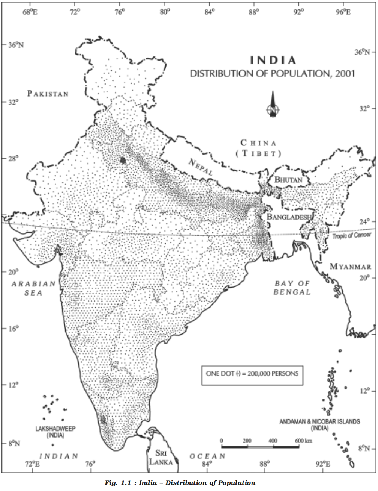
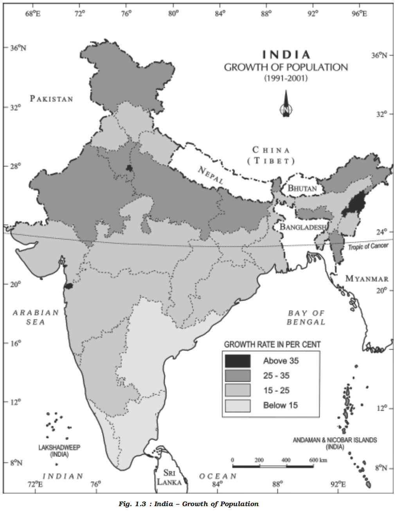
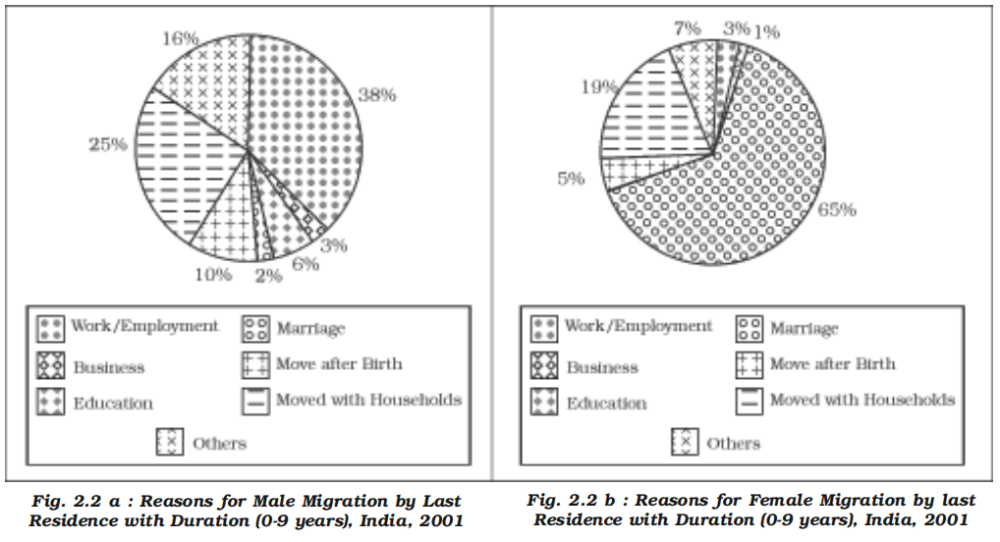
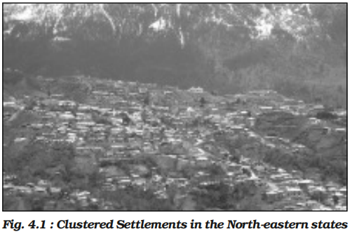
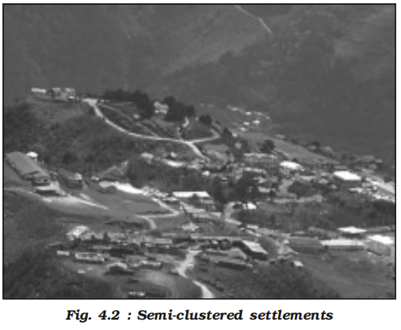
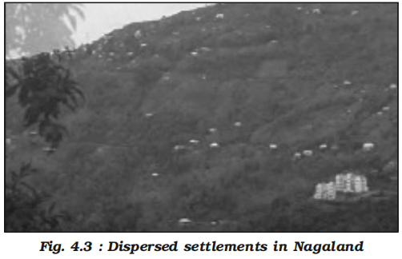
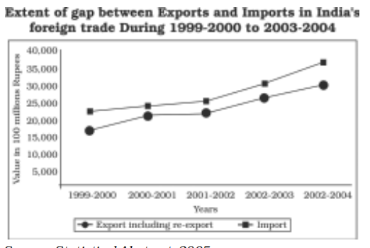

India people and economy
- Population distribution, density, growth and composition
- Introduction
- Economic geography is part of human geography
- The people are very important component of a country
- India is the second most populous country after China in the world with its total population of 1,028 million (2001)
- India’s population is larger than the total population of North America, South America and Australia put together
- More often, it is argued that such a large population invariably puts pressure on its limited resources and is also responsible for many socio-economic problems in the country
- Sources of population data
- Population data are collected through Census operation held every 10 years in our country
- The first population Census in India was conducted in 1872 but its first complete Census was conducted only in 1881
- Distribution of population
- 
- Overview
- Examine Fig. 1.1 and try to describe the patterns of spatial distribution of population shown on it
- It is clear that India has a highly uneven pattern of population distribution
- The percentage shares of population of the states and Union Territories in the country (Appendix–i) show that Uttar Pradesh has the highest population followed by Maharashtra, Bihar, West Bengal and Andhra Pradesh
- Check from the table (Appendix–i) that U.P., Maharashtra, Bihar, West Bengal, Andhra Pradesh along with Tamil Nadu, Madhya Pradesh, Rajasthan, Karnataka and Gujarat, together account for about 76 per cent of the total population of the country
- On the other hand, share of population is very small in the states like Jammu & Kashmir (0.98%), Arunachal Pradesh (0.11%) and Uttaranchal (0.83%) inspite of theses states having fairly large geographical area
- Factors Influencing Distribution of Population in India
- Overview
- The uneven spatial distribution of population in India suggests a close relationship between population and various physical, socio-economic, and historical factors.
- Population density is highest in regions like the North Indian Plains, river deltas, and coastal areas, and sparse in parts of central and southern India, the Himalayas, and northeastern states.
- This pattern is shaped by both natural features and human interventions over time.
- Physical Factors
- Climate, terrain, soil fertility, and water availability significantly determine where people settle.
- Favourable climate and flat fertile plains encourage dense population.
- Inhospitable terrains like the Himalayas and arid regions like Rajasthan have sparse population.
- Availability of water from rivers, such as the Ganga and Brahmaputra, leads to dense settlements.
- Example: Despite Rajasthan’s arid climate, irrigation facilities have allowed some areas to develop moderate population density.
- Socio-Economic Factors
- Evolution of settled agriculture and development of agricultural infrastructure influence population distribution.
- Fertile areas with intensive agriculture attract dense population due to employment and food security.
- Historical settlement patterns—early civilizations along river valleys—have led to continued population concentrations.
- Even in degraded environments like the Ganga plains, population remains high due to socio-economic roots.
- Technological and Infrastructure Factors
- Development of transport networks has improved connectivity and made previously inaccessible regions more habitable.
- Industrialisation and urbanisation have driven people towards cities for better economic opportunities.
- Urban centres like Delhi, Mumbai, Kolkata, Bengaluru, Chennai, Pune, Ahmedabad, and Jaipur exhibit high population density due to employment, services, and lifestyle factors.
- Example: Jharkhand, with its mineral and energy resources, has witnessed growth in population density through industrial activity.
- Historical and Political Factors
- Colonial-era infrastructure, ports, railways, and administrative centres influenced early population patterns.
- Post-independence development policies further reinforced existing distribution trends.
- Migration policies, displacement, and political unrest in some areas have also caused population shifts.
- Density of population
-  - Overview
- Density of population, is expressed as number of persons per unit area
- It helps in getting a better understanding of the spatial distribution of population in relation to land
- The density of population in India (2001) is 313 persons per sq km and ranks third among the most densely populated countries of Asia following Bangladesh (849 persons) and Japan (334 persons)
- There has been a steady increase of about 200 persons per sq km over the last 50 years as the density of population increased from 117 persons/ sq km in 1951 to 313 persons/sq km in 2001
- Spatial variation
- The data shown in Appendix (i) give an idea of spatial variation of population densities in the country which ranges from as low as 13 persons per sq km in Arunachal Pradesh to 9,340 persons in the National Capital Territory of Delhi
- Among the northern Indian States, West Bengal (903), Bihar (880) and Uttar Pradesh (690) have higher densities, while Kerala (819) and Tamil Nadu (480) have higher densities among the peninsular Indian states
- States like Assam, Gujarat, Andhra Pradesh, Haryana, Jharkhand, Orissa have moderate densities
- The hill states of the Himalayan region and North eastern states of India (excluding Assam) have relatively low densities while the Union Territories (excluding Andaman and Nicobar islands) have very high densities of population (Fig. 1.2)
- Physiological and agricultural densities
- The density of population, as discussed in the earlier paragraph, is a crude measure of human and land relationship
- To get a better insight into the human-land ratio in terms of pressure of population on total cultivable land, the physiological and the agricultural densities should be found out which are significant for a country like India having a large agricultural population
- Physiological density = total population / net cultivated area
- Agricultural density = total agricultural population / net cultivable area
- Agricultural population includes cultivators and agricultural labourers and their family members
- Growth of population
-
- Overview
- Density of population, is expressed as number of persons per unit area
- It helps in getting a better understanding of the spatial distribution of population in relation to land
- The density of population in India (2001) is 313 persons per sq km and ranks third among the most densely populated countries of Asia following Bangladesh (849 persons) and Japan (334 persons)
- There has been a steady increase of about 200 persons per sq km over the last 50 years as the density of population increased from 117 persons/ sq km in 1951 to 313 persons/sq km in 2001
- Spatial variation
- The data shown in Appendix (i) give an idea of spatial variation of population densities in the country which ranges from as low as 13 persons per sq km in Arunachal Pradesh to 9,340 persons in the National Capital Territory of Delhi
- Among the northern Indian States, West Bengal (903), Bihar (880) and Uttar Pradesh (690) have higher densities, while Kerala (819) and Tamil Nadu (480) have higher densities among the peninsular Indian states
- States like Assam, Gujarat, Andhra Pradesh, Haryana, Jharkhand, Orissa have moderate densities
- The hill states of the Himalayan region and North eastern states of India (excluding Assam) have relatively low densities while the Union Territories (excluding Andaman and Nicobar islands) have very high densities of population (Fig. 1.2)
- Physiological and agricultural densities
- The density of population, as discussed in the earlier paragraph, is a crude measure of human and land relationship
- To get a better insight into the human-land ratio in terms of pressure of population on total cultivable land, the physiological and the agricultural densities should be found out which are significant for a country like India having a large agricultural population
- Physiological density = total population / net cultivated area
- Agricultural density = total agricultural population / net cultivable area
- Agricultural population includes cultivators and agricultural labourers and their family members
- Growth of population
- 
- Overview
- Growth of population is the change in the number of people living in a particular area between two points of time
- Its rate is expressed in percentage
- Population growth has two components namely; natural and induced
- While the natural growth is analysed by assessing the crude birth and death rates, the induced components are explained by the volume of inward and outward movement of people in any given area
- However, in the present chapter, we will only discuss the natural growth of India’s population
- The decadal and annual growth rates of population in India are both very high and steadily increasing over time
- The annual growth rate of India’s population is 2.4 per cent
- At this current rate of increase, it is estimated that the country’s population will double itself in another 36 years and even surpass population of China
- Population doubling time
- Population doubling time is the time taken by any population to double itself at its current annual growth rate
- Phases of population growth
- The growth rate of population in India over the last one century has been caused by annual birth rate and death rate and rate of migration and thereby shows different trends
- There are four distinct phases of growth identified within this period:
Decadal Growth Rates in India, 1901-2001
| Census Year |
Total Population |
Absolute Growth |
Percentage Growth |
| 1901 |
238,396,327 |
— |
— |
| 1911 |
252,093,390 |
(+) 13,697,063 |
(+) 5.75% |
| 1921 |
251,321,213 |
(-) 772,117 |
(-) 0.31% |
| 1931 |
278,977,238 |
(+) 27,656,025 |
(+) 11.60% |
| 1941 |
318,660,580 |
(+) 39,683,342 |
(+) 14.22% |
| 1951 |
361,088,090 |
(+) 42,420,485 |
(+) 13.31% |
| 1961 |
439,234,771 |
(+) 77,682,873 |
(+) 21.51% |
| 1971 |
548,159,652 |
(+) 108,924,881 |
(+) 24.80% |
| 1981 |
683,329,097 |
(+) 135,169,445 |
(+) 24.66% |
| 1991 |
846,302,688 |
(+) 162,973,591 |
(+) 23.85% |
| 2001 |
1,028,610,328 |
(+) 182,307,640 |
(+) 21.54% |
* Decadal growth rate: g = ((P2 * P1)/P2) * 100
Where,
P1 = population of the base year
P2 = population of the present year
- Phase I
- The period from 1901-1921 is referred to as a period of stagnant or stationary phase of growth of India’s population, since in this period growth rate was very low, even recording a negative growth rate during 1911-1921
- Both the birth rate and death rate were high keeping the rate of increase low (Appendix–iii)
- Poor health and medical services, illiteracy of people at large and inefficient distribution system of food and other basic necessities were largely responsible for a high birth and death rates in this period
- Phase II
- The decades 1921-1951 are referred to as the period of steady population growth
- An overall improvement in health and sanitation throughout the country brought down the mortality rate
- At the same time better transport and communication system improved distribution system
- The crude birth rate remained high in this period leading to higher growth rate than the previous phase
- This is impressive at the backdrop of Great Economic Depression, 1920s and World War II
- Phase III
- The decades 1951-1981 are referred to as the period of population explosion in India, which was caused by a rapid fall in the mortality rate but a high fertility rate of population in the country
- The average annual growth rate was as high as 2.2 per cent
- It is in this period, after the Independence, that developmental activities were introduced through a centralised planning process and economy started showing up ensuring the improvement of living condition of people at large
- Consequently, there was a high natural increase and higher growth rate
- Besides, increased international migration bringing in Tibetans, Bangladeshis, Nepalies and even people from Pakistan contributed to the high growth rate
- Phase IV
- In the post 1981 till present, the growth rate of country’s population though remained high, has started slowing down gradually (Table 1.1)
- A downward trend of crude birth rate is held responsible for such a population growth
- This was, in turn, affected by an increase in the mean age at marriage, improved quality of life particularly education of females in the country
- Future projection
- The growth rate of population is, however, still high in the country, and it has been projected by World Development Report that population of India will touch 1,350 million by 2025
- The analysis done so far shows the average growth rate, but the country also has wide variation (Appendix–iv) in growth rates from one area to another which is discussed below
- Regional variation in population growth
- The growth rate of population during 1991-2001 in Indian States and Union Territories shows very obvious pattern
- The States like Kerala, Karnataka, Tamil Nadu, Andhra Pradesh, Orissa, Pondicherry, and Goa show a low rate of growth not exceeding 20 per cent over the decade
- Kerala registered the lowest growth rate (9.4) not only in this group of states but also in the country as a whole
- A continuous belt of states from west to east in the north-west, north , and north central parts of the country has relatively high growth rate than the southern states
- It is in this belt comprising Gujarat, Maharashtra, Rajasthan, Punjab, Haryana, Uttar Pradesh, Uttaranchal, Madhya Pradesh, Sikkim, Assam, West Bengal, Bihar, Chhattisgarh, and Jharkhand, the growth rate on the average remained 20-25 per cent
- Adolescent population
- An important aspect of population growth in India is the growth of its adolescents
- At present the share of adolescents i.e. up to the age group of 10-19 years is about 22 per cent (2001), among which male adolescents constitute 53 per cent and female adolescents constitute 47 per cent
- The adolescent population, though, regarded as the youthful population having high potentials, but at the same time they are quite vulnerable if not guided and channelised properly
- There are many challenges for the society as far as these adolescents are concerned, some of which are lower age at marriage
- Illiteracy – particularly female illiteracy, school dropouts, low intake of nutrients, high rate of maternal mortality of adolescent mothers, high rates of HIV/AIDS infections, physical and mental disability or retardedness, drug abuse and alcoholism, juvenile delinquency and commitence of crimes, etc
- In view of these, the Government of India has undertaken certain policies to impart proper education to the adolescent groups so that their talents are better channelised and properly utilised
- The National Youth Policy is one example which has been designed to look into the overall development of our large youth and adolescent population
- The National Youth Policy of Government of India, launched in 2003, stresses on an all-round improvement of the youth and adolescents enabling them to shoulder responsibility towards constructive development of the country
- It also aims at reinforcing the qualities of patriotism and responsible citizenship
- The thrust of this policy is youth empowerment in terms of their effective participation in decision making and carrying the responsibility of an able leader
- Special emphasis was given in empowering women and girl child to bring parity in the male-female status
- Moreover, deliberate efforts were made to look into youth health, sports and recreation, creativity and awareness about new innovations in the spheres of science and technology
- It appears from the above discussion that the growth rate of population is widely variant over space and time in the country and also highlights various social problems related to the growth of population
- However, in order to have a better insight into the growth pattern of population it is also necessary to look into the social composition of population
- Population composition
- Overview
- Population composition is a distinct field of study within population geography with a vast coverage of analysis of age and sex, place of residence, ethnic characteristics, tribes, language, religion, marital status, literacy and education, occupational characteristics, etc
- In this section, the composition of Indian population with respect to their rural-urban characteristics, language, religion and pattern of occupation will be discussed
- Rural – urban composition
- Composition of population by their respective places of residence is an important indicator of social and economic characteristics
- This becomes even more significant for a country where about 72 per cent of its total population lives in villages
- Do you know that India has 638,588 villages according to the Census 2001 out of which 593,731 (93 per cent) are inhabited villages?
- However, the distribution of rural population is not uniform throughout the country
- You might have noted that the states like Bihar and Sikkim have very high percentage of rural population
- The states of Goa and Maharashtra have only little over half of their total population residing in villages
- The Union Territories, on the other hand, have smaller proportion of rural population, except Dadra and Nagar Haveli (77.1 per cent)
- The size of villages also varies considerably
- It is less than 200 persons in the hill states of north-eastern India, Western Rajasthan and Rann of Kuchchh and as high as 17 thousand persons in the states of Kerala and in parts of Maharashtra
- A thorough examination of the pattern of distribution of rural population of India reveals that both at intra-State and inter-State levels, the relative degree of urbanisation and extent of rural-urban migration regulate the concentration of rural population
- You have noted that contrary to rural population, the proportion of urban population (27.8 per cent) in India is quite low but it is showing a much faster rate of growth over the decades
- In fact since 1931, the growth rate of urban population has accelerated due to enhanced economic development and improvement in health and hygienic conditions
- The distribution of urban population too, as in the case of total population, has a wide variation throughout the country (Appendix–iv)
- It is, however, noticed that in almost all the states and Union Territories, there has been a considerable increase of urban population
- This indicates both development of urban areas in terms of socio-economic conditions and an increased rate of rural-urban migration
- The rural-urban migration is conspicuous in the case of urban areas along the main road links and railroads in the North Indian Plains, the industrial areas around Kolkata, Mumbai, Bangalore – Mysore, Madurai – Coimbatore, Ahmedabad – Surat, Delhi – Kanpur and Ludhiana – Jalandhar
- In the agriculturally stagnant parts of the middle and lower Ganga Plains, Telengana, non-irrigated Western Rajasthan, remote hilly, tribal areas of northeast, along the flood prone areas of Peninsular India and along eastern part of Madhya Pradesh, the degree of urbanisation has remained low
- Linguistic composition
- Overview
- India is a land of linguistic diversity
- According to Grierson (Linguistic Survey of India, 1903 – 1928) there were 179 languages and as many as 544 dialects in the country
- In the context of modern India, there are about 18 scheduled languages (1991 census) and a number of non-scheduled languages
- See how many languages appear on a ten Rs note
- Among the scheduled languages, the speakers of Hindi have the highest percentage (40.42)
- The smallest language groups are Kashmiri and Sanskrit speakers (0.01 per cent each)
- However, it is noticed that the linguistic regions in the country do not maintain a sharp and distinct boundary, rather they gradually merge and overlap in their respective border zones
- Linguistic classification
- The speakers of major Indian languages belong to four language families, which have their sub-families and branches or groups
- This can be better understood from Table 1.2
-
| Family |
Sub-Family |
Branch/Group |
Speech Areas (States/Regions) |
Austro-Asiatic
(<1%) |
Mon-Khmer |
Nicobarese |
Nicobar Islands |
| Munda |
Kherwari, Mundari |
Jharkhand, Odisha, West Bengal, Bihar, Chhattisgarh, Assam, Maharashtra |
Dravidian (Dravida)
~20% |
South Dravidian |
Tamil, Kannada, Malayalam |
Tamil Nadu, Karnataka, Kerala |
| Central Dravidian |
Kolami–Parji |
Andhra Pradesh, Telangana, Madhya Pradesh, Odisha, Maharashtra |
| North Dravidian |
Kurukh, Malto |
Jharkhand, Odisha, Bihar, Madhya Pradesh, West Bengal |
Sino-Tibetan / Tibeto-Myanmari
~0.85% |
Tibeto-Himalayan |
Bodic (Tibetan), Himalayan |
Jammu & Kashmir, Himachal Pradesh, Sikkim |
| North Assam |
Mishing, Adi, Apatani |
Arunachal Pradesh, Assam |
| Siamese-Chinese |
Assam-Myanmari |
Nagaland, Manipur, Mizoram, Tripura, Meghalaya, Assam |
Indo-European (Aryan)
~73% |
Iranian |
Persian, Pashto (outside India) |
Primarily spoken outside India (Iran, Afghanistan) |
| Dardic |
Shina, Kashmiri |
Jammu & Kashmir |
| Indo-Aryan |
Hindi, Bengali, Marathi, Gujarati, Punjabi, Assamese, Odia, Urdu, etc. |
Jammu & Kashmir, Punjab, Himachal Pradesh, Uttarakhand, Uttar Pradesh, Rajasthan, Haryana, Madhya Pradesh, Bihar, Odisha, West Bengal, Assam, Gujarat, Maharashtra, Goa, Chhattisgarh, Jharkhand, Delhi |
- Religious composition
- Overview
- Religion is one of the most dominant forces affecting the cultural and political life of the most of Indians
- Since religion virtually permeates into almost all the aspects of people’s family and community lives, it is important to study the religious composition in detail
- The spatial distribution of religious communities in the country (Appendix–v) shows that there are certain states and districts having large numerical strength of one religion, while the same may be very negligibly represented in other states
- Distribution of religious communities
- Hindus are distributed as a major group in many states (ranging from 70 - 90 per cent and above) except the districts of states along Indo-Bangladesh border, Indo-Pak border, Jammu & Kashmir, Hill States of North-East and in scattered areas of Deccan Plateau and Ganga Plain
- Muslims, the largest religious minority, are concentrated in Jammu & Kashmir, certain districts of West Bengal and Kerala, many districts of Uttar Pradesh , in and around Delhi and in Lakshadweep
- They form majority in Kashmir valley and Lakshadweep
- The Christian population is distributed mostly in rural areas of the country
- The main concentration is observed along the Western coast around Goa, Kerala and also in the hill states of Meghalaya, Mizoram, Nagaland, Chotanagpur area and Hills of Manipur
- Sikhs are mostly concentrated in relatively small area of the country, particularly in the states of Punjab, Haryana and Delhi
- Jains and Buddhists, the smallest religious groups in India have their concentration only in selected areas of the country
- Jains have major concentration in the urban areas of Rajasthan, Gujarat and Maharashtra, while the Buddhists are concentrated mostly in Maharashtra
- The other areas of Buddhist majority are Sikkim, Arunachal Pradesh, Ladakh in Jammu & Kashmir, Tripura, and Lahul and Spiti in Himachal Pradesh
- Religion and landscapes
- Formal expression of religions on landscape is manifested through sacred structures, use of cemeteries and assemblages of plants and animals, groves of trees for religious purposes
- Sacred structures are widely distributed throughout the country
- These may range from inconspicuous village shrines to large Hindu temples, monumental masjids or ornately designed cathedrals in large metropolitan cities
- These temples, masjids, gurudwaras, monasteries and churches differ in size, form, space – use and density, while attributing a special dimension to the total landscape of the area
- The other religions of India include Zoroastrians, tribal and other indigenous faiths and beliefs
- These groups are concentrated in small pockets scattered throughout the country
- Composition of working population
-  - Overview
- The population of India according to their economic status is divided into three groups, namely; main workers, marginal workers and non-workers
- Standard census definition
- Main Worker is a person who works for at least 183 days in a year
- Marginal Worker is a person who works for less than 183 days in a year
- It is observed that in India, the proportion of workers (both main and marginal) is only 39 per cent (2001) leaving a vast majority of 61 per cent as non-workers
- This indicates an economic status in which there is a larger proportion of dependent population, further indicating possible existence of large number of unemployed or under employed people
- The proportion of working population, of the states and Union Territories show a moderate variation from about 25 per cent in Goa to about 53 per cent in Mizoram
- The states with larger percentages of workers are Himachal Pradesh, Sikkim, Chhattisgarh, Andhra Pradesh, Karnataka, Arunachal Pradesh, Nagaland, Manipur and Meghalaya
- Among the Union Territories, Dadra and Nagar Haveli and Daman and Diu have higher participation rate
- It is understood that, in the context of a country like India, the work participation rate tends to be higher in the areas of lower levels of economic development since number of manual workers are needed to perform the subsistence or near subsistence economic activities
- Occupational composition
- The occupational composition (see box) of India’s population (which actually means engagement of an individual in farming, manufacturing trade, services or any kind of professional activities) shows a large proportion of primary sector workers compared to secondary and tertiary sectors
- About 58.2 per cent of total working population are cultivators and agricultural labourers, whereas only 4.2% of workers are engaged in household industries and 37.6 % are other workers including non-household industries, trade, commerce, construction and repair and other services
- As far as the occupation of country’s male and female population is concerned, male workers out-number female workers in all the three sectors (Fig.1.4 and Table 1.4)
- Occupational categories
- The 2001 Census has divided the working population of India into four major categories:
- 1. Cultivators
- 2. Agricultural Labourers
- 3. Household Industrial Workers
- 4. Other Workers
- The number of female workers is relatively high in primary sector, though in recent years there has been some improvement in work participation of women in secondary and tertiary sectors
- It is important to note that the proportion of workers in the agricultural sector in India has been on a consistent decline over the past few decades — from around 66.5% in 1991 to 58.2% in 2001, and further to approximately 54.6% in 2011
-
- Overview
- The population of India according to their economic status is divided into three groups, namely; main workers, marginal workers and non-workers
- Standard census definition
- Main Worker is a person who works for at least 183 days in a year
- Marginal Worker is a person who works for less than 183 days in a year
- It is observed that in India, the proportion of workers (both main and marginal) is only 39 per cent (2001) leaving a vast majority of 61 per cent as non-workers
- This indicates an economic status in which there is a larger proportion of dependent population, further indicating possible existence of large number of unemployed or under employed people
- The proportion of working population, of the states and Union Territories show a moderate variation from about 25 per cent in Goa to about 53 per cent in Mizoram
- The states with larger percentages of workers are Himachal Pradesh, Sikkim, Chhattisgarh, Andhra Pradesh, Karnataka, Arunachal Pradesh, Nagaland, Manipur and Meghalaya
- Among the Union Territories, Dadra and Nagar Haveli and Daman and Diu have higher participation rate
- It is understood that, in the context of a country like India, the work participation rate tends to be higher in the areas of lower levels of economic development since number of manual workers are needed to perform the subsistence or near subsistence economic activities
- Occupational composition
- The occupational composition (see box) of India’s population (which actually means engagement of an individual in farming, manufacturing trade, services or any kind of professional activities) shows a large proportion of primary sector workers compared to secondary and tertiary sectors
- About 58.2 per cent of total working population are cultivators and agricultural labourers, whereas only 4.2% of workers are engaged in household industries and 37.6 % are other workers including non-household industries, trade, commerce, construction and repair and other services
- As far as the occupation of country’s male and female population is concerned, male workers out-number female workers in all the three sectors (Fig.1.4 and Table 1.4)
- Occupational categories
- The 2001 Census has divided the working population of India into four major categories:
- 1. Cultivators
- 2. Agricultural Labourers
- 3. Household Industrial Workers
- 4. Other Workers
- The number of female workers is relatively high in primary sector, though in recent years there has been some improvement in work participation of women in secondary and tertiary sectors
- It is important to note that the proportion of workers in the agricultural sector in India has been on a consistent decline over the past few decades — from around 66.5% in 1991 to 58.2% in 2001, and further to approximately 54.6% in 2011
-
| Sector |
1991 Census |
2001 Census |
2011 Census |
| Male (M) |
Female (F) |
Total (%) |
Male (M) |
Female (F) |
Total (%) |
Male (M) |
Female (F) |
Total (%) |
| Primary (Agriculture, Forestry, Fishing, Mining) |
120.1 M |
74.9 M |
66.5% |
142.7 M |
91.3 M |
58.2% |
151.0 M |
112.1 M |
54.6% |
| Secondary (Manufacturing, Construction, Electricity) |
19.2 M |
15.8 M |
12.0% |
8.74 M |
8.21 M |
10.5% |
39.4 M |
24.0 M |
13.2% |
| Tertiary (Trade, Transport, Education, Services) |
47.0 M |
16.0 M |
21.5% |
123.5 M |
27.7 M |
31.3% |
142.6 M |
32.7 M |
32.2% |
- Consequently, the participation rate in secondary and tertiary sector has registered an increase
- This indicates a shift of dependence of workers from farm-based occupations to non-farm based ones, indicating a sectoral shift in the economy of the country
- Spatial variation
- The spatial variation of work participation rate in different sectors in the country (Appendix–v) is very wide
- For instance, the states like Himachal Pradesh and Nagaland have very large shares of cultivators
- On the other hand states like Andhra Pradesh, Chhattisgarh, Orissa, Jharkhand, West Bengal and Madhya Pradesh have higher proportion of agricultural labourers
- The highly urbanised areas like Delhi, Chandigarh and Pondicherry have a very large proportion of workers being engaged in other services
- This indicates not only availability of limited farming land, but also large scale urbanisation and industrialisation requiring more workers in non-farm sectors
- Migration
- Introduction
- Case study: Ram Babu
- Ram Babu, working as an engineer in Bhilai Steel Plant, Chhattisgarh, was born in a small village of district Bhojpur, Bihar
- At an early age of twelve he moved to a nearby town Ara to complete his intermediate level studies
- He went to Sindri, Jharkhand for his engineering degree and he got a job at Bhilai, where he is living for the last 31 years
- His parents were illiterate and the only source of their livelihood was meagre income from agriculture
- They spent their whole life in that village
- Ram Babu has three children who got their education up to the intermediate level at Bhilai and then moved to different places for higher education
- First one studied at Allahabad and Mumbai and is presently working in Delhi as a scientist
- The second child got her higher education from different universities in India and is now working in USA
- The third one after finishing her education settled at Surat after marriage
- Overview
- This is not a story of only Ram Babu and his children but such movements are increasingly becoming universal trend
- People have been moving from one village to another, from villages to towns, from smaller towns to bigger towns and from one country to another
- In your Book Fundamentals of Human Geography you have already learnt about the concept and definition of migration
- Migration has been an integral part and a very important factor in redistributing population over time and space
- India has witnessed the waves of migrants coming to the country from Central and West Asia and also from Southeast Asia
- In fact, the history of India is a history of waves of migrants coming and settling one after another in different parts of the country
- In the words of a renowned poet Firaque Gorakhpuri:
- SAR ZAMIN-E-HIND PAR AQWAM-E-ALAM KE FIRAQUE CARVAN BASTE GAYE, HINDOSTAN BANTA GAYA
- (The carvans of people from all parts of the world kept on coming and settling in India and led to the formation of India.)
- Similarly, large numbers of people from India too have been migrating to places in search of better opportunities specially to the countries of the Middle-East, Western Europe, America, Australia and East and South East Asia
- Indian diaspora [spread of a people from their original homeland]
- During colonial period (British period) millions of the indentured labourers were sent to Mauritius, Caribbean islands Trinidad, Tobago and Guyana), Fiji and South Africa by British from Uttar Pradesh and Bihar; to Reunion Island, Guadeloupe, Martinique and Surinam by French and Dutch and by Portuguese from Goa, Daman and Diu to Angola, Mozambique to work as plantation workers
- All such migrations were covered under the time-bound contract known as Girmit Act (Indian Emigration Act)
- However, the living conditions of these indentured labourers were not better than the slaves
- The second wave of migrants ventured out into the neighbouring countries in recent times as professionals, artisans, traders and factory workers, in search of economic opportunities to Thailand, Malaysia, Singapore, Indonesia, Brunei and African countries, etc. and the trend still continues
- There was a steady outflow of India’s semi-skilled and skilled labour in the wake of the oil boom in West Asia in the 1970s
- There was also some outflow of entrepreneurs, storeowners, professionals, businessmen to Western Countries
- Third wave, of migrant was comprised professionals like doctors, engineers (1960s onwards), software engineers, management consultants, financial experts, media persons (1980s onwards), and others migrated to countries such as USA, Canada, UK, Australia, New Zealand and Germany, etc
- These professional enjoy the distinction of being one of highly educated, the highest earning and prospering groups
- After liberalisation, in the 90s education and knowledge–based Indian emigration has made Indian Diaspora one of the most powerful diasporas in the world
- In all these countries, Indian diaspora has been playing an important role in the development of the respective countries
- Migration data in India
- Overview
- You are familiar with Census in India
- It contains information about migration in the country
- Actually migration was recorded beginning from the first Census of India conducted in 1881
- This data were recorded on the basis of place of birth
- However, the first major modification was introduced in 1961 Census by bringing in two additional components viz; place of birth i.e. village or town and duration of residence (if born elsewhere)
- Further in 1971, additional information on place of last residence and duration of stay at the place of enumeration were incorporated
- Information on reasons for migration were incorporated in 1981 Census and modified in consecutive Censuses
- Census questions on migration
- In the Census the following questions are asked on migration:
- Is the person born in this village or town? If no, then further information is taken on rural/urban status of the place of birth, name of district and state and if outside India then name of the country of birth
- Has the person come to this village or town from elsewhere? If yes, then further questions are asked about the status (rural/urban) of previous place of residence, name of district and state and if outside India then name of the country
- In addition, reasons for migration from the place of last residence and duration of residence in place of enumeration are also asked
- Bases of enumeration
- In the Census of India migration is enumerated on two bases:
- 1. Place of birth, if the place of birth is different from the place of enumeration (known as life-time migrant)
- 2. Place of residence, if the place of last residence is different from the place of enumeration (known as migrant by place of last residence)
- Can you imagine the proportion of migrants in the population of India?
- As per 2001 census, out of 1,029 million people in the country, 307 million (30 per cent) were reported as migrants by place of birth
- However, this figure was 315 million (31 per cent) in case of place of last residence
- Streams of migration
-  - Overview
- A few facts pertaining to the internal migration (within the country) and international migration (out of the country and into the country from other countries) are presented here
- Internal migration
- Under the internal migration, four streams are identified:
- (a) rural to rural (R-R)
- (b) rural to urban (R-U)
- (c) urban to urban (U-U)
- (d) urban to rural (U-R)
- In India, during 2001, out of 315 million migrants, enumerated on the basis of the last residence, 98 million had changed their place of residence in the last ten years
- Out of these, 81 million were intra-state migrants
- The stream was dominated by female migrants
- Most of these were migrants related to marriage
- The distribution of male and female migrants in different streams of intra-state and inter-state migration is presented in Fig. 2.1 a and 2.1 b
- It is clearly evident that females predominate the streams of short distance rural to rural migration in both types of migration
- Contrary to this, men predominate the rural to urban stream of inter-state migration due to economic reasons
- International migration
- Apart from these streams of internal migration, India also experiences immigration from and emigration to the neighbouring countries
- Table 2.1 presents the details of migrants from neighbouring countries
- Indian Census 2001 has recorded that more than 5 million person have migrated to India from other countries
- Out of these, 96 per cent came from the neighbouring countries: Bangladesh (3.0 million) followed by Pakistan (0.9 million) and Nepal (0.5 million)
- Included in this are 0.16 million refugees from Tibet, Sri Lanka, Bangladesh, Pakistan, Afghanistan, Iran, and Myanmar
- As far as emigration from India is concerned it is estimated that there are around 20 million people of Indian Diaspora, spread across 110 countries
-
- Overview
- A few facts pertaining to the internal migration (within the country) and international migration (out of the country and into the country from other countries) are presented here
- Internal migration
- Under the internal migration, four streams are identified:
- (a) rural to rural (R-R)
- (b) rural to urban (R-U)
- (c) urban to urban (U-U)
- (d) urban to rural (U-R)
- In India, during 2001, out of 315 million migrants, enumerated on the basis of the last residence, 98 million had changed their place of residence in the last ten years
- Out of these, 81 million were intra-state migrants
- The stream was dominated by female migrants
- Most of these were migrants related to marriage
- The distribution of male and female migrants in different streams of intra-state and inter-state migration is presented in Fig. 2.1 a and 2.1 b
- It is clearly evident that females predominate the streams of short distance rural to rural migration in both types of migration
- Contrary to this, men predominate the rural to urban stream of inter-state migration due to economic reasons
- International migration
- Apart from these streams of internal migration, India also experiences immigration from and emigration to the neighbouring countries
- Table 2.1 presents the details of migrants from neighbouring countries
- Indian Census 2001 has recorded that more than 5 million person have migrated to India from other countries
- Out of these, 96 per cent came from the neighbouring countries: Bangladesh (3.0 million) followed by Pakistan (0.9 million) and Nepal (0.5 million)
- Included in this are 0.16 million refugees from Tibet, Sri Lanka, Bangladesh, Pakistan, Afghanistan, Iran, and Myanmar
- As far as emigration from India is concerned it is estimated that there are around 20 million people of Indian Diaspora, spread across 110 countries
-
| Country/Region |
No. of Immigrants |
% of Total Immigrants |
| Total International Migration |
5.16 million |
100% |
| Migration from Neighbouring Countries |
4.92 million |
95.5% |
| Afghanistan |
9,194 |
0.2% |
| Bangladesh |
3.08 million |
59.8% |
| Bhutan |
8,337 |
0.2% |
| China |
23,721 |
0.5% |
| Myanmar |
49,086 |
1.0% |
| Nepal |
5.97 lakh |
11.6% |
| Pakistan |
9.97 lakh |
19.3% |
| Sri Lanka |
1.49 lakh |
2.9% |
- Spatial variation in migration
- Some states like Maharashtra, Delhi, Gujarat and Haryana attract migrants from other states such as Uttar Pradesh, Bihar, etc. (see Appendix–vii for detail)
- Maharashtra occupied first place in the list with 2.3 million net in-migrants, followed by Delhi, Gujarat and Haryana
- On the other hand, Uttar Pradesh (-2.6 million) and Bihar (-1.7 million) were the states, which had the largest number of net out-migrants from the state
- Among the urban agglomeration (UA), Greater Mumbai received the higher number of in migrants
- Intra-states migration constituted the largest share in it
- These differences are largely due to the size of the state in which these Urban Agglomeration are located
- Causes of Migration
- 
- Overview
- Migration is a multidimensional socio-economic process involving the movement of people across geographical boundaries due to a combination of factors.
- Despite emotional and cultural attachment to native regions, millions migrate due to both distress and aspiration.
- Migration can be classified on the basis of motive:
- Push factors – that compel people to leave the place of origin
- Pull factors – that attract them to the destination
- Push factors
- Economic distress:
- Agrarian stagnation, disguised unemployment, and rural indebtedness force people to seek alternate livelihoods.
- Fragmentation of land holdings and poor mechanisation limit income generation in rural areas.
- Environmental causes:
- Natural disasters such as floods (Assam, Bihar), droughts (Bundelkhand), cyclones (Odisha, Andhra coast), and earthquakes (Gujarat, Himalayan belt) result in displacement.
- Infrastructural deficit:
- Poor access to education, healthcare, transport, and housing facilities push people, especially youth, to urban centers.
- Socio-political instability:
- Migration is often triggered by caste or communal conflicts, insurgency (Northeast, Chhattisgarh), and even evictions due to development projects like dams and highways.
- Pull factors
- Economic opportunities:
- Industrial hubs and urban centers offer jobs in manufacturing, construction, transport, services, and informal sectors.
- Higher wages, even in informal jobs, attract large rural populations.
- Urban amenities [a desirable or useful feature or facility of a building or place]:
- Better access to hospitals, educational institutions, roads, power supply, internet, and sanitation compared to rural areas.
- Social networks:
- Chain migration is common where earlier migrants facilitate the relocation of relatives and neighbors.
- Aspirational mobility:
- Desire for improved quality of life, social mobility, and access to modern lifestyle amenities.
- Gender dimension of migration
- Migration patterns are highly gendered in India.
- As per Census 2011:
- Around 65% of female migration is due to marriage.
- In contrast, 38% of male migration is driven by employment-related reasons.
- This reflects the patriarchal and patrilocal structure of Indian society where women shift to their husband’s residence post-marriage.
- In tribal and matrilineal societies such as Meghalaya, women's migration for education and employment is relatively higher.
- Female economic migration is often underreported due to classification under ‘accompanying family’.
- Policy implications
- Migration is both a challenge and an opportunity for development planning.
- It requires coordinated efforts across states for labour rights, portable social security (like e-Shram cards), and improved urban infrastructure.
- Gender-sensitive migration policies must recognize unpaid and invisible contributions of women migrants.
- Migration data needs periodic updating beyond decadal Census to frame responsive public policies.
- Consequences of Migration
- Positive Consequences
- Economic Benefits
- Remittances from migrants boost the source region’s economy
- India received about US$11 billion in remittances [transfers of money from an individual abroad back to their home country, often to support family members and communities] in 2002
- States like Kerala, Punjab, and Tamil Nadu depend heavily on these inflows
- Internal remittances support rural households in Bihar, Odisha, Uttar Pradesh, etc.
- Migration contributed to agricultural modernization, e.g., Green Revolution success in Punjab and Haryana
- Provides labor supply to growing industries and urban services
- Demographic Advantages
- Redistributes population, relieving pressure on densely populated rural areas
- Migration predominantly involves working-age population, contributing to urban economic growth
- Helps urban centers develop diversified human resources and skills
- Social and Cultural Integration
- Migrants act as vectors for diffusion of new ideas: education, healthcare, family planning
- Promotes cultural exchange, leading to composite cultural identities and social pluralism
- Migrants enhance social mobility and exposure to modern lifestyles
- Empowerment of Women
- Migration for education and employment increases women’s autonomy and decision-making power
- Enhances women’s participation in the economy and social spheres
- Negative Consequences
- Economic Challenges
- Brain drain and loss of skilled manpower from source regions hampers local development
- Unregulated migration causes urban overcrowding and strain on infrastructure
- Growth of informal settlements and slums in metropolitan areas like Mumbai, Delhi, Bengaluru
- Unequal economic benefits: rural areas continue to suffer despite remittances
- Demographic Imbalances
- Age and sex selective migration causes skewed population structure in source and destination areas
- Out-migration leads to depopulation and ageing in states like Uttarakhand, Rajasthan, Madhya Pradesh
- Male-dominated migration results in altered sex ratios and social stress
- Social Disruption
- Migrants often experience alienation, social exclusion, and identity crises in host communities
- Increased vulnerability to crime, substance abuse, and anti-social behavior in crowded urban spaces
- Breakdown of traditional social networks and support systems
- Environmental Degradation
- Overpopulation in cities leads to over-exploitation of natural resources: water, air, land
- Unplanned urban sprawl causes deterioration of urban environment and health hazards
- Challenges in waste management and pollution control exacerbate urban living conditions
- Gender-Specific Strains
- Male selective out-migration increases workload and psychological burden on women left behind
- Migrant women face vulnerabilities including exploitation, harassment, and social isolation in urban centers
- Political and Administrative Issues
- Pressure on urban governance and public services due to rapid and unplanned migration
- Potential for social conflicts and communal tensions in heterogeneous migrant-receiving areas
- Difficulty in planning and implementing development policies due to dynamic migration patterns
- Human development
- Introduction
- Case study: Rekha
- Sixty years ago, Rekha was born in a family of small farmer in Uttaranchal
- She helped her mother in household chores
- While her brothers went to school, she did not receive any education
- She was dependent on her in laws after she was widowed immediately after marriage
- She could not be economically independent and faced neglect
- Her brother helped her to migrate to Delhi
- For the first time, she travelled by bus and train and was exposed to a large city like Delhi
- After a while, the same city which attracted her with its buildings, roads, avenues and facilities and amenities disillusioned her
- With greater familiarity of the city, she could comprehend the paradoxes
- The jhuggi and slum clusters, traffic jams, congestion, crimes, poverty, small children begging on traffic lights, people sleeping on footpaths, polluted water and air revealed another face of development
- She used to think whether development and under-development coexist?
- Whether development help some segments of population more than the other?
- Does development create haves and have nots?
- Let us examine these paradoxes and try to understand the phenomena
- Overview
- Of all the paradoxes of our times mentioned in the story, development is the most significant one
- Development of a few regions, individuals brought about in a short span of time leads to poverty and malnutrition for many along with large scale ecological degradation
- Is development class biased?
- Apparently, it is believed that “Development is freedom” which is often associated with modernisation, leisure, comfort and affluence
- In the present context, computerisation, industrialisation, efficient transport and communication network, large education system, advanced and modern medical facilities, safety and security of individuals, etc. are considered as the symbols of development
- Every individual, community and government measures its performance or levels of development in relation to the availability and access to some of these things
- But, this may be partial and one-sided view of development
- It is often called the western or euro-centric view of development
- For a postcolonial country like India, colonisation, marginalisation, social discrimination and regional disparity, etc. show the other face of development
- Thus, for India, development is a mixed bag of opportunities as well as neglect and deprivations
- There are a few areas like the metropolitan centres and other developed enclaves that have all the modern facilities available to a small section of its population
- At the other extreme of it, there are large rural areas and the slums in the urban areas that do not have basic amenities like potable water, education and health infrastructure available to majority of this population
- The situation is more alarming if one looks at the distribution of the development opportunities among different sections of our society
- It is a well-established fact that majority of the scheduled castes, scheduled tribes, landless agricultural labourers, poor farmers and slums dwellers, etc. are the most marginalised lot
- A large segment of female population is the worst sufferers among all
- It is also equally true that the relative as well as absolute conditions of the majority of these marginalised sections have worsened with the development happening over the years
- Consequently, vast majority of people are compelled to live under abject [experienced or present to the maximum degree] poverty and subhuman conditions
- Environmental and social impact
- There is yet another inter-related aspect of development that has direct bearings on the deteriorating human conditions
- It pertains to the environmental pollution leading to ecological crisis
- Air, soil, water and noise pollutions have not only led to the ‘tragedy of commons’ but these have also threatened the existence of our society
- Consequently, the poor are being subjected to three inter-related processes of declining capabilities; i.e.
- Social capabilities – due to displacement and weakening social ties (social capital)
- Environmental capabilities – due to pollution
- Personal capabilities – due to increasing incidence of diseases and accidents
- This, in turn, has adverse effects on their quality of life and human development
- Critical perspective
- Based on the above experiences, it can be said that the present development has not been able to address the issues of social injustice, regional imbalances and environmental degradation
- On the contrary, it is being widely considered as the prime cause of the social distributive injustices, deterioration in the quality of life and human development, ecological crisis and social unrest
- Does development create, reinforce and perpetuate these crises?
- Thus, it was thought to take up human development as a separate issue against the prevalent western views of development which considers development as the remedy to all the ills including human development, regional disparities and environmental crisis
- Concerted efforts were made to look at development critically at various times in the past
- But, most systematic effort towards this was the publication of the First Human Development Report by United Nations Development Programme (UNDP) in 1990
- Since then, this organisation has been bringing out World Human Development Report every year
- This report does not only define human development, make amendments and changes its indicators but also ranks all the countries
- What is human development
- Definition
- “Human development is a process of enlarging the range of people’s choices, increasing their opportunities for education, health care, income and empowerment and covering the full range of human choices from a sound physical environment to economic, social and political freedom.”
- Thus, enlarging the range of people’s choices is the most significant aspect of human development
- People’s choices may involve a host of other issues, but, living a long and healthy life, to be educated and have access to resources needed for a decent standard of living including political freedom, guaranteed human rights and personal self-respect, etc. are considered some of the non-negotiable aspects of the human development
- According to the Human Development Report 1993, “progressive democratisation and increasing empowerment of people are seen as the minimum conditions for human development”
- Moreover, it also mentions that “development must be woven around people, not the people around development” as was the case previously
- Background
- You have already studied the concepts, indicators and approaches to human development and methods of calculating the index in your book, “Fundamentals of Human Geography.”
- In this chapter, let us try to understand the applicability of these concepts and indicators to India
- Human development in India
- Overview
- India with a population of over 1.09 billion is ranked 127 among 172 countries of the world in terms of the Human Development Index (HDI)
- With the composite HDI value of 0.602 India finds herself grouped with countries showing medium human development (UNDP 2005)
| Country |
HDI Value |
Country |
HDI Value |
| Norway |
0.963 |
U.S.A. |
0.944 |
| Australia |
0.955 |
Japan |
0.943 |
| Sweden |
0.949 |
U.K. |
0.939 |
| Switzerland |
0.947 |
France |
0.938 |
| Thailand |
0.778 |
Nepal |
0.526 |
| Sri Lanka |
0.751 |
Germany |
0.930 |
| Iran |
0.736 |
Bangladesh |
0.520 |
| Indonesia |
0.697 |
Argentina |
0.863 |
| Egypt |
0.659 |
Kenya |
0.474 |
| India |
0.602 |
Cuba |
0.817 |
| Myanmar |
0.578 |
Zambia |
0.394 |
| Pakistan |
0.527 |
Russia |
0.795 |
| Brazil |
0.792 |
Chad |
0.341 |
| Niger |
0.281 |
|
|
- Critiques
- Low scores in the HDI is a matter of serious concern but, some reservations have been expressed about the approach as well as indicators selected to calculate the index values and ranking of the states/countries
- Lack of sensitivity to the historical factors like colonisation, imperialism and neo-imperialism, socio-cultural factors like human rights violation, social discrimination on the basis of race, religion, gender and caste, social problems like crimes, terrorism, and war and political factors like nature of the state,
- Forms of the government (democracy or dictatorship) level of empowerment are some factors that are very crucial in determining the nature of human development
- These aspects have special significance in case of India and many other developing countries
- Indian context
- Using the indicators selected by the UNDP, the Planning Commission of India also prepared the Human Development Report for India
- It used states and the Union Territories as the units of analysis
- Subsequently, each state government also started preparing the state level Human Development Reports, using districts as the units of analysis
- Although, the final HDI by the Planning Commission of India has been calculated by taking the three indicators as discussed in the book entitled, “Fundamentals of Human Geography”, yet, this report also discussed other indicators like economic attainment, social empowerment, social distributive justice, accessibility, hygiene and various welfare measures undertaken by the state
- Some of the important indicators have been discussed in the following pages
- Indicators of economic attainments [the action or fact of achieving a goal towards which one has worked]
- Overview
- Rich resource base and access to these resources by all, particularly the poor, down trodden and the marginalised is the key to productivity, well-being and human development
- Gross National Product (GNP) and its per capita availability are taken as measures to assess the resource base/ endowment of any country
- For India, it is estimated that its GDP was Rs. 3200 thousand crores (at current Price) and accordingly, per capita income was Rs. 20,813 at current prices
- Apparently, these figures indicate an impressive performance but, prevalence of poverty, deprivation, malnutrition, illiteracy, various types of prejudices and above all social distributive injustices and large-scale regional disparities belie all the so-called economic achievements
- Regional disparities
- There are a few developed States like Maharashtra, Punjab, Haryana, Gujarat and Delhi that have per capita income more than Rs. 4,000 (figure at 1980-81 prices) per year and there are a large number of poorer States like Uttar Pradesh, Bihar, Orissa, Madhya Pradesh, Assam, Jammu and Kashmir, etc. which have recorded per capita income less than Rs. 2,000
- Corresponding to these disparities, the developed states have higher per capita consumption expenditure as compared to the poorer states
- It was estimated to be more than Rs. 690 per capita per month in States like Punjab, Haryana, Kerala, Maharashtra and Gujarat and below Rs. 520 per capita per month in States like Uttar Pradesh, Bihar, Orissa and Madhya Pradesh, etc
- These variations are indicative of some other deep-seated economic problems like poverty, unemployment and under-employment
- Poverty
- The disaggregated data of poverty for the states show that there are States like Orissa and Bihar which have recorded more than 40 per cent of their population living below the poverty line
- The States of Madhya Pradesh, Sikkim, Assam, Tripura, Arunachal Pradesh, Meghalaya, Nagaland have more than 30 per cent of their population below poverty line
- “Poverty is a state of deprivation. In absolute terms it reflects the inability of an individual to satisfy certain basic needs for a sustained, healthy and reasonably productive living.”
- Employment rate for educated youth is 25 per cent
- Jobless growth and rampant unemployment are some of the important reasons for higher incidences of poverty in India
| State |
% of Population Below Poverty Line (1999-2000) |
| Andhra Pradesh | 15.77 |
| Arunachal Pradesh | 33.47 |
| Assam | 36.09 |
| Bihar | 42.60 |
| Goa | 4.40 |
| Gujarat | 14.07 |
| Haryana | 8.47 |
| Himachal Pradesh | 7.63 |
| West Bengal | 27.02 |
| Andaman & Nicobar | 20.99 |
| Chandigarh | 5.75 |
| Jammu & Kashmir | 3.48 |
| Karnataka | 20.04 |
| Kerala | 12.72 |
| Madhya Pradesh | 37.43 |
| Maharashtra | 25.02 |
| Manipur | 28.54 |
| Meghalaya | 33.87 |
| Mizoram | 19.47 |
| Dadra & Nagar Haveli | 17.14 |
| Daman & Diu | 4.44 |
| Delhi | 8.23 |
| Nagaland | 32.67 |
| Orissa | 47.15 |
| Punjab | 6.16 |
| Rajasthan | 15.28 |
| Sikkim | 36.55 |
| Tamil Nadu | 21.12 |
| Tripura | 34.44 |
| Uttar Pradesh | 31.15 |
| Lakshadweep | 15.60 |
| Pondicherry | 21.67 |
| India (Overall) | 26.10 |
- Indicators of healthy life
- Overview
- Life free from illness and ailment and living a reasonably long life span are indicative of a healthy life
- Availability of pre and post natal health care facilities in order to reduce infant mortality and post delivery deaths among mothers, old age health care, adequate nutrition and safety of individual are some important measures of a healthy and reasonably long life
- India has done reasonably well in some of the health indicators like decline in death rate from 25.1 per thousand in 1951 to 8.1 per thousand in 1999 and infant mortality from 148 per thousand to 70 during the same period
- Similarly, it also succeeded in increasing life expectancy at birth from 37.1 years to 62.3 years for males and 36.2 to 65.3 years for females from 1951 to 1999
- Though, these are great achievements, a lot needs to be done
- Similarly, it has also done reasonably well in bringing down birth rate from 40.8 to 26.1 during the same years, but it still is much higher than many developed countries
- Gender and regional disparities
- The situation is more alarming when seen in the context of gender specific and rural and urban health indicators
- India has recorded declining female sex ratio
- The findings of 2001 Census of India are very disturbing particularly in case of child sex ratio between 0-6 age groups
- The other significant features of the report are, with the exception of Kerala, the child sex ratio has declined in all the states and it is the most alarming in the developed state of Haryana and Punjab where it is below 800 female children per thousand male children
- Indicators of social empowerment
- Overview
- “Development is freedom”
- Freedom from hunger, poverty, servitude, bondage, ignorance, illiteracy and any other forms of domination is the key to human development
- Freedom in real sense of the term is possible only with the empowerment and participation of the people in the exercise of their capabilities and choices in the society
- Access to knowledge about the society and environment are fundamental to freedom
- Literacy is the beginning of access to such a world of knowledge and freedom
- Literacy in India
-
| State/UT |
Total Literacy Rate (%)
2001 Census |
Female Literacy Rate (%)
2001 Census |
Total Literacy Rate (%)
2011 Census |
Total Literacy Rate (%)
Latest NSO |
Female Literacy Rate (%)
2011 Census |
Female Literacy Rate (%)
Latest NSO |
| Andaman & Nicobar |
81.18 | 75.29 | Data not available in 2011/NSO block |
| Andhra Pradesh |
61.11 | 51.17 | 67.02 | 66.4 (lowest) | 59.15 | 59.5 |
| Arunachal Pradesh |
54.74 | 44.24 | 65.38 | 66.95 | 57.70 | 59.5 |
| Assam |
64.28 | 56.03 | 72.19 | 85.9 | 66.27 | 81.2 |
| Bihar |
47.53 (lowest) | 33.57 (lowest) | 61.80 (lowest) | 70.9 | 51.50 | 60.5 |
| Chandigarh |
85.65 | 76.65 | 86.05 | 86.43 | 81.19 | 81.38 |
| Chhattisgarh |
65.18 | 52.40 | 70.28 | 77.3 | 60.24 | 68.7 |
| Dadra & Nagar Haveli |
60.03 | 42.99 | 76.34 | 77.65 | 64.32 | 65.93 |
| Daman & Diu |
81.09 | 70.37 | 87.10 | 87.07 | 79.55 | 79.59 |
| Delhi |
81.82 | 75.00 | 86.21 | 88.7 | 80.76 | 82.4 |
| Goa |
82.32 | 75.51 | 88.70 | 87.4 | 84.66 | 81.84 |
| Gujarat |
69.97 | 58.60 | 78.03 | 82.4 | 69.68 | 74.8 |
| Haryana |
68.59 | 56.31 | 75.55 | 80.4 | 65.94 | 71.3 |
| Himachal Pradesh |
77.13 | 68.08 | 82.80 | 86.6 | 75.93 | 80.5 |
| Jammu & Kashmir |
54.46 | 41.82 | 67.16 | 77.3 | 56.43 | 68.0 |
| Jharkhand |
54.13 | 39.38 | 66.41 | 74.3 | 55.42 | 64.7 |
| Karnataka |
67.04 | 57.45 | 75.36 | 77.2 | 68.08 | 70.5 |
| Kerala |
90.92 (highest) | 87.86 (highest) | 94.00 (highest) | 96.2 (highest) | 91.07 (highest) | 95.2 (highest) |
| Lakshadweep |
87.52 | 81.56 | 91.85 | 92.28 | 87.95 | 88.25 |
| Madhya Pradesh |
64.11 | 50.28 | 69.32 | 73.7 | 59.24 | 65.5 |
| Maharashtra |
77.27 | 67.51 | 82.34 | 84.8 | 75.87 | 78.4 |
| Manipur |
68.87 | 59.70 | 76.94 | 79.85 | 70.26 | 73.17 |
| Meghalaya |
63.31 | 60.41 | 74.43 | 75.48 | 72.89 | 73.78 |
| Mizoram |
88.49 | 86.13 | 91.33 | 91.58 | 89.27 | 89.4 |
| Nagaland |
67.11 | 61.92 | 79.55 | 80.11 | 76.11 | 76.69 |
| Odisha |
63.61 | 50.97 | 72.87 | 77.3 | 64.01 | 70.3 |
| Puducherry |
81.49 | 74.13 | 85.85 | 86.55 | 80.67 | 81.22 |
| Punjab |
69.95 | 63.55 | 75.84 | 83.7 | 70.73 | 78.5 |
| Rajasthan |
61.03 | 44.34 | 66.11 | 69.7 | 52.12 (lowest) | 57.6 (lowest) |
| Sikkim |
69.68 | 61.46 | 81.42 | 82.2 | 75.61 | 76.43 |
| Tamil Nadu |
73.47 | 64.55 | 80.09 | 82.9 | 73.44 | 77.9 |
| Tripura |
73.66 | 65.41 | 87.22 | 87.75 | 82.73 | 83.15 |
| Uttar Pradesh |
57.36 | 42.98 | 67.68 | 73.0 | 57.18 | 63.4 |
| Uttarakhand |
72.28 | 60.26 | 78.82 | 87.6 | 70.01 | 80.7 |
| West Bengal |
69.22 | 60.22 | 76.26 | 80.5 | 70.54 | 76.1 |
| India (Overall) |
65.38 | 54.16 | 74.04 | 77.7 | 65.46 | 70.3 |
- Table 3.3 showing the percentage of literates in India reveals some interesting features:
- Overall literacy in India is approximately 65.4 per cent (2001) while female literacy is 54.16 per cent
- Total literacy as well as female literacy is higher than the national average in most of the states from south India
- There are wide regional disparities in literacy rate across the states of India
- There is a state like Bihar which has very low (47.53 per cent) literacy and there are states like Kerala and Mizoram which have literacy rates of 90.92 and 88.49 per cent respectively
- Apart from the spatial variations, percentage of literates in the rural areas and among the marginalised sections of our society such as females, scheduled castes, scheduled tribes, agricultural labourers, etc. is very low
- It is worth mentioning here that though, there has been improvement in the percentage of literates among the marginalised section yet the gap between the richer and the marginalised sections of the population has increased over the years
- Human development index in India
- Overview
- In the backdrop of the above-mentioned important indicators the Planning Commission calculated the human development index by taking states and union territories as the unit of analysis
| State/UT |
Literacy Rate 2001 (%) |
Literacy Rate 2011 (%) |
| Andhra Pradesh | 61.11 | 67.66 |
| Arunachal Pradesh | 54.74 | 65.38 |
| Assam | 64.28 | 73.18 |
| Bihar | 47.53 (lowest) | 63.82 (lowest) |
| Chandigarh | 85.65 | 86.43 |
| Chhattisgarh | 65.18 | 71.04 |
| Dadra & Nagar Haveli | 60.03 | 76.24 |
| Daman & Diu | 81.09 | 87.07 |
| Delhi | 81.82 | 86.21 |
| Goa | 82.32 | 88.70 |
| Gujarat | 69.97 | 79.31 |
| Haryana | 68.59 | 75.55 |
| Himachal Pradesh | 77.13 | 82.80 |
| Jammu & Kashmir | 54.46 | 68.74 |
| Jharkhand | 54.13 | 67.63 |
| Karnataka | 67.04 | 75.60 |
| Kerala | 90.92 (highest) | 93.91 (highest) |
| Lakshadweep | 87.52 | 92.28 |
| Madhya Pradesh | 64.11 | 70.63 |
| Maharashtra | 77.27 | 82.34 |
| Manipur | 68.87 | 79.85 |
| Meghalaya | 63.31 | 74.43 |
| Mizoram | 88.49 | 91.33 |
| Nagaland | 67.11 | 80.11 |
| Odisha | 63.61 | 72.87 |
| Puducherry | 81.49 | 85.85 |
| Punjab | 69.95 | 75.84 |
| Rajasthan | 61.03 | 67.06 |
| Sikkim | 69.68 | 81.42 |
| Tamil Nadu | 73.47 | 80.33 |
| Telangana* | 66.46 | 72.80 |
| Tripura | 73.66 | 87.75 |
| Uttar Pradesh | 57.36 | 67.68 |
| Uttarakhand | 72.28 | 79.63 |
| West Bengal | 69.22 | 77.08 |
- India has been placed among the countries showing medium human development
- As indicated in table 3.4 Kerala with the composite index value of 0.638 is placed at the top rank followed by Punjab (0.537), Tamil Nadu (0.531) Maharashtra (0.523) and Haryana (0.509)
- As expected, states like Bihar (0.367), Assam (0.386), Uttar Pradesh (0.388), Madhya Pradesh (0.394) and Orissa (0.404) are at the bottom among the 15 major states in India
- Factors influencing HDI
- There are several socio-political, economic and historical reasons for such a state of affairs
- Kerala is able to record the highest value in the HDI largely due to its impressive performance in achieving near hundred per cent literacy (90.92 per cent) in 2001
- In a different scenario the states like Bihar, Madhya Pradesh, Orissa, Assam and Uttar Pradesh have very low literacy
- For example, total literacy rate for Bihar was as low as 60.32 per cent during the same year
- States showing higher total literacy rates have less gaps between the male and female literacy rates
- For Kerala, it is 6.34 per cent, while it is 26.75 per cent in Bihar and 25.95 per cent in Madhya Pradesh
- Apart from the educational attainment, the levels of economic development too play significant impacts on HDI
- Economically developed states like Maharashtra, Tamil Nadu and Punjab and Haryana have higher value of HDI as compared to states like Assam, Bihar, Madhya Pradesh, etc
- Regional distortions and social disparities which developed during the colonial period continue to play an important role in the Indian economy, polity and society
- The Government of India has made concerted efforts to institutionalise the balanced development with its main focus on social distributive justice through planned development
- It has made significant achievements in most of the fields but, these are still below the desired level
- Factors influencing Human Development Index (HDI) in India (2001)
- Literacy and Educational Attainment
- Kerala recorded the highest HDI value largely due to its impressive literacy rate of 90.92% in 2001.
- States like Bihar, Madhya Pradesh, Orissa, Assam, and Uttar Pradesh had very low literacy levels.
- For example, Bihar’s literacy rate was only 60.32% in 2001.
- States with higher literacy rates tend to have smaller gender gaps in literacy.
- Kerala’s male-female literacy gap was 6.34%, while Bihar and Madhya Pradesh had gaps of 26.75% and 25.95%, respectively.
- Female literacy plays a critical role in improving HDI, as it influences health, nutrition, and social awareness.
- Economic Development and Income Levels
- Economically developed states such as Maharashtra, Tamil Nadu, Punjab, and Haryana showed higher HDI values.
- Poorer states like Assam, Bihar, and Madhya Pradesh recorded lower HDI due to lagging income and economic activities.
- Economic prosperity enhances access to healthcare, education, and better living conditions.
- Healthcare and Life Expectancy
- States with better healthcare infrastructure and higher life expectancy scored higher on the HDI.
- Access to quality health services reduces infant mortality and improves overall population health.
- Nutrition and Sanitation
- Poor nutrition and inadequate sanitation are major contributors to low human development in certain states.
- Malnutrition and waterborne diseases disproportionately affect poorer and less literate regions, negatively impacting HDI.
- Gender Inequality
- Large gender disparities in education, healthcare access, and employment opportunities reduce HDI.
- States with lower female literacy and participation show lower human development outcomes.
- Regional and Historical Disparities
- Regional imbalances and social inequalities, rooted in colonial and post-colonial history, persist and affect development.
- Some regions benefited from early industrialization and better infrastructure; others were left behind.
- Urbanization and Infrastructure
- Higher urbanization levels generally correspond with better infrastructure, education, and healthcare access.
- Urbanized states offer more employment and social services, contributing positively to HDI.
- Government Policy and Social Justice
- The Government of India’s planned development approach focuses on balanced regional growth and social distributive justice.
- Significant progress has been made, but disparities remain below desired targets.
- Policies aimed at improving literacy, health, and gender equality are crucial for raising HDI.
- Social Inclusion and Caste Factors
- Social stratification and caste-based discrimination limit access to education and employment for marginalized groups.
- Inclusive policies are necessary to ensure equitable human development across all social sections.
- Political Stability and Governance
- Effective governance and political stability create an enabling environment for implementing development programs.
- States with better governance records tend to have higher HDI scores.
- Population, environment and development
- Overview
- Development in general and human development in particular is a complex concept used in social sciences
- It is complex because for ages it was thought that development is a substantive concept and once it is achieved it will address all the socio-cultural and environmental ills of the society
- Though, development has brought in significant improvement in the quality of life in more than one way but increasing regional disparities, social inequalities, discriminations, deprivations, displacement of people, abuse of human rights and undermining human values and environmental degradation have also increased
- UNDP’s perspective
- Considering the gravity and sensitivity of the issues involved, the UNDP in its Human Development Report 1993, tried to amend some of the implicit biases and prejudices which were entrenched in the concept of development
- People’s participation and their security were the major issues in the Human Development Report of 1993
- It also emphasised on progressive democratisation and increasing empowerment of people as minimum conditions for human development
- The report recognised greater constructive role of ‘Civil Societies’ in bringing about peace and human development
- The civil society should work for building up opinion for reduction in the military expenditure, demobilisation of armed forces, transition from defence to production of basic goods and services and particularly disarmament and reduction in the nuclear warheads by the developed countries
- In a nuclearised world, peace and well-being are major global concerns
- Neo-Malthusian and ecological views
- At the other extreme of this approach lie the views expressed by the Neo-Malthusians, environmentalists and radical ecologists
- They believe that for a happy and peaceful social life proper balance between population and resources is a necessary condition
- According to these thinkers, the gap between the resources and population has widened after eighteenth century
- There have been marginal expansion in the resources of the world in the last three hundred years but there has been phenomenal growth in the human population
- Development has only contributed in increasing the multiple uses of the limited resources of the world while there has been enormous increase in the demand for these resources
- Therefore, the prime task before any development activity is to maintain parity between population and resources
- Scholar like Sir Robert Malthus was the first one to voice his concern about the growing scarcity of resources as compared to the human population
- Apparently this argument looks logical and convincing, but a critical look will reveal certain intrinsic flaws such as resources are not a neutral category
- It is not the availability of resources that is as important as their social distribution
- Resources everywhere are unevenly distributed
- Rich countries and people have access to large resource baskets while the poor find their resources shrinking
- Moreover, unending pursuit for the control of more and more resources by the powerful and use of the same for exhibiting ones prowess is the prime cause of conflicts as well as the apparent contradictions between population-resource and development
- Indian perspective
- Indian culture and civilisation have been very sensitive to the issues of population, resource and development for a long time
- It would not be incorrect to say that the ancient scriptures were essentially concerned about the balance and harmony among the elements of nature
- Mahatma Gandhi in the recent times advocated the reinforcement of the harmony and balance between the two
- He was quite apprehensive about the on-going development particularly the way industrialisation has institutionalised the loss of morality, spirituality, self-reliance, non-violence and mutual cooperation and environment
- In his opinion, austerity for individual, trusteeship of social wealth and non-violence are the key to attain higher goals in the life of an individual as well as that of a nation
- His views were also re-echoed in the Club of Rome Report “Limits to Growth” (1972), Schumacher’s book “Small is Beautiful” (1974), Brundtland Commission’s Report “Our Common Future” (1987) and finally in the “Agenda-21 Report of the Rio Conference” (1993)
- Human settlements
- Introduction
- Definition
- Human Settlement means cluster of dwellings of any type or size where human beings live
- For this purpose, people may erect houses and other structures and command some area or territory as their economic support-base
- Thus, the process of settlement inherently involves grouping of people and apportioning of territory as their resource base
- Characteristics
- Settlements vary in size and type
- They range from a hamlet to metropolitan cities
- With size, the economic character and social structure of settlements changes and so do its ecology and technology
- Settlements could be small and sparsely spaced; they may also be large and closely spaced
- The sparsely located small settlements are called villages, specialising in agriculture or other primary activities
- On the other hand, there are fewer but larger settlements which are termed as urban settlements specialising in secondary and tertiary activities
- Rural vs. urban settlements
- The basic differences between rural and urban settlements are as follows:
- The rural settlements derive their life support or basic economic needs from land based primary economic activities, whereas, urban settlements, depend on processing of raw materials and manufacturing of finished goods on the one hand and a variety of services on the other
- Cities act as nodes of economic growth, provide goods and services not only to urban dwellers but also to the people of the rural settlements in their hinterlands in return for food and raw materials
- This functional relationship between the urban and rural settlements takes place through transport and communication network
- Rural and urban settlements differ in terms of social relationship, attitude and outlook
- Rural people are less mobile and therefore, social relations among them are intimate
- In urban areas, on the other hand, way of life is complex and fast, and social relations are formal
- Types of rural settlement
- Overview
- Types of the settlement are determined by the extent of the built-up area and inter-house distance
- In India compact or clustered village of a few hundred houses is a rather universal feature, particularly in the northern plains
- However, there are several areas, which have other forms of rural settlements
- There are various factors and conditions responsible for having different types of rural settlements in India
- Physical features – nature of terrain, altitude, climate and availability of water
- Cultural and ethnic factors – social structure, caste and religion
- Security factors – defence against thefts and robberies
- Rural settlements in India can broadly be put into four types:
- Clustered settlements
- 
- The clustered rural settlement is a compact or closely built up area of houses
- In this type of village the general living area is distinct and separated from the surrounding farms, barns and pastures
- The closely built-up area and its intervening streets present some recognisable pattern or geometric shape, such as rectangular, radial, linear, etc
- Such settlements are generally found in fertile alluvial plains and in the northeastern states
- Sometimes, people live in compact village for security or defence reasons, such as in the Bundelkhand region of central India and in Nagaland
- In Rajasthan, scarcity of water has necessitated compact settlement for maximum utilisation of available water resources
- Semi-clustered settlements
- 
- Semi-clustered or fragmented settlements may result from tendency of clustering in a restricted area of dispersed settlement
- More often such a pattern may also result from segregation or fragmentation of a large compact village
- In this case, one or more sections of the village society choose or is forced to live a little away from the main cluster or village
- In such cases, generally, the land-owning and dominant community occupies the central part of the main village, whereas people of lower strata of society and menial workers settle on the outer flanks of the village
- Such settlements are widespread in the Gujarat plain and some parts of Rajasthan
- Hamleted settlements
- Sometimes settlement is fragmented into several units physically separated from each other bearing a common name
- These units are locally called panna, para, palli, nagla, dhani, etc. in various parts of the country
- This segmentation of a large village is often motivated by social and ethnic factors
- Such villages are more frequently found in the middle and lower Ganga plain, Chhattisgarh and lower valleys of the Himalayas
- Dispersed settlements
- 
- Dispersed or isolated settlement pattern in India appears in the form of isolated huts or hamlets of few huts in remote jungles, or on small hills with farms or pasture on the slopes
- Extreme dispersion of settlement is often caused by extremely fragmented nature of the terrain and land resource base of habitable areas
- Many areas of Meghalaya, Uttaranchal, Himachal Pradesh and Kerala have this type of settlement
- Urban settlements
- Overview
- Unlike rural settlements, urban settlements are generally compact and larger in size
- They are engaged in a variety of nonagricultural, economic and administrative functions
- As mentioned earlier, cities are functionally linked to rural areas around them
- Thus, exchange of goods and services is performed sometimes directly and sometimes through a series of market towns and cities
- Thus, cities are connected directly as well as indirectly with the villages and also with each other
- You can see the definition of towns in Chapter 10 of the book, “Fundamentals of Human Geography.”
- Evolution of towns in India
- Overview
- Towns flourished since prehistoric times in India
- Even at the time of Indus valley civilisation, towns like Harappa and Mohanjodaro were in existence
- The following period has witnessed evolution of towns
- It continued with periodic ups and downs until the arrival of Europeans in India in the eighteenth century
- On the basis of their evolution in different periods, Indian towns may be classified as:
- Ancient towns
- Medieval towns
- Modern towns
- Ancient towns
- There are number of towns in India having historical background spanning over 2000 years
- Most of them developed as religious and cultural centres
- Varanasi is one of the important towns among these
- Prayag (Allahabad), Pataliputra (Patna), Madurai are some other examples of ancient towns in the country
- Medieval towns
- About 100 of the existing towns have their roots in the medieval period
- Most of them developed as headquarters of principalities and kingdoms
- These are fort towns which came up on the ruins of ancient towns
- Important among them are Delhi, Hyderabad, Jaipur, Lucknow, Agra and Nagpur
- Modern towns
-  - The British and other Europeans have developed a number of towns in India
- Starting their foothold on coastal locations, they first developed some trading ports such as Surat, Daman, Goa, Pondicherry, etc
- The British later consolidated their hold around three principal nodes – Mumbai (Bombay), Chennai (Madras), and Kolkata (Calcutta) – and built them in the British style
- Rapidly extending their domination either directly or through control over the princely states, they established their administrative centres, hill-towns as summer resorts, and added new civil, administrative and military areas to them
- Towns based on modern industries also evolved after 1850
- Jamshedpur can be cited as an example
- After independence, a large number of towns have been developed as administrative headquarters, e.g. Chandigarh, Bhubaneswar, Gandhinagar, Dispur, etc. and industrial centres such as Durgapur, Bhilai, Sindri, Barauni
- Some old towns also developed as satellite towns around metropolitan cities such as Ghaziabad, Rohtak, Gurgaon around Delhi
- With increasing investment in rural areas, a large number of medium and small towns have developed all over the country
-
- The British and other Europeans have developed a number of towns in India
- Starting their foothold on coastal locations, they first developed some trading ports such as Surat, Daman, Goa, Pondicherry, etc
- The British later consolidated their hold around three principal nodes – Mumbai (Bombay), Chennai (Madras), and Kolkata (Calcutta) – and built them in the British style
- Rapidly extending their domination either directly or through control over the princely states, they established their administrative centres, hill-towns as summer resorts, and added new civil, administrative and military areas to them
- Towns based on modern industries also evolved after 1850
- Jamshedpur can be cited as an example
- After independence, a large number of towns have been developed as administrative headquarters, e.g. Chandigarh, Bhubaneswar, Gandhinagar, Dispur, etc. and industrial centres such as Durgapur, Bhilai, Sindri, Barauni
- Some old towns also developed as satellite towns around metropolitan cities such as Ghaziabad, Rohtak, Gurgaon around Delhi
- With increasing investment in rural areas, a large number of medium and small towns have developed all over the country
-  - Urbanisation in India
- Overview
- The level of urbanisation is measured in terms of percentage of urban population to total population
- The level of urbanisation in India in 2001 was 28 per cent, which is quite low in comparison to developed countries
- Total urban population has increased eleven fold during twentieth century
- Enlargement of urban centres and emergence of new towns have played a significant role in the growth of urban population and urbanisation in the country
-
- Urbanisation in India
- Overview
- The level of urbanisation is measured in terms of percentage of urban population to total population
- The level of urbanisation in India in 2001 was 28 per cent, which is quite low in comparison to developed countries
- Total urban population has increased eleven fold during twentieth century
- Enlargement of urban centres and emergence of new towns have played a significant role in the growth of urban population and urbanisation in the country
-
| Year |
Number of Towns/UAs |
Urban Population (in Millions) |
% of Total Population |
Decennial Growth (%) |
| 1901 |
1,827 |
25.85 |
10.84 |
— |
| 1911 |
1,815 |
25.94 |
10.29 |
0.35 |
| 1921 |
1,949 |
28.09 |
11.18 |
8.27 |
| 1931 |
2,072 |
33.46 |
11.99 |
19.12 |
| 1941 |
2,250 |
44.15 |
13.86 |
31.97 |
| 1951 |
2,843 |
62.44 |
17.29 |
41.42 |
| 1961 |
2,365 |
78.94 |
17.97 |
26.41 |
| 1971 |
2,590 |
109.11 |
19.91 |
38.23 |
| 1981 |
3,378 |
159.46 |
23.34 |
46.14 |
| 1991 |
4,689 |
217.61 |
25.71 |
36.47 |
| 2001 |
5,161 |
285.35 |
27.78 |
31.13 |
| 2011 |
7,935 |
377.10 |
31.16 |
32.17 |
| 2021 (Est.) |
~8,000+ |
483.00 |
35.4 |
28.1 (est.) |
- But the growth rate of urbanisation has slowed down during last two decades
- Declining Rural-to-Urban Migration Rate
- One of the key drivers of urbanisation is rural-to-urban migration.
- In recent years, migration rates have plateaued or declined slightly due to limited job creation in urban areas, high cost of living, and saturation of urban job markets, especially in informal sectors.
- Emergence of Census Towns
- The 2011 Census recorded a large number of 'Census Towns' (non-statutory [not mandated by law] towns that are urban in characteristics but not governed by urban local bodies).
- These towns do not contribute to official urbanisation as they remain classified under rural administration.
- Underestimation and Classification Issues
- Many urbanising areas are not reclassified as urban due to administrative delays, political considerations, or lack of infrastructure benchmarks.
- This leads to underreporting of urbanisation in official statistics.
- Economic Slowdown and Jobless Growth
- The slowdown in manufacturing and formal service sectors has limited the absorptive capacity of cities.
- Urban job opportunities have not kept pace with the increase in urban population, discouraging rural migration.
- Rising Costs of Living in Cities
- High costs of housing, healthcare, and education in urban areas have acted as deterrents for rural migrants.
- Informal settlements are overcrowded, and quality of life in many urban areas is poor, reducing the perceived benefit of migration.
- In-Situ Urbanisation
- In regions like Tamil Nadu and parts of Gujarat, rural areas are becoming urbanised in place through infrastructure and industrialisation without a change in administrative status.
- This process reduces migration-driven urbanisation.
- Policy Focus on Rural Development
- Government initiatives like MGNREGA, PMGSY, rural electrification and sanitation have improved rural living standards.
- This has reduced the push factors compelling people to move to urban areas.
- Environmental and Infrastructure Constraints
- Carrying capacity of large Indian cities is being tested due to congestion, pollution, water shortages, and inadequate public services.
- These limitations act as a brake on further migration and urban growth.
- Classification of towns on the basis of population size
- Overview
- Census of India classifies urban centres into six classes as presented in Table 4.2
- Urban centre with population of more than one lakh is called a city or class I town
- Cities accommodating population size between one to five million are called metropolitan cities and more than five million are mega cities
- Majority of metropolitan and mega cities are urban agglomerations
- An urban agglomeration may consist of any one of the following three combinations:
- 1. A town and its adjoining urban outgrowths
- 2. Two or more contiguous towns with or without their outgrowths
- 3. A city and one or more adjoining towns with their outgrowths together forming a contiguous spread
-  - Examples of urban outgrowth are railway colonies, university campus, port area, military cantonment, etc. located within the revenue limits of a village or villages contiguous to the town or city
- India – Class-wise Number of Towns and Cities and Their Population (2001)
- Examples of urban outgrowth are railway colonies, university campus, port area, military cantonment, etc. located within the revenue limits of a village or villages contiguous to the town or city
- India – Class-wise Number of Towns and Cities and Their Population (2001)
| Class |
Population Size |
Number |
Population (Million) |
% of Total Urban Population |
% Growth 1991-2001 |
| All Classes |
Total |
5161 |
285.35 |
100 |
31.13 |
| I |
1,00,000 and more |
423 |
172.04 |
61.48 |
23.12 |
| II |
50,000 – 99,999 |
498 |
34.43 |
12.3 |
43.45 |
| III |
20,000 – 49,999 |
1386 |
41.97 |
15.0 |
46.19 |
| IV |
10,000 – 19,999 |
1560 |
22.6 |
8.08 |
32.94 |
| V |
5,000 – 9,999 |
1057 |
7.98 |
2.85 |
41.49 |
| VI |
Less than 5,000 |
227 |
0.8 |
0.29 |
21.21 |
- Population distribution
- It is evident from Table 4.2 that more than 60 per cent of urban population in India lives in Class I towns
- Out of 423 cities, 35 cities/ urban agglomerations [a mass or collection of thing] are metropolitan cities (Fig.4.6)
- Six of them are mega cities with population over five million each
- More than one-fifth (21.0%) of urban population lives in these mega cities
- Among them, Greater Mumbai is the largest agglomeration with 16.4 million people
- Kolkata, Delhi, Chennai, Bangalore and Hyderabad are other mega cities in the country
- Functional classification of towns
- Overview
- Apart from their role as central or nodal places, many towns and cities perform specialised services
- Some towns and cities specialise in certain functions and they are known for some specific activities, products or services
- However, each town performs a number of functions
- On the basis of dominant or specialised functions, Indian cities and towns can be broadly classified as follows:
- Administrative towns and cities
- Towns supporting administrative headquarters of higher order are administrative towns, such as Chandigarh, New Delhi, Bhopal, Shillong, Guwahati, Imphal, Srinagar, Gandhinagar, Jaipur, Chennai, etc
- Industrial towns
- Industries constitute prime motive force of these cities such as Mumbai, Salem, Coimbatore, Modinagar, Jamshedpur, Hugli, Bhilai, etc
- Transport cities
- They may be ports primarily engaged in export and import activities such as Kandla, Kochchi, Kozhikode, Vishakhapatnam, etc. or hubs of inland transport such as Agra, Dhulia, Mughal Sarai, Itarsi, Katni, etc
- Commercial towns
- Towns and cities specialising in trade and commerce are kept in this class
- Kolkata, Saharanpur, Satna, etc. are some examples
- Mining towns
- These towns have developed in mineral rich areas such as Raniganj, Jharia, Digboi, Ankaleshwar, Singrauli, etc
- Garrison cantonment towns
- These towns emerged as garrison towns such as Ambala, Jalandhar, Mhow, Babina, Udhampur, etc
- Educational towns
- Starting as centres of education, some of the towns have grown into major campus towns such as Roorki, Varanasi, Aligarh, Pilani, Allahabad etc
- Religious and cultural towns
- Varanasi, Mathura, Amritsar, Madurai, Puri, Ajmer, Pushkar, Tirupati, Kurukshetra, Haridwar, Ujjain came to prominence due to their religious/cultural significance
- Tourist towns
- Nainital, Mussoorie, Shimla, Pachmarhi, Jodhpur, Jaisalmer, Udagamandalam (Ooty), Mount Abu are some of the tourist destinations
- Dynamic nature
- The cities are not static in their function
- The functions change due to their dynamic nature
- Even specialised cities, as they grow into metropolises become multifunctional wherein industry, business, administration, transport, etc. become important
- The functions get so intertwined that the city can not be categorised in a particular functional class
- Population of million-plus cities
| Rank |
Urban Agglomeration |
Population (2001) |
Population (2011) |
| 1 | Greater Mumbai | 11.98 million | 18.41 million |
| 2 | Delhi | 12.79 million | 16.31 million |
| 3 | Kolkata | 13.22 million | 14.11 million |
| 4 | Chennai | 6.56 million | 8.65 million |
| 5 | Bangalore | 5.70 million | 8.52 million |
| 6 | Hyderabad | 5.74 million | 7.68 million |
| 7 | Ahmedabad | 4.53 million | 6.36 million |
| 8 | Pune | 3.76 million | 5.05 million |
| 9 | Surat | 2.81 million | 4.59 million |
| 10 | Jaipur | 2.32 million | 3.07 million |
| 11 | Kanpur | 2.69 million | 2.92 million |
| 12 | Lucknow | 2.25 million | 2.90 million |
| 13 | Nagpur | 2.13 million | 2.50 million |
| 14 | Patna | 1.70 million | 2.05 million |
| 15 | Indore | 1.51 million | 2.17 million |
| 16 | Vadodara | 1.69 million | 3.55 million |
| 17 | Bhopal | 1.46 million | 1.89 million |
| 18 | Coimbatore | 1.46 million | 2.14 million |
| 19 | Ludhiana | 1.40 million | 1.62 million |
| 20 | Kochi | 1.36 million | 2.12 million |
| 21 | Visakhapatnam | 1.35 million | 1.73 million |
| 22 | Agra | 1.33 million | 1.76 million |
| 23 | Varanasi | 1.20 million | 1.43 million |
| 24 | Madurai | 1.20 million | 1.47 million |
| 25 | Meerut | 1.16 million | 1.42 million |
| 26 | Nashik | 1.15 million | 1.56 million |
| 27 | Jabalpur | 1.10 million | 1.27 million |
| 28 | Jamshedpur | 1.10 million | 1.34 million |
| 29 | Asansol | 1.07 million | 1.24 million |
| 30 | Dhanbad | 1.06 million | 1.20 million |
| 31 | Faridabad | 1.06 million | 1.41 million |
| 32 | Allahabad | 1.05 million | 1.21 million |
| 33 | Amritsar | 1.00 million | 1.18 million |
| 34 | Vijayawada | 1.04 million | 1.48 million |
| 35 | Rajkot | 1.00 million | 1.39 million |
- Land resources and agriculture
- Introduction
- You must have observed that the land around you is put to different uses
- Some land is occupied by rivers, some may have trees and on some parts roads and buildings have been built
- Different types of lands are suited to different uses
- Human beings thus, use land as a resource for production as well as residence and recreation
- Thus, the building of your school, roads on which you travel, parks in which you play, fields in which crops are grown and the pastures where animals graze represent different uses to which land is put
- Land use categories
- Overview
- Land-use records are maintained by land revenue department
- The land use categories add up to reporting area, which is somewhat different from the geographical area
- The Survey of India is responsible for measuring geographical area of administrative units in India
- The difference between the two concepts are that while the former changes somewhat depending on the estimates of the land revenue records, the latter does not change and stays fixed as per Survey of India measurements
- You may be familiar with land use categories as they are also included in your Social Science textbook of Class X
- Categories
- The land-use categories as maintained in the Land Revenue Records are as follows:
- Forests:
- It is important to note that area under actual forest cover is different from area classified as forest
- The latter is the area which the Government has identified and demarcated for forest growth
- The land revenue records are consistent with the latter definition
- Thus, there may be an increase in this category without any increase in the actual forest cover
- Land put to Non-agricultural Uses:
- Land under settlements (rural and urban), infrastructure (roads, canals, etc.), industries, shops, etc. are included in this category
- An expansion in the secondary and tertiary activities would lead to an increase in this category of land-use
- Barren and Wastelands:
- The land which may be classified as a wasteland such as barren hilly terrains, desert lands, ravines, etc. normally cannot be brought under cultivation with the available technology
- Area under Permanent Pastures and Grazing Lands:
- Most of this type land is owned by the village ‘Panchayat’ or the Government
- Only a small proportion of this land is privately owned
- The land owned by the village panchayat comes under ‘Common Property Resources’
- Area under Miscellaneous Tree Crops and Groves (Not included is Net sown Area):
- The land under orchards and fruit trees are included in this category
- Much of this land is privately owned
- Culturable Waste-Land:
- Any land which is left fallow (uncultivated) for more than five years is included in this category
- It can be brought under cultivation after improving it through reclamation practices
- Current Fallow:
- This is the land which is left without cultivation for one or less than one agricultural year
- Fallowing is a cultural practice adopted for giving the land rest
- The land recoups the lost fertility through natural processes
- Fallow other than Current Fallow:
- This is also a cultivable land which is left uncultivated for more than a year but less than five years
- If the land is left uncultivated for more than five years, it would be categorised as culturable wasteland
- Net Area Sown:
- The physical extent of land on which crops are sown and harvested is known as net sown area
- Land-use changes in India
- Overview
- Land-use in a region, to a large extent, is influenced by the nature of economic activities carried out in that region
- However, while economic activities change over time, land, like many other natural resources, is fixed in terms of its area
- At this stage, one needs to appreciate three types of changes that an economy undergoes, which affect land-use:
- 1. The size of the economy (measured in terms of value for all the goods and services produced in the economy) grows over time as a result of increasing population, change in income levels, available technology and associated factors
- As a result, the pressure on land will increase with time and marginal lands would come under use
- 2.Secondly, the composition of the economy would undergo a change over time
- In other words, the secondary and the tertiary sectors usually grow much faster than the primary sector, specifically the agricultural sector
- This type of change is common in developing countries like India
- This process would result in a gradual shift of land from agricultural uses to non-agricultural uses
- You would observe that such changes are sharp around large urban areas
- The agricultural land is being used for building purposes
- 3. Thirdly, though the contribution of the agricultural activities reduces over time, the pressure on land for agricultural activities does not decline
- The reasons for continued pressure on agricultural land are:
- In developing countries, the share of population dependent on agriculture usually declines much more slowly compared to the decline in the sector’s share in GDP
- The number of people that the agricultural sector has to feed is increasing day by day
- Changes over time
- India has undergone major changes within the economy over the past four or five decades, and this has influenced the land-use changes in the country
- These changes between 1960-61 and 2002-03 have been shown in Fig. 5.1
- There are two points that you need to remember before you derive some meaning from this figure
- Firstly, the percentages shown in the figure have been derived with respect to the reporting area
- Secondly, since even the reporting area has been relatively constant over the years, a decline in one category usually leads to an increase in some other category
- Increases
- Three categories have undergone increases, while four have registered declines
- Share of area under forest, area under non-agricultural uses and current fallow lands have shown an increase
- The following observations can be made about these increases:
- The rate of increase is the highest in case of area under non-agricultural uses
- This is due to the changing structure of depending on the contribution from industrial and services sectors and expansion of related infrastructural facilities
- Also, an expansion of area under both urban and rural settlements has added to the increase
- Thus, the area under non-agricultural uses is increasing at the expense of wastelands and agricultural land
- The increase in the share under forest, as explained before, can be accounted for by increase in the demarcated area under forest rather than an actual increase in the forest cover in the country
- The increase in the current fallow cannot be explained from information pertaining to only two points
- The trend of current fallow fluctuates a great deal over years, depending on the variability of rainfall and cropping cycles
- Fallow is a ploughed and harrowed land but left for a period without being sown in order to restore its fertility or to avoid surplus production
- Declines
- The four categories that have registered a decline are:
- Barren and wasteland
- Culturable wasteland
- Area under pastures
- Tree crops and net area sown
- The following explanations can be given for the declining trends:
- As the pressure on land increased, both from the agricultural and non-agricultural sectors, the wastelands and culturable wastelands have witnessed decline over time
- The decline in net area sown is a recent phenomenon that started in the late nineties, before which it was registering a slow increase
- There are indications that most of the decline has occurred due to the increases in area under non-agricultural use
- (Note: the expansion of building activity on agricultural land in your village and city)
- The decline in land under pastures and grazing lands can be explained by pressure from agricultural land
- Illegal encroachment due to expansion of cultivation on common pasture lands is largely responsible for this decline
-  - Common property resources
- Overview
- Land, according to its ownership can broadly be classified under two broad heads – private land and common property resources (CPRs)
- While the former is owned by an individual or a group of individuals, the latter is owned by the state meant for the use of the community
- CPRs provide fodder for the livestock and fuel for the households along with other minor forest products like fruits, nuts, fibre, medicinal plants, etc
- In rural areas, such land is of particular relevance for the livelihood of the landless and marginal farmers and other weaker sections since many of them depend on income from their livestock due to the fact that they have limited access to land
- CPRs also are important for women as most of the fodder and fuel collection is done by them in rural areas
- They have to devote long hours in collecting fuel and fodder from a degraded area of CPR
- Definition
- CPRs can be defined as community’s natural resource, where every member has the right of access and usage with specified obligations, without anybody having property rights over them
- Community forests, pasture lands, village water bodies and other public spaces where a group larger than a household or family unit exercises rights of use and carries responsibility of management are examples of CPRs
- Agriculture land use in India
- Importance
- Land resource is more crucial to the livelihood of the people depending on agriculture:
- Agriculture is a purely land based activity unlike secondary and tertiary activities
- In other words, contribution of land in agricultural output is more compared to its contribution in the outputs in the other sectors
- Thus, lack of access to land is directly correlated with incidence of poverty in rural areas
- Quality of land has a direct bearing on the productivity of agriculture, which is not true for other activities
- In rural areas, aside from its value as a productive factor, land ownership has a social value and serves as a security for credit, natural hazards or life contingencies [a future event or circumstance which is possible but cannot be predicted with certainty], and also adds to the social status
- Total cultivable land
- An estimation of the total stock of agricultural land resources (i.e. total cultivable land) can be arrived at by adding up net sown area, all fallow lands and culturable wasteland
- It may be observed from Table 5.1 that over the years, there has been a marginal decline in the available total stock of cultivable land as a percentage to total reporting area
- There has been a greater decline of cultivated land, in spite of a corresponding decline of cultivable wasteland
- Common property resources
- Overview
- Land, according to its ownership can broadly be classified under two broad heads – private land and common property resources (CPRs)
- While the former is owned by an individual or a group of individuals, the latter is owned by the state meant for the use of the community
- CPRs provide fodder for the livestock and fuel for the households along with other minor forest products like fruits, nuts, fibre, medicinal plants, etc
- In rural areas, such land is of particular relevance for the livelihood of the landless and marginal farmers and other weaker sections since many of them depend on income from their livestock due to the fact that they have limited access to land
- CPRs also are important for women as most of the fodder and fuel collection is done by them in rural areas
- They have to devote long hours in collecting fuel and fodder from a degraded area of CPR
- Definition
- CPRs can be defined as community’s natural resource, where every member has the right of access and usage with specified obligations, without anybody having property rights over them
- Community forests, pasture lands, village water bodies and other public spaces where a group larger than a household or family unit exercises rights of use and carries responsibility of management are examples of CPRs
- Agriculture land use in India
- Importance
- Land resource is more crucial to the livelihood of the people depending on agriculture:
- Agriculture is a purely land based activity unlike secondary and tertiary activities
- In other words, contribution of land in agricultural output is more compared to its contribution in the outputs in the other sectors
- Thus, lack of access to land is directly correlated with incidence of poverty in rural areas
- Quality of land has a direct bearing on the productivity of agriculture, which is not true for other activities
- In rural areas, aside from its value as a productive factor, land ownership has a social value and serves as a security for credit, natural hazards or life contingencies [a future event or circumstance which is possible but cannot be predicted with certainty], and also adds to the social status
- Total cultivable land
- An estimation of the total stock of agricultural land resources (i.e. total cultivable land) can be arrived at by adding up net sown area, all fallow lands and culturable wasteland
- It may be observed from Table 5.1 that over the years, there has been a marginal decline in the available total stock of cultivable land as a percentage to total reporting area
- There has been a greater decline of cultivated land, in spite of a corresponding decline of cultivable wasteland
Composition of Total Cultivable Land
| Agricultural Land-use Categories |
As a percentage of Reporting Area |
As a percentage of Total Cultivated Land |
| 1960-61 |
2002-03 |
1960-61 |
2002-03 |
| Culturable Wasteland |
6.23 |
4.41 |
10.61 |
7.52 |
| Fallow other than Current Fallow |
3.5 |
3.82 |
5.96 |
6.51 |
| Current Fallow |
3.73 |
7.03 |
6.35 |
11.98 |
| Net Area Sown |
45.26 |
43.41 |
77.08 |
73.99 |
| Total Cultivable Land |
58.72 |
58.67 |
100.00 |
100.00 |
- Land-saving technologies
- It is clear from the above discussion that the scope for bringing in additional land under net sown area in India is limited
- There is, thus, an urgent need to evolve and adopt land-saving technologies
- Such technologies can be classified under two heads – those which raise the yield of any particular crop per unit area of land and those which increase the total output per unit area of land from all crops grown over one agricultural year by increasing land-use intensity
- The advantage of the latter kind of technology is that along with increasing output from limited land, it also increases the demand for labour significantly
- For a land scarce but labour abundant country like India, a high cropping intensity is desirable not only for fuller utilisation of land resource, but also for reducing unemployment in the rural economy
- The cropping intensity (CI) is calculated as follows:
- Cropping intensity in percentage = (GCA/NSA) * 100
- Cropping seasons in India
- Overview
- There are three distinct crop seasons in the northern and interior parts of country, namely kharif, rabi and zaid
- The kharif season largely coincides with Southwest Monsoon under which the cultivation of tropical crops such as rice, cotton, jute, jowar, bajra and tur is possible
- The rabi season begins with the onset of winter in October-November and ends in March-April
- The low temperature conditions during this season facilitate the cultivation of temperate and subtropical crops such as wheat, gram and mustard
- Zaid is a short duration summer cropping season beginning after harvesting of rabi crops
- The cultivation of watermelons, cucumbers, vegetables and fodder crops during this season is done on irrigated lands
- However, this type of distinction in the cropping season does not exist in southern parts of the country
- Here, the temperature is high enough to grow tropical crops during any period in the year provided the soil moisture is available
- Therefore, in this region same crops can be grown thrice in an agricultural year provided there is sufficient soil moisture
- Table
Cropping Seasons in India
| Cropping Season |
Time Period |
Major Crops Cultivated (Northern States) |
Major Crops Cultivated (Southern States) |
| Kharif |
June - September |
Rice, Cotton, Bajra, Maize, Jowar, Tur |
Rice, Maize, Ragi, Jowar, Groundnut |
| Rabi |
October - March |
Wheat, Gram, Rapeseeds and Mustard, Barley |
Rice, Maize, Ragi, Groundnut, Jowar |
| Zaid |
April - June |
Vegetables, Fruits, Fodder |
Rice, Vegetables, Fodder |
- Types of farming
- On the basis of main source of moisture for crops, the farming can be classified as irrigated and rainfed (barani)
- There is difference in the nature of irrigated farming as well based on objective of irrigation, i.e. protective or productive
- The objective of protective irrigation is to protect the crops from adverse effects of soil moisture deficiency which often means that irrigation acts as a supplementary source of water over and above the rainfall
- The strategy of this kind of irrigation is to provide soil moisture to maximum possible area
- Productive irrigation is meant to provide sufficient soil moisture in the cropping season to achieve high productivity
- In such irrigation the water input per unit area of cultivated land is higher than protective irrigation
- Rainfed farming is further classified on the basis of adequacy of soil moisture during cropping season into dryland and wetland farming
- In India, the dryland farming is largely confined to the regions having annual rainfall less than 75 cm
- These regions grow hardy and drought resistant crops such as ragi, bajra, moong, gram and guar (fodder crops) and practise various measures of soil moisture conservation and rain water harvesting
- In wetland farming, the rainfall is in excess of soil moisture requirement of plants during rainy season
- Such regions may face flood and soil erosion hazards
- These areas grow various water intensive crops such as rice, jute and sugarcane and practise aquaculture in the fresh water bodies
- Cropping pattern
- Foodgrains
- Overview
- The importance of foodgrains in Indian agricultural economy may be gauged from the fact these crops occupy about two-third of total cropped area in the country
- Foodgrains are dominant crops in all parts of the country whether they have subsistence or commercial agricultural economy
- On the basis of the structure of grain the foodgrains are classified as cereals and pulses
- Cereals
- Overview
- The cereals occupy about 54 per cent of total cropped area in India
- The country produces about 11 per cent cereals of the world and ranks third in production after China and U.S.A
- India produces a variety of cereals, which are classified as fine grains (rice, wheat) and coarse grains (jowar, bajra, maize, ragi), etc
- Account of important cereals has been given in the following paragraphs:
- Rice
- Rice is a staple food for the overwhelming majority of population in India
- Though, it is considered to be a crop of tropical humid areas, it has about 3,000 varieties which are grown in different agro-climatic regions
- These are successfully grown from sea level to about 2,000 m altitude and from humid areas in eastern India to dry but irrigated areas of Punjab, Haryana, western U.P. and northern Rajasthan
- In southern states and West Bengal the climatic conditions allow the cultivation of two or three crops of rice in an agricultural year
- In West Bengal farmers grow three crops of rice called ‘aus’, ‘aman’ and ‘boro’
- But in Himalayas and northwestern parts of the country, it is grown as a kharif crop during southwest Monsoon season
- India contributes 22 per cent of rice production in the world and ranks second after China
- About one-fourth of the total cropped area in the country is under rice cultivation
- West Bengal, Punjab, Uttar Pradesh, Andhra Pradesh and Tamil Nadu were five leading rice producing states in the country in 2002-03
- The yield level of rice is high in Punjab, Tamil Nadu, Haryana, Andhra Pradesh, West Bengal and Kerala
- In the first four of these states almost the entire land under rice cultivation is irrigated
- Punjab and Haryana are not traditional rice growing areas
- Rice cultivation in the irrigated areas of Punjab and Haryana was introduced in 1970s following the Green Revolution
-  - Genetically improved varieties of seed, relatively high usage of fertilisers and pesticides and lower levels of susceptibility of the crop to pests due to dry climatic conditions are responsible for higher yield of rice in this region
- The yield of this crop is very low in rainfed areas of Madhya Pradesh, Chhattisgarh and Orissa
-
- Genetically improved varieties of seed, relatively high usage of fertilisers and pesticides and lower levels of susceptibility of the crop to pests due to dry climatic conditions are responsible for higher yield of rice in this region
- The yield of this crop is very low in rainfed areas of Madhya Pradesh, Chhattisgarh and Orissa
-  - Wheat
- Wheat is the second most important cereal crop in India after rice
- India produces about 12 per cent of total wheat production of world
- It is primarily a crop of temperate zone
- Hence, its cultivation in India is done during winter i.e. rabi season
- About 85 per cent of total area under this crop is concentrated in north and central regions of the country i.e. Indo-Gangetic Plain, Malwa Plateau and Himalayas up to 2,700 m altitude
- Being a rabi crop, it is mostly grown under irrigated conditions
- But it is a rainfed crop in Himalayan highlands and parts of Malwa plateau in Madhya Pradesh
- About 14 per cent of the total cropped area in the country is under wheat cultivation
- Uttar Pradesh, Punjab, Haryana, Rajasthan and Madhya Pradesh are five leading wheat producing states
- The yield level of wheat is very high (above 4,000 k.g. per ha) in Punjab and Haryana whereas, Uttar Pradesh, Rajasthan and Bihar have moderate yields
- The states like Madhya Pradesh, Himachal Pradesh and Jammu and Kashmir growing wheat under rainfed conditions have low yield
-
- Wheat
- Wheat is the second most important cereal crop in India after rice
- India produces about 12 per cent of total wheat production of world
- It is primarily a crop of temperate zone
- Hence, its cultivation in India is done during winter i.e. rabi season
- About 85 per cent of total area under this crop is concentrated in north and central regions of the country i.e. Indo-Gangetic Plain, Malwa Plateau and Himalayas up to 2,700 m altitude
- Being a rabi crop, it is mostly grown under irrigated conditions
- But it is a rainfed crop in Himalayan highlands and parts of Malwa plateau in Madhya Pradesh
- About 14 per cent of the total cropped area in the country is under wheat cultivation
- Uttar Pradesh, Punjab, Haryana, Rajasthan and Madhya Pradesh are five leading wheat producing states
- The yield level of wheat is very high (above 4,000 k.g. per ha) in Punjab and Haryana whereas, Uttar Pradesh, Rajasthan and Bihar have moderate yields
- The states like Madhya Pradesh, Himachal Pradesh and Jammu and Kashmir growing wheat under rainfed conditions have low yield
-  - Jowar
- The coarse cereals together occupy about 16.50 per cent of total cropped area in the country
- Among these, jowar or sorghum alone accounts for about 5.3 per cent of total cropped area
- It is main food crop in semi-arid areas of central and southern India
- Maharashtra alone produces more than half of the total jowar production of the country
- Other leading producer states of jowar are Karnataka, Madhya Pradesh and Andhra Pradesh
- It is sown in both kharif and rabi seasons in southern states
- But it is a kharif crop in northern India where it is mostly grown as a fodder crop
- South of Vindhyachal it is a rainfed crop and its yield level is very low in this region
- Bajra
- Bajra is sown in hot and dry climatic conditions in northwestern and western parts of the country
- It is a hardy crop which resists frequent dry spells and drought in this region
- It is cultivated alone as well as part of mixed cropping
- This coarse cereal occupies about 5.2 per cent of total cropped area in the country
- Leading producers of bajra are the states of Maharashtra, Gujarat, Uttar Pradesh, Rajasthan and Haryana
- Being a rainfed crop, the yield level of this crop is low in Rajasthan and fluctuates a lot from year to year
- Yield of this crop has increased during recent years in Haryana and Gujarat due to introduction of drought resistant varieties and expansion of irrigation under it
- Maize
- Maize is a food as well as fodder crop grown under semi-arid climatic conditions and over inferior soils
- This crop occupies only about 3.6 per cent of total cropped area
- Maize cultivation is not concentrated in any specific region
- It is sown all over India except eastern and north-eastern regions
- The leading producers of maize are the states of Madhya Pradesh, Andhra Pradesh, Karnataka, Rajasthan and Uttar Pradesh
- Yield level of maize is higher than other coarse cereals
- It is high in southern states and declines towards central parts
- Pulses
- Overview
- Pulses are a very important ingredient of vegetarian food as these are rich sources of proteins
- These are legume crops which increase the natural fertility of soils through nitrogen fixation
- India is a leading producer of pulses and accounts for about one-fifth of the total production of pulses in the world
- The cultivation of pulses in the country is largely concentrated in the drylands of Deccan and central plateaus and northwestern parts of the country
- Pulses occupy about 11 per cent of the total cropped area in the country
- Being the rainfed crops of drylands, the yields of pulses are low and fluctuate from year to year
- Gram and tur are the main pulses cultivated in India
- Gram
- Gram is cultivated in subtropical areas
- It is mostly a rainfed crop cultivated during rabi season in central, western and northwestern parts of the country
- Just one or two light showers or irrigations are required to grow this crop successfully
- It has been displaced from the cropping pattern by wheat in Haryana, Punjab and northern Rajasthan following the green revolution
- At present, gram covers only about 2.8 per cent of the total cropped area in the country
- Madhya Pradesh, Uttar Pradesh, Maharashtra, Andhra Pradesh and Rajasthan are the main producers of this pulse crop
- The yield of this crop continues to be low and fluctuates from year to year even in irrigated areas
- Tur (Arhar)
- Tur is the second important pulse crop in the country
- It is also known as red gram or pigeon pea
- It is cultivated over marginal lands and under rainfed conditions in the dry areas of central and southern states of the country
- This crop occupies only about 2 per cent of total cropped area of India
- Maharashtra alone contributes about one-third of the total production of tur
- Other leading producer states are Uttar Pradesh, Karnataka, Gujarat and Madhya Pradesh
- Per hectare output of this crop is very low and its performance is inconsistent
- Oilseeds
- Overview
- The oilseeds are produced for extracting edible oils
- Drylands of Malwa plateau, Marathwada, Gujarat, Rajasthan, Telangana and Rayalseema region of Andhra Pradesh and Karnataka plateau are oilseeds growing regions of India
- These crops together occupy about 14 per cent of total cropped area in the country
- Groundnut, rapeseed and mustard, soyabean and sunflower are the main oilseed crops grown in India
- Groundnut
- India produces about 17 per cent the total of groundnut production in the world
- It is largely a rainfed kharif crop of drylands
- But in southern India, it is cultivated during rabi season as well
- It covers about 3.6 per cent of total cropped area in the country
- Gujarat, Tamil Nadu, Andhra Pradesh, Karnataka and Maharashtra are the leading producers
- Yield of groundnut is comparatively high in Tamil Nadu where it is partly irrigated
- But its yield is low in Andhra Pradesh and Karnataka
- Rapeseed and Mustard
- Rapeseed and mustard comprise several oilseeds as rai, sarson, toria and taramira
- These are subtropical crops cultivated during rabi season in north-western and central parts of India
- These are frost sensitive crops and their yields fluctuate from year to year
- But with the expansion of irrigation and improvement in seed technology, their yields have improved and stabilised to some extent
- About two-third of the cultivated area under these crops is irrigated
- These oilseeds together occupy only 2.5 per cent of total cropped area in the country
- Rajasthan contributes about one-third production while other leading producers are Uttar Pradesh, Haryana, West Bengal and Madhya Pradesh
- Yields of these crops are comparatively high in Haryana and Rajasthan
- Other Oilseeds
- Soyabean and sunflower are other important oilseeds grown in India
- Soyabean is mostly grown in Madhya Pradesh and Maharashtra
- These two states together produce about 90 per cent of total output of soyabean in the country
- Sunflower cultivation is concentrated in Karnataka, Andhra Pradesh and adjoining areas of Maharashtra
- It is a minor crop in northern parts of the country where its yield is high due to irrigation
-
- Jowar
- The coarse cereals together occupy about 16.50 per cent of total cropped area in the country
- Among these, jowar or sorghum alone accounts for about 5.3 per cent of total cropped area
- It is main food crop in semi-arid areas of central and southern India
- Maharashtra alone produces more than half of the total jowar production of the country
- Other leading producer states of jowar are Karnataka, Madhya Pradesh and Andhra Pradesh
- It is sown in both kharif and rabi seasons in southern states
- But it is a kharif crop in northern India where it is mostly grown as a fodder crop
- South of Vindhyachal it is a rainfed crop and its yield level is very low in this region
- Bajra
- Bajra is sown in hot and dry climatic conditions in northwestern and western parts of the country
- It is a hardy crop which resists frequent dry spells and drought in this region
- It is cultivated alone as well as part of mixed cropping
- This coarse cereal occupies about 5.2 per cent of total cropped area in the country
- Leading producers of bajra are the states of Maharashtra, Gujarat, Uttar Pradesh, Rajasthan and Haryana
- Being a rainfed crop, the yield level of this crop is low in Rajasthan and fluctuates a lot from year to year
- Yield of this crop has increased during recent years in Haryana and Gujarat due to introduction of drought resistant varieties and expansion of irrigation under it
- Maize
- Maize is a food as well as fodder crop grown under semi-arid climatic conditions and over inferior soils
- This crop occupies only about 3.6 per cent of total cropped area
- Maize cultivation is not concentrated in any specific region
- It is sown all over India except eastern and north-eastern regions
- The leading producers of maize are the states of Madhya Pradesh, Andhra Pradesh, Karnataka, Rajasthan and Uttar Pradesh
- Yield level of maize is higher than other coarse cereals
- It is high in southern states and declines towards central parts
- Pulses
- Overview
- Pulses are a very important ingredient of vegetarian food as these are rich sources of proteins
- These are legume crops which increase the natural fertility of soils through nitrogen fixation
- India is a leading producer of pulses and accounts for about one-fifth of the total production of pulses in the world
- The cultivation of pulses in the country is largely concentrated in the drylands of Deccan and central plateaus and northwestern parts of the country
- Pulses occupy about 11 per cent of the total cropped area in the country
- Being the rainfed crops of drylands, the yields of pulses are low and fluctuate from year to year
- Gram and tur are the main pulses cultivated in India
- Gram
- Gram is cultivated in subtropical areas
- It is mostly a rainfed crop cultivated during rabi season in central, western and northwestern parts of the country
- Just one or two light showers or irrigations are required to grow this crop successfully
- It has been displaced from the cropping pattern by wheat in Haryana, Punjab and northern Rajasthan following the green revolution
- At present, gram covers only about 2.8 per cent of the total cropped area in the country
- Madhya Pradesh, Uttar Pradesh, Maharashtra, Andhra Pradesh and Rajasthan are the main producers of this pulse crop
- The yield of this crop continues to be low and fluctuates from year to year even in irrigated areas
- Tur (Arhar)
- Tur is the second important pulse crop in the country
- It is also known as red gram or pigeon pea
- It is cultivated over marginal lands and under rainfed conditions in the dry areas of central and southern states of the country
- This crop occupies only about 2 per cent of total cropped area of India
- Maharashtra alone contributes about one-third of the total production of tur
- Other leading producer states are Uttar Pradesh, Karnataka, Gujarat and Madhya Pradesh
- Per hectare output of this crop is very low and its performance is inconsistent
- Oilseeds
- Overview
- The oilseeds are produced for extracting edible oils
- Drylands of Malwa plateau, Marathwada, Gujarat, Rajasthan, Telangana and Rayalseema region of Andhra Pradesh and Karnataka plateau are oilseeds growing regions of India
- These crops together occupy about 14 per cent of total cropped area in the country
- Groundnut, rapeseed and mustard, soyabean and sunflower are the main oilseed crops grown in India
- Groundnut
- India produces about 17 per cent the total of groundnut production in the world
- It is largely a rainfed kharif crop of drylands
- But in southern India, it is cultivated during rabi season as well
- It covers about 3.6 per cent of total cropped area in the country
- Gujarat, Tamil Nadu, Andhra Pradesh, Karnataka and Maharashtra are the leading producers
- Yield of groundnut is comparatively high in Tamil Nadu where it is partly irrigated
- But its yield is low in Andhra Pradesh and Karnataka
- Rapeseed and Mustard
- Rapeseed and mustard comprise several oilseeds as rai, sarson, toria and taramira
- These are subtropical crops cultivated during rabi season in north-western and central parts of India
- These are frost sensitive crops and their yields fluctuate from year to year
- But with the expansion of irrigation and improvement in seed technology, their yields have improved and stabilised to some extent
- About two-third of the cultivated area under these crops is irrigated
- These oilseeds together occupy only 2.5 per cent of total cropped area in the country
- Rajasthan contributes about one-third production while other leading producers are Uttar Pradesh, Haryana, West Bengal and Madhya Pradesh
- Yields of these crops are comparatively high in Haryana and Rajasthan
- Other Oilseeds
- Soyabean and sunflower are other important oilseeds grown in India
- Soyabean is mostly grown in Madhya Pradesh and Maharashtra
- These two states together produce about 90 per cent of total output of soyabean in the country
- Sunflower cultivation is concentrated in Karnataka, Andhra Pradesh and adjoining areas of Maharashtra
- It is a minor crop in northern parts of the country where its yield is high due to irrigation
-  - Fibre Crops
- Overview
- These crops provide us fibre for preparing cloth, bags, sacks and a number of other items
- Cotton and jute are two main fibre crops grown in India
-
- Fibre Crops
- Overview
- These crops provide us fibre for preparing cloth, bags, sacks and a number of other items
- Cotton and jute are two main fibre crops grown in India
-  - Cotton
- Cotton is a tropical crop grown in kharif season in semi-arid areas of the country
- India lost a large proportion of cotton growing area to Pakistan during partition
- However, its acreage has increased considerably during the last 50 years
- India grows both short staple (Indian) cotton as well as long staple (American) cotton called ‘narma’ in north-western parts of the country
- Cotton requires clear sky during flowering stage
- India ranks fourth in the world in the production of cotton after China, U.S.A. and Pakistan and accounts for about 8.3 per cent of production of cotton in the world
- Cotton occupies about 4.7 per cent of total cropped area in the country
-
- Cotton
- Cotton is a tropical crop grown in kharif season in semi-arid areas of the country
- India lost a large proportion of cotton growing area to Pakistan during partition
- However, its acreage has increased considerably during the last 50 years
- India grows both short staple (Indian) cotton as well as long staple (American) cotton called ‘narma’ in north-western parts of the country
- Cotton requires clear sky during flowering stage
- India ranks fourth in the world in the production of cotton after China, U.S.A. and Pakistan and accounts for about 8.3 per cent of production of cotton in the world
- Cotton occupies about 4.7 per cent of total cropped area in the country
-  - There are three cotton growing areas, i.e. parts of Punjab, Haryana and northern Rajasthan in north-west, Gujarat and Maharashtra in the west and plateaus of Andhra Pradesh, Karnataka and Tamil Nadu in south
- Leading producers of this crop are Maharashtra, Gujarat, Andhra Pradesh, Punjab and Haryana
- Per hectare output of cotton is high under irrigated conditions in north-western region of the country
- Its yield is very low in Maharashtra where it is grown under rainfed conditions
- Jute
- Jute is used for making coarse cloth, bags, sacks and decorative items
- It is a cash crop in West Bengal and adjoining eastern parts of the country
- India lost large jute growing areas to East Pakistan (Bangladesh) during partition
- At present, India produces about three-fifth of jute production of the world
- West Bengal accounts for about three-fourth of the production in the country
- Bihar and Assam are other jute growing areas
- Being concentrated only in a few states, this crop accounts for only about 0.5 per cent of total cropped area in the country
- Other Crops
- Overview
- Sugarcane, tea and coffee are other important crops grown in India
- Sugarcane
- Sugarcane is a crop of tropical areas
- Under rainfed conditions, it is cultivated in sub-humid and humid climates
- But it is largely an irrigated crop in India
- In Indo-Gangetic plain, its cultivation is largely concentrated in Uttar Pradesh
- Sugarcane growing area in western India is spread over Maharashtra and Gujarat
- In southern India, it is cultivated in irrigated tracts of Karnataka, Tamil Nadu and Andhra Pradesh
- India is the second largest producer of sugarcane after Brazil
-
- There are three cotton growing areas, i.e. parts of Punjab, Haryana and northern Rajasthan in north-west, Gujarat and Maharashtra in the west and plateaus of Andhra Pradesh, Karnataka and Tamil Nadu in south
- Leading producers of this crop are Maharashtra, Gujarat, Andhra Pradesh, Punjab and Haryana
- Per hectare output of cotton is high under irrigated conditions in north-western region of the country
- Its yield is very low in Maharashtra where it is grown under rainfed conditions
- Jute
- Jute is used for making coarse cloth, bags, sacks and decorative items
- It is a cash crop in West Bengal and adjoining eastern parts of the country
- India lost large jute growing areas to East Pakistan (Bangladesh) during partition
- At present, India produces about three-fifth of jute production of the world
- West Bengal accounts for about three-fourth of the production in the country
- Bihar and Assam are other jute growing areas
- Being concentrated only in a few states, this crop accounts for only about 0.5 per cent of total cropped area in the country
- Other Crops
- Overview
- Sugarcane, tea and coffee are other important crops grown in India
- Sugarcane
- Sugarcane is a crop of tropical areas
- Under rainfed conditions, it is cultivated in sub-humid and humid climates
- But it is largely an irrigated crop in India
- In Indo-Gangetic plain, its cultivation is largely concentrated in Uttar Pradesh
- Sugarcane growing area in western India is spread over Maharashtra and Gujarat
- In southern India, it is cultivated in irrigated tracts of Karnataka, Tamil Nadu and Andhra Pradesh
- India is the second largest producer of sugarcane after Brazil
-  - It accounts for about 23 per cent of the world production of sugarcane
- But it occupies only 2.4 per cent of total cropped area in the country
- Uttar Pradesh produces about two-fifth of sugarcane of the country
- Maharashtra, Karnataka, Tamil Nadu and Andhra Pradesh are other leading producers of this crop where yield level of sugarcane is high
- Its yield is low in northern India
-
- It accounts for about 23 per cent of the world production of sugarcane
- But it occupies only 2.4 per cent of total cropped area in the country
- Uttar Pradesh produces about two-fifth of sugarcane of the country
- Maharashtra, Karnataka, Tamil Nadu and Andhra Pradesh are other leading producers of this crop where yield level of sugarcane is high
- Its yield is low in northern India
-  - Tea
- Tea is a plantation crop used as beverage
- Black tea leaves are fermented whereas green tea leaves are unfermented
- Tea leaves have rich content of caffeine and tannin
-
- Tea
- Tea is a plantation crop used as beverage
- Black tea leaves are fermented whereas green tea leaves are unfermented
- Tea leaves have rich content of caffeine and tannin
-  - It is an indigenous crop of hills in northern China
- It is grown over undulating topography of hilly areas and well-drained soils in humid and sub-humid tropics and sub-tropics
- In India, tea plantation started in 1840s in Brahmaputra valley of Assam which still is a major tea growing area in the country
- Later on, its plantation was introduced in the sub-Himalayan region of West Bengal (Darjiling, Jalpaiguri and Cooch Bihar districts)
- Tea is also cultivated on the lower slopes of Nilgiri and Cardamom hills in Western Ghats
- India is a leading producer of tea and accounts for about 28 per cent of total production in the world
- India’s share in the international market of tea has declined substantially
- At present, it ranks third among tea exporting countries in the world after Sri Lanka and China
- Assam accounts for about 53.2 per cent of the total cropped area and contributes more than half of total production of tea in the country
- West Bengal and Tamil Nadu are the other leading producers of tea
- Coffee
- Coffee is a tropical plantation crop
- Its seeds are roasted, ground and are used for preparing a beverage
- There are three varieties of coffee i.e. arabica, robusta and liberica
- India mostly grows superior quality coffee, arabica, which is in great demand in International market
- But India produces only about 4.3 per cent coffee of the world and ranks sixth after Brazil, Vietnam, Colombia, Indonesia and Mexico
- Coffee is cultivated in the highlands of Western Ghats in Karnataka, Kerala and Tamil Nadu
- Karnataka alone accounts for more than two-third of total production of coffee in the country
-
- It is an indigenous crop of hills in northern China
- It is grown over undulating topography of hilly areas and well-drained soils in humid and sub-humid tropics and sub-tropics
- In India, tea plantation started in 1840s in Brahmaputra valley of Assam which still is a major tea growing area in the country
- Later on, its plantation was introduced in the sub-Himalayan region of West Bengal (Darjiling, Jalpaiguri and Cooch Bihar districts)
- Tea is also cultivated on the lower slopes of Nilgiri and Cardamom hills in Western Ghats
- India is a leading producer of tea and accounts for about 28 per cent of total production in the world
- India’s share in the international market of tea has declined substantially
- At present, it ranks third among tea exporting countries in the world after Sri Lanka and China
- Assam accounts for about 53.2 per cent of the total cropped area and contributes more than half of total production of tea in the country
- West Bengal and Tamil Nadu are the other leading producers of tea
- Coffee
- Coffee is a tropical plantation crop
- Its seeds are roasted, ground and are used for preparing a beverage
- There are three varieties of coffee i.e. arabica, robusta and liberica
- India mostly grows superior quality coffee, arabica, which is in great demand in International market
- But India produces only about 4.3 per cent coffee of the world and ranks sixth after Brazil, Vietnam, Colombia, Indonesia and Mexico
- Coffee is cultivated in the highlands of Western Ghats in Karnataka, Kerala and Tamil Nadu
- Karnataka alone accounts for more than two-third of total production of coffee in the country
-  - Agricultural development in India
- Overview
- Agriculture continues to be an important sector of Indian economy
- In 2001 about 53 per cent population of the country was dependent on it
- The importance of agricultural sector in India can be gauged from the fact that about 57 per cent of its land is devoted to crop cultivation, whereas, in the world, the corresponding share is only about 12 per cent
- In spite of this, there is tremendous pressure on agricultural land in India, which is reflected from the fact that the land-human ratio in the country is only 0.31 ha which is almost half of that of the world as a whole (0.59 ha)
- Despite various constraints, Indian agriculture has marched a long way since Independence
-
- Agricultural development in India
- Overview
- Agriculture continues to be an important sector of Indian economy
- In 2001 about 53 per cent population of the country was dependent on it
- The importance of agricultural sector in India can be gauged from the fact that about 57 per cent of its land is devoted to crop cultivation, whereas, in the world, the corresponding share is only about 12 per cent
- In spite of this, there is tremendous pressure on agricultural land in India, which is reflected from the fact that the land-human ratio in the country is only 0.31 ha which is almost half of that of the world as a whole (0.59 ha)
- Despite various constraints, Indian agriculture has marched a long way since Independence
-  - Strategy of development
- Indian agricultural economy was largely subsistence in nature before Independence
- It had dismal performance in the first half of twentieth century
- This period witnessed severe droughts and famines
- During partition about one-third of the irrigated land in undivided India went to Pakistan
- This reduced the proportion of irrigated area in Independent India
- After Independence, the immediate goal of the Government was to increase foodgrains production by:
- Switching over from cash crops to food crops
- Intensification of cropping over already cultivated land
- Increasing cultivated area by bringing cultivable and fallow land under plough
- Initially, this strategy helped in increasing foodgrains production
- But agricultural production stagnated during late 1950s
- To overcome this problem, Intensive Agricultural District Programme (IADP) and Intensive Agricultural Area Programme (IAAP) were launched
- But two consecutive droughts during mid-1960s resulted in food crisis in the country
- Consequently, the foodgrains were imported from other countries
- New seed varieties of wheat (Mexico) and rice (Philippines) known as high yielding varieties (HYVs) were available for cultivation by mid-1960s
- India took advantage of this and introduced package technology comprising HYVs, along with chemical fertilizers in irrigated areas of Punjab, Haryana, Western Uttar Pradesh, Andhra Pradesh and Gujarat
- Assured supply of soil moisture through irrigation was a basic pre-requisite for the success of this new agricultural technology
- This strategy of agricultural development paid dividends instantly and increased the foodgrains production at very fast rate
- This spurt of agricultural growth came to be known as ‘Green Revolution’
- This also gave fillip to the development of a large number of agro-inputs, agro-processing industries and small-scale industries
- This strategy of agricultural development made the country self-reliant in foodgrain production
- But green revolution was initially confined to irrigated areas only
- This led to regional disparities in agricultural development in the country till the seventies, after which the technology spread to the Eastern and Central parts of the country
- The Planning Commission of India focused its attention on the problems of agriculture in rainfed areas in 1980s
- It initiated agro-climatic planning in 1988 to induce regionally balanced agricultural development in the country
- It also emphasised the need for diversification of agriculture and harnessing of resources for development of dairy farming, poultry, horticulture, livestock rearing and aquaculture
- Initiation of the policy of liberalisation and free market economy in 1990s is likely to influence the course of development of Indian agriculture
- Lack of development of rural infrastructure, withdrawal of subsidies and price support, and impediments in availing of the rural credits may lead to inter-regional and inter-personal disparities in rural areas
- Growth of agricultural output and technology
- There has been a significant increase in agricultural output and improvement in technology during the last fifty years
- Production and yield of many crops such as rice and wheat has increased at an impressive rate
- Among the other crops, the production of sugarcane, oilseeds and cotton has also increased appreciably
- India ranks first in the production of pulses, tea, jute, cattle and milk
- It is the second largest producer of rice, wheat, groundnut, sugarcane and vegetables
- Expansion of irrigation has played a very crucial role in enhancing agricultural output in the country
- It provided basis for introduction of modern agricultural technology such as high yielding varieties of seeds, chemical fertilizers, pesticides and farm machinery
- The net irrigated area in the country has increased from 20.85 to 54.66 million ha over the period 1950-51 to 2000-01
- Over these 50 years, area irrigated more than once in an agricultural year has increased from 1.71 to 20.46 million ha
- Modern agricultural technology has diffused very fast in various areas of the country
- Consumption of chemical fertilizers has increased by 15 times since mid-sixties
- In 2001-02, per hectare consumption of chemical fertilizers in India was 91 kg which was equal to its average consumption in the world (90 kg)
- But in the irrigated areas of Punjab and Haryana, the consumption of chemical fertilizers per unit area is three to four times higher than that of the national average
- Since the high yielding varieties are highly susceptible [likely or liable to be influenced or harmed by a particular thing] to pests and diseases, the use of pesticides has increased significantly since 1960s
- Problems of Indian agriculture
- Overview
- The nature of problems faced by Indian agriculture varies according to agro-ecological and historical experiences of its different regions
- Hence, most of the agricultural problems in the country are region specific
- Yet, there are some problems which are common and range from physical constraints to institutional hindrances
- A detailed discussion on these problems follows:
- Dependence on erratic monsoon
- Irrigation covers only about 33 per cent of the cultivated area in India
- The crop production in rest of the cultivated land directly depends on rainfall
- Poor performance of south-west Monsoon also adversely affects the supply of canal water for irrigation
- On the other hand, the rainfall in Rajasthan and other drought prone areas is too meagre [lacking in quantity] and highly unreliable
- Even the areas receiving high annual rainfall experience considerable fluctuations
- This makes them vulnerable to both droughts and floods
- Drought is a common phenomenon in the low rainfall areas which may also experience occasional floods
- The flash floods in drylands of Maharashtra, Gujarat, and Rajasthan in 2006 are examples of this phenomenon
- Droughts and floods continue to be twin menace in Indian agriculture
- Low productivity
- The yield of the crops in the country is low in comparison to the international level
- Per hectare output of most of the crops such as rice, wheat, cotton and oilseeds in India is much lower than that of U.S.A., Russia and Japan
- Because of the very high pressure on the land resources, the labour productivity in Indian agriculture is also very low in comparison to international level
- The vast rainfed areas of the country, particularly drylands which mostly grow coarse cereals, pulses and oilseeds have very low yields
- Constraints of financial resources and indebtedness
- The inputs of modern agriculture are very expensive
- This resource intensive approach has become unmanageable for marginal and small farmers as they have very meagre or no saving to invest in agriculture
- To tide over these difficulties, most of such farmers have resorted to availing credit from various institutions and money lenders
- Crop failures and low returns from agriculture have forced them to fall in the trap of indebtedness
- Lack of land reforms
- Indian peasantry had been exploited for a long time as there had been unequal distribution of land
- Among the three revenue systems operational during British period i.e. Mahalwari, Ryotwari and Zamindari, the last one was most exploitative for the peasants
- After independence, land reforms were accorded priority, but these reforms were not implemented effectively due to lack of strong political will
- Most of the state governments avoided taking politically tough decisions which went against strong political lobbies of landlords
- Lack of implementation of land reforms has resulted in continuation of inequitous distribution of cultivable land which is detrimental to agricultural development
- Small farm size and fragmentation of landholdings
- There are a large number of marginal and small farmers in the country
- More than 60 per cent of the ownership holdings have a size smaller than one (ha)
- Furthermore, about 40 per cent of the farmers have operational holding size smaller than 0.5 hectare (ha)
- The average size of land holding is shrinking further under increasing population pressure
- Furthermore, in India, the land holdings are mostly fragmented
- There are some states where consolidation of holding has not been carried out even once
- Even the states where it has been carried out once, second consolidation is required as land holdings have fragmented again in the process of division of land among the owners of next generations
- The small size fragmented landholdings are uneconomic
- Lack of commercialisation
- A large number of farmers produce crops for self-consumption
- These farmers do not have enough land resources to produce more than their requirement
- Most of the small and marginal farmers grow foodgrains, which are meant for their own family consumption
- Modernisation and commercialisation of agriculture have however, taken place in the irrigated areas
- Vast under-employment
- There is a massive under-employment in the agricultural sector in India, particularly in the un-irrigated tracts
- In these areas, there is a seasonal unemployment ranging from 4 to 8 months
- Even in the cropping season work is not available throughout, as agricultural operations are not labour intensive
- Hence, the people engaged in agriculture do not have the opportunity to work round the year
- Degradation of cultivable land
- One of the serious problems that arises out of faulty strategy of irrigation and agricultural development is degradation of land resources
- This is serious because it may lead to depletion of soil fertility
- The situation is particularly alarming in irrigated areas
- A large tract of agricultural land has lost its fertility due to alkalisation and salinisation of soils and waterlogging
- Alkalinity and salinity have already affected about 8 million ha land
- Another 7 million ha land in the country has lost its fertility due to waterlogging
- Excessive use of chemicals such as insecticides and pesticides has led to their concentration in toxic amounts in the soil profile
- Leguminous crops have been displaced from the cropping pattern in the irrigated areas and duration of fallow has substantially reduced owing to multiple cropping
- This has obliterated the process of natural fertilization such as nitrogen fixation
- Rainfed areas in humid and semi-arid tropics also experience degradation of several types like soil erosion by water and wind erosion which are often induced by human activities
- Water resources
- Introduction
- Do you think that what exists today will continue to be so, or the future is going to be different in some respects?
- It can be said with some certainty that the societies will witness demographic transition, geographical shift of population, technological advancement, degradation of environment and water scarcity
- Water scarcity is possibly to pose the greatest challenge on account of its increased demand coupled with shrinking supplies due to over utilisation and pollution
- Water is a cyclic resource with abundant supplies on the globe
- Approximately, 71 per cent of the earth’s surface is covered with it but fresh water constitutes only about 3 per cent of the total water
- In fact, a very small proportion of fresh water is effectively available for human use
- The availability of fresh water varies over space and time
- The tensions and disputes on sharing and control of this scare resource are becoming contested issues among communities, regions, and states
- The assessment, efficient use and conservation of water, therefore, become necessary to ensure development
- In this chapter, we shall discuss water resources in India, its geographical distribution, sectoral utilisation, and methods of its conservation and management
- Water resources of India
- Overview
- India accounts for about 2.45 per cent of world’s surface area, 4 per cent of the world’s water resources and about 16 per cent of world’s population
- The total water available from precipitation in the country in a year is about 4,000 cubic km
- The availability from surface water and replenishable groundwater is 1,869 cubic km
- Out of this only 60 per cent can be put to beneficial uses
- Thus, the total utilisable water resource in the country is only 1,122 cubic km
- Surface water resources
- There are four major sources of surface water
- These are rivers, lakes, ponds, and tanks
- In the country, there are about 10,360 rivers and their tributaries longer than 1.6 km each
- The mean annual flow in all the river basins in India is estimated to be 1,869 cubic km
- However, due to topographical, hydrological and other constraints, only about 690 cubic km (32 per cent) of the available surface water can be utilised
- Water flow in a river depends on size of its catchment area or river basin and rainfall within its catchment area
- You have studied in your Class XI textbook “India: Physical Environment” that precipitation in India has very high spatial variation, and it is mainly concentrated in Monsoon season
- You also have studied in the textbook that some of the rivers in the country like the Ganga, the Brahmaputra, and the Indus have huge catchment areas
- Given that precipitation is relatively high in the catchment areas of the Ganga, the Brahmaputra and the Barak rivers, these rivers, although account for only about one-third of the total area in the country, have 60 per cent of the total surface water resources
- Much of the annual water flow in south Indian rivers like the Godavari, the Krishna, and the Kaveri has been harnessed, but it is yet to be done in the Brahmaputra and the Ganga basins
- Groundwater resources
- The total replenishable groundwater resources in the country are about 432 cubic km
- Table 6.1 shows that the Ganga and the Brahamaputra basins, have about 46 per cent of the total replenishable groundwater resources
- The level of groundwater utilisation is relatively high in the river basins lying in north-western region and parts of south India
- The groundwater utilisation is very high in the states of Punjab, Haryana, Rajasthan, and Tamil Nadu
- However, there are States like Chhattisgarh, Orissa, Kerala, etc., which utilise only a small proportion of their groundwater potentials
- States like Gujarat, Uttar Pradesh, Bihar, Tripura and Maharashtra are utilising their ground water resources at a moderate rate
- If the present trend continues, the demands for water would need the supplies
- And such situation, will be detrimental to development, and can cause social upheaval and disruptions
-
- Strategy of development
- Indian agricultural economy was largely subsistence in nature before Independence
- It had dismal performance in the first half of twentieth century
- This period witnessed severe droughts and famines
- During partition about one-third of the irrigated land in undivided India went to Pakistan
- This reduced the proportion of irrigated area in Independent India
- After Independence, the immediate goal of the Government was to increase foodgrains production by:
- Switching over from cash crops to food crops
- Intensification of cropping over already cultivated land
- Increasing cultivated area by bringing cultivable and fallow land under plough
- Initially, this strategy helped in increasing foodgrains production
- But agricultural production stagnated during late 1950s
- To overcome this problem, Intensive Agricultural District Programme (IADP) and Intensive Agricultural Area Programme (IAAP) were launched
- But two consecutive droughts during mid-1960s resulted in food crisis in the country
- Consequently, the foodgrains were imported from other countries
- New seed varieties of wheat (Mexico) and rice (Philippines) known as high yielding varieties (HYVs) were available for cultivation by mid-1960s
- India took advantage of this and introduced package technology comprising HYVs, along with chemical fertilizers in irrigated areas of Punjab, Haryana, Western Uttar Pradesh, Andhra Pradesh and Gujarat
- Assured supply of soil moisture through irrigation was a basic pre-requisite for the success of this new agricultural technology
- This strategy of agricultural development paid dividends instantly and increased the foodgrains production at very fast rate
- This spurt of agricultural growth came to be known as ‘Green Revolution’
- This also gave fillip to the development of a large number of agro-inputs, agro-processing industries and small-scale industries
- This strategy of agricultural development made the country self-reliant in foodgrain production
- But green revolution was initially confined to irrigated areas only
- This led to regional disparities in agricultural development in the country till the seventies, after which the technology spread to the Eastern and Central parts of the country
- The Planning Commission of India focused its attention on the problems of agriculture in rainfed areas in 1980s
- It initiated agro-climatic planning in 1988 to induce regionally balanced agricultural development in the country
- It also emphasised the need for diversification of agriculture and harnessing of resources for development of dairy farming, poultry, horticulture, livestock rearing and aquaculture
- Initiation of the policy of liberalisation and free market economy in 1990s is likely to influence the course of development of Indian agriculture
- Lack of development of rural infrastructure, withdrawal of subsidies and price support, and impediments in availing of the rural credits may lead to inter-regional and inter-personal disparities in rural areas
- Growth of agricultural output and technology
- There has been a significant increase in agricultural output and improvement in technology during the last fifty years
- Production and yield of many crops such as rice and wheat has increased at an impressive rate
- Among the other crops, the production of sugarcane, oilseeds and cotton has also increased appreciably
- India ranks first in the production of pulses, tea, jute, cattle and milk
- It is the second largest producer of rice, wheat, groundnut, sugarcane and vegetables
- Expansion of irrigation has played a very crucial role in enhancing agricultural output in the country
- It provided basis for introduction of modern agricultural technology such as high yielding varieties of seeds, chemical fertilizers, pesticides and farm machinery
- The net irrigated area in the country has increased from 20.85 to 54.66 million ha over the period 1950-51 to 2000-01
- Over these 50 years, area irrigated more than once in an agricultural year has increased from 1.71 to 20.46 million ha
- Modern agricultural technology has diffused very fast in various areas of the country
- Consumption of chemical fertilizers has increased by 15 times since mid-sixties
- In 2001-02, per hectare consumption of chemical fertilizers in India was 91 kg which was equal to its average consumption in the world (90 kg)
- But in the irrigated areas of Punjab and Haryana, the consumption of chemical fertilizers per unit area is three to four times higher than that of the national average
- Since the high yielding varieties are highly susceptible [likely or liable to be influenced or harmed by a particular thing] to pests and diseases, the use of pesticides has increased significantly since 1960s
- Problems of Indian agriculture
- Overview
- The nature of problems faced by Indian agriculture varies according to agro-ecological and historical experiences of its different regions
- Hence, most of the agricultural problems in the country are region specific
- Yet, there are some problems which are common and range from physical constraints to institutional hindrances
- A detailed discussion on these problems follows:
- Dependence on erratic monsoon
- Irrigation covers only about 33 per cent of the cultivated area in India
- The crop production in rest of the cultivated land directly depends on rainfall
- Poor performance of south-west Monsoon also adversely affects the supply of canal water for irrigation
- On the other hand, the rainfall in Rajasthan and other drought prone areas is too meagre [lacking in quantity] and highly unreliable
- Even the areas receiving high annual rainfall experience considerable fluctuations
- This makes them vulnerable to both droughts and floods
- Drought is a common phenomenon in the low rainfall areas which may also experience occasional floods
- The flash floods in drylands of Maharashtra, Gujarat, and Rajasthan in 2006 are examples of this phenomenon
- Droughts and floods continue to be twin menace in Indian agriculture
- Low productivity
- The yield of the crops in the country is low in comparison to the international level
- Per hectare output of most of the crops such as rice, wheat, cotton and oilseeds in India is much lower than that of U.S.A., Russia and Japan
- Because of the very high pressure on the land resources, the labour productivity in Indian agriculture is also very low in comparison to international level
- The vast rainfed areas of the country, particularly drylands which mostly grow coarse cereals, pulses and oilseeds have very low yields
- Constraints of financial resources and indebtedness
- The inputs of modern agriculture are very expensive
- This resource intensive approach has become unmanageable for marginal and small farmers as they have very meagre or no saving to invest in agriculture
- To tide over these difficulties, most of such farmers have resorted to availing credit from various institutions and money lenders
- Crop failures and low returns from agriculture have forced them to fall in the trap of indebtedness
- Lack of land reforms
- Indian peasantry had been exploited for a long time as there had been unequal distribution of land
- Among the three revenue systems operational during British period i.e. Mahalwari, Ryotwari and Zamindari, the last one was most exploitative for the peasants
- After independence, land reforms were accorded priority, but these reforms were not implemented effectively due to lack of strong political will
- Most of the state governments avoided taking politically tough decisions which went against strong political lobbies of landlords
- Lack of implementation of land reforms has resulted in continuation of inequitous distribution of cultivable land which is detrimental to agricultural development
- Small farm size and fragmentation of landholdings
- There are a large number of marginal and small farmers in the country
- More than 60 per cent of the ownership holdings have a size smaller than one (ha)
- Furthermore, about 40 per cent of the farmers have operational holding size smaller than 0.5 hectare (ha)
- The average size of land holding is shrinking further under increasing population pressure
- Furthermore, in India, the land holdings are mostly fragmented
- There are some states where consolidation of holding has not been carried out even once
- Even the states where it has been carried out once, second consolidation is required as land holdings have fragmented again in the process of division of land among the owners of next generations
- The small size fragmented landholdings are uneconomic
- Lack of commercialisation
- A large number of farmers produce crops for self-consumption
- These farmers do not have enough land resources to produce more than their requirement
- Most of the small and marginal farmers grow foodgrains, which are meant for their own family consumption
- Modernisation and commercialisation of agriculture have however, taken place in the irrigated areas
- Vast under-employment
- There is a massive under-employment in the agricultural sector in India, particularly in the un-irrigated tracts
- In these areas, there is a seasonal unemployment ranging from 4 to 8 months
- Even in the cropping season work is not available throughout, as agricultural operations are not labour intensive
- Hence, the people engaged in agriculture do not have the opportunity to work round the year
- Degradation of cultivable land
- One of the serious problems that arises out of faulty strategy of irrigation and agricultural development is degradation of land resources
- This is serious because it may lead to depletion of soil fertility
- The situation is particularly alarming in irrigated areas
- A large tract of agricultural land has lost its fertility due to alkalisation and salinisation of soils and waterlogging
- Alkalinity and salinity have already affected about 8 million ha land
- Another 7 million ha land in the country has lost its fertility due to waterlogging
- Excessive use of chemicals such as insecticides and pesticides has led to their concentration in toxic amounts in the soil profile
- Leguminous crops have been displaced from the cropping pattern in the irrigated areas and duration of fallow has substantially reduced owing to multiple cropping
- This has obliterated the process of natural fertilization such as nitrogen fixation
- Rainfed areas in humid and semi-arid tropics also experience degradation of several types like soil erosion by water and wind erosion which are often induced by human activities
- Water resources
- Introduction
- Do you think that what exists today will continue to be so, or the future is going to be different in some respects?
- It can be said with some certainty that the societies will witness demographic transition, geographical shift of population, technological advancement, degradation of environment and water scarcity
- Water scarcity is possibly to pose the greatest challenge on account of its increased demand coupled with shrinking supplies due to over utilisation and pollution
- Water is a cyclic resource with abundant supplies on the globe
- Approximately, 71 per cent of the earth’s surface is covered with it but fresh water constitutes only about 3 per cent of the total water
- In fact, a very small proportion of fresh water is effectively available for human use
- The availability of fresh water varies over space and time
- The tensions and disputes on sharing and control of this scare resource are becoming contested issues among communities, regions, and states
- The assessment, efficient use and conservation of water, therefore, become necessary to ensure development
- In this chapter, we shall discuss water resources in India, its geographical distribution, sectoral utilisation, and methods of its conservation and management
- Water resources of India
- Overview
- India accounts for about 2.45 per cent of world’s surface area, 4 per cent of the world’s water resources and about 16 per cent of world’s population
- The total water available from precipitation in the country in a year is about 4,000 cubic km
- The availability from surface water and replenishable groundwater is 1,869 cubic km
- Out of this only 60 per cent can be put to beneficial uses
- Thus, the total utilisable water resource in the country is only 1,122 cubic km
- Surface water resources
- There are four major sources of surface water
- These are rivers, lakes, ponds, and tanks
- In the country, there are about 10,360 rivers and their tributaries longer than 1.6 km each
- The mean annual flow in all the river basins in India is estimated to be 1,869 cubic km
- However, due to topographical, hydrological and other constraints, only about 690 cubic km (32 per cent) of the available surface water can be utilised
- Water flow in a river depends on size of its catchment area or river basin and rainfall within its catchment area
- You have studied in your Class XI textbook “India: Physical Environment” that precipitation in India has very high spatial variation, and it is mainly concentrated in Monsoon season
- You also have studied in the textbook that some of the rivers in the country like the Ganga, the Brahmaputra, and the Indus have huge catchment areas
- Given that precipitation is relatively high in the catchment areas of the Ganga, the Brahmaputra and the Barak rivers, these rivers, although account for only about one-third of the total area in the country, have 60 per cent of the total surface water resources
- Much of the annual water flow in south Indian rivers like the Godavari, the Krishna, and the Kaveri has been harnessed, but it is yet to be done in the Brahmaputra and the Ganga basins
- Groundwater resources
- The total replenishable groundwater resources in the country are about 432 cubic km
- Table 6.1 shows that the Ganga and the Brahamaputra basins, have about 46 per cent of the total replenishable groundwater resources
- The level of groundwater utilisation is relatively high in the river basins lying in north-western region and parts of south India
- The groundwater utilisation is very high in the states of Punjab, Haryana, Rajasthan, and Tamil Nadu
- However, there are States like Chhattisgarh, Orissa, Kerala, etc., which utilise only a small proportion of their groundwater potentials
- States like Gujarat, Uttar Pradesh, Bihar, Tripura and Maharashtra are utilising their ground water resources at a moderate rate
- If the present trend continues, the demands for water would need the supplies
- And such situation, will be detrimental to development, and can cause social upheaval and disruptions
- 
Basin-wise Groundwater Potential and Utilisation in India (Cubic Km/Year)
| S. No. |
Name of Basin |
Total Replenishable Ground Water Resources (Cubic Km/Year) |
Utilisation (%) |
| 1 |
Brahmani with Baitarni |
4.05 |
8.45 |
| 2 |
Brahmaputra |
26.55 |
3.37 |
| 3 |
Chambal Composite |
7.19 |
40.09 |
| 4 |
Kaveri |
12.3 |
55.33 |
| 5 |
Ganga |
170.99 |
33.52 |
| 6 |
Godavari |
40.65 |
19.53 |
| 7 |
Indus |
26.49 |
77.71 |
| 8 |
Krishna |
26.41 |
30.39 |
| 9 |
Kuchchh and Saurashtra including river Luni |
11.23 |
51.14 |
| 10 |
Chennai and South Tamil Nadu |
18.22 |
57.68 |
| 11 |
Mahanadi |
16.46 |
6.95 |
| 12 |
Meghna (Barak & Others) |
8.52 |
3.94 |
| 13 |
Narmada |
10.83 |
21.74 |
| 14 |
Northeast Composite |
18.84 |
17.2 |
| 15 |
Pennar |
4.93 |
36.6 |
| 16 |
Subarnrekha |
1.82 |
9.57 |
| 17 |
Tapi |
8.27 |
33.05 |
| 18 |
Western Ghat |
17.69 |
22.88 |
| Total |
— |
431.42 |
31.97 |
- Lagoons and backwaters
- India has a vast coastline and the coast is very indented in some states
- Due to this, a number of lagoons and lakes have formed
- The States like Kerala, Orissa and West Bengal have vast surface water resources in these lagoons and lakes
- Although, water is generally brackish in these water-bodies, it is used for fishing and irrigating certain varieties of paddy crops, coconut, etc
- Water demand and utilisation
- Overview
- India has traditionally been an agrarian economy, and about two-third of its population have been dependent on agriculture
- Hence, development of irrigation to increase agricultural production has been assigned a very high priority in the Five Year Plans, and multipurpose river valleys projects like the Bhakra-Nangal, Hirakud, Damodar Valley, Nagarjuna Sagar, Indira Gandhi Canal Project, etc. have been taken up
- In fact, India’s water demand at present is dominated by irrigational needs
- As shown in Fig. 6.2 and 6.3, agriculture accounts for most of the surface and ground water utilisation, it accounts for 89 per cent of the surface water and 92 per cent of the groundwater utilisation
- While the share of industrial sector is limited to 2 per cent of the surface water utilisation and 5 per cent of the ground-water, the share of domestic sector is higher (9 per cent) in surface water utilisation as compared to groundwater
- The share of agricultural sector in total water utilisation is much higher than other sectors
- However, in future, with development, the shares of industrial and domestic sectors in the country are likely to increase
-  - Demand of water for irrigation
-
- Demand of water for irrigation
-  - In agriculture, water is mainly used for irrigation
- Irrigation is needed because of spatio-temporal [belonging to both space and time or to space–time] variability in rainfall in the country
- The large tracts of the country are deficient in rainfall and are drought prone
- North-western India and Deccan plateau constitute such areas
- Winter and summer seasons are more or less dry in most part of the country
- Hence, it is difficult to practise agriculture without assured irrigation during dry seasons
- Even in the areas of ample rainfall like West Bengal and Bihar, breaks in monsoon or its failure creates dry spells detrimental for agriculture
- Water need of certain crops also makes irrigation necessary
- For instance, water requirement of rice, sugarcane, jute, etc. is very high which can be met only through irrigation
- Provision of irrigation makes multiple cropping possible
- It has also been found that irrigated lands have higher agricultural productivity than unirrigated land
- Further, the high yielding varieties of crops need regular moisture supply, which is made possible only by a developed irrigation systems
- In fact, this is why that green revolution strategy of agriculture development in the country has largely been successful in Punjab, Haryana and western Uttar Pradesh
- In Punjab, Haryana and Western Uttar Pradesh more than 85 per cent of their net sown area is under irrigation
- Wheat and rice are grown mainly with the help of irrigation in these states
- Of the total net irrigated area 76.1 per cent in Punjab and 51.3 per cent in Haryana are irrigated through wells and tube wells
- This shows that these states utilise large proportion of their ground water potential which has resulted in ground water depletion in these states
- The share of area irrigated through wells and tube wells is also very high in the states given in table 6.2
- Percentage of Net Irrigated Area to Total by Wells and Tube-wells
-
- In agriculture, water is mainly used for irrigation
- Irrigation is needed because of spatio-temporal [belonging to both space and time or to space–time] variability in rainfall in the country
- The large tracts of the country are deficient in rainfall and are drought prone
- North-western India and Deccan plateau constitute such areas
- Winter and summer seasons are more or less dry in most part of the country
- Hence, it is difficult to practise agriculture without assured irrigation during dry seasons
- Even in the areas of ample rainfall like West Bengal and Bihar, breaks in monsoon or its failure creates dry spells detrimental for agriculture
- Water need of certain crops also makes irrigation necessary
- For instance, water requirement of rice, sugarcane, jute, etc. is very high which can be met only through irrigation
- Provision of irrigation makes multiple cropping possible
- It has also been found that irrigated lands have higher agricultural productivity than unirrigated land
- Further, the high yielding varieties of crops need regular moisture supply, which is made possible only by a developed irrigation systems
- In fact, this is why that green revolution strategy of agriculture development in the country has largely been successful in Punjab, Haryana and western Uttar Pradesh
- In Punjab, Haryana and Western Uttar Pradesh more than 85 per cent of their net sown area is under irrigation
- Wheat and rice are grown mainly with the help of irrigation in these states
- Of the total net irrigated area 76.1 per cent in Punjab and 51.3 per cent in Haryana are irrigated through wells and tube wells
- This shows that these states utilise large proportion of their ground water potential which has resulted in ground water depletion in these states
- The share of area irrigated through wells and tube wells is also very high in the states given in table 6.2
- Percentage of Net Irrigated Area to Total by Wells and Tube-wells
-
| State |
Percentage |
| Gujarat |
86.6 |
| Rajasthan |
77.2 |
| Madhya Pradesh |
66.5 |
| Maharashtra |
65 |
| Uttar Pradesh |
58.21 |
| West Bengal |
57.6 |
| Tamil Nadu |
54.7 |
- The over-use of ground water resources has led to decline in ground water table in these states
- In fact, over withdrawals in some states like Rajasthan, and Maharashtra has increased fluoride concentration in ground-water, and this practice has led to increase in concentration of arsenic in parts of West Bengal and Bihar
- Emerging water problems
- Overview
- The per capita availability of water is dwindling day by day due to increase in population
- The available water resources are also getting polluted with industrial, agricultural and domestic effluents, and this, in turn, is further limiting the availability of usable water resources
- Deterioration of water quality
- Water quality refers to purity of water, or water without unwanted foreign substances
- Water gets polluted by foreign matters such as microorganisms, chemicals, industrial and other wastes
- Such matters deteriorate the quality of water and render it unfit for human use
- When toxic substances enter lakes, steams, rivers, ocean and other water bodies, they get dissolved or lie suspended in water
- This results in pollution of water whereby quality of water deteriorates affecting aquatic systems
- Sometimes, these pollutants also seep down and pollute groundwater
- The Ganga and the Yamuna are the two highly polluted rivers in the country
- Water conservation and management
- Overview
- Since there is a declining availability of fresh water and increasing demand, the need has arisen to conserve and effectively manage this precious life giving resource for sustainable development
- Given that water availability from sea/ocean, due to high cost of desalinisation, is considered negligible, India has to take quick steps and make effective policies and laws, and adopt effective measures for its conservation
- Besides developing water saving technologies and methods, attempts are also to be made to prevent the pollution
- There is need to encourage watershed development, rainwater harvesting, water recycling and reuse, and conjunctive use of water for sustaining water supply in long run
- Prevention of water pollution
- Available water resources are degrading rapidly
- The major rivers of the country generally retain better water quality in less densely populated upper stretches in hilly areas
- In plains, river water is used intensively for irrigation, drinking, domestic and industrial purposes
- The drains carrying agricultural (fertilisers and insecticides), domestic (solid and liquid wastes), and industrial effluents join the rivers
- The concentration of pollutants in rivers, especially remains very high during the summer season when flow of water is low
- The Central Pollution Control Board (CPCB) in collaboration with State Pollution Control Boards has been monitoring water quality of national aquatic resources at 507 stations
- The data obtained from these stations show that organic and bacterial contamination continues to be the main source of pollution in rivers
- The Yamuna river is the most polluted river in the country between Delhi and Etawah
- Other severely polluted rivers are: the Sabarmati at Ahmedabad, the Gomti at Lucknow, the Kali, the Adyar, the Cooum (entire stretches), the Vaigai at Madurai and the Musi of Hyderabad and the Ganga at Kanpur and Varanasi
- Groundwater pollution has occurred due to high concentrations of heavy/toxic metals, fluoride and nitrates at different parts of the country
- The legislative provisions such as the Water (Prevention and Control of Pollution) Act 1974, and Environment Protection Act 1986 have not been implemented effectively
- The result is that in 1997, 251 polluting industries were located along the rivers and lakes
- The Water Cess Act, 1977, meant to reduce pollution has also made marginal impacts
- There is a strong need to generate public awareness about importance of water and impacts of water pollution
- The public awareness and action can be very effective in reducing the pollutants from agricultural activities, domestic and industrial discharges
- Recycle and reuse of water
- Another way through which we can improve fresh water availability is by recycle and reuse
- Use of water of lesser quality such as reclaimed waste-water would be an attractive option for industries for cooling and fire fighting to reduce their water cost
- Similarly, in urban areas water after bathing and washing utensils can be used for gardening
- Water used for washing vehicle can be used for gardening
- This would conserve better quality of water for drinking purposes
- Currently, recycling of water is practised on a limited scale
- However, there is enormous scope for replenishing water through recycling
- Water management
- Watershed management basically refers to efficient management and conservation of surface and groundwater resources
- It involves prevention of runoff and storage and recharge of groundwater through various methods like percolation tanks, recharge wells, etc
- However, in broad sense watershed management includes conservation, regeneration and judicious use of all resources – natural (like land, water, plants and animals) and human with in a watershed
- Watershed management aims at bringing about balance between natural resources on the one hand and society on the other
- The success of watershed development largely depends upon community participation
- The Central and State Governments have initiated many watershed development and management programmes in the country
- Some of these are being implemented by non-governmental organisations also
- Haryali is a watershed development project sponsored by the Central Government which aims at enabling the rural population to conserve water for drinking, irrigation, fisheries and afforestation
- The Project is being executed by Gram Panchayats with people’s participation
- Neeru-Meeru (Water and You) programme (in Andhra Pradesh) and Arvary Pani Sansad (in Alwar, Rajasthan) have taken up constructions of various water-harvesting structures such as percolation tanks, dug out ponds (Johad), check dams, etc. through people’s participation
- Tamil Nadu has made water harvesting structures in the houses compulsory
- No building can be constructed without making structures for water harvesting
- Watershed development projects in some areas have been successful in rejuvenating [give new energy or vigour to; revitalize] environment and economy
- However, there are only a few success stories
- In majority of cases, the programme is still in its nascent stage
- There is a need to generate awareness regarding benefits of watershed development and management among people in the country, and through this integrated water resource management approach water availability can be ensured on sustainable basis
- Rainwater harvesting
-  - Rain water harvesting is a method to capture and store rainwater for various uses
- It is also used to recharge groundwater aquifers
- It is a low cost and eco-friendly technique for preserving every drop of water by guiding the rain water to bore well, pits and wells
- Rainwater harvesting increases water availability, checks the declining ground water table, improves the quality of groundwater through dilution of contaminants like fluoride and nitrates, prevents soil erosion, and flooding and arrests salt water intrusion in coastal areas if used to recharge aquifers
- Rainwater harvesting has been practised through various methods by different communities in the country for a long time
- Watershed development in Ralegan Siddhi, Ahmadnagar, Maharashtra: A case study
- Ralegan Siddhi is a small village in the district of Ahmadnagar, Maharashtra
- It has become an example for watershed development throughout the country
- In 1975, this village was caught in a web of poverty and illicit liquor trade
- The transformation took place when a retired army personnel, settled down in the village and took up the task of watershed development
- He convinced villagers about the importance of family planning and voluntary labour; preventing open grazing, felling trees, and liquor prohibition
- Voluntary labour was necessary to ensure minimum dependence on the government for financial aids
- “It socialised the costs of the projects.” explained the activist
- Even those who were working outside the village contributed to the development by committing a month’s salary every year
- Work began with the percolation tank constructed in the village
- In 1975, the tank could not hold water
- The embankment wall leaked
- People voluntarily repaired the embankment
- The seven wells below it swelled with water in summer for the first time in the living memory of the people
- The people reposed their faith in him and his visions
- A youth group called Tarun Mandal was formed
- The group worked to ban the dowry system, caste discrimination and untouchability
- Liquor distilling units were removed and prohibition imposed
- Open grazing was completely banned with a new emphasis on stall-feeding
- The cultivation of water-intensive crops like sugarcane was banned
- Crops such as pulses, oilseeds and certain cash crops with low water requirements were encouraged
- All elections to local bodies began to be held on the basis of consensus
- “It made the community leaders complete representatives of the people.”
- A system of Nyay Panchayats (informal courts) were also set up
- Since then, no case has been referred to the police
- A Rs.22 lakh school building was constructed using only the resources of the village
- No donations were taken
- Money, if needed, was borrowed and paid back
- The villagers took pride in this self-reliance
- A new system of sharing Ralegan Siddhi before mitigation approach labour grew out of this infusion of pride and voluntary spirit
- People volunteered to help each other in agricultural operation
- Landless labourers also gained employment
- Today the village plans to buy land for them in adjoining villages
- At present, water is adequate; agriculture is flourishing, though the use of fertilisers and pesticides is very high
- The prosperity also brings the question of ability of the present generation to carry on the work after the leader of the movement who declared that:
- “The process of Ralegan’s evolution to an ideal village will not stop. With changing times, people tend to evolve new ways. In future, Ralegan might present a different model to the country.”
- Traditional rain water harvesting in rural areas is done by using surface storage bodies like lakes, ponds, irrigation tanks, etc
- In Rajasthan, rainwater harvesting structures locally known as Kund or Tanka (a covered underground tank) are constructed near or in the house or village to store harvested rainwater (see Fig. 6.5 to understand various ways of rainwater harvesting)
- There is a wide scope to use rainwater harvesting technique to conserve precious water resource
- It can be done by harvesting rainwater on rooftops and open spaces
- Harvesting rainwater also decreases the community dependence on groundwater for domestic use
- Besides bridging the demand-supply gap, it can also save energy to pump groundwater as recharge leads to rise in groundwater table
- These days rainwater harvesting is being taken up on massive scale in many states in the country
- Urban areas can specially benefit from rainwater harvesting as water demand has already outstripped supply in most of the cities and towns
- Apart from the above mentioned factors, the issue desalinisation of water particularly in coastal areas and brackish water in arid and semi-arid areas, transfer of water from water surplus areas to water deficit areas through inter linking of rivers can be important remedies for solving water problem in India
- However, the most important issue from the point of view of individual users, household and communities is pricing of water
- Highlights of India's National Water Policy, 2002
- Overview
- The National Water Policy 2002 stipulates water allocation priorities broadly in the following order: drinking water; irrigation, hydro-power, navigation, industrial and other uses
- The policy stipulates progressive new approaches to water management
- Key features include:
- Irrigation and multi-purpose projects should invariably include drinking water component, wherever there is no alternative source of drinking water
- Providing drinking water to all human beings and animals should be the first priority
- Measures should be taken to limit and regulate the exploitation of groundwater
- Both surface and groundwater should be regularly monitored for quality
- A phased programme should be undertaken for improving water quality
- The efficiency of utilisation in all the diverse uses of water should be improved
- Awareness of water as a scarce resource should be fostered
- Conservation consciousness should be promoted through education, regulation, incentives and disincentives
- Mineral and energy resources
- Introduction
- Overview
- India is endowed with a rich variety of mineral resources due to its varied geological structure
- Bulk of the valuable minerals are products of pre-Palaezoic age (Refer: Chapter 2 of Class XI, Textbook: “Fundamentals of Physical Geography”) and are mainly associated with metamorphic and igneous rocks of the peninsular India
- The vast alluvial plain tract of north India is devoid of minerals of economic use
- The mineral resources provide the country with the necessary base for industrial development
- In this chapter, we shall discuss the availability of various types of mineral and energy resources in the country
- Definition
- A mineral is a natural substance of organic or inorganic origin with definite chemical and physical properties
- Types of mineral resources
- Overview
-
- Rain water harvesting is a method to capture and store rainwater for various uses
- It is also used to recharge groundwater aquifers
- It is a low cost and eco-friendly technique for preserving every drop of water by guiding the rain water to bore well, pits and wells
- Rainwater harvesting increases water availability, checks the declining ground water table, improves the quality of groundwater through dilution of contaminants like fluoride and nitrates, prevents soil erosion, and flooding and arrests salt water intrusion in coastal areas if used to recharge aquifers
- Rainwater harvesting has been practised through various methods by different communities in the country for a long time
- Watershed development in Ralegan Siddhi, Ahmadnagar, Maharashtra: A case study
- Ralegan Siddhi is a small village in the district of Ahmadnagar, Maharashtra
- It has become an example for watershed development throughout the country
- In 1975, this village was caught in a web of poverty and illicit liquor trade
- The transformation took place when a retired army personnel, settled down in the village and took up the task of watershed development
- He convinced villagers about the importance of family planning and voluntary labour; preventing open grazing, felling trees, and liquor prohibition
- Voluntary labour was necessary to ensure minimum dependence on the government for financial aids
- “It socialised the costs of the projects.” explained the activist
- Even those who were working outside the village contributed to the development by committing a month’s salary every year
- Work began with the percolation tank constructed in the village
- In 1975, the tank could not hold water
- The embankment wall leaked
- People voluntarily repaired the embankment
- The seven wells below it swelled with water in summer for the first time in the living memory of the people
- The people reposed their faith in him and his visions
- A youth group called Tarun Mandal was formed
- The group worked to ban the dowry system, caste discrimination and untouchability
- Liquor distilling units were removed and prohibition imposed
- Open grazing was completely banned with a new emphasis on stall-feeding
- The cultivation of water-intensive crops like sugarcane was banned
- Crops such as pulses, oilseeds and certain cash crops with low water requirements were encouraged
- All elections to local bodies began to be held on the basis of consensus
- “It made the community leaders complete representatives of the people.”
- A system of Nyay Panchayats (informal courts) were also set up
- Since then, no case has been referred to the police
- A Rs.22 lakh school building was constructed using only the resources of the village
- No donations were taken
- Money, if needed, was borrowed and paid back
- The villagers took pride in this self-reliance
- A new system of sharing Ralegan Siddhi before mitigation approach labour grew out of this infusion of pride and voluntary spirit
- People volunteered to help each other in agricultural operation
- Landless labourers also gained employment
- Today the village plans to buy land for them in adjoining villages
- At present, water is adequate; agriculture is flourishing, though the use of fertilisers and pesticides is very high
- The prosperity also brings the question of ability of the present generation to carry on the work after the leader of the movement who declared that:
- “The process of Ralegan’s evolution to an ideal village will not stop. With changing times, people tend to evolve new ways. In future, Ralegan might present a different model to the country.”
- Traditional rain water harvesting in rural areas is done by using surface storage bodies like lakes, ponds, irrigation tanks, etc
- In Rajasthan, rainwater harvesting structures locally known as Kund or Tanka (a covered underground tank) are constructed near or in the house or village to store harvested rainwater (see Fig. 6.5 to understand various ways of rainwater harvesting)
- There is a wide scope to use rainwater harvesting technique to conserve precious water resource
- It can be done by harvesting rainwater on rooftops and open spaces
- Harvesting rainwater also decreases the community dependence on groundwater for domestic use
- Besides bridging the demand-supply gap, it can also save energy to pump groundwater as recharge leads to rise in groundwater table
- These days rainwater harvesting is being taken up on massive scale in many states in the country
- Urban areas can specially benefit from rainwater harvesting as water demand has already outstripped supply in most of the cities and towns
- Apart from the above mentioned factors, the issue desalinisation of water particularly in coastal areas and brackish water in arid and semi-arid areas, transfer of water from water surplus areas to water deficit areas through inter linking of rivers can be important remedies for solving water problem in India
- However, the most important issue from the point of view of individual users, household and communities is pricing of water
- Highlights of India's National Water Policy, 2002
- Overview
- The National Water Policy 2002 stipulates water allocation priorities broadly in the following order: drinking water; irrigation, hydro-power, navigation, industrial and other uses
- The policy stipulates progressive new approaches to water management
- Key features include:
- Irrigation and multi-purpose projects should invariably include drinking water component, wherever there is no alternative source of drinking water
- Providing drinking water to all human beings and animals should be the first priority
- Measures should be taken to limit and regulate the exploitation of groundwater
- Both surface and groundwater should be regularly monitored for quality
- A phased programme should be undertaken for improving water quality
- The efficiency of utilisation in all the diverse uses of water should be improved
- Awareness of water as a scarce resource should be fostered
- Conservation consciousness should be promoted through education, regulation, incentives and disincentives
- Mineral and energy resources
- Introduction
- Overview
- India is endowed with a rich variety of mineral resources due to its varied geological structure
- Bulk of the valuable minerals are products of pre-Palaezoic age (Refer: Chapter 2 of Class XI, Textbook: “Fundamentals of Physical Geography”) and are mainly associated with metamorphic and igneous rocks of the peninsular India
- The vast alluvial plain tract of north India is devoid of minerals of economic use
- The mineral resources provide the country with the necessary base for industrial development
- In this chapter, we shall discuss the availability of various types of mineral and energy resources in the country
- Definition
- A mineral is a natural substance of organic or inorganic origin with definite chemical and physical properties
- Types of mineral resources
- Overview
-  - On the basis of chemical and physical properties, minerals may be grouped under two main categories:
- Metallics
- As, it is clear from the Fig. 7.1 metallic minerals are the sources of metals
- Iron ore, copper, gold produce metal and are included in this category
- Metallic minerals are further divided into ferrous and non-ferrous metallic minerals
- Ferrous, as you know, refers to iron
- All those minerals which have iron content are ferrous such as iron ore itself and those which do not have iron content are non-ferrous such as copper, bauxite, etc
- Non-metallics
- Non-metallic minerals are either organic in origin such as fossil fuels also known as mineral fuels which are derived from the buried animal and plant life such as coal and petroleum
- Other type of non-metallic minerals are inorganic in origin such as mica, limestone and graphite, etc
- Characteristics
- Minerals have certain characteristics
- These are unevenly distributed over space
- There is inverse relationship in quality and quantity of minerals i.e. good quality minerals are less in quantity as compared to low quality minerals
- The third main characteristic is that all minerals are exhaustible over time
- These take long to develop geologically and they cannot be replenished immediately at the time of need
- Thus, they have to be conserved and not misused as they do not have the second crop
- Agencies involved in the exploration of minerals
- In India, systematic surveying, prospecting and exploration for minerals is undertaken by
- Geological Survey of India (GSI)
- Oil and Natural Gas Commission (ONGC)
- Mineral Exploration Corporation Ltd. (MECL)
- National Mineral Development Corporation (NMDC)
- Indian Bureau of Mines (IBM)
- Bharat Gold Mines Ltd. (BGML)
- Hindustan Copper Ltd. (HCL)
- National Aluminium Company Ltd. (NALCO)
- The Departments of Mining and Geology in various states
- Distribution of minerals in India
-
- On the basis of chemical and physical properties, minerals may be grouped under two main categories:
- Metallics
- As, it is clear from the Fig. 7.1 metallic minerals are the sources of metals
- Iron ore, copper, gold produce metal and are included in this category
- Metallic minerals are further divided into ferrous and non-ferrous metallic minerals
- Ferrous, as you know, refers to iron
- All those minerals which have iron content are ferrous such as iron ore itself and those which do not have iron content are non-ferrous such as copper, bauxite, etc
- Non-metallics
- Non-metallic minerals are either organic in origin such as fossil fuels also known as mineral fuels which are derived from the buried animal and plant life such as coal and petroleum
- Other type of non-metallic minerals are inorganic in origin such as mica, limestone and graphite, etc
- Characteristics
- Minerals have certain characteristics
- These are unevenly distributed over space
- There is inverse relationship in quality and quantity of minerals i.e. good quality minerals are less in quantity as compared to low quality minerals
- The third main characteristic is that all minerals are exhaustible over time
- These take long to develop geologically and they cannot be replenished immediately at the time of need
- Thus, they have to be conserved and not misused as they do not have the second crop
- Agencies involved in the exploration of minerals
- In India, systematic surveying, prospecting and exploration for minerals is undertaken by
- Geological Survey of India (GSI)
- Oil and Natural Gas Commission (ONGC)
- Mineral Exploration Corporation Ltd. (MECL)
- National Mineral Development Corporation (NMDC)
- Indian Bureau of Mines (IBM)
- Bharat Gold Mines Ltd. (BGML)
- Hindustan Copper Ltd. (HCL)
- National Aluminium Company Ltd. (NALCO)
- The Departments of Mining and Geology in various states
- Distribution of minerals in India
-  - Overview
- Most of the metallic minerals in India occur in the peninsular plateau region in the old crystalline rocks
- Why Metallic Minerals Occur in the Peninsular Plateau
- Ancient Crystalline Rocks
- The Peninsular Plateau is composed mainly of igneous and metamorphic rocks like granite, gneiss, schist, and quartzite.
- These rocks are archaean to pre-Cambrian in age (over 2.5 billion years old).
- These ancient rocks are rich in metallic minerals such as iron, manganese, copper, bauxite, and gold.
- Stable Geological Structure
- The region is part of the Indian Shield, which is geologically stable and has not experienced significant tectonic disturbances in recent geological periods.
- Such stability allowed the slow and deep formation of mineral ores over millions of years.
- Weathering and Erosion Exposed Ores
- Over time, the weathering and erosion of rocks exposed the mineral-rich layers.
- Minerals that were formed deep underground are now available closer to the surface due to the uplift and erosion of overlying strata.
- Lack of Sedimentary Cover
- Unlike the Indo-Gangetic plains and coastal areas, which are covered by younger alluvial and sedimentary deposits, the Peninsular Plateau has bare, exposed rock surfaces that are rich in mineral content.
- Tectonic and Magmatic Activity in the Past
- Though the region is tectonically stable now, it experienced significant volcanic and tectonic activity in ancient times, which led to the concentration of mineral ores.
- The Dharwar Craton in Karnataka and surrounding states is a key area known for high-grade iron and manganese.
- Over 97 per cent of coal reserves occur in the valleys of Damodar, Sone, Mahanadi and Godavari
- Why Most Coal Reserves Are Found in Damodar, Sone, Mahanadi, and Godavari Valleys
- Gondwana Geological Formation (Permian Period, ~250–300 million years ago)
- These valleys lie in regions where thick sedimentary basins of the Gondwana period exist.
- During this era, tropical forests and swampy conditions dominated these low-lying basins.
- Plant material accumulated in these swampy depressions, eventually transforming into coal under high pressure and temperature over millions of years.
- Favorable Paleoclimatic Conditions
- The Gondwana period had warm and humid climates ideal for dense vegetation growth.
- Periodic flooding and sedimentation allowed vegetation to get buried quickly, cutting off oxygen and starting the process of carbonization, leading to coal formation.
- Tectonic Stability and Preservation
- These valleys are situated in tectonically stable zones, particularly the Peninsular Plateau, ensuring the coal-bearing strata were not severely disturbed or eroded over time.
- The sedimentary basins remained intact, preserving the coal seams.
- Fluvial and Lacustrine Environments
- River valleys provided low-lying depositional environments (floodplains, swamps, lakes) where plant matter could accumulate in abundance and undergo fossilization.
- Concentration in Specific Coalfields
- Major coalfields such as Jharia, Raniganj, Bokaro (Damodar Valley), Korba (Mahanadi Valley), and Godavari Valley coalfields lie in these basins.
- Petroleum reserves are located in the sedimentary basins of Assam, Gujarat and Mumbai High i.e. off-shore region in the Arabian Sea
- Petroleum in India is primarily found in sedimentary basins, which are geologically suitable for oil and gas formation due to the accumulation of organic material over millions of years under high pressure and temperature.
- The key petroleum-bearing regions are:
- Assam Basin (Upper Assam) – First oil well at Digboi (1890s)
- Gujarat Basin – Notably Ankleshwar and Cambay
- Mumbai High – India’s largest offshore oil field located in the Arabian Sea, discovered in 1974
- New and Emerging Reserves
- Krishna-Godavari Basin (KG Basin) – Located on the eastern coast (Andhra Pradesh), emerging as a major hydrocarbon-rich region, especially with discoveries by Reliance Industries and ONGC
- Cauvery (Kaveri) Basin – Spanning Tamil Nadu and parts of Puducherry, showing potential for both onshore and offshore petroleum extraction
- Most of the major mineral resources occur to the east of a line linking Mangalore and Kanpur
- The Mangalore-Kanpur line roughly divides the Indian landmass into two halves:
- Eastern India (to the east of the line) includes mineral-rich states like Jharkhand, Odisha, Chhattisgarh, West Bengal, and parts of eastern Madhya Pradesh and Andhra Pradesh.
- Western India (to the west of the line) includes Rajasthan, Gujarat, Maharashtra, and Karnataka, which are relatively less endowed [provide with a quality, ability, or asset] with a wide variety of major minerals.
- Reasons for Eastern Concentration
- Ancient Crystalline Rocks:
- The Peninsular Plateau, especially its eastern part, is composed of Precambrian rocks, which are geologically stable and rich in metallic minerals.
- Tectonic Stability:
- Eastern India has remained geologically stable over millions of years, allowing the preservation and formation of mineral deposits.
- Extensive Weathering and Erosion:
- These processes have exposed mineral-rich rocks near the surface.
- Mineral belts
- Minerals are generally concentrated in three broad belts in India
- There may be some sporadic occurrences here and there in isolated pockets
- These belts are:
- The north-eastern plateau region
- This belt covers Chotanagpur (Jharkhand), Orissa Plateau, West Bengal and parts of Chhattisgarh
- Have you ever thought about the reason of major iron and steel industry being located in this region?
- It has variety of minerals viz. iron ore coal, manganese, bauxite, mica
- The south-western plateau region
- This belt extends over Karnataka, Goa and contiguous Tamil Nadu uplands and Kerala
- This belt is rich in ferrous metals and bauxite
- It also contains high grade iron ore, manganese and limestone
- This belt packs in coal deposits except Neyveli lignite
- This belt does not have as diversified mineral deposits as the north-eastern belt
- Kerala has deposits of monazite and thorium, bauxite clay
- Goa has iron ore deposits
- The north-western region
- This belt extends along Aravali in Rajasthan and part of Gujarat and minerals are associated with Dharwar system of rocks
- Copper, zinc have been major minerals
- Rajasthan is rich in building stones i.e. sandstone, granite, marble
- Gypsum and Fuller’s earth deposits are also extensive
- Dolomite and limestone provide raw materials for cement industry
- Gujarat is known for its petroleum deposits
- You may be knowing that Gujarat and Rajasthan both have rich sources of salt
- The Himalayan belt
- The Himalayan belt is another mineral belt where copper, lead, zinc, cobalt and tungsten are known to occur
- They occur on both the eastern and western parts
- Assam valley has mineral oil deposits
- Besides oil resources are also found in off-shore-areas near Mumbai Coast (Mumbai High)
- In the following pages you will find the spatial pattern of some of the important minerals
- Ferrous minerals
- Overview
- Ferrous minerals such as iron ore, manganese, chromite, etc., provide a strong base for the development of metallurgical industries
- Our country is well-placed in respect of ferrous minerals both in reserves and production
-
- Overview
- Most of the metallic minerals in India occur in the peninsular plateau region in the old crystalline rocks
- Why Metallic Minerals Occur in the Peninsular Plateau
- Ancient Crystalline Rocks
- The Peninsular Plateau is composed mainly of igneous and metamorphic rocks like granite, gneiss, schist, and quartzite.
- These rocks are archaean to pre-Cambrian in age (over 2.5 billion years old).
- These ancient rocks are rich in metallic minerals such as iron, manganese, copper, bauxite, and gold.
- Stable Geological Structure
- The region is part of the Indian Shield, which is geologically stable and has not experienced significant tectonic disturbances in recent geological periods.
- Such stability allowed the slow and deep formation of mineral ores over millions of years.
- Weathering and Erosion Exposed Ores
- Over time, the weathering and erosion of rocks exposed the mineral-rich layers.
- Minerals that were formed deep underground are now available closer to the surface due to the uplift and erosion of overlying strata.
- Lack of Sedimentary Cover
- Unlike the Indo-Gangetic plains and coastal areas, which are covered by younger alluvial and sedimentary deposits, the Peninsular Plateau has bare, exposed rock surfaces that are rich in mineral content.
- Tectonic and Magmatic Activity in the Past
- Though the region is tectonically stable now, it experienced significant volcanic and tectonic activity in ancient times, which led to the concentration of mineral ores.
- The Dharwar Craton in Karnataka and surrounding states is a key area known for high-grade iron and manganese.
- Over 97 per cent of coal reserves occur in the valleys of Damodar, Sone, Mahanadi and Godavari
- Why Most Coal Reserves Are Found in Damodar, Sone, Mahanadi, and Godavari Valleys
- Gondwana Geological Formation (Permian Period, ~250–300 million years ago)
- These valleys lie in regions where thick sedimentary basins of the Gondwana period exist.
- During this era, tropical forests and swampy conditions dominated these low-lying basins.
- Plant material accumulated in these swampy depressions, eventually transforming into coal under high pressure and temperature over millions of years.
- Favorable Paleoclimatic Conditions
- The Gondwana period had warm and humid climates ideal for dense vegetation growth.
- Periodic flooding and sedimentation allowed vegetation to get buried quickly, cutting off oxygen and starting the process of carbonization, leading to coal formation.
- Tectonic Stability and Preservation
- These valleys are situated in tectonically stable zones, particularly the Peninsular Plateau, ensuring the coal-bearing strata were not severely disturbed or eroded over time.
- The sedimentary basins remained intact, preserving the coal seams.
- Fluvial and Lacustrine Environments
- River valleys provided low-lying depositional environments (floodplains, swamps, lakes) where plant matter could accumulate in abundance and undergo fossilization.
- Concentration in Specific Coalfields
- Major coalfields such as Jharia, Raniganj, Bokaro (Damodar Valley), Korba (Mahanadi Valley), and Godavari Valley coalfields lie in these basins.
- Petroleum reserves are located in the sedimentary basins of Assam, Gujarat and Mumbai High i.e. off-shore region in the Arabian Sea
- Petroleum in India is primarily found in sedimentary basins, which are geologically suitable for oil and gas formation due to the accumulation of organic material over millions of years under high pressure and temperature.
- The key petroleum-bearing regions are:
- Assam Basin (Upper Assam) – First oil well at Digboi (1890s)
- Gujarat Basin – Notably Ankleshwar and Cambay
- Mumbai High – India’s largest offshore oil field located in the Arabian Sea, discovered in 1974
- New and Emerging Reserves
- Krishna-Godavari Basin (KG Basin) – Located on the eastern coast (Andhra Pradesh), emerging as a major hydrocarbon-rich region, especially with discoveries by Reliance Industries and ONGC
- Cauvery (Kaveri) Basin – Spanning Tamil Nadu and parts of Puducherry, showing potential for both onshore and offshore petroleum extraction
- Most of the major mineral resources occur to the east of a line linking Mangalore and Kanpur
- The Mangalore-Kanpur line roughly divides the Indian landmass into two halves:
- Eastern India (to the east of the line) includes mineral-rich states like Jharkhand, Odisha, Chhattisgarh, West Bengal, and parts of eastern Madhya Pradesh and Andhra Pradesh.
- Western India (to the west of the line) includes Rajasthan, Gujarat, Maharashtra, and Karnataka, which are relatively less endowed [provide with a quality, ability, or asset] with a wide variety of major minerals.
- Reasons for Eastern Concentration
- Ancient Crystalline Rocks:
- The Peninsular Plateau, especially its eastern part, is composed of Precambrian rocks, which are geologically stable and rich in metallic minerals.
- Tectonic Stability:
- Eastern India has remained geologically stable over millions of years, allowing the preservation and formation of mineral deposits.
- Extensive Weathering and Erosion:
- These processes have exposed mineral-rich rocks near the surface.
- Mineral belts
- Minerals are generally concentrated in three broad belts in India
- There may be some sporadic occurrences here and there in isolated pockets
- These belts are:
- The north-eastern plateau region
- This belt covers Chotanagpur (Jharkhand), Orissa Plateau, West Bengal and parts of Chhattisgarh
- Have you ever thought about the reason of major iron and steel industry being located in this region?
- It has variety of minerals viz. iron ore coal, manganese, bauxite, mica
- The south-western plateau region
- This belt extends over Karnataka, Goa and contiguous Tamil Nadu uplands and Kerala
- This belt is rich in ferrous metals and bauxite
- It also contains high grade iron ore, manganese and limestone
- This belt packs in coal deposits except Neyveli lignite
- This belt does not have as diversified mineral deposits as the north-eastern belt
- Kerala has deposits of monazite and thorium, bauxite clay
- Goa has iron ore deposits
- The north-western region
- This belt extends along Aravali in Rajasthan and part of Gujarat and minerals are associated with Dharwar system of rocks
- Copper, zinc have been major minerals
- Rajasthan is rich in building stones i.e. sandstone, granite, marble
- Gypsum and Fuller’s earth deposits are also extensive
- Dolomite and limestone provide raw materials for cement industry
- Gujarat is known for its petroleum deposits
- You may be knowing that Gujarat and Rajasthan both have rich sources of salt
- The Himalayan belt
- The Himalayan belt is another mineral belt where copper, lead, zinc, cobalt and tungsten are known to occur
- They occur on both the eastern and western parts
- Assam valley has mineral oil deposits
- Besides oil resources are also found in off-shore-areas near Mumbai Coast (Mumbai High)
- In the following pages you will find the spatial pattern of some of the important minerals
- Ferrous minerals
- Overview
- Ferrous minerals such as iron ore, manganese, chromite, etc., provide a strong base for the development of metallurgical industries
- Our country is well-placed in respect of ferrous minerals both in reserves and production
-  - Iron ore
- India is endowed [provide with a quality, ability, or asset] with fairly abundant resources of iron ore
- It has the largest reserve of iron ore in Asia
- The two main types of ore found in our country are haematite and magnetite
- It has great demand in international market due to its superior quality
- The iron ore mines occur in close proximity to the coal fields in the north-eastern plateau region of the country which adds to their advantage
- The total reserves of iron ore in the country were about 20 billion tonnes in the year 2004-05
- About 95 per cent of total reserves of iron ore is located in the States of Orissa, Jharkhand, Chhattisgarh, Karnataka, Goa, Andhra Pradesh and Tamil Nadu
- In Orissa, iron ore occurs in a series of hill ranges in Sundergarh, Mayurbhanj and Jhar
- The important mines are Gurumahisani, Sulaipet, Badampahar (Mayurbhaj), Kiruburu (Kendujhar) and Bonai (Sundergarh)
- Similar hill ranges, Jharkhand has some of the oldest iron ore mines and most of the iron and steel plants are located around them
- Most of the important mines such as Noamundi and Gua are located in Poorbi and Pashchimi Singhbhum districts
- This belt further extends to Durg, Dantewara and Bailadila
- Dalli, and Rajhara in Durg are the important mines of iron ore in the country
- In Karnataka, iron ore deposits occur in Sandur-Hospet area of Bellary district, Baba Budan hills and Kudremukh in Chikmagalur district and parts of Shimoga, Chitradurg and Tumkur districts
- The districts of Chandrapur, Bhandara and Ratnagiri in Maharashtra, Karimnagar, Warangal, Kurnool, Cuddapah and Anantapur districts of Andhra Pradesh, Salem and Nilgiris districts of Tamil Nadu are other iron mining regions
- Goa has also emerged as an important producer of iron ore
- Manganese
- Manganese is an important raw material for smelting of iron ore and also used for manufacturing ferro alloys
- Manganese deposits are found in almost all geological formations, however, it is mainly associated with Dharwar system
- Orissa is the leading producer of Manganese
- Major mines in Orissa are located in the central part of the iron ore belt of India, particularly in Bonai, Kendujhar, Sundergarh, Gangpur, Koraput, Kalahandi and Bolangir
- Karnataka is another major producer and here the mines are located in Dharwar, Bellary, Belgaum, North Canara, Chikmagalur, Shimoga, Chitradurg and Tumkur
- Maharashtra is also an important producer of manganese which is mined in Nagpur, Bhandara and Ratnagiri districts
- The disadvantage to these mines is that they are located far from steel plants
- The manganese belt of Madhya Pradesh extends in a belt in Balaghat-Chhindwara-Nimar-Mandla and Jhabua districts
- Andhra Pradesh, Goa, and Jharkhand are other minor producers of manganese
- India is largely self-sufficient in ferrous minerals, particularly iron ore, which is a critical raw material for its steel industry
- Non-ferrous minerals
- Overview
- India is poorly endowed with non-ferrous metallic minerals except bauxite
-
- Iron ore
- India is endowed [provide with a quality, ability, or asset] with fairly abundant resources of iron ore
- It has the largest reserve of iron ore in Asia
- The two main types of ore found in our country are haematite and magnetite
- It has great demand in international market due to its superior quality
- The iron ore mines occur in close proximity to the coal fields in the north-eastern plateau region of the country which adds to their advantage
- The total reserves of iron ore in the country were about 20 billion tonnes in the year 2004-05
- About 95 per cent of total reserves of iron ore is located in the States of Orissa, Jharkhand, Chhattisgarh, Karnataka, Goa, Andhra Pradesh and Tamil Nadu
- In Orissa, iron ore occurs in a series of hill ranges in Sundergarh, Mayurbhanj and Jhar
- The important mines are Gurumahisani, Sulaipet, Badampahar (Mayurbhaj), Kiruburu (Kendujhar) and Bonai (Sundergarh)
- Similar hill ranges, Jharkhand has some of the oldest iron ore mines and most of the iron and steel plants are located around them
- Most of the important mines such as Noamundi and Gua are located in Poorbi and Pashchimi Singhbhum districts
- This belt further extends to Durg, Dantewara and Bailadila
- Dalli, and Rajhara in Durg are the important mines of iron ore in the country
- In Karnataka, iron ore deposits occur in Sandur-Hospet area of Bellary district, Baba Budan hills and Kudremukh in Chikmagalur district and parts of Shimoga, Chitradurg and Tumkur districts
- The districts of Chandrapur, Bhandara and Ratnagiri in Maharashtra, Karimnagar, Warangal, Kurnool, Cuddapah and Anantapur districts of Andhra Pradesh, Salem and Nilgiris districts of Tamil Nadu are other iron mining regions
- Goa has also emerged as an important producer of iron ore
- Manganese
- Manganese is an important raw material for smelting of iron ore and also used for manufacturing ferro alloys
- Manganese deposits are found in almost all geological formations, however, it is mainly associated with Dharwar system
- Orissa is the leading producer of Manganese
- Major mines in Orissa are located in the central part of the iron ore belt of India, particularly in Bonai, Kendujhar, Sundergarh, Gangpur, Koraput, Kalahandi and Bolangir
- Karnataka is another major producer and here the mines are located in Dharwar, Bellary, Belgaum, North Canara, Chikmagalur, Shimoga, Chitradurg and Tumkur
- Maharashtra is also an important producer of manganese which is mined in Nagpur, Bhandara and Ratnagiri districts
- The disadvantage to these mines is that they are located far from steel plants
- The manganese belt of Madhya Pradesh extends in a belt in Balaghat-Chhindwara-Nimar-Mandla and Jhabua districts
- Andhra Pradesh, Goa, and Jharkhand are other minor producers of manganese
- India is largely self-sufficient in ferrous minerals, particularly iron ore, which is a critical raw material for its steel industry
- Non-ferrous minerals
- Overview
- India is poorly endowed with non-ferrous metallic minerals except bauxite
-  - Bauxite
- Bauxite is the ore which is used in manufacturing of aluminium
- Bauxite is found mainly in tertiary deposits and is associated with laterite rocks occurring extensively either on the plateau or hill ranges of peninsular India and also in the coastal tracts of the country
- Orissa happens to be the largest producer of Bauxite
- Kalahandi and Sambalpur are the leading producers
- The other two areas which have been increasing their production are Bolangir and Koraput
- The patlands of Jharkhand in Lohardaga have rich deposits
- Gujarat, Chhattisgarh, Madhya Pradesh and Maharashtra are other major producers
- Bhavanagar, Jamnagar in Gujarat have the major deposits
- Chhattisgarh has bauxite deposits in Amarkantak plateau while Katni-Jabalpur area and Balaghat in M.P. have important deposits of bauxite
- Kolaba, Thane, Ratnagiri, Satara, Pune and Kolhapur in Maharashtra are important producers
- Tamil Nadu, Karnataka and Goa are minor producers of bauxite
- India is the 4th largest producer globally of bauxite, with about 36 million tonnes produced annually (2024).
- Major producing states: Odisha, Gujarat, Maharashtra, and Jharkhand.
- India largely meets its aluminum ore requirements through domestic sources, enabling the growth of its aluminum industry.
- Copper
- Copper is an indispensable metal in the electrical industry for making wires, electric motors, transformers and generators
- It is alloyable, malleable and ductile
- It is also mixed with gold to provide strength to jewellery
- The Copper deposits mainly occur in Singhbhum district in Jharkhand, Balaghat district in Madhya Pradesh and Jhunjhunu and Alwar districts in Rajasthan
- Minor producers of Copper are Agnigundala in Guntur District (Andhra Pradesh), Chitradurg and Hasan districts (Karnataka) and South Arcot district (Tamil Nadu)
- Domestic production is not sufficient to meet the full demand, especially for electrical and industrial uses.
- India imports about 60-70% of its refined copper requirements due to the gap between demand and domestic production.
- Zinc and Lead
- India produces about 1.2 million tonnes of zinc concentrates annually.
- Key mining regions include Rajasthan (Zawar mines), Andhra Pradesh, and Chhattisgarh.
- Lead is often produced as a by-product of zinc mining.
- India imports about 20-30% of zinc concentrate and refined zinc
- Chromite
- India is a significant producer, with about 3.5 million tonnes produced annually.
- Odisha and Karnataka are major sources.
- Chromite is vital for stainless steel and ferrochrome production.
- Non-metallic minerals
- Overview
- Among the non-metallic minerals produced in India, mica is the important one
- The other minerals extracted for local consumption are limestone, dolomite and phosphate
- Limestone
- India is one of the world’s largest producers of limestone, with over 300 million tonnes produced annually.
- It is primarily used in cement manufacturing and as a raw material in steel production.
- Major producing states: Rajasthan, Madhya Pradesh, Andhra Pradesh, Gujarat, Chhattisgarh.
- India is mostly self-sufficient in limestone, with negligible imports.
- Gypsum
- Used mainly in cement and fertilizer industries.
- Production is about 30 million tonnes annually.
- Major sources: Rajasthan, Punjab, Haryana, Gujarat.
- India meets its demand primarily through domestic production.
- Mica
- Mica is mainly used in the electrical and electronic industries
- It can be split into very thin sheets which are tough and flexible
- Mica in India is produced in Jharkhand, Andhra Pradesh and Rajasthan followed by Tamil Nadu, West Bengal and Madhya Pradesh
- In Jharkhand high quality mica is obtained in a belt extending over a distance of about 150 km, in length and about 22 km, in width in lower Hazaribagh plateau
- In Andhra Pradesh, Nellore district produces the best quality mica
- In Rajasthan mica belt extends for about 320 kms from Jaipur to Bhilwara and around Udaipur
- Mica deposits also occur in Mysore and Hasan districts of Karnataka, Coimbatore, Tiruchirapalli, Madurai and Kanniyakumari in Tamil Nadu, Alleppey in Kerala, Ratnagiri in Maharashtra, Purulia and Bankura in West Bengal
- Barytes (Barium Sulphate)
- India is a significant producer of barytes, used in oil drilling mud and paint industries.
- Major deposits in Rajasthan and Andhra Pradesh.
- India is largely self-sufficient.
- Feldspar
- Used in ceramics and glass industries.
- Production concentrated in Rajasthan, Andhra Pradesh, Tamil Nadu, Gujarat.
- Mostly domestic demand is met internally.
- Phosphorite
- Important for fertilizer production.
- Found in Maharashtra, Rajasthan, Andhra Pradesh, Tamil Nadu.
- India produces about 3 million tonnes annually but imports some to meet fertilizer industry demands.
- Dolomite
- Used in steel production and construction.
- Found mainly in Odisha, Madhya Pradesh, Karnataka.
- India is largely self-sufficient.
- Quartz Sand
- Used in glass and ceramics.
- Found abundantly in Rajasthan, Andhra Pradesh, Tamil Nadu.
- Domestic production mostly meets demand.
- Energy resources
-
- Bauxite
- Bauxite is the ore which is used in manufacturing of aluminium
- Bauxite is found mainly in tertiary deposits and is associated with laterite rocks occurring extensively either on the plateau or hill ranges of peninsular India and also in the coastal tracts of the country
- Orissa happens to be the largest producer of Bauxite
- Kalahandi and Sambalpur are the leading producers
- The other two areas which have been increasing their production are Bolangir and Koraput
- The patlands of Jharkhand in Lohardaga have rich deposits
- Gujarat, Chhattisgarh, Madhya Pradesh and Maharashtra are other major producers
- Bhavanagar, Jamnagar in Gujarat have the major deposits
- Chhattisgarh has bauxite deposits in Amarkantak plateau while Katni-Jabalpur area and Balaghat in M.P. have important deposits of bauxite
- Kolaba, Thane, Ratnagiri, Satara, Pune and Kolhapur in Maharashtra are important producers
- Tamil Nadu, Karnataka and Goa are minor producers of bauxite
- India is the 4th largest producer globally of bauxite, with about 36 million tonnes produced annually (2024).
- Major producing states: Odisha, Gujarat, Maharashtra, and Jharkhand.
- India largely meets its aluminum ore requirements through domestic sources, enabling the growth of its aluminum industry.
- Copper
- Copper is an indispensable metal in the electrical industry for making wires, electric motors, transformers and generators
- It is alloyable, malleable and ductile
- It is also mixed with gold to provide strength to jewellery
- The Copper deposits mainly occur in Singhbhum district in Jharkhand, Balaghat district in Madhya Pradesh and Jhunjhunu and Alwar districts in Rajasthan
- Minor producers of Copper are Agnigundala in Guntur District (Andhra Pradesh), Chitradurg and Hasan districts (Karnataka) and South Arcot district (Tamil Nadu)
- Domestic production is not sufficient to meet the full demand, especially for electrical and industrial uses.
- India imports about 60-70% of its refined copper requirements due to the gap between demand and domestic production.
- Zinc and Lead
- India produces about 1.2 million tonnes of zinc concentrates annually.
- Key mining regions include Rajasthan (Zawar mines), Andhra Pradesh, and Chhattisgarh.
- Lead is often produced as a by-product of zinc mining.
- India imports about 20-30% of zinc concentrate and refined zinc
- Chromite
- India is a significant producer, with about 3.5 million tonnes produced annually.
- Odisha and Karnataka are major sources.
- Chromite is vital for stainless steel and ferrochrome production.
- Non-metallic minerals
- Overview
- Among the non-metallic minerals produced in India, mica is the important one
- The other minerals extracted for local consumption are limestone, dolomite and phosphate
- Limestone
- India is one of the world’s largest producers of limestone, with over 300 million tonnes produced annually.
- It is primarily used in cement manufacturing and as a raw material in steel production.
- Major producing states: Rajasthan, Madhya Pradesh, Andhra Pradesh, Gujarat, Chhattisgarh.
- India is mostly self-sufficient in limestone, with negligible imports.
- Gypsum
- Used mainly in cement and fertilizer industries.
- Production is about 30 million tonnes annually.
- Major sources: Rajasthan, Punjab, Haryana, Gujarat.
- India meets its demand primarily through domestic production.
- Mica
- Mica is mainly used in the electrical and electronic industries
- It can be split into very thin sheets which are tough and flexible
- Mica in India is produced in Jharkhand, Andhra Pradesh and Rajasthan followed by Tamil Nadu, West Bengal and Madhya Pradesh
- In Jharkhand high quality mica is obtained in a belt extending over a distance of about 150 km, in length and about 22 km, in width in lower Hazaribagh plateau
- In Andhra Pradesh, Nellore district produces the best quality mica
- In Rajasthan mica belt extends for about 320 kms from Jaipur to Bhilwara and around Udaipur
- Mica deposits also occur in Mysore and Hasan districts of Karnataka, Coimbatore, Tiruchirapalli, Madurai and Kanniyakumari in Tamil Nadu, Alleppey in Kerala, Ratnagiri in Maharashtra, Purulia and Bankura in West Bengal
- Barytes (Barium Sulphate)
- India is a significant producer of barytes, used in oil drilling mud and paint industries.
- Major deposits in Rajasthan and Andhra Pradesh.
- India is largely self-sufficient.
- Feldspar
- Used in ceramics and glass industries.
- Production concentrated in Rajasthan, Andhra Pradesh, Tamil Nadu, Gujarat.
- Mostly domestic demand is met internally.
- Phosphorite
- Important for fertilizer production.
- Found in Maharashtra, Rajasthan, Andhra Pradesh, Tamil Nadu.
- India produces about 3 million tonnes annually but imports some to meet fertilizer industry demands.
- Dolomite
- Used in steel production and construction.
- Found mainly in Odisha, Madhya Pradesh, Karnataka.
- India is largely self-sufficient.
- Quartz Sand
- Used in glass and ceramics.
- Found abundantly in Rajasthan, Andhra Pradesh, Tamil Nadu.
- Domestic production mostly meets demand.
- Energy resources
-  - Overview
- Mineral fuels are essential for generation of power, required by agriculture, industry, transport and other sectors of the economy
- Mineral fuels like coal, petroleum and natural gas (known as fossil fuels), nuclear energy minerals, are the conventional sources of energy
- These conventional sources are exhaustible resources
-
- Overview
- Mineral fuels are essential for generation of power, required by agriculture, industry, transport and other sectors of the economy
- Mineral fuels like coal, petroleum and natural gas (known as fossil fuels), nuclear energy minerals, are the conventional sources of energy
- These conventional sources are exhaustible resources
-  - Coal
-
- Coal
-  - Coal is a one of the important minerals which is mainly used in the generation of thermal power and smelting of iron ore
- Coal occurs in rock sequences mainly of two geological ages, namely Gondwana and tertiary deposits
- 1. Gondwana Coal (Approx. 250–300 million years old)
- Formation Period: Formed during the Permian period of the Palaeozoic era.
- Characteristics:
- Generally of better quality (higher carbon content).
- Contains bituminous and coking coal, essential for iron and steel industry.
- Location:
- Found in basins associated with rivers like Damodar, Sone, Mahanadi, Godavari.
- Major Coalfields:
- Jharia, Bokaro, and Giridih (Jharkhand)
- Raniganj (West Bengal)
- Talcher (Odisha)
- Singrauli (Madhya Pradesh/Uttar Pradesh)
- Korba (Chhattisgarh)
- Importance:
- Forms over 97% of India’s coal reserves.
- Core to thermal power generation and steel production.
- 2. Tertiary Coal (Approx. 15–60 million years old)
- Formation Period: Evolved during the Tertiary period of the Cenozoic era.
- Characteristics:
- Lignite or brown coal (lower carbon content, higher moisture).
- Mostly non-coking, used in power generation.
- Location:
- Found in younger rock formations, primarily in hilly and northeastern regions.
- Major Coalfields:
- Assam (Makum, Namchik–Namphuk)
- Meghalaya, Nagaland, and Arunachal Pradesh
- Tamil Nadu (Neyveli lignite fields)
- Kerala (limited lignite)
- Importance:
- Though less in volume, it's strategically important in non-Gondwana regions.
- About 80 per cent of the coal deposits in India is of bituminous type and is of non-coking grade
- Bituminous Coal
- Definition:
- A medium-grade coal with higher carbon content than lignite but lower than anthracite.
- Age:
- Mostly found in Gondwana formations (Permian period).
- Features:
- Contains 60–80% carbon.
- Burns with a smoky flame.
- High calorific value.
- Ideal for thermal power generation.
- Non-Coking Coal (80% of India’s Reserves)
- Usage:
- Primarily used in thermal power plants.
- Not suitable for metallurgical purposes like steel production.
- Quality:
- Low in carbon, high in ash content.
- Emits more pollutants compared to coking coal.
- Distribution:
- Found in Jharkhand, Odisha, Chhattisgarh, West Bengal, and Madhya Pradesh.
- Major coalfields:
- Talcher, Korba, Singrauli, Raniganj, etc.
- Coking Coal (Only ~20%)
- Usage:
- Essential for steel and iron industry.
- Location:
- Mainly in Jharia coalfield (Jharkhand).
- Challenge:
- Due to scarcity, India imports coking coal, especially from Australia and Indonesia.
- The most important Gondwana coal fields of India are located in Damodar Valley
- They lie in Jharkhand-Bengal coal belt and the important coal fields in this region are Raniganj, Jharia, Bokaro, Giridih, Karanpura
- Jharia is the largest coal field followed by Raniganj
- The other river valleys associated with coal are Godavari, Mahanadi and Sone
- The most important coal mining centres are Singrauli in Madhya Pradesh (part of Singrauli coal field lies in Uttar Pradesh), Korba in Chhattisgarh, Talcher and Rampur in Orissa, Chanda–Wardha, Kamptee and Bander in Maharashtra and Singareni and Pandur in Andhra Pradesh
- At Singareni, canaries to miners rescue
- Canaries are a group of songbird finches known for their bright yellow plumage and melodic songs
- Sentinel species are organisms, often animals, used to detect risks to humans by providing advance warning of a danger.
- The terms primarily apply in the context of environmental hazards rather than those from other sources
- Singareni collieries, the country’s premier coal production company, still uses canaries to detect the presence of deadly carbon monoxide in underground mines
- Miners collapse and often die even if small quantities of the highly poisonous CO are present in the air
- Though, miners speak lovingly of the canaries, the underground experience is not at all pleasant for the birds
- When lowered into mines with CO presence, the birds show distress symptoms such as ruffling of feathers, pronounced chirping and loss of life
- These reactions occur even if 0.15 per cent of CO is present in the air
- If the content is 0.3 per cent the bird shows immediate distress and falls off its perch in two to three minutes
- A cage of birds is a good indicator in air containing more than 0.15 per cent CO, said a coal miner
- The sophisticated hand held CO detectors introduced by the company can detect CO concentrations from as low as 10 ppm to as high as 1,000 ppm
- But despite this, the miners trust the birds, who have saved the lives of several of their predecessors
- Deccan Chronicle, 26.08.2006
- Tertiary coals occur in Assam, Arunachal Pradesh, Meghalaya and Nagaland
- It is extracted from Darangiri, Cherrapunji, Mewlong and Langrin (Meghalaya); Makum, Jaipur and Nazira in upper Assam, Namchik – Namphuk (Arunachal Pradesh) and Kalakot (Jammu and Kashmir)
- Besides, the brown coal or lignite occur in the coastal areas of Tamil Nadu, Pondicherry, Gujarat and Jammu and Kashmir
- Coal-fired power plants account for approximately 75% to 80% of India's electricity production.
- Petroleum
-
- Coal is a one of the important minerals which is mainly used in the generation of thermal power and smelting of iron ore
- Coal occurs in rock sequences mainly of two geological ages, namely Gondwana and tertiary deposits
- 1. Gondwana Coal (Approx. 250–300 million years old)
- Formation Period: Formed during the Permian period of the Palaeozoic era.
- Characteristics:
- Generally of better quality (higher carbon content).
- Contains bituminous and coking coal, essential for iron and steel industry.
- Location:
- Found in basins associated with rivers like Damodar, Sone, Mahanadi, Godavari.
- Major Coalfields:
- Jharia, Bokaro, and Giridih (Jharkhand)
- Raniganj (West Bengal)
- Talcher (Odisha)
- Singrauli (Madhya Pradesh/Uttar Pradesh)
- Korba (Chhattisgarh)
- Importance:
- Forms over 97% of India’s coal reserves.
- Core to thermal power generation and steel production.
- 2. Tertiary Coal (Approx. 15–60 million years old)
- Formation Period: Evolved during the Tertiary period of the Cenozoic era.
- Characteristics:
- Lignite or brown coal (lower carbon content, higher moisture).
- Mostly non-coking, used in power generation.
- Location:
- Found in younger rock formations, primarily in hilly and northeastern regions.
- Major Coalfields:
- Assam (Makum, Namchik–Namphuk)
- Meghalaya, Nagaland, and Arunachal Pradesh
- Tamil Nadu (Neyveli lignite fields)
- Kerala (limited lignite)
- Importance:
- Though less in volume, it's strategically important in non-Gondwana regions.
- About 80 per cent of the coal deposits in India is of bituminous type and is of non-coking grade
- Bituminous Coal
- Definition:
- A medium-grade coal with higher carbon content than lignite but lower than anthracite.
- Age:
- Mostly found in Gondwana formations (Permian period).
- Features:
- Contains 60–80% carbon.
- Burns with a smoky flame.
- High calorific value.
- Ideal for thermal power generation.
- Non-Coking Coal (80% of India’s Reserves)
- Usage:
- Primarily used in thermal power plants.
- Not suitable for metallurgical purposes like steel production.
- Quality:
- Low in carbon, high in ash content.
- Emits more pollutants compared to coking coal.
- Distribution:
- Found in Jharkhand, Odisha, Chhattisgarh, West Bengal, and Madhya Pradesh.
- Major coalfields:
- Talcher, Korba, Singrauli, Raniganj, etc.
- Coking Coal (Only ~20%)
- Usage:
- Essential for steel and iron industry.
- Location:
- Mainly in Jharia coalfield (Jharkhand).
- Challenge:
- Due to scarcity, India imports coking coal, especially from Australia and Indonesia.
- The most important Gondwana coal fields of India are located in Damodar Valley
- They lie in Jharkhand-Bengal coal belt and the important coal fields in this region are Raniganj, Jharia, Bokaro, Giridih, Karanpura
- Jharia is the largest coal field followed by Raniganj
- The other river valleys associated with coal are Godavari, Mahanadi and Sone
- The most important coal mining centres are Singrauli in Madhya Pradesh (part of Singrauli coal field lies in Uttar Pradesh), Korba in Chhattisgarh, Talcher and Rampur in Orissa, Chanda–Wardha, Kamptee and Bander in Maharashtra and Singareni and Pandur in Andhra Pradesh
- At Singareni, canaries to miners rescue
- Canaries are a group of songbird finches known for their bright yellow plumage and melodic songs
- Sentinel species are organisms, often animals, used to detect risks to humans by providing advance warning of a danger.
- The terms primarily apply in the context of environmental hazards rather than those from other sources
- Singareni collieries, the country’s premier coal production company, still uses canaries to detect the presence of deadly carbon monoxide in underground mines
- Miners collapse and often die even if small quantities of the highly poisonous CO are present in the air
- Though, miners speak lovingly of the canaries, the underground experience is not at all pleasant for the birds
- When lowered into mines with CO presence, the birds show distress symptoms such as ruffling of feathers, pronounced chirping and loss of life
- These reactions occur even if 0.15 per cent of CO is present in the air
- If the content is 0.3 per cent the bird shows immediate distress and falls off its perch in two to three minutes
- A cage of birds is a good indicator in air containing more than 0.15 per cent CO, said a coal miner
- The sophisticated hand held CO detectors introduced by the company can detect CO concentrations from as low as 10 ppm to as high as 1,000 ppm
- But despite this, the miners trust the birds, who have saved the lives of several of their predecessors
- Deccan Chronicle, 26.08.2006
- Tertiary coals occur in Assam, Arunachal Pradesh, Meghalaya and Nagaland
- It is extracted from Darangiri, Cherrapunji, Mewlong and Langrin (Meghalaya); Makum, Jaipur and Nazira in upper Assam, Namchik – Namphuk (Arunachal Pradesh) and Kalakot (Jammu and Kashmir)
- Besides, the brown coal or lignite occur in the coastal areas of Tamil Nadu, Pondicherry, Gujarat and Jammu and Kashmir
- Coal-fired power plants account for approximately 75% to 80% of India's electricity production.
- Petroleum
-  - Crude petroleum consists of hydrocarbons of liquid and gaseous states varying in chemical composition, colour and specific gravity
- It is an essential source of energy for all internal combustion engines in automobiles, railways and aircraft
- Its numerous by-products are processed in petrochemical industries such as fertiliser, synthetic rubber, synthetic fibre, medicines, vaseline, lubricants, wax, soap and cosmetics
- Crude petroleum occurs in sedimentary rocks of the tertiary period
- Oil exploration and production was systematically taken up after the Oil and Natural Gas Commission was set up in 1956
- Till then, the Digboi in Assam was the only oil producing region but the scenario has changed after 1956
- In recent years, new oil deposits have been found at the extreme western and eastern parts of the country
- In Assam, Digboi, Naharkatiya and Moran are important oil producing areas
- The major oil fields of Gujarat are Ankaleshwar, Kalol, Mehsana, Nawagam, Kosamba and Lunej
- Mumbai High which lies 160 km off Mumbai was discovered in 1973 and production commenced in 1976
- Oil and natural gas have been found in exploratory wells in Krishna-Godavari and Kaveri basin on the east coast
- Oil extracted from the wells is crude oil and contains many impurities
- It cannot be used directly
- It needs to be refined
- There are two types of refineries in India:
- 1. Field based
- 2. Market based
- Digboi is an example of field based and Barauni is an example of market based refinery
- There are 18 refineries in India (Fig. 7.6)
- India produces only about 13% of its total crude oil needs domestically.
- The remaining 87% is met through imports, making India highly dependent on global oil markets.
- Major import sources include Iraq, Saudi Arabia, Russia, and UAE
- Natural gas
- The Gas Authority of India Limited was set up in 1984 as a public sector undertaking to transport and market natural gas
- It is obtained alongwith oil in all the oil fields but exclusive reserves have been located along the eastern coast as well as (Tamil Nadu, Orissa and Andhra Pradesh), Tripura, Rajasthan and off-shore wells in Gujarat and Maharashtra
- Indications of huge gas reserves in Ramanathapuram (Tamil Nadu)
- According to a newspaper report (The Hindu, 05.09.2006) the Oil and Natural Gas Commission has found potential zones of natural gas reserves in Ramanathapuram district
- The survey is still in the initial stages
- The exact quantity of gas reserves will be known only after the completion of the survey
- But the results are encouraging
- Nuclear energy resources
- Nuclear energy has emerged as a viable source in recent times
- Important minerals used for the generation of nuclear energy are uranium and thorium
- Uranium deposits occur in the Dharwar rocks
- Geographically, uranium ores are known to occur in several locations along the Singhbhum Copper belt
- It is also found in Udaipur, Alwar and Jhunjhunu districts of Rajasthan, Durg district of Chhattisgarh, Bhandara district of Maharashtra and Kullu district of Himachal Pradesh
- Thorium is mainly obtained from monazite and ilmenite in the beach sands along the coast of Kerala and Tamil Nadu
- World’s richest monazite deposits occur in Palakkad and Kollam districts of Kerala, near Vishakhapatnam in Andhra Pradesh and Mahanadi river delta in Orissa
- Atomic Energy Commission was established in 1948, progress could be made only after the establishment of the Atomic Energy Institute at Trombay in 1954 which was renamed as the Bhabha Atomic Research Centre in 1967
- The important nuclear power projects are Tarapur (Maharashtra), Rawatbhata near Kota (Rajasthan), Kalpakkam (Tamil Nadu), Narora (Uttar Pradesh), Kaiga (Karnataka) and Kakarapara (Gujarat)
- As of 2025, nuclear energy contributes approximately 3% to India's total electricity generation. This positions nuclear power as the fifth-largest source of electricity in the country, following coal, hydro, solar, and wind energy.
- Non-conventional energy sources
- Overview
- Fossil fuel sources, such as coal, petroleum, natural gas and nuclear energy use exhaustible raw materials
- Sustainable energy resources are only the renewable energy sources like solar, wind, hydro-geothermal and biomass
- These energy sources are more equitably distributed and environmental friendly
- The non-conventional energy sources will provide more sustained, eco-friendly cheaper energy after the initial cost is taken care of
- Solar energy
- Sun rays tapped in photovoltaic cells can be converted into energy, known as solar energy
- The two effective processes considered to be very effective to tap solar energy are photovoltaics and solar thermal technology
- Solar thermal technology has some relative advantages over all other non-renewable energy sources
- It is cost competitive, environment friendly and easy to construct
- Solar energy is 7 per cent more effective than coal or oil based plants and 10 per cent more effective than nuclear plants
- It is generally used more in appliances like heaters, crop dryers, cookers, etc
- The western part of India has greater potential for the development of solar energy in Gujarat and Rajasthan
- As of 2025, solar energy contributes approximately 6% to 7% of India's total electricity generation.
- Wind energy
- Wind energy is absolutely pollution free, inexhaustible source of energy
- The mechanism of energy conversion from blowing wind is simple
- The kinetic energy of wind, through turbines is converted into electrical energy
- The permanent wind systems such the trade winds, westerlies and seasonal wind like monsoon have been used as source of energy
- Besides these, local winds, land and sea breezes can also be used to produce electricity
- India, already has started generating wind energy
- It has an ambitious programme to install 250 wind-driven turbines with a total capacity of 45 megawatts, spread over 12 suitable locations, specially in coastal areas
- According to the estimation by Ministry of Power, India will be able to produce 3,000 megawatts of electric from this source
- The Ministry of non-conventional sources of energy is developing wind energy in India to lessen the burden of oil import bill
- The country’s potential of wind power generation exceeds 50,000 megawatts, of which one fourth can be easily harnessed
- In Rajasthan, Gujarat, Maharashtra and Karnataka, favourable conditions for wind energy exist
- Wind power plant at Lamba in Gujarat in Kachchh is the largest in Asia
- Another, wind power plant is located at Tuticorin in Tamil Nadu
- As of 2025, wind energy accounts for approximately 9% to 10% of India's total electricity generation.
- Tidal and wave energy
- Ocean currents are the store-house of infinite energy
- Since the beginning of seventeenth and eighteenth century, persistent efforts were made to create a more efficient energy system from the ceaseless tidal waves and ocean current
- Large tidal waves are known to occur along the west coast of India
- Hence, India has great potential for the development of tidal energy along the coasts but so far these have not yet been utilised
- As of 2025, tidal and wave energy in India are emerging renewable energy sources with significant potential but currently contribute minimally to the nation's power generation.
- Geothermal energy
- When the magma from the interior of earth, comes out on the surface, tremendous heat is released
- This heat energy can successfully be tapped and converted to electrical energy
- Apart from this, the hot water that gushes out through the geyser wells is also used in the generation of thermal energy
- It is popularly known as Geothermal energy
- This energy is now considered to be one of the key energy sources which can be developed as an alternate source
- The hot springs and geysers are being used since medieval period
- In India, a geothermal energy plant has been commissioned at Manikaran in Himachal Pradesh
- The first successful (1890) attempt to tap the underground heat was made in the city of Boise, Idaho (U.S.A.), where a hot water pipe network was built to give heat to the surrounding buildings
- This plant is still working
- As of 2025, geothermal energy in India remains an emerging and underutilized renewable resource
- Bio-energy
- Bio-energy refers to energy derived from biological products which includes agricultural residues, municipal, industrial and other wastes
- Bioenergy is a potential source of energy conversion
- It can be converted into electrical energy, heat energy or gas for cooking
- It will also process the waste and garbage and produce energy
- This will improve economic life of rural areas in developing countries, reduce environmental pollution, enhance self-reliance and reduce pressure on fuel wood
- One such project converting municipal waste into energy is Okhla in Delhi
- As of 2024, bio-energy contributes approximately 2.3% to India's total installed electricity generation capacity, equating to around 10.74 GW.
- Conservation of mineral resources
- The challenge of sustainable development requires integration of quest for economic development with environmental concerns
- Traditional methods of resource use result into generating enormous quantity of waste as well as create other environmental problems
- Hence, for sustainable development calls for the protection of resources for the future generations
- There is an urgent need to conserve the resources
- The alternative energy sources like solar power, wind, wave, geothermal energy are inexhaustible resource
- These should be developed to replace the exhaustible resources
- In case of metallic minerals, use of scrap metals will enable recycling of metals
- Use of scrap is specially significant in metals like copper, lead and zinc in which India’s reserves are meagre
- Use of substitutes for scarce metals may also reduce their consumption
- Export of strategic and scarce minerals must be reduced, so that the existing reserve may be used for a longer period
- Manufacturing industries
- Introduction
- Overview
- We use various items to satisfy our needs
- Agricultural products like wheat, rice, etc. are to be processed into flour, husked rice before we consume these
- But besides bread and rice, we also require clothes, books, fans, cars, medicines, etc. and these are manufactured in various industries
- In modern times industries have become very important part of an economy
- They provide employment to large labour force and contribute significantly in the total national wealth/income
- Types of industries
- Overview
- Industries are classified in a number of ways
- Based on size, capital, and labour
- On the basis of size, capital investment and labour force employed, industries are classified as large, medium, small scale, and cottage industries
- Based on ownership
- On the basis of ownership, industries are categorised as: (i) public sector, (ii) private sector, and (iii) joint and cooperative sector
- Public sector enterprises are government/state controlled companies or corporations funded by governments
- Industries of strategic and national importance are usually in the public sector
- Based on product use
- Industries are also classified on the basis of the use of their products such as: (i) basic goods industries, (ii) capital goods industries, (iii) intermediate goods industries, and (iv) consumer goods industries
- Based on raw materials
- Another method of classifying industries is on the basis of raw materials used by them
- Accordingly, these can be: (i) agriculture-based industries, (ii) forest-based industries, (iii) mineral-based industries, and (iv) industrially processed raw material-based industries
- Based on manufactured products
- Another common classification of industries is based on the nature of the manufactured products
- Eight classes of industries, thus identified are: (1) Metallurgical Industries, (2) Mechanical Engineering Industries, (3) Chemical and Allied Industries, (4) Textile Industries, (5) Food Processing Industries, (6) Electricity Generation, (7) Electronics and (8) Communication Industries
- Sometimes, you also read about foot loose industries
- What are these?
- Have they any relationship with raw material location or not?
- Location of industries
- Overview
- Can you guess the reasons for the location of iron and steel industry in eastern and southern India?
- Why is there no iron and steel industry in U.P., Haryana, Punjab, Rajasthan and Gujarat?
- Location of industries is influenced by several factors like access to raw materials, power, market, capital, transport and labour, etc.
- Relative significance of these factors varies with time and place
- There is strong relationship between raw material and type of industry
- It is economical to locate the manufacturing industries at a place where cost of production and delivery cost of manufactured goods to consumers are the least
- Transport costs, to a great extent, depend on the nature of raw materials and manufactured products
- A brief description of factors influencing the location of industries are given below:
- Raw materials
- Industries using weight-losing raw materials are located in the regions where raw materials are located
- Why are the sugar mills in India located in sugarcane growing areas?
- Similarly, the locations of pulp industry, copper smelting and pig iron industries are located near their raw materials
- In iron and steel industries, iron ore and coal both are weight-losing raw materials
- Therefore, an optimum location for iron and steel industries should be near raw material sources
- This is why most of the iron and steel industries are located either near coalfields (Bokaro, Durgapur, etc.) or near sources of iron ore (Bhadravati, Bhilai, and Rourkela)
- Similarly, industries based on perishable raw materials are also located close to raw material sources
- Power
- Power provides the motive force for machines, and therefore, its supply has to be ensured before the location of any industry
- However, certain industries, like aluminium and synthetic nitrogen manufacturing industries tend to be located near sources of power because they are power intensive and require huge quantum of electricity
- Market
- Markets provide the outlets for manufactured products
- Heavy machine, machine tools, heavy chemicals are located near the high demand areas as these are market orientated
- Cotton textile industry uses a non-weight-losing raw material and is generally located in large urban centre, e.g. Mumbai, Ahmedabad, Surat, etc.
- Petroleum refineries are also located near the markets as the transport of crude oil is easier and several products derived from them are used as raw material in other industries
- Koyali, Mathura and Barauni refineries are typical examples
- Ports also play a crucial role in the location of oil refineries
- Transport
- Have you ever tried to find out the reasons for the concentration of industries in Mumbai, Chennai, Delhi and in and around Kolkata?
- It was due to the fact that they initially became the nodal point having transport links
- The industries shifted to interior locations, only when railway lines were laid
- All major industrial plants are located on the trunk rail routes
- Labour
- Can we think of an industry without labour?
- Industries require skilled labour
- In India, labour is quite mobile and is available in large numbers due to our large population
- Historical factors
- Have you ever thought of the reasons for emerging Mumbai, Kolkata and Chennai as industrial nodes?
- These locations were greatly influenced by our colonial past
- During the initial phase of colonisation, manufacturing activities received new impetus provided by the European traders
- Places like Murshidabad, Dhaka, Bhadohi, Surat, Vadodara, Kozhikode, Coimbatore, Mysore, etc. emerged as important manufacturing centres
- In the subsequent industrial phase of colonialism, these manufacturing centres experienced rapid growth due to competition from the goods manufactured in Britain and the discriminatory policies of colonial power
- In the last phase of colonialism, the British promoted few industries in selected areas
- This led to larger spatial coverage by different types of industries in the country
- Industrial policy
- India, being a democratic country aims at bringing about economic growth with balanced regional development
- Establishment of iron and steel industry in Bhilai and Rourkela were based on decision to develop backward tribal areas of the country
- At present, government of India provides lots of incentives to industries locating in backward areas
- Major industries
- Overview
- The iron and steel industry is basic to the industrial development of any country
- The cotton textile Industry is one of our traditional industries
- The sugar Industry is based on local raw materials which prospered even in the British period
- Besides the more recent petrochemical Industry and the IT industry will be discussed in this chapter
- The iron and steel industry
- Overview
- The development of the iron and steel industry opened the doors to rapid industrial development in India
- Almost all sectors of the Indian industry depend heavily on the iron and steel industry for their basic infrastructure
- Can we make tools to be used in agriculture without iron?
- The other raw materials besides iron ore and coking coal, essential for iron and steel industry are limestone, dolomite, manganese and fire clay
- All these raw materials are gross (weight losing), therefore, the best location for the iron and steel plants is near the source of raw materials
- In India, there is a crescent shaped region comprising parts of Chhattisgarh, Northern Orissa, Jharkhand and western West Bengal, which is extremely rich in high grade iron ore, good quality coking coal and other supplementing raw materials
- The Indian iron and steel industry consists of large integrated steel plants as well as mini steel mills
- It also includes secondary producers, rolling mills and ancillary industries
-
- Crude petroleum consists of hydrocarbons of liquid and gaseous states varying in chemical composition, colour and specific gravity
- It is an essential source of energy for all internal combustion engines in automobiles, railways and aircraft
- Its numerous by-products are processed in petrochemical industries such as fertiliser, synthetic rubber, synthetic fibre, medicines, vaseline, lubricants, wax, soap and cosmetics
- Crude petroleum occurs in sedimentary rocks of the tertiary period
- Oil exploration and production was systematically taken up after the Oil and Natural Gas Commission was set up in 1956
- Till then, the Digboi in Assam was the only oil producing region but the scenario has changed after 1956
- In recent years, new oil deposits have been found at the extreme western and eastern parts of the country
- In Assam, Digboi, Naharkatiya and Moran are important oil producing areas
- The major oil fields of Gujarat are Ankaleshwar, Kalol, Mehsana, Nawagam, Kosamba and Lunej
- Mumbai High which lies 160 km off Mumbai was discovered in 1973 and production commenced in 1976
- Oil and natural gas have been found in exploratory wells in Krishna-Godavari and Kaveri basin on the east coast
- Oil extracted from the wells is crude oil and contains many impurities
- It cannot be used directly
- It needs to be refined
- There are two types of refineries in India:
- 1. Field based
- 2. Market based
- Digboi is an example of field based and Barauni is an example of market based refinery
- There are 18 refineries in India (Fig. 7.6)
- India produces only about 13% of its total crude oil needs domestically.
- The remaining 87% is met through imports, making India highly dependent on global oil markets.
- Major import sources include Iraq, Saudi Arabia, Russia, and UAE
- Natural gas
- The Gas Authority of India Limited was set up in 1984 as a public sector undertaking to transport and market natural gas
- It is obtained alongwith oil in all the oil fields but exclusive reserves have been located along the eastern coast as well as (Tamil Nadu, Orissa and Andhra Pradesh), Tripura, Rajasthan and off-shore wells in Gujarat and Maharashtra
- Indications of huge gas reserves in Ramanathapuram (Tamil Nadu)
- According to a newspaper report (The Hindu, 05.09.2006) the Oil and Natural Gas Commission has found potential zones of natural gas reserves in Ramanathapuram district
- The survey is still in the initial stages
- The exact quantity of gas reserves will be known only after the completion of the survey
- But the results are encouraging
- Nuclear energy resources
- Nuclear energy has emerged as a viable source in recent times
- Important minerals used for the generation of nuclear energy are uranium and thorium
- Uranium deposits occur in the Dharwar rocks
- Geographically, uranium ores are known to occur in several locations along the Singhbhum Copper belt
- It is also found in Udaipur, Alwar and Jhunjhunu districts of Rajasthan, Durg district of Chhattisgarh, Bhandara district of Maharashtra and Kullu district of Himachal Pradesh
- Thorium is mainly obtained from monazite and ilmenite in the beach sands along the coast of Kerala and Tamil Nadu
- World’s richest monazite deposits occur in Palakkad and Kollam districts of Kerala, near Vishakhapatnam in Andhra Pradesh and Mahanadi river delta in Orissa
- Atomic Energy Commission was established in 1948, progress could be made only after the establishment of the Atomic Energy Institute at Trombay in 1954 which was renamed as the Bhabha Atomic Research Centre in 1967
- The important nuclear power projects are Tarapur (Maharashtra), Rawatbhata near Kota (Rajasthan), Kalpakkam (Tamil Nadu), Narora (Uttar Pradesh), Kaiga (Karnataka) and Kakarapara (Gujarat)
- As of 2025, nuclear energy contributes approximately 3% to India's total electricity generation. This positions nuclear power as the fifth-largest source of electricity in the country, following coal, hydro, solar, and wind energy.
- Non-conventional energy sources
- Overview
- Fossil fuel sources, such as coal, petroleum, natural gas and nuclear energy use exhaustible raw materials
- Sustainable energy resources are only the renewable energy sources like solar, wind, hydro-geothermal and biomass
- These energy sources are more equitably distributed and environmental friendly
- The non-conventional energy sources will provide more sustained, eco-friendly cheaper energy after the initial cost is taken care of
- Solar energy
- Sun rays tapped in photovoltaic cells can be converted into energy, known as solar energy
- The two effective processes considered to be very effective to tap solar energy are photovoltaics and solar thermal technology
- Solar thermal technology has some relative advantages over all other non-renewable energy sources
- It is cost competitive, environment friendly and easy to construct
- Solar energy is 7 per cent more effective than coal or oil based plants and 10 per cent more effective than nuclear plants
- It is generally used more in appliances like heaters, crop dryers, cookers, etc
- The western part of India has greater potential for the development of solar energy in Gujarat and Rajasthan
- As of 2025, solar energy contributes approximately 6% to 7% of India's total electricity generation.
- Wind energy
- Wind energy is absolutely pollution free, inexhaustible source of energy
- The mechanism of energy conversion from blowing wind is simple
- The kinetic energy of wind, through turbines is converted into electrical energy
- The permanent wind systems such the trade winds, westerlies and seasonal wind like monsoon have been used as source of energy
- Besides these, local winds, land and sea breezes can also be used to produce electricity
- India, already has started generating wind energy
- It has an ambitious programme to install 250 wind-driven turbines with a total capacity of 45 megawatts, spread over 12 suitable locations, specially in coastal areas
- According to the estimation by Ministry of Power, India will be able to produce 3,000 megawatts of electric from this source
- The Ministry of non-conventional sources of energy is developing wind energy in India to lessen the burden of oil import bill
- The country’s potential of wind power generation exceeds 50,000 megawatts, of which one fourth can be easily harnessed
- In Rajasthan, Gujarat, Maharashtra and Karnataka, favourable conditions for wind energy exist
- Wind power plant at Lamba in Gujarat in Kachchh is the largest in Asia
- Another, wind power plant is located at Tuticorin in Tamil Nadu
- As of 2025, wind energy accounts for approximately 9% to 10% of India's total electricity generation.
- Tidal and wave energy
- Ocean currents are the store-house of infinite energy
- Since the beginning of seventeenth and eighteenth century, persistent efforts were made to create a more efficient energy system from the ceaseless tidal waves and ocean current
- Large tidal waves are known to occur along the west coast of India
- Hence, India has great potential for the development of tidal energy along the coasts but so far these have not yet been utilised
- As of 2025, tidal and wave energy in India are emerging renewable energy sources with significant potential but currently contribute minimally to the nation's power generation.
- Geothermal energy
- When the magma from the interior of earth, comes out on the surface, tremendous heat is released
- This heat energy can successfully be tapped and converted to electrical energy
- Apart from this, the hot water that gushes out through the geyser wells is also used in the generation of thermal energy
- It is popularly known as Geothermal energy
- This energy is now considered to be one of the key energy sources which can be developed as an alternate source
- The hot springs and geysers are being used since medieval period
- In India, a geothermal energy plant has been commissioned at Manikaran in Himachal Pradesh
- The first successful (1890) attempt to tap the underground heat was made in the city of Boise, Idaho (U.S.A.), where a hot water pipe network was built to give heat to the surrounding buildings
- This plant is still working
- As of 2025, geothermal energy in India remains an emerging and underutilized renewable resource
- Bio-energy
- Bio-energy refers to energy derived from biological products which includes agricultural residues, municipal, industrial and other wastes
- Bioenergy is a potential source of energy conversion
- It can be converted into electrical energy, heat energy or gas for cooking
- It will also process the waste and garbage and produce energy
- This will improve economic life of rural areas in developing countries, reduce environmental pollution, enhance self-reliance and reduce pressure on fuel wood
- One such project converting municipal waste into energy is Okhla in Delhi
- As of 2024, bio-energy contributes approximately 2.3% to India's total installed electricity generation capacity, equating to around 10.74 GW.
- Conservation of mineral resources
- The challenge of sustainable development requires integration of quest for economic development with environmental concerns
- Traditional methods of resource use result into generating enormous quantity of waste as well as create other environmental problems
- Hence, for sustainable development calls for the protection of resources for the future generations
- There is an urgent need to conserve the resources
- The alternative energy sources like solar power, wind, wave, geothermal energy are inexhaustible resource
- These should be developed to replace the exhaustible resources
- In case of metallic minerals, use of scrap metals will enable recycling of metals
- Use of scrap is specially significant in metals like copper, lead and zinc in which India’s reserves are meagre
- Use of substitutes for scarce metals may also reduce their consumption
- Export of strategic and scarce minerals must be reduced, so that the existing reserve may be used for a longer period
- Manufacturing industries
- Introduction
- Overview
- We use various items to satisfy our needs
- Agricultural products like wheat, rice, etc. are to be processed into flour, husked rice before we consume these
- But besides bread and rice, we also require clothes, books, fans, cars, medicines, etc. and these are manufactured in various industries
- In modern times industries have become very important part of an economy
- They provide employment to large labour force and contribute significantly in the total national wealth/income
- Types of industries
- Overview
- Industries are classified in a number of ways
- Based on size, capital, and labour
- On the basis of size, capital investment and labour force employed, industries are classified as large, medium, small scale, and cottage industries
- Based on ownership
- On the basis of ownership, industries are categorised as: (i) public sector, (ii) private sector, and (iii) joint and cooperative sector
- Public sector enterprises are government/state controlled companies or corporations funded by governments
- Industries of strategic and national importance are usually in the public sector
- Based on product use
- Industries are also classified on the basis of the use of their products such as: (i) basic goods industries, (ii) capital goods industries, (iii) intermediate goods industries, and (iv) consumer goods industries
- Based on raw materials
- Another method of classifying industries is on the basis of raw materials used by them
- Accordingly, these can be: (i) agriculture-based industries, (ii) forest-based industries, (iii) mineral-based industries, and (iv) industrially processed raw material-based industries
- Based on manufactured products
- Another common classification of industries is based on the nature of the manufactured products
- Eight classes of industries, thus identified are: (1) Metallurgical Industries, (2) Mechanical Engineering Industries, (3) Chemical and Allied Industries, (4) Textile Industries, (5) Food Processing Industries, (6) Electricity Generation, (7) Electronics and (8) Communication Industries
- Sometimes, you also read about foot loose industries
- What are these?
- Have they any relationship with raw material location or not?
- Location of industries
- Overview
- Can you guess the reasons for the location of iron and steel industry in eastern and southern India?
- Why is there no iron and steel industry in U.P., Haryana, Punjab, Rajasthan and Gujarat?
- Location of industries is influenced by several factors like access to raw materials, power, market, capital, transport and labour, etc.
- Relative significance of these factors varies with time and place
- There is strong relationship between raw material and type of industry
- It is economical to locate the manufacturing industries at a place where cost of production and delivery cost of manufactured goods to consumers are the least
- Transport costs, to a great extent, depend on the nature of raw materials and manufactured products
- A brief description of factors influencing the location of industries are given below:
- Raw materials
- Industries using weight-losing raw materials are located in the regions where raw materials are located
- Why are the sugar mills in India located in sugarcane growing areas?
- Similarly, the locations of pulp industry, copper smelting and pig iron industries are located near their raw materials
- In iron and steel industries, iron ore and coal both are weight-losing raw materials
- Therefore, an optimum location for iron and steel industries should be near raw material sources
- This is why most of the iron and steel industries are located either near coalfields (Bokaro, Durgapur, etc.) or near sources of iron ore (Bhadravati, Bhilai, and Rourkela)
- Similarly, industries based on perishable raw materials are also located close to raw material sources
- Power
- Power provides the motive force for machines, and therefore, its supply has to be ensured before the location of any industry
- However, certain industries, like aluminium and synthetic nitrogen manufacturing industries tend to be located near sources of power because they are power intensive and require huge quantum of electricity
- Market
- Markets provide the outlets for manufactured products
- Heavy machine, machine tools, heavy chemicals are located near the high demand areas as these are market orientated
- Cotton textile industry uses a non-weight-losing raw material and is generally located in large urban centre, e.g. Mumbai, Ahmedabad, Surat, etc.
- Petroleum refineries are also located near the markets as the transport of crude oil is easier and several products derived from them are used as raw material in other industries
- Koyali, Mathura and Barauni refineries are typical examples
- Ports also play a crucial role in the location of oil refineries
- Transport
- Have you ever tried to find out the reasons for the concentration of industries in Mumbai, Chennai, Delhi and in and around Kolkata?
- It was due to the fact that they initially became the nodal point having transport links
- The industries shifted to interior locations, only when railway lines were laid
- All major industrial plants are located on the trunk rail routes
- Labour
- Can we think of an industry without labour?
- Industries require skilled labour
- In India, labour is quite mobile and is available in large numbers due to our large population
- Historical factors
- Have you ever thought of the reasons for emerging Mumbai, Kolkata and Chennai as industrial nodes?
- These locations were greatly influenced by our colonial past
- During the initial phase of colonisation, manufacturing activities received new impetus provided by the European traders
- Places like Murshidabad, Dhaka, Bhadohi, Surat, Vadodara, Kozhikode, Coimbatore, Mysore, etc. emerged as important manufacturing centres
- In the subsequent industrial phase of colonialism, these manufacturing centres experienced rapid growth due to competition from the goods manufactured in Britain and the discriminatory policies of colonial power
- In the last phase of colonialism, the British promoted few industries in selected areas
- This led to larger spatial coverage by different types of industries in the country
- Industrial policy
- India, being a democratic country aims at bringing about economic growth with balanced regional development
- Establishment of iron and steel industry in Bhilai and Rourkela were based on decision to develop backward tribal areas of the country
- At present, government of India provides lots of incentives to industries locating in backward areas
- Major industries
- Overview
- The iron and steel industry is basic to the industrial development of any country
- The cotton textile Industry is one of our traditional industries
- The sugar Industry is based on local raw materials which prospered even in the British period
- Besides the more recent petrochemical Industry and the IT industry will be discussed in this chapter
- The iron and steel industry
- Overview
- The development of the iron and steel industry opened the doors to rapid industrial development in India
- Almost all sectors of the Indian industry depend heavily on the iron and steel industry for their basic infrastructure
- Can we make tools to be used in agriculture without iron?
- The other raw materials besides iron ore and coking coal, essential for iron and steel industry are limestone, dolomite, manganese and fire clay
- All these raw materials are gross (weight losing), therefore, the best location for the iron and steel plants is near the source of raw materials
- In India, there is a crescent shaped region comprising parts of Chhattisgarh, Northern Orissa, Jharkhand and western West Bengal, which is extremely rich in high grade iron ore, good quality coking coal and other supplementing raw materials
- The Indian iron and steel industry consists of large integrated steel plants as well as mini steel mills
- It also includes secondary producers, rolling mills and ancillary industries
-  - Integrated steel plants
-
- Integrated steel plants
-  - TISCO
- The Tata Iron and Steel plant lies very close to the Mumbai-Kolkata railway line and about 240 km away from Kolkata, which is the nearest port for the export of steel
- The rivers Subarnarekha and Kharkai provide water to the plant
- The iron ore for the plant is obtained from Noamundi and Badam Pahar and coal is brought from Joda mines in Orissa
- Coking coal comes from Jharia and west Bokaro coalfields
- IISCO
- The Indian Iron and Steel Company (IISCO) set up its first factory at Hirapur and later on another at Kulti
- In 1937, the Steel corporation of Bengal was constituted in association with IISCO and set up another iron and steel producing unit at Burnpur (West Bengal)
- All the three plants under IISCO are located very close to Damodar valley coal fields (Raniganj, Jharia, and Ramgarh)
- Iron ore comes from Singhbhum in Jharkhand
- Water is obtained from the Barakar River, a tributary of the Damodar
- All the plants are located along the Kolkata-Asansol railway line
- Unfortunately, steel production from IISCO fell considerably in 1972-73 and the plants were taken over by the government
- Visvesvaraiya Iron and Steel Works Ltd. (VISL)
- The third integrated steel plant, the Visvesvaraiya Iron and Steel Works, initially called the Mysore Iron and Steel Works, is located close to an iron ore producing area of Kemangundi in the Bababudan hills
- Limestone and manganese are also locally available
- But this region has no coal
- At the beginning, charcoal obtained by burning wood from nearby forests was used as fuel till 1951
- Afterwards, electric furnaces were installed which use hydroelectricity from the Jog Falls hydel power project
- The Bhadravati river supplies water to the plant
- This plant produces specialised steels and alloys
- Post-independence plants
- After independence, during the Second Five Year Plan (1956-61), three new integrated steel plants were set up with foreign collaboration: Rourkela in Orissa, Bhilai in Chhattisgarh and Durgapur in West Bengal
- These were public sector plants under Hindustan Steel Limited (HSL)
- In 1973, the Steel Authority of India Limited (SAIL) was created to manage these plants
- Rourkela Steel Plant
- The Rourkela Steel plant was set up in 1959 in the Sundargarh district of Orissa in collaboration with Germany
- The plant was located on the basis of proximity to raw materials, thus, minimising the cost of transporting weight losing raw material
- This plant has a unique locational advantage, as it receives coal from Jharia (Jharkhand) and iron ore from Sundargarh and Kendujhar
- The Hirakud project supplies power for the electric furnaces and water is obtained from the Koel and Sankh rivers
- Bhilai Steel Plant
- The Bhilai Steel Plant was established with Russian collaboration in Durg District of Chhattisgarh and started production in 1959
- The iron ore comes from Dalli-Rajhara mine (Fig. 8.6), coal comes from Korba and Kargali coal fields
- The water comes from the Tanduladam and the power from the Korba Thermal Power Station
- This plant also lies on the Kolkata-Mumbai railway route
- The bulk of the steel produced goes to the Hindustan Shipyard at Vishakhapatnam
- Durgapur Steel Plant
- Durgapur Steel Plant, in West Bengal, was set up in collaboration with the government of the United Kingdom and started production in 1962
- This plant lies in Raniganj and Jharia coal belt and gets iron ore from Noamundi (Fig. 8.7)
- Durgapur lies on the main Kolkata-Delhi railway route
- Hydel power and water is obtained from the Damodar Valley Corporation (DVC)
- Bokaro Steel Plant
- This steel plant was set up in 1964 at Bokaro with Russian collaboration
- This plant was set up on the principle of transportation cost minimisation by creating Bokaro-Rourkela combine
- It receives iron ore from the Rourkela region and the wagons on return take coal to Rourkela
- Other raw materials come to Bokaro from within a radius of about 350 km
- Water and Hydel power is supplied by the Damodar Valley Corporation
- Other steel plants
- New steel plants which were set up in the Fourth Plan period are away from the main raw material sources
- All the three plants are located in South India
- The Vizag Steel Plant, in Vishakhapatnam in Andhra Pradesh is the first port based plant which started operating in 1992
- Its port location is of advantage
- The Vijaynagar Steel Plant at Hospet in Karnataka was developed using indigenous technology
- This uses local iron ore and limestone
- The Salem Steel Plant in Tamil Nadu was commissioned in 1982
- Apart from these major steel plants, there are more than 206 units located in different parts of the country
- Most of these use scrap iron as their main raw material, and process it in electric furnaces
-
- TISCO
- The Tata Iron and Steel plant lies very close to the Mumbai-Kolkata railway line and about 240 km away from Kolkata, which is the nearest port for the export of steel
- The rivers Subarnarekha and Kharkai provide water to the plant
- The iron ore for the plant is obtained from Noamundi and Badam Pahar and coal is brought from Joda mines in Orissa
- Coking coal comes from Jharia and west Bokaro coalfields
- IISCO
- The Indian Iron and Steel Company (IISCO) set up its first factory at Hirapur and later on another at Kulti
- In 1937, the Steel corporation of Bengal was constituted in association with IISCO and set up another iron and steel producing unit at Burnpur (West Bengal)
- All the three plants under IISCO are located very close to Damodar valley coal fields (Raniganj, Jharia, and Ramgarh)
- Iron ore comes from Singhbhum in Jharkhand
- Water is obtained from the Barakar River, a tributary of the Damodar
- All the plants are located along the Kolkata-Asansol railway line
- Unfortunately, steel production from IISCO fell considerably in 1972-73 and the plants were taken over by the government
- Visvesvaraiya Iron and Steel Works Ltd. (VISL)
- The third integrated steel plant, the Visvesvaraiya Iron and Steel Works, initially called the Mysore Iron and Steel Works, is located close to an iron ore producing area of Kemangundi in the Bababudan hills
- Limestone and manganese are also locally available
- But this region has no coal
- At the beginning, charcoal obtained by burning wood from nearby forests was used as fuel till 1951
- Afterwards, electric furnaces were installed which use hydroelectricity from the Jog Falls hydel power project
- The Bhadravati river supplies water to the plant
- This plant produces specialised steels and alloys
- Post-independence plants
- After independence, during the Second Five Year Plan (1956-61), three new integrated steel plants were set up with foreign collaboration: Rourkela in Orissa, Bhilai in Chhattisgarh and Durgapur in West Bengal
- These were public sector plants under Hindustan Steel Limited (HSL)
- In 1973, the Steel Authority of India Limited (SAIL) was created to manage these plants
- Rourkela Steel Plant
- The Rourkela Steel plant was set up in 1959 in the Sundargarh district of Orissa in collaboration with Germany
- The plant was located on the basis of proximity to raw materials, thus, minimising the cost of transporting weight losing raw material
- This plant has a unique locational advantage, as it receives coal from Jharia (Jharkhand) and iron ore from Sundargarh and Kendujhar
- The Hirakud project supplies power for the electric furnaces and water is obtained from the Koel and Sankh rivers
- Bhilai Steel Plant
- The Bhilai Steel Plant was established with Russian collaboration in Durg District of Chhattisgarh and started production in 1959
- The iron ore comes from Dalli-Rajhara mine (Fig. 8.6), coal comes from Korba and Kargali coal fields
- The water comes from the Tanduladam and the power from the Korba Thermal Power Station
- This plant also lies on the Kolkata-Mumbai railway route
- The bulk of the steel produced goes to the Hindustan Shipyard at Vishakhapatnam
- Durgapur Steel Plant
- Durgapur Steel Plant, in West Bengal, was set up in collaboration with the government of the United Kingdom and started production in 1962
- This plant lies in Raniganj and Jharia coal belt and gets iron ore from Noamundi (Fig. 8.7)
- Durgapur lies on the main Kolkata-Delhi railway route
- Hydel power and water is obtained from the Damodar Valley Corporation (DVC)
- Bokaro Steel Plant
- This steel plant was set up in 1964 at Bokaro with Russian collaboration
- This plant was set up on the principle of transportation cost minimisation by creating Bokaro-Rourkela combine
- It receives iron ore from the Rourkela region and the wagons on return take coal to Rourkela
- Other raw materials come to Bokaro from within a radius of about 350 km
- Water and Hydel power is supplied by the Damodar Valley Corporation
- Other steel plants
- New steel plants which were set up in the Fourth Plan period are away from the main raw material sources
- All the three plants are located in South India
- The Vizag Steel Plant, in Vishakhapatnam in Andhra Pradesh is the first port based plant which started operating in 1992
- Its port location is of advantage
- The Vijaynagar Steel Plant at Hospet in Karnataka was developed using indigenous technology
- This uses local iron ore and limestone
- The Salem Steel Plant in Tamil Nadu was commissioned in 1982
- Apart from these major steel plants, there are more than 206 units located in different parts of the country
- Most of these use scrap iron as their main raw material, and process it in electric furnaces
-  - The cotton textile industry
- Overview
-
- The cotton textile industry
- Overview
-  - The cotton textile industry is one of the traditional industries of India
- In the ancient and the medieval times, it used to be only a cottage industry
- India was famous worldwide for the production of muslin, a very fine variety of cotton cloth, calicos, chintz and other different varieties of fine cotton cloth
- The development of this industry in India was due to several factors
- One, it is a tropical country and cotton is the most comfortable fabric for a hot and humid climate
- Second, large quantity of cotton was grown in India
- Abundant skilled labour required for this industry was available in this country
- In fact, in some areas the people were producing cotton textiles for generations and transferred the skill from one generation to the other and in the process perfected their skills
-
- The cotton textile industry is one of the traditional industries of India
- In the ancient and the medieval times, it used to be only a cottage industry
- India was famous worldwide for the production of muslin, a very fine variety of cotton cloth, calicos, chintz and other different varieties of fine cotton cloth
- The development of this industry in India was due to several factors
- One, it is a tropical country and cotton is the most comfortable fabric for a hot and humid climate
- Second, large quantity of cotton was grown in India
- Abundant skilled labour required for this industry was available in this country
- In fact, in some areas the people were producing cotton textiles for generations and transferred the skill from one generation to the other and in the process perfected their skills
-  -
-  - Historical development
- Initially, the British did not encourage the development of the indigenous cotton textile industry
- They exported raw cotton to their mills in Manchester and Liverpool and brought back the finished products to be sold in India
- This cloth was cheaper because it was produced at mass scale in factories in U.K. as compared to the cottage based industries of India
- In 1854, the first modern cotton mill was established in Mumbai
- This city had several advantages as a cotton textile manufacturing centre
- It was very close to the cotton producing areas of Gujarat and Maharashtra
- Raw cotton used to be brought to Mumbai port to be transported to England
- Therefore, cotton was available in Mumbai city itself
- Moreover, Mumbai even then was the financial centre and the capital needed to start an industry was available there
- As a large town, providing employment opportunities attracted labour in large numbers
- Hence, cheap and abundant labour too was available locally
- The machinery required for a cotton textile mill could be directly imported from England
- Subsequently, two more mills, the Shahpur Mill and the Calico Mill were established in Ahmedabad
- By 1947, the number of mills in India went up to 423 but the scenario changed after partition, and this industry suffered a major recession
- This was due to the fact that the most of the good quality cotton growing areas had gone to West Pakistan and India was left with 409 mills and only 29 per cent of the cotton producing area
- Post-independence growth
- After Independence, this industry gradually recovered and eventually flourished
- In 1998, India had 1782 mills; of which, 192 mills were in the public sector and 151 mills in the cooperative sector
- The largest number, that is, 1,439 mills were in the private sector
- The cotton textile industry in India can be broadly divided into two sectors, the organised sector and the decentralised sector
- The decentralised sector includes cloth produced in handlooms (including Khadi) and powerlooms
- The production of the organised sector has drastically fallen from 81 per cent in the mid-twentieth century to only about 6 per cent in 2000
- At present, the powerlooms on the decentralised sector produce more than 59 per cent and the handloom sector produces about 19 per cent of all cotton cloth produced in the country
- Location factors
- Cotton is a “pure” raw material which does not lose weight in the manufacturing process
- So other factors, like, power to drive the looms, labour, capital or market may determine the location of the industry
- At present the trend is to locate the industry at or close to markets, as it is the market that decides what kind of cloth is to be produced
- Also the market for the finished products is extremely variable, therefore, it becomes important to locate the mills close to the market
- After the first mills were set up in Mumbai and Ahmedabad in the second half of the nineteenth century, the cotton textile industry expanded very rapidly
- The number of units increased dramatically
- The Swadeshi movement gave a major impetus to the industry as there was a call for boycotting all British made goods in favour of Indian goods
- After 1921, with the development of the railway network other cotton textile centres expanded rapidly
- In southern India, mills were set up at Coimbatore, Madurai and Bangalore
- In central India, Nagpur, Indore, Solapur and Vadodara became cotton textile centres
- Cotton textile mills were set up at Kanpur based on local investment
- Mills were also set up at Kolkata due to its port facilities
- The development of hydro-electricity also favoured the location of the cotton textile mills away from the cotton producing areas
- The rapid development of this industry in Tamil Nadu is the result of the abundant availability of hydel power for the mills
- Lower labour costs at centres like Ujjain, Bharuch, Agra, Hathras, Coimbatore and Tirunelveli also caused industries to be located away from cotton producing areas
- Thus, the cotton textile industry is located in almost every state in India, where one or more of the locational factors have been favourable
- The importance of raw materials has given way to market or to a cheaper local labour force or it may be the availability of power
- Major centres
- Presently, the major centres of the cotton textile industry are Ahmedabad, Bhiwandi, Solapur, Kolhapur, Nagpur, Indore and Ujjain
- All these centres are the traditional centres and are located close to the cotton producing regions
- Maharashtra, Gujarat and Tamil Nadu are the leading cotton producing states
- West Bengal, Uttar Pradesh, Karnataka, and Punjab are the other important cotton textile producers (Fig. 8.11)
- Tamil Nadu has the largest number of mills and most of them produce yarn rather than cloth
- Coimbatore has emerged as the most important centre with nearly half the mills located there
- Chennai, Madurai, Tirunelveli, Tuticorin, Thanjavur, Ramanathapuram and Salem are the other important centres
- In Karnataka, the cotton textile industry has developed in the cotton producing areas in the north-eastern part of the state
- Davangere, Hubli, Bellary, Mysore and Bangalore are important centres
- In Andhra Pradesh, the cotton textile industry is located in the cotton producing Telangana region, where most of the mills are spinning mills producing yarn
- The important centres are Hyderabad, Secunderabad, Warangal and Guntur
- In Uttar Pradesh, Kanpur is the largest centre
- Some of the other important centres are Modinagar, Hathras, Saharanpur, Agra and Lucknow
- In West Bengal, the cotton mills are located in the Hugli region
- Howrah, Serampur, Kolkata and Shyamnagar are the important centres
- Production and challenges
- Production of cotton cloth increased almost five times from 1950-51 to 1999-2000
- Cotton textile has been facing tough competition from synthetic cloth
- What are the other problems of cotton textile industry in India?
- Sugar industry
- Overview
- The sugar industry is the second most important agro-based industry in the country
- India is the largest producer of both sugarcane and cane sugar and contributes about 8 per cent of the total sugar production in the world
- Besides, khandasari and gur or jaggery are also prepared from sugarcane
- This industry provides employment for more than 4 lakh persons directly and a large number of farmers indirectly
- Sugar industry is a seasonal industry because of the seasonality of raw materials
- Historical development
- Development of the industry on modern lines dates back to 1903, when a sugar mill was started in Bihar
- Subsequently, sugar mills were started in other parts of Bihar and Uttar Pradesh
- In 1950-51, 139 factories were in operation producing 11.34 lakh tonnes of sugar
- The number of sugar factories rose to 506 and production to 176,99 lakh tonnes in 2000-01
- Location of the sugar industry
- Sugarcane is a weight-losing crop
- The ratio of sugar to sugarcane varies between 9 to 12 per cent depending on its variety
- Its sucrose content begins to dry during haulage after it has been harvested from the field
- Better recovery of sugar is dependent upon its being crushed within 24 hours of its harvesting
- Sugar factories hence, are located within the cane producing regions
- Maharashtra has emerged as a leading sugar producer in the country and produces more than one-third of the total production of the sugar in the country
- There are 119 sugar mills in the state in a narrow belt extending from Manmad in the north to Kolhapur in the south
- There are 87 mills in the cooperative sector
- Uttar Pradesh is the second largest producer of sugar
- The sugar factories are concentrated in two belts – the Ganga-Yamuna doab and the tarai region
- The major sugar producing centres in the Ganga-Yamuna doab are Saharanpur, Muzaffarnagar, Meerut, Ghaziabad, Baghpat and Bulandshahr districts; while Kheri Lakhimpur, Basti, Gonda, Gorakhpur, Bahraich are important sugar producing districts in the Tarai region
- In Tamil Nadu, sugar factories are located in Coimbatore, Vellore, Tiruvanamalai, Villupuram and Tiruchchirappalli districts
- Belgaum, Bellary, Mandya, Shimoga, Bijapur, and Chitradurg districts are the major producers in Karnataka
- The industry is distributed in the coastal regions i.e. East Godavari, West Godavari, Vishakhapatnam districts and Nizamabad, and Medak districts of Telangana alongwith Chittoor district of Rayalseema
- The other States which produce sugar are Bihar, Punjab, Haryana, Madhya Pradesh and Gujarat
- Saran, Champaran, Muzaffarnagar, Siwan, Darbhanga, and Gaya are the important sugarcane producing districts in Bihar
- The relative significance of Punjab has declined, although Gurdaspur, Jalandhar, Sangarur, Patiala and Amritsar are major sugar producers
- In Haryana, sugar factories are located in Yamuna Nagar, Rohtak, Hissar and Faridabad districts
- Sugar industry is comparatively new in Gujarat
- Sugar mills are located in the cane growing tracts of Surat, Junagarh, Rajkot, Amreli, Valsad and Bhavnagar districts
- Petrochemical industries
- Overview
- This group of industries has been growing very fast in India
- A variety of products come under this category of industries
- In 1960s, demand for organic chemicals increased so fast that it became difficult to meet this demand
- At that time, petroleum refining industry expanded rapidly
- Many items are derived from crude petroleum, which provide raw materials for many new industries, these are collectively known as petrochemical industries
- This group of industries is divided into four sub-groups: (i) polymers, (ii) synthetic fibres, (iii) elastomers, and (iv) surfactant intermediate
- Mumbai is the hub of the petrochemical industries
- Cracker units are also located in Auraiya (Uttar Pradesh), Jamnagar, Gandhinagar and Hajira (Gujarat), Nagothane, Ratnagiri (Maharashtra), Haldia (West Bengal) and Vishakhapatnam (Andhra Pradesh)
- Organisations
- Three organisations are working in the petrochemical sector under the administrative control of the Department of Chemicals and Petrochemicals
- First is the Indian Petrochemical Corporation Limited (IPCL), a public sector undertaking
- It is responsible for the manufacture and distribution of the various petrochemicals like polymers, chemicals, fibres and fibre intermediates
- Second is the Petrofils Cooperative Limited (PCL), a joint venture of the Government of India and Weaver’s Cooperative Societies
- It produces polyester filament yarn and nylon chips at its two plants located at Vadodara and Naldhari in Gujarat
- Third is the Central Institute of Plastic Engineering and Technology (CIPET), involved in imparting training in petro-chemical industry
- Products
- Polymers are made from ethylene and propylene
- These materials are obtained in the process of refining crude oil
- Polymers are used as raw materials in the plastic industry
- Among polymers, polyethylene is a widely used thermoplastic
- Plastic is first converted into sheets, powder, resin and pellets, and then used in manufacturing plastic products
- Plastic products are preferred because of their strength, flexibility, water and chemical resistance and low prices
- Production of plastic polymers started in India in the late fifties and the early sixties using other organic chemicals
- The National Organic Chemicals Industries Limited (NOCIL), established in private sector in 1961, started the first naphtha based chemical industry in Mumbai
- Later, several other companies were formed
- The plants located at Mumbai, Barauni, Mettur, Pimpri and Rishra are the major producers of plastic materials
- About 75 per cent of these units are in small scale sector
- The industry also uses recycled plastics, which constitutes about 30 per cent of the total production
- Synthetic fibres are widely used in the manufacturing of fabrics because of their inherent strength, durability, washability, and resistance to shrinkage
- Industries manufacturing nylon and polyester yarns are located at Kota, Pimpri, Mumbai, Modinagar, Pune, Ujjain, Nagpur and Udhna
- Acrylic staple fibre is manufactured at Kota and Vadodara
- Environmental concerns
- Though plastics have become inseparable items in our daily use and they have affected our life style
- But due to its non-biodegradable quality it has emerged as the greatest threat to our environment
- Hence, use of plastic is being discouraged in different states of India
- Do you know how does plastic adversely affect our environment?
- Knowledge based industries
- Overview
- The advancement in information technology has had a profound influence on the country’s economy
- The Information Technology (IT) revolution opened up new possibilities of economic and social transformation
- The IT and IT enabled business process outsourcing (ITES-BPO) services continue to be on a robust growth path
- Indian software industry has emerged as one of the fastest growing sectors in the economy
- Exports of the Indian software and services sector were Rs. 78,230 crore in 2004-05 which is approximately 30-32 per cent increase from the previous year
- The software industry has surpassed electronic hardware production
- The Indian government has created a number of software parks in the country
- The IT software and services industry account for almost 2 per cent of India’s GDP
- India’s software industry has achieved a remarkable distinction for providing quality products
- A large number of Indian software companies have acquired international quality certification
- A majority of the multinational companies operating in the area of information technology have either software development centres or research development centres in India
- However, in the hardware development sector, India is yet to make any remarkable achievements
- A major impact of this growth has been on employment creation, which is almost doubled every year
- Liberalisation, privatisation, globalisation (LPG) and industrial development in India
- Overview
- The new Industrial Policy was announced in 1991
- The major objectives of this policy were to build on the gains already made, correct the distortions or weaknesses that have crept in, maintain a sustained growth in productivity and gainful employment and attain international competitiveness
- Within this policy, measures initiated are: (1) abolition of industrial licensing, (2) free entry to foreign technology, (3) foreign investment policy, (4) access to capital market, (5) open trade, (6) abolition of phased manufacturing programme, and (7) liberalised industrial location programme
- The policy has three main dimensions: liberalisation, privatisation and globalisation
-
- Historical development
- Initially, the British did not encourage the development of the indigenous cotton textile industry
- They exported raw cotton to their mills in Manchester and Liverpool and brought back the finished products to be sold in India
- This cloth was cheaper because it was produced at mass scale in factories in U.K. as compared to the cottage based industries of India
- In 1854, the first modern cotton mill was established in Mumbai
- This city had several advantages as a cotton textile manufacturing centre
- It was very close to the cotton producing areas of Gujarat and Maharashtra
- Raw cotton used to be brought to Mumbai port to be transported to England
- Therefore, cotton was available in Mumbai city itself
- Moreover, Mumbai even then was the financial centre and the capital needed to start an industry was available there
- As a large town, providing employment opportunities attracted labour in large numbers
- Hence, cheap and abundant labour too was available locally
- The machinery required for a cotton textile mill could be directly imported from England
- Subsequently, two more mills, the Shahpur Mill and the Calico Mill were established in Ahmedabad
- By 1947, the number of mills in India went up to 423 but the scenario changed after partition, and this industry suffered a major recession
- This was due to the fact that the most of the good quality cotton growing areas had gone to West Pakistan and India was left with 409 mills and only 29 per cent of the cotton producing area
- Post-independence growth
- After Independence, this industry gradually recovered and eventually flourished
- In 1998, India had 1782 mills; of which, 192 mills were in the public sector and 151 mills in the cooperative sector
- The largest number, that is, 1,439 mills were in the private sector
- The cotton textile industry in India can be broadly divided into two sectors, the organised sector and the decentralised sector
- The decentralised sector includes cloth produced in handlooms (including Khadi) and powerlooms
- The production of the organised sector has drastically fallen from 81 per cent in the mid-twentieth century to only about 6 per cent in 2000
- At present, the powerlooms on the decentralised sector produce more than 59 per cent and the handloom sector produces about 19 per cent of all cotton cloth produced in the country
- Location factors
- Cotton is a “pure” raw material which does not lose weight in the manufacturing process
- So other factors, like, power to drive the looms, labour, capital or market may determine the location of the industry
- At present the trend is to locate the industry at or close to markets, as it is the market that decides what kind of cloth is to be produced
- Also the market for the finished products is extremely variable, therefore, it becomes important to locate the mills close to the market
- After the first mills were set up in Mumbai and Ahmedabad in the second half of the nineteenth century, the cotton textile industry expanded very rapidly
- The number of units increased dramatically
- The Swadeshi movement gave a major impetus to the industry as there was a call for boycotting all British made goods in favour of Indian goods
- After 1921, with the development of the railway network other cotton textile centres expanded rapidly
- In southern India, mills were set up at Coimbatore, Madurai and Bangalore
- In central India, Nagpur, Indore, Solapur and Vadodara became cotton textile centres
- Cotton textile mills were set up at Kanpur based on local investment
- Mills were also set up at Kolkata due to its port facilities
- The development of hydro-electricity also favoured the location of the cotton textile mills away from the cotton producing areas
- The rapid development of this industry in Tamil Nadu is the result of the abundant availability of hydel power for the mills
- Lower labour costs at centres like Ujjain, Bharuch, Agra, Hathras, Coimbatore and Tirunelveli also caused industries to be located away from cotton producing areas
- Thus, the cotton textile industry is located in almost every state in India, where one or more of the locational factors have been favourable
- The importance of raw materials has given way to market or to a cheaper local labour force or it may be the availability of power
- Major centres
- Presently, the major centres of the cotton textile industry are Ahmedabad, Bhiwandi, Solapur, Kolhapur, Nagpur, Indore and Ujjain
- All these centres are the traditional centres and are located close to the cotton producing regions
- Maharashtra, Gujarat and Tamil Nadu are the leading cotton producing states
- West Bengal, Uttar Pradesh, Karnataka, and Punjab are the other important cotton textile producers (Fig. 8.11)
- Tamil Nadu has the largest number of mills and most of them produce yarn rather than cloth
- Coimbatore has emerged as the most important centre with nearly half the mills located there
- Chennai, Madurai, Tirunelveli, Tuticorin, Thanjavur, Ramanathapuram and Salem are the other important centres
- In Karnataka, the cotton textile industry has developed in the cotton producing areas in the north-eastern part of the state
- Davangere, Hubli, Bellary, Mysore and Bangalore are important centres
- In Andhra Pradesh, the cotton textile industry is located in the cotton producing Telangana region, where most of the mills are spinning mills producing yarn
- The important centres are Hyderabad, Secunderabad, Warangal and Guntur
- In Uttar Pradesh, Kanpur is the largest centre
- Some of the other important centres are Modinagar, Hathras, Saharanpur, Agra and Lucknow
- In West Bengal, the cotton mills are located in the Hugli region
- Howrah, Serampur, Kolkata and Shyamnagar are the important centres
- Production and challenges
- Production of cotton cloth increased almost five times from 1950-51 to 1999-2000
- Cotton textile has been facing tough competition from synthetic cloth
- What are the other problems of cotton textile industry in India?
- Sugar industry
- Overview
- The sugar industry is the second most important agro-based industry in the country
- India is the largest producer of both sugarcane and cane sugar and contributes about 8 per cent of the total sugar production in the world
- Besides, khandasari and gur or jaggery are also prepared from sugarcane
- This industry provides employment for more than 4 lakh persons directly and a large number of farmers indirectly
- Sugar industry is a seasonal industry because of the seasonality of raw materials
- Historical development
- Development of the industry on modern lines dates back to 1903, when a sugar mill was started in Bihar
- Subsequently, sugar mills were started in other parts of Bihar and Uttar Pradesh
- In 1950-51, 139 factories were in operation producing 11.34 lakh tonnes of sugar
- The number of sugar factories rose to 506 and production to 176,99 lakh tonnes in 2000-01
- Location of the sugar industry
- Sugarcane is a weight-losing crop
- The ratio of sugar to sugarcane varies between 9 to 12 per cent depending on its variety
- Its sucrose content begins to dry during haulage after it has been harvested from the field
- Better recovery of sugar is dependent upon its being crushed within 24 hours of its harvesting
- Sugar factories hence, are located within the cane producing regions
- Maharashtra has emerged as a leading sugar producer in the country and produces more than one-third of the total production of the sugar in the country
- There are 119 sugar mills in the state in a narrow belt extending from Manmad in the north to Kolhapur in the south
- There are 87 mills in the cooperative sector
- Uttar Pradesh is the second largest producer of sugar
- The sugar factories are concentrated in two belts – the Ganga-Yamuna doab and the tarai region
- The major sugar producing centres in the Ganga-Yamuna doab are Saharanpur, Muzaffarnagar, Meerut, Ghaziabad, Baghpat and Bulandshahr districts; while Kheri Lakhimpur, Basti, Gonda, Gorakhpur, Bahraich are important sugar producing districts in the Tarai region
- In Tamil Nadu, sugar factories are located in Coimbatore, Vellore, Tiruvanamalai, Villupuram and Tiruchchirappalli districts
- Belgaum, Bellary, Mandya, Shimoga, Bijapur, and Chitradurg districts are the major producers in Karnataka
- The industry is distributed in the coastal regions i.e. East Godavari, West Godavari, Vishakhapatnam districts and Nizamabad, and Medak districts of Telangana alongwith Chittoor district of Rayalseema
- The other States which produce sugar are Bihar, Punjab, Haryana, Madhya Pradesh and Gujarat
- Saran, Champaran, Muzaffarnagar, Siwan, Darbhanga, and Gaya are the important sugarcane producing districts in Bihar
- The relative significance of Punjab has declined, although Gurdaspur, Jalandhar, Sangarur, Patiala and Amritsar are major sugar producers
- In Haryana, sugar factories are located in Yamuna Nagar, Rohtak, Hissar and Faridabad districts
- Sugar industry is comparatively new in Gujarat
- Sugar mills are located in the cane growing tracts of Surat, Junagarh, Rajkot, Amreli, Valsad and Bhavnagar districts
- Petrochemical industries
- Overview
- This group of industries has been growing very fast in India
- A variety of products come under this category of industries
- In 1960s, demand for organic chemicals increased so fast that it became difficult to meet this demand
- At that time, petroleum refining industry expanded rapidly
- Many items are derived from crude petroleum, which provide raw materials for many new industries, these are collectively known as petrochemical industries
- This group of industries is divided into four sub-groups: (i) polymers, (ii) synthetic fibres, (iii) elastomers, and (iv) surfactant intermediate
- Mumbai is the hub of the petrochemical industries
- Cracker units are also located in Auraiya (Uttar Pradesh), Jamnagar, Gandhinagar and Hajira (Gujarat), Nagothane, Ratnagiri (Maharashtra), Haldia (West Bengal) and Vishakhapatnam (Andhra Pradesh)
- Organisations
- Three organisations are working in the petrochemical sector under the administrative control of the Department of Chemicals and Petrochemicals
- First is the Indian Petrochemical Corporation Limited (IPCL), a public sector undertaking
- It is responsible for the manufacture and distribution of the various petrochemicals like polymers, chemicals, fibres and fibre intermediates
- Second is the Petrofils Cooperative Limited (PCL), a joint venture of the Government of India and Weaver’s Cooperative Societies
- It produces polyester filament yarn and nylon chips at its two plants located at Vadodara and Naldhari in Gujarat
- Third is the Central Institute of Plastic Engineering and Technology (CIPET), involved in imparting training in petro-chemical industry
- Products
- Polymers are made from ethylene and propylene
- These materials are obtained in the process of refining crude oil
- Polymers are used as raw materials in the plastic industry
- Among polymers, polyethylene is a widely used thermoplastic
- Plastic is first converted into sheets, powder, resin and pellets, and then used in manufacturing plastic products
- Plastic products are preferred because of their strength, flexibility, water and chemical resistance and low prices
- Production of plastic polymers started in India in the late fifties and the early sixties using other organic chemicals
- The National Organic Chemicals Industries Limited (NOCIL), established in private sector in 1961, started the first naphtha based chemical industry in Mumbai
- Later, several other companies were formed
- The plants located at Mumbai, Barauni, Mettur, Pimpri and Rishra are the major producers of plastic materials
- About 75 per cent of these units are in small scale sector
- The industry also uses recycled plastics, which constitutes about 30 per cent of the total production
- Synthetic fibres are widely used in the manufacturing of fabrics because of their inherent strength, durability, washability, and resistance to shrinkage
- Industries manufacturing nylon and polyester yarns are located at Kota, Pimpri, Mumbai, Modinagar, Pune, Ujjain, Nagpur and Udhna
- Acrylic staple fibre is manufactured at Kota and Vadodara
- Environmental concerns
- Though plastics have become inseparable items in our daily use and they have affected our life style
- But due to its non-biodegradable quality it has emerged as the greatest threat to our environment
- Hence, use of plastic is being discouraged in different states of India
- Do you know how does plastic adversely affect our environment?
- Knowledge based industries
- Overview
- The advancement in information technology has had a profound influence on the country’s economy
- The Information Technology (IT) revolution opened up new possibilities of economic and social transformation
- The IT and IT enabled business process outsourcing (ITES-BPO) services continue to be on a robust growth path
- Indian software industry has emerged as one of the fastest growing sectors in the economy
- Exports of the Indian software and services sector were Rs. 78,230 crore in 2004-05 which is approximately 30-32 per cent increase from the previous year
- The software industry has surpassed electronic hardware production
- The Indian government has created a number of software parks in the country
- The IT software and services industry account for almost 2 per cent of India’s GDP
- India’s software industry has achieved a remarkable distinction for providing quality products
- A large number of Indian software companies have acquired international quality certification
- A majority of the multinational companies operating in the area of information technology have either software development centres or research development centres in India
- However, in the hardware development sector, India is yet to make any remarkable achievements
- A major impact of this growth has been on employment creation, which is almost doubled every year
- Liberalisation, privatisation, globalisation (LPG) and industrial development in India
- Overview
- The new Industrial Policy was announced in 1991
- The major objectives of this policy were to build on the gains already made, correct the distortions or weaknesses that have crept in, maintain a sustained growth in productivity and gainful employment and attain international competitiveness
- Within this policy, measures initiated are: (1) abolition of industrial licensing, (2) free entry to foreign technology, (3) foreign investment policy, (4) access to capital market, (5) open trade, (6) abolition of phased manufacturing programme, and (7) liberalised industrial location programme
- The policy has three main dimensions: liberalisation, privatisation and globalisation
-  - Policy changes
- The industrial licensing system has been abolished for all except six industries related to security, strategic or environmental concerns
- At the same time, the number of industries reserved for public sector since 1956 have been reduced from 17 to 4
- Industries related to atomic energy, substances specified in the Schedule of the Department of Atomic Energy as well as Railways have remained under the public sector
- The government also has decided to offer a part of the shareholdings in the public enterprises to financial institutions, general public and workers
- The threshold limits of assets have been scrapped and no industry requires prior approval for investing in the delicensed sector
- They only need to submit a memorandum in the prescribed format
- Foreign direct investment (FDI)
- In the new industrial policy, Foreign Direct Investment (FDI) has been seen as a supplement to the domestic investment for achieving a higher level of economic development
- FDI benefits the domestic industry as well as the consumers by providing technological upgradation, access to global managerial skills and practices, optimum use of natural and human resources, etc.
- Keeping all this in mind, foreign investment has been liberalised and cavernment has permitted access to an automatic route for Foreign Direct Investment
- The government has also announced changes in the industrial location policies
- Industries are discouraged in or very close to large cities due to environmental reasons
- The industrial policy has been liberalised to attract private investor both domestic and multi-nationals
- New sectors like, mining, telecommunications, highway construction and management have been thrown open to private companies
- In spite of all these concessions, Foreign Direct Investment has not been up to the expectation
- There has been a big gap between approved and actual foreign direct investment, even though the numbers of foreign collaborations are increasing
- Larger parts of this investment have gone to domestic appliances, finance, services, electronics and electrical equipment, and food and dairy products
- Globalisation
- Globalisation means integrating the economy of the country with the world economy
- Under this process, goods and services along with capital, labour and resources can move freely from one nation to another
- The thrust of globalisation has been to increase the domestic and external competition through extensive application of market mechanism and facilitating dynamic relationship with the foreign investors and suppliers of technology
- In Indian context, this implies: (1) opening of the economy to foreign direct investment by providing facilities to foreign companies to invest in different fields of economies activity in India; (2) removing restrictions and obstacles to the entry of multinational companies in India; (3) allowing Indian companies to enter into foreign collaboration in India and also encouraging them to set up joint ventures abroad; (4) carrying out massive import liberalisation programmes by switching over from quantitative restrictions to tariffs in the first place, and then bringing down the level of import duties considerably; and (5) instead of a set of export incentives, opting for exchange rate adjustments for promoting export
- Impact
- A breakup of foreign collaboration approval reveals that the major share went to core, priority sectors while infrastructural sector was untouched
- Further, gap between developed and developing states has become wider
- Major share of both domestic investment as well as foreign direct investment went to already developed states
- For example, out of the total proposed investment by the industrial entrepreneurs during 1991-2000 nearly one-fourth (23 per cent) was for industrially developed Maharashtra, 17 per cent for Gujarat, 7 per cent for Andhra Pradesh, and about 6 per cent for Tamil Nadu while Uttar Pradesh, the state with the largest population has only 8 per cent
- In spite of several concessions, seven north-eastern states could get less than 1 per cent of the proposed investment
- In fact, economically weaker states could not compete with the developed states in open market in attracting industrial investment proposals and hence they are likely to suffer from these processes
- Industrial regions in India
- Overview
- Industries are not evenly distributed in the country
- They tend to concentrate on certain locations because of the favourable locational factors
-
- Policy changes
- The industrial licensing system has been abolished for all except six industries related to security, strategic or environmental concerns
- At the same time, the number of industries reserved for public sector since 1956 have been reduced from 17 to 4
- Industries related to atomic energy, substances specified in the Schedule of the Department of Atomic Energy as well as Railways have remained under the public sector
- The government also has decided to offer a part of the shareholdings in the public enterprises to financial institutions, general public and workers
- The threshold limits of assets have been scrapped and no industry requires prior approval for investing in the delicensed sector
- They only need to submit a memorandum in the prescribed format
- Foreign direct investment (FDI)
- In the new industrial policy, Foreign Direct Investment (FDI) has been seen as a supplement to the domestic investment for achieving a higher level of economic development
- FDI benefits the domestic industry as well as the consumers by providing technological upgradation, access to global managerial skills and practices, optimum use of natural and human resources, etc.
- Keeping all this in mind, foreign investment has been liberalised and cavernment has permitted access to an automatic route for Foreign Direct Investment
- The government has also announced changes in the industrial location policies
- Industries are discouraged in or very close to large cities due to environmental reasons
- The industrial policy has been liberalised to attract private investor both domestic and multi-nationals
- New sectors like, mining, telecommunications, highway construction and management have been thrown open to private companies
- In spite of all these concessions, Foreign Direct Investment has not been up to the expectation
- There has been a big gap between approved and actual foreign direct investment, even though the numbers of foreign collaborations are increasing
- Larger parts of this investment have gone to domestic appliances, finance, services, electronics and electrical equipment, and food and dairy products
- Globalisation
- Globalisation means integrating the economy of the country with the world economy
- Under this process, goods and services along with capital, labour and resources can move freely from one nation to another
- The thrust of globalisation has been to increase the domestic and external competition through extensive application of market mechanism and facilitating dynamic relationship with the foreign investors and suppliers of technology
- In Indian context, this implies: (1) opening of the economy to foreign direct investment by providing facilities to foreign companies to invest in different fields of economies activity in India; (2) removing restrictions and obstacles to the entry of multinational companies in India; (3) allowing Indian companies to enter into foreign collaboration in India and also encouraging them to set up joint ventures abroad; (4) carrying out massive import liberalisation programmes by switching over from quantitative restrictions to tariffs in the first place, and then bringing down the level of import duties considerably; and (5) instead of a set of export incentives, opting for exchange rate adjustments for promoting export
- Impact
- A breakup of foreign collaboration approval reveals that the major share went to core, priority sectors while infrastructural sector was untouched
- Further, gap between developed and developing states has become wider
- Major share of both domestic investment as well as foreign direct investment went to already developed states
- For example, out of the total proposed investment by the industrial entrepreneurs during 1991-2000 nearly one-fourth (23 per cent) was for industrially developed Maharashtra, 17 per cent for Gujarat, 7 per cent for Andhra Pradesh, and about 6 per cent for Tamil Nadu while Uttar Pradesh, the state with the largest population has only 8 per cent
- In spite of several concessions, seven north-eastern states could get less than 1 per cent of the proposed investment
- In fact, economically weaker states could not compete with the developed states in open market in attracting industrial investment proposals and hence they are likely to suffer from these processes
- Industrial regions in India
- Overview
- Industries are not evenly distributed in the country
- They tend to concentrate on certain locations because of the favourable locational factors
-  - Industrial regions and districts
- Major industrial regions (8)
- 1. Mumbai-Pune Region, 2. Hugli Region, 3. Bangalore-Tamil Nadu Region, 4. Gujarat Region, 5. Chotanagpur Region, 6. Vishakhapatnam-Guntur Region, 7. Gurgaon-Delhi-Meerut Region, and 8. Kollam-Tiruvantapuram Region
- Minor industrial regions (13)
- 1. Ambala-Amritsar, 2. Saharanpur-Muzaffarnagar-Bijnor, 3. Indore-Dewas-Ujjain, 4. Jaipur-Ajmer, 5. Kolhapur-South Kannada, 6. Northern Malabar, 7. Middle Malabar, 8. Adilabad-Nizamabad, 9. Allahabad-Varanasi-Mirzapur, 10. Bhojpur-Munger, 11. Durg-Raipur, 12. Bilaspur-Korba, and 13. Brahmaputra valley
- Industrial districts (15)
- 1. Kanpur, 2. Hyderabad, 3. Agra, 4. Nagpur, 5. Gwalior, 6. Bhopal, 7. Lucknow, 8. Jalpaiguri, 9. Cuttack, 10. Gorakhpur, 11. Aligarh, 12. Kota, 13. Purnia, 14. Jabalpur, and 15. Bareilly
- Several indices are used to identify the clustering of industries, important among them are: (i) the number of industrial units, (ii) number of industrial workers, (iii) quantum of power used for industrial purposes, (iv) total industrial output, and (v) value added by manufacturing, etc.
- Major industrial regions of the country are given below in some details (Fig. 8.13)
- Major industrial regions
- Mumbai-Pune industrial region
- It extends from Mumbai-Thane to Pune and in adjoining districts of Nashik and Solapur
- Besides, industrial development has been rapid in Kolaba, Ahmednagar, Satara, Sangli and Jalgaon districts
- Development of this region started with the location of cotton textile industry in Mumbai
- Mumbai, with cotton hinterland and moist climate favoured the location of cotton textile industry
- Opening of the Suez Canal in 1869 provided impetus to the growth of Mumbai port
- Machineries were imported through this port
- Hydro-electricity was developed in the Western Ghat region to meet the requirements of this industry
- With the development of cotton textile industry, chemical industry also developed
- Opening of the Mumbai High petroleum field and erection of nuclear energy plants added additional pull to this region
- Besides, engineering goods, petroleum refining, petrochemicals, leather, synthetic and plastic goods, drugs, fertilisers, electrical, shipbuilding, electronics, software, transport equipments and food industries also developed
- Important industrial centres are Mumbai, Kolaba, Kalyan, Thane, Trombay, Pune, Pimpri, Nashik, Manmad, Solapur, Kolhapur, Ahmednagar, Satara and Sangli
- Hugli industrial region
- Located along the Hugli river, this region extends from Bansberia in the north to Birlanagar in the south for a distance of about 100 km
- Industries also have developed in Mednipur in the west
- Kolkata-Haora from the nucleus of this industrial region
- Historical, geographical, economic and political factors have contributed much to its development
- It developed with the opening of river port on Hugli
- Kolkata emerged as a leading centre of the country
- Later, Kolkata was connected with interior parts by railway lines and road routes
- Development of tea plantations in Assam and northern hills of West Bengal, the processing of indigo earlier and jute later coupled with the opening of coalfields of the Damodar Valley and iron ore deposits of the Chotanagpur plateau, contributed to the industrial development of the region
- Cheap labour available from thickly populated part of Bihar, eastern Uttar Pradesh and Orissa also contributed to its development
- Kolkata, being the capital city of British India (1773-1911), attracted the British capital
- The establishment of first jute mill at Rishra in 1855 ushered in the era of modern industrial clustering in this region
- The major concentration of jute industry is at Haora and Bhatapara
- The partition of the country in 1947 adversely affected this industrial region
- Cotton textile industry also grew along with jute industry, paper, engineering, textile machinery, electrical, chemical, pharmaceuticals, fertiliser and petrochemical industries have also developed within this region
- Factory of the Hindustan Motors Limited at Konnagar and diesel engine factory at Chittaranjan are landmarks of this region
- Location of petroleum refinery at Haldia has facilitated the development of a variety of industries
- Important industrial centres of this region are Kolkata, Haora, Haldia, Serampur, Rishra, Shibpur, Naihati, Kakinara, Shamnagar, Titagarh, Sodepur, Budge Budge, Birlanagar, Bansberia, Belgurriah, Triveni, Hugli, Belur, etc.
- However, industrial growth of this region has slowed down in comparison to other regions
- Decline of the jute industry is one of the reasons
- Bangalore-Chennai industrial region
- This region witnessed most rapid industrial growth in post-Independence period
- Till 1960, industries were confined to Bangalore, Salem and Madurai districts but now they have spread over all the districts of Tamil Nadu except Viluppuram
- Since, this region is away from the coalfields, its development is dependent on the Pykara hydroelectric plant, which was built in 1932
- Cotton textile industry was the first to take roots due to the presence of cotton growing areas
- Along with cotton mills, loom industry spread very rapidly
- Several heavy engineering industries converged at Bangalore
- Aircraft (HAL), machine tools, telephone (HTL) and Bharat Electronics are industrial landmarks of this region
- Important industries are textiles, rail wagons, diesel engines, radio, light engineering goods, rubber goods, medicines, aluminium, sugar, cement, glass, paper, chemicals, film, cigarette, match box, leather goods, etc.
- Petroleum refinery at Chennai, iron and steel plant at Salem and fertiliser plants are recent developments
- Gujarat industrial region
- The nucleus of this region lies between Ahmedabad and Vadodara but this region extends upto Valsad and Surat in the south and to Jamnagar in the west
- Development of this region is also associated with the location of the cotton textile industry since 1860s
- This region became an important textile region with the decline of the cotton textile industry at Mumbai
- Located in cotton growing area, this region has double advantage of the proximity of raw materials as well as of market
- The discovery of oil fields led to the establishment of petrochemical industries around Ankleshwar, Vadodara and Jamnagar
- The port at Kandla helped in the rapid growth of this region
- Petroleum refinery at Koyali provided raw materials to a host of petrochemical industries
- The industrial structure is now diversified
- Besides, textiles (cotton, silk and synthetic fabrics) and petrochemical industries, other industries are heavy and basic chemicals, motor, tractor, diesel engines, textile machinery, engineering, pharmaceuticals, dyes, pesticides, sugar, dairy products and food processing
- Recently, largest petroleum refinery has been set up at Jamnagar
- Important industrial centres of this region are Ahmedabad, Vadodara, Bharuch, Koyali, Anand, Khera, Surendranagar, Rajkot, Surat, Valsad and Jamnagar
- Chotanagpur industrial region
- This region extends over Jharkhand, northern Orissa and western West Bengal and is known for the heavy metallurgical industries
- This region owes its development to the discovery of coal in the Damodar Valley and metallic and non-metallic minerals in Jharkhand and northern Orissa
- Proximity of coal, iron ore and other minerals facilitated the location of heavy industries in this region
- Six large integrated iron and steel plants at Jamshedpur, Burnpur-Kulti, Durgapur, Bokaro and Rourkela are located within this region
- To meet the power requirement, thermal and hydroelectric plants have been constructed in the Damodar Valley
- Densely populated surrounding regions provide cheap labour and Hugli region provides vast market for its industries
- Heavy engineering, machine tools, fertilisers, cement, paper, locomotives and heavy electricals are some of the important industries in this region
- Important centres are Ranchi, Dhanbad, Chaibasa, Sindri, Hazaribag, Jamshedpur, Bokaro, Rourkela, Durgapur, Asansol and Dalmianagar
- Vishakhapatnam-Guntur industrial region
- This industrial region extends from Vishakhapatnam district to Kurnool and Prakasam districts in the south
- Industrial development of this region hinges upon Vishakhapatnam and Machilipatnam ports and developed agriculture and rich reserves of minerals in their hinterlands
- Coalfields of the Godavari basin provide energy
- Ship building industry was started at Vishakhapatnam in 1941
- Petroleum refinery based on imported petroleum facilitated the growth of several petrochemical industries
- Sugar, textile, jute, paper, fertiliser, cement, aluminium and light engineering are principal industries of this region
- One lead-zinc smelter is functioning in Guntur district
- Iron and steel plant at Vishakhapatnam uses the Bailadila iron ore
- Vishakhapatnam, Vijayawada, Vijaynagar, Rajahmundry, Guntur, Eluru and Kurnool are important industrial centres
- Gurgaon-Delhi-Meerut industrial region
- Industries located in this region have shown very fast growth in the recent past
- This region is located far away from the mineral and power resources, and therefore, the industries are light and market-oriented
- Electronics, light engineering and electrical goods are major industries of this region
- Besides, there are cotton, woollen and synthetic fabrics, hosiery, sugar, cement, machine tools, tractor, cycle, agricultural implements, chemical and vanaspati industries which have developed on large scale
- Software industry is a recent addition
- To the south lies the Agra-Mathura industrial area which specialises in glass and leather goods
- Mathura with an oil refinery is a petrochemical complex
- Among industrial centres, mention be made of Gurgaon, Delhi, Shahdara, Faridabad, Meerut, Modinagar, Ghaziabad, Ambala, Agra and Mathura
- Kollam-Tiruvanantapuram industrial region
- This industrial region is spread over Tiruvanantapuram, Kollam, Alwaye, Ernakulam and Alappuzha districts
- Plantation agriculture and hydropower provide industrial base to this region
- Located far away from the mineral belt of the country, agricultural products processing and market oriented light industries predominate the region
- Among them, cotton textile, sugar, rubber, matchbox, glass, chemical fertiliser and fish-based industries are important
- Food processing, paper, coconut coir products, aluminium and cement industries are also significant
- Location of petroleum refinery at Kochchi has added a vista of new industries to this region
- Important industrial centres are Kollam, Tiruvanantapuram, Alluva, Kocchi, Alappuzha, and Punalur
- Planning and sustainable development in Indian context
- Introduction
- Overview
- The word ‘planning’ is not new to you as it is a part of everyday usage
- You must have used it with reference to preparation for your examination or visit to a hill station
- It involves the process of thinking, formulation of a scheme or programme and implementation of a set of actions to achieve some goal
- Though it is a very broad term, in this chapter, it has been used with reference to the process of economic development
- It is, thus different from the traditional hit-and-miss methods by which reforms and reconstruction are often undertaken
- Approaches to planning
- Generally, there are two approaches to planning, i.e. sectoral planning and regional planning
- The sectoral planning means formulation and implementation of the sets of schemes or programmes aimed at development of various sectors of the economy such as agriculture, irrigation, manufacturing, power, construction, transport, communication, social infrastructure and services
- There is no uniform economic development over space in any country
- Some areas are more developed and some lag behind
- This uneven pattern of development over space necessitates that the planners have a spatial perspective and draw the plans to reduce regional imbalance in development
- This type of planning is termed as regional planning
- Overview of planning perspective in India
- Structure
- India has centralised planning and the task of planning in India has been entrusted to the Planning Commission
- It is a statutory body headed by the Prime Minister and has a Deputy Chairman and members
- The planning in the country is largely carried out through Five Year Plans
- History of Five Year Plans
- The First Five Year Plan was launched in 1951 and covered the period, 1951-52 to 1955-56
- Second and Third Five Year Plans covered the period from 1956-57 to 1960-61 and 1961-62 to 1965-66 respectively
- Two successive droughts during mid-sixties (1965-66 and 1966-67) and war with Pakistan in 1965 forced plan holiday in 1966-67 and 1968-69
- This period was covered by annual plans, which are also termed as rolling plans
- The Fourth Five Year Plan began in 1969-70 and ended in 1973-74
- Following this the Fifth Five Year Plan began in 1974-75 but it was terminated by the then government one year earlier i.e. in 1977-78
- The Sixth Five Year Plan took off in 1980
- The Seventh Five Year Plan covered the period between 1985 and 1990
- Once again due to the political instability and initiation of liberalisation policy, the Eighth Five Year Plan got delayed
- It covered the period, 1992 to 1997
- The Ninth Five Year Plan covered the period from 1997 to 2002
- The Tenth Plan began in 2002 and it is still in progress
- It will come to an end on 31.3.2007
- The approach paper of the Eleventh Plan entitled “Towards Faster and More Inclusive Growth” has already been approved
- Target area planning
- Overview
- The planning process has to take special care of those areas which have remained economically backward
- As you know, the economic development of a region depends upon its resource base
- But sometimes resource-rich region also remain backward
- The economic development also requires technology as well as investment besides the resource
- With the planning experience of about one and half decades, it was realised that regional imbalances in economic development were getting accentuated
- In order to arrest the accentuation of regional and social disparties, the Planning Commission introduced the ‘target area’ and target group approaches to planning
- Some of the examples of programmes directed towards the development of target areas are Command Area Development Programme, Drought Prone Area Development Programme, Desert Development Programme, Hill Area Development Programme
- The Small Farmers Development Agency (SFDA) and Marginal Farmers Development Agency (MFDA) which are the examples of target group programme
- In the 8th Five year Plan special area programmes were designed to develop infrastructure in hill areas, north-eastern states, tribal areas and backward areas
- Hill Area Development Programme
- Hill Area Development Programmes were initiated during Fifth Five Year Plan covering 15 districts comprising all the hilly districts of Uttar Pradesh (present Uttaranchal), Mikir Hill and North Cachar hills of Assam, Darjiling district of West Bengal and Nilgiri district of Tamil Nadu
- The National Committee on the Development of Backward Area in 1981 recommended that all the hill areas in the country having height above 600 m and not covered under tribal sub-plan be treated as backward hill areas
- The detailed plans for the development of hill areas were drawn keeping in view their topographical, ecological, social and economic conditions
- These programmes aimed at harnessing the indigenous resources of the hill areas through development of horticulture, plantation agriculture, animal husbandry, poultry, forestry and small-scale and village industry
- Drought Prone Area Programme
- This programme was initiated during the Fourth Five Year Plan with the objectives of providing employment to the people in drought-prone areas and creating productive assets
- Initially this programme laid emphasis on the construction of labour-intensive civil works
- But later on, it emphasised on irrigation projects, land development programmes, afforestation, grassland development and creation of basic rural infrastructure such as electricity, roads, market, credit and services
- National Committee on Development of Backward Areas, reviewed the performance of this programme
- It has been observed that this programme is largely confined to the development of agriculture and allied sectors with major focus on restoration of ecological balance
- Since growing population pressure is forcing the society to utilise the marginal lands for agriculture, and, thereby causing ecological degradation, there is a need to create alternative employment opportunities in the drought-prone areas
- The other strategies of development of these areas include adoption of integrated watershed development approach at the micro-level
- The restoration of ecological balance between water, soil, plants, and human and animal population should be a basic consideration in the strategy of development of drought-prone areas
- Planning Commission of India (1967) identified 67 districts (entire or partly) of the country prone to drought
- Irrigation Commission (1972) introduced the criterion of 30 per cent irrigated area and demarcated the drought prone areas
- Broadly, the drought-prone area in India spread over semi-arid and arid tract of Rajasthan, Gujarat, Western Madhya Pradesh, Marathwada region of Maharashtra, Rayalseema and Telangana plateaus of Andhra Pradesh, Karnataka plateau and highlands and interior parts of Tamil Nadu
- The drought prone areas of Punjab, Haryana and north-Rajasthan are largely protected due to spread of irrigation in these regions
- Case study–Integrated Tribal Development Project in Bharmaur Region
-
- Industrial regions and districts
- Major industrial regions (8)
- 1. Mumbai-Pune Region, 2. Hugli Region, 3. Bangalore-Tamil Nadu Region, 4. Gujarat Region, 5. Chotanagpur Region, 6. Vishakhapatnam-Guntur Region, 7. Gurgaon-Delhi-Meerut Region, and 8. Kollam-Tiruvantapuram Region
- Minor industrial regions (13)
- 1. Ambala-Amritsar, 2. Saharanpur-Muzaffarnagar-Bijnor, 3. Indore-Dewas-Ujjain, 4. Jaipur-Ajmer, 5. Kolhapur-South Kannada, 6. Northern Malabar, 7. Middle Malabar, 8. Adilabad-Nizamabad, 9. Allahabad-Varanasi-Mirzapur, 10. Bhojpur-Munger, 11. Durg-Raipur, 12. Bilaspur-Korba, and 13. Brahmaputra valley
- Industrial districts (15)
- 1. Kanpur, 2. Hyderabad, 3. Agra, 4. Nagpur, 5. Gwalior, 6. Bhopal, 7. Lucknow, 8. Jalpaiguri, 9. Cuttack, 10. Gorakhpur, 11. Aligarh, 12. Kota, 13. Purnia, 14. Jabalpur, and 15. Bareilly
- Several indices are used to identify the clustering of industries, important among them are: (i) the number of industrial units, (ii) number of industrial workers, (iii) quantum of power used for industrial purposes, (iv) total industrial output, and (v) value added by manufacturing, etc.
- Major industrial regions of the country are given below in some details (Fig. 8.13)
- Major industrial regions
- Mumbai-Pune industrial region
- It extends from Mumbai-Thane to Pune and in adjoining districts of Nashik and Solapur
- Besides, industrial development has been rapid in Kolaba, Ahmednagar, Satara, Sangli and Jalgaon districts
- Development of this region started with the location of cotton textile industry in Mumbai
- Mumbai, with cotton hinterland and moist climate favoured the location of cotton textile industry
- Opening of the Suez Canal in 1869 provided impetus to the growth of Mumbai port
- Machineries were imported through this port
- Hydro-electricity was developed in the Western Ghat region to meet the requirements of this industry
- With the development of cotton textile industry, chemical industry also developed
- Opening of the Mumbai High petroleum field and erection of nuclear energy plants added additional pull to this region
- Besides, engineering goods, petroleum refining, petrochemicals, leather, synthetic and plastic goods, drugs, fertilisers, electrical, shipbuilding, electronics, software, transport equipments and food industries also developed
- Important industrial centres are Mumbai, Kolaba, Kalyan, Thane, Trombay, Pune, Pimpri, Nashik, Manmad, Solapur, Kolhapur, Ahmednagar, Satara and Sangli
- Hugli industrial region
- Located along the Hugli river, this region extends from Bansberia in the north to Birlanagar in the south for a distance of about 100 km
- Industries also have developed in Mednipur in the west
- Kolkata-Haora from the nucleus of this industrial region
- Historical, geographical, economic and political factors have contributed much to its development
- It developed with the opening of river port on Hugli
- Kolkata emerged as a leading centre of the country
- Later, Kolkata was connected with interior parts by railway lines and road routes
- Development of tea plantations in Assam and northern hills of West Bengal, the processing of indigo earlier and jute later coupled with the opening of coalfields of the Damodar Valley and iron ore deposits of the Chotanagpur plateau, contributed to the industrial development of the region
- Cheap labour available from thickly populated part of Bihar, eastern Uttar Pradesh and Orissa also contributed to its development
- Kolkata, being the capital city of British India (1773-1911), attracted the British capital
- The establishment of first jute mill at Rishra in 1855 ushered in the era of modern industrial clustering in this region
- The major concentration of jute industry is at Haora and Bhatapara
- The partition of the country in 1947 adversely affected this industrial region
- Cotton textile industry also grew along with jute industry, paper, engineering, textile machinery, electrical, chemical, pharmaceuticals, fertiliser and petrochemical industries have also developed within this region
- Factory of the Hindustan Motors Limited at Konnagar and diesel engine factory at Chittaranjan are landmarks of this region
- Location of petroleum refinery at Haldia has facilitated the development of a variety of industries
- Important industrial centres of this region are Kolkata, Haora, Haldia, Serampur, Rishra, Shibpur, Naihati, Kakinara, Shamnagar, Titagarh, Sodepur, Budge Budge, Birlanagar, Bansberia, Belgurriah, Triveni, Hugli, Belur, etc.
- However, industrial growth of this region has slowed down in comparison to other regions
- Decline of the jute industry is one of the reasons
- Bangalore-Chennai industrial region
- This region witnessed most rapid industrial growth in post-Independence period
- Till 1960, industries were confined to Bangalore, Salem and Madurai districts but now they have spread over all the districts of Tamil Nadu except Viluppuram
- Since, this region is away from the coalfields, its development is dependent on the Pykara hydroelectric plant, which was built in 1932
- Cotton textile industry was the first to take roots due to the presence of cotton growing areas
- Along with cotton mills, loom industry spread very rapidly
- Several heavy engineering industries converged at Bangalore
- Aircraft (HAL), machine tools, telephone (HTL) and Bharat Electronics are industrial landmarks of this region
- Important industries are textiles, rail wagons, diesel engines, radio, light engineering goods, rubber goods, medicines, aluminium, sugar, cement, glass, paper, chemicals, film, cigarette, match box, leather goods, etc.
- Petroleum refinery at Chennai, iron and steel plant at Salem and fertiliser plants are recent developments
- Gujarat industrial region
- The nucleus of this region lies between Ahmedabad and Vadodara but this region extends upto Valsad and Surat in the south and to Jamnagar in the west
- Development of this region is also associated with the location of the cotton textile industry since 1860s
- This region became an important textile region with the decline of the cotton textile industry at Mumbai
- Located in cotton growing area, this region has double advantage of the proximity of raw materials as well as of market
- The discovery of oil fields led to the establishment of petrochemical industries around Ankleshwar, Vadodara and Jamnagar
- The port at Kandla helped in the rapid growth of this region
- Petroleum refinery at Koyali provided raw materials to a host of petrochemical industries
- The industrial structure is now diversified
- Besides, textiles (cotton, silk and synthetic fabrics) and petrochemical industries, other industries are heavy and basic chemicals, motor, tractor, diesel engines, textile machinery, engineering, pharmaceuticals, dyes, pesticides, sugar, dairy products and food processing
- Recently, largest petroleum refinery has been set up at Jamnagar
- Important industrial centres of this region are Ahmedabad, Vadodara, Bharuch, Koyali, Anand, Khera, Surendranagar, Rajkot, Surat, Valsad and Jamnagar
- Chotanagpur industrial region
- This region extends over Jharkhand, northern Orissa and western West Bengal and is known for the heavy metallurgical industries
- This region owes its development to the discovery of coal in the Damodar Valley and metallic and non-metallic minerals in Jharkhand and northern Orissa
- Proximity of coal, iron ore and other minerals facilitated the location of heavy industries in this region
- Six large integrated iron and steel plants at Jamshedpur, Burnpur-Kulti, Durgapur, Bokaro and Rourkela are located within this region
- To meet the power requirement, thermal and hydroelectric plants have been constructed in the Damodar Valley
- Densely populated surrounding regions provide cheap labour and Hugli region provides vast market for its industries
- Heavy engineering, machine tools, fertilisers, cement, paper, locomotives and heavy electricals are some of the important industries in this region
- Important centres are Ranchi, Dhanbad, Chaibasa, Sindri, Hazaribag, Jamshedpur, Bokaro, Rourkela, Durgapur, Asansol and Dalmianagar
- Vishakhapatnam-Guntur industrial region
- This industrial region extends from Vishakhapatnam district to Kurnool and Prakasam districts in the south
- Industrial development of this region hinges upon Vishakhapatnam and Machilipatnam ports and developed agriculture and rich reserves of minerals in their hinterlands
- Coalfields of the Godavari basin provide energy
- Ship building industry was started at Vishakhapatnam in 1941
- Petroleum refinery based on imported petroleum facilitated the growth of several petrochemical industries
- Sugar, textile, jute, paper, fertiliser, cement, aluminium and light engineering are principal industries of this region
- One lead-zinc smelter is functioning in Guntur district
- Iron and steel plant at Vishakhapatnam uses the Bailadila iron ore
- Vishakhapatnam, Vijayawada, Vijaynagar, Rajahmundry, Guntur, Eluru and Kurnool are important industrial centres
- Gurgaon-Delhi-Meerut industrial region
- Industries located in this region have shown very fast growth in the recent past
- This region is located far away from the mineral and power resources, and therefore, the industries are light and market-oriented
- Electronics, light engineering and electrical goods are major industries of this region
- Besides, there are cotton, woollen and synthetic fabrics, hosiery, sugar, cement, machine tools, tractor, cycle, agricultural implements, chemical and vanaspati industries which have developed on large scale
- Software industry is a recent addition
- To the south lies the Agra-Mathura industrial area which specialises in glass and leather goods
- Mathura with an oil refinery is a petrochemical complex
- Among industrial centres, mention be made of Gurgaon, Delhi, Shahdara, Faridabad, Meerut, Modinagar, Ghaziabad, Ambala, Agra and Mathura
- Kollam-Tiruvanantapuram industrial region
- This industrial region is spread over Tiruvanantapuram, Kollam, Alwaye, Ernakulam and Alappuzha districts
- Plantation agriculture and hydropower provide industrial base to this region
- Located far away from the mineral belt of the country, agricultural products processing and market oriented light industries predominate the region
- Among them, cotton textile, sugar, rubber, matchbox, glass, chemical fertiliser and fish-based industries are important
- Food processing, paper, coconut coir products, aluminium and cement industries are also significant
- Location of petroleum refinery at Kochchi has added a vista of new industries to this region
- Important industrial centres are Kollam, Tiruvanantapuram, Alluva, Kocchi, Alappuzha, and Punalur
- Planning and sustainable development in Indian context
- Introduction
- Overview
- The word ‘planning’ is not new to you as it is a part of everyday usage
- You must have used it with reference to preparation for your examination or visit to a hill station
- It involves the process of thinking, formulation of a scheme or programme and implementation of a set of actions to achieve some goal
- Though it is a very broad term, in this chapter, it has been used with reference to the process of economic development
- It is, thus different from the traditional hit-and-miss methods by which reforms and reconstruction are often undertaken
- Approaches to planning
- Generally, there are two approaches to planning, i.e. sectoral planning and regional planning
- The sectoral planning means formulation and implementation of the sets of schemes or programmes aimed at development of various sectors of the economy such as agriculture, irrigation, manufacturing, power, construction, transport, communication, social infrastructure and services
- There is no uniform economic development over space in any country
- Some areas are more developed and some lag behind
- This uneven pattern of development over space necessitates that the planners have a spatial perspective and draw the plans to reduce regional imbalance in development
- This type of planning is termed as regional planning
- Overview of planning perspective in India
- Structure
- India has centralised planning and the task of planning in India has been entrusted to the Planning Commission
- It is a statutory body headed by the Prime Minister and has a Deputy Chairman and members
- The planning in the country is largely carried out through Five Year Plans
- History of Five Year Plans
- The First Five Year Plan was launched in 1951 and covered the period, 1951-52 to 1955-56
- Second and Third Five Year Plans covered the period from 1956-57 to 1960-61 and 1961-62 to 1965-66 respectively
- Two successive droughts during mid-sixties (1965-66 and 1966-67) and war with Pakistan in 1965 forced plan holiday in 1966-67 and 1968-69
- This period was covered by annual plans, which are also termed as rolling plans
- The Fourth Five Year Plan began in 1969-70 and ended in 1973-74
- Following this the Fifth Five Year Plan began in 1974-75 but it was terminated by the then government one year earlier i.e. in 1977-78
- The Sixth Five Year Plan took off in 1980
- The Seventh Five Year Plan covered the period between 1985 and 1990
- Once again due to the political instability and initiation of liberalisation policy, the Eighth Five Year Plan got delayed
- It covered the period, 1992 to 1997
- The Ninth Five Year Plan covered the period from 1997 to 2002
- The Tenth Plan began in 2002 and it is still in progress
- It will come to an end on 31.3.2007
- The approach paper of the Eleventh Plan entitled “Towards Faster and More Inclusive Growth” has already been approved
- Target area planning
- Overview
- The planning process has to take special care of those areas which have remained economically backward
- As you know, the economic development of a region depends upon its resource base
- But sometimes resource-rich region also remain backward
- The economic development also requires technology as well as investment besides the resource
- With the planning experience of about one and half decades, it was realised that regional imbalances in economic development were getting accentuated
- In order to arrest the accentuation of regional and social disparties, the Planning Commission introduced the ‘target area’ and target group approaches to planning
- Some of the examples of programmes directed towards the development of target areas are Command Area Development Programme, Drought Prone Area Development Programme, Desert Development Programme, Hill Area Development Programme
- The Small Farmers Development Agency (SFDA) and Marginal Farmers Development Agency (MFDA) which are the examples of target group programme
- In the 8th Five year Plan special area programmes were designed to develop infrastructure in hill areas, north-eastern states, tribal areas and backward areas
- Hill Area Development Programme
- Hill Area Development Programmes were initiated during Fifth Five Year Plan covering 15 districts comprising all the hilly districts of Uttar Pradesh (present Uttaranchal), Mikir Hill and North Cachar hills of Assam, Darjiling district of West Bengal and Nilgiri district of Tamil Nadu
- The National Committee on the Development of Backward Area in 1981 recommended that all the hill areas in the country having height above 600 m and not covered under tribal sub-plan be treated as backward hill areas
- The detailed plans for the development of hill areas were drawn keeping in view their topographical, ecological, social and economic conditions
- These programmes aimed at harnessing the indigenous resources of the hill areas through development of horticulture, plantation agriculture, animal husbandry, poultry, forestry and small-scale and village industry
- Drought Prone Area Programme
- This programme was initiated during the Fourth Five Year Plan with the objectives of providing employment to the people in drought-prone areas and creating productive assets
- Initially this programme laid emphasis on the construction of labour-intensive civil works
- But later on, it emphasised on irrigation projects, land development programmes, afforestation, grassland development and creation of basic rural infrastructure such as electricity, roads, market, credit and services
- National Committee on Development of Backward Areas, reviewed the performance of this programme
- It has been observed that this programme is largely confined to the development of agriculture and allied sectors with major focus on restoration of ecological balance
- Since growing population pressure is forcing the society to utilise the marginal lands for agriculture, and, thereby causing ecological degradation, there is a need to create alternative employment opportunities in the drought-prone areas
- The other strategies of development of these areas include adoption of integrated watershed development approach at the micro-level
- The restoration of ecological balance between water, soil, plants, and human and animal population should be a basic consideration in the strategy of development of drought-prone areas
- Planning Commission of India (1967) identified 67 districts (entire or partly) of the country prone to drought
- Irrigation Commission (1972) introduced the criterion of 30 per cent irrigated area and demarcated the drought prone areas
- Broadly, the drought-prone area in India spread over semi-arid and arid tract of Rajasthan, Gujarat, Western Madhya Pradesh, Marathwada region of Maharashtra, Rayalseema and Telangana plateaus of Andhra Pradesh, Karnataka plateau and highlands and interior parts of Tamil Nadu
- The drought prone areas of Punjab, Haryana and north-Rajasthan are largely protected due to spread of irrigation in these regions
- Case study–Integrated Tribal Development Project in Bharmaur Region
-  - Background
- Bharmaur tribal area comprises Bharmaur and Holi tehsils of Chamba district of Himachal Pradesh
- It is a notified tribal area since 21 November 1975
- Bharmaur is inhabited by ‘Gaddi’, a tribal community who have maintained a distinct identity in the Himalayan region as they practised transhumance and conversed through Gaddiali dialect
- This region lies between 32° 11’ N and 32°41’ N latitudes and 76° 22’ E and 76° 53’E longitudes
- Spread over an area of about 1,818 sq km, the region mostly lies between 1,500 m to 3,700 m above the mean sea level
- This region popularly known as the homeland of Gaddis is surrounded by lofty mountains on all sides
- It has Pir Panjal in the north and Dhaula Dhar in the south
- In the east, the extension of Dhaula Dhar converges with Pir Panjal near Rohtang Pass
- The river Ravi and its tributaries– the Budhil and the Tundahen, drain this territory, and carve out deep gorges
- These rivers divide the region into four physiographic divisions called Holi, Khani, Kugti and Tundah areas
- Bharmaur experiences freezing weather conditions and snowfall in winter
- Its mean monthly temperature in January remains 4°C and in July 26°C
-
- Background
- Bharmaur tribal area comprises Bharmaur and Holi tehsils of Chamba district of Himachal Pradesh
- It is a notified tribal area since 21 November 1975
- Bharmaur is inhabited by ‘Gaddi’, a tribal community who have maintained a distinct identity in the Himalayan region as they practised transhumance and conversed through Gaddiali dialect
- This region lies between 32° 11’ N and 32°41’ N latitudes and 76° 22’ E and 76° 53’E longitudes
- Spread over an area of about 1,818 sq km, the region mostly lies between 1,500 m to 3,700 m above the mean sea level
- This region popularly known as the homeland of Gaddis is surrounded by lofty mountains on all sides
- It has Pir Panjal in the north and Dhaula Dhar in the south
- In the east, the extension of Dhaula Dhar converges with Pir Panjal near Rohtang Pass
- The river Ravi and its tributaries– the Budhil and the Tundahen, drain this territory, and carve out deep gorges
- These rivers divide the region into four physiographic divisions called Holi, Khani, Kugti and Tundah areas
- Bharmaur experiences freezing weather conditions and snowfall in winter
- Its mean monthly temperature in January remains 4°C and in July 26°C
-  - Socio-economic conditions
- Bharmaur tribal region has harsh climate conditions, low resource base and fragile environment
- These factors have influenced the society and economy of the region
- According to the 2001 census, the total population of Bharmaur sub-division was 37,246 i.e. 20 persons per sq km
- It is one of the most (economically and socially) backward areas of Himachal Pradesh
- Historically, the Gaddis have experienced geographical and political isolation and socio-economic deprivation
- The economy is largely based on agriculture and allied activities such as sheep and goat rearing
- Development under ITDP
- The process of development of tribal area of Bharmaur started in 1970s when Gaddis were included among ‘scheduled tribes’
- Under the Fifth Five Year Plan, the tribal sub-plan was introduced in 1974 and Bharmaur was designated as one of the five Integrated Tribal Development Projects (ITDP) in Himachal Pradesh
- This area development plan was aimed at improving the quality of life of the Gaddis and narrowing the gap in the level of development between Bharmaur and other areas of Himachal Pradesh
- This plan laid the highest priority on development of transport and communications, agriculture and allied activities, and social and community services
- The most significant contribution of tribal sub plan in Bharmaur region is the development of infrastructure in terms of schools, health care facilities, potable [safe to drink] water, roads, communications and electricity
- But the villages located along the river Ravi in Holi and Khani areas are the main beneficiaries of infrastructural development
- The remote villages in Tundah and Kugti areas still do not have sufficient infrastructure
- Social and economic outcomes
- The social benefits derived from ITDP include tremendous increase in literacy rate, improvement in sex ratio and decline in child marriage
- The female literary rate in the region increased from 1.88 per cent in 1971 to 42.83 per cent in 2001
- The difference between males and females in literacy level i.e. gender inequality, has also declined
- Traditionally, the Gaddis had subsistence agricultural-cum-pastoral economy having emphasis on foodgrains and livestock production
- But during the last three decades of twentieth century, the cultivation of pulses and other cash crops has increased in Bharmaur region
- But the crop cultivation is still done with traditional technology
- The declining importance of pastoralism in the economy of the region can be gauged from the fact that at present only about one-tenth of the total households practise transhumance
- But the Gaddis are still very mobile as a sizeable section of them migrate to Kangra and surrounding areas during winter to earn their livings from wage labour
- Sustainable development
- Concept evolution
- The term development is generally used to describe the state of particular societies and the process of changes experienced by them
- During a fairly large period of human history, the state of the societies has largely been determined by the interaction processes between human societies and their bio-physical environment
- The processes of human environment interaction depend upon the level of technology and institutions nurtured by a society
- While the technology and institutions have helped in increasing the pace of human-environment interaction, the momentum thus, generated in return has accelerated technological progress and transformation and creation of institutions
- Hence, development is a multi-dimensional concept and signifies the positive, irreversible transformation of the economy, society and environment
- The concept of development is dynamic and has evolved during the second half of twentieth century
- In the post World War II era, the concept of development was synonymous to economic growth which is measured in terms of temporal increase in gross national product (GNP) and per capita income/per capita consumption
- But, even the countries having high economic growth, experienced speedy rise in poverty because of its unequal distribution
- So, in 1970s, the phrases such as redistribution with growth and growth and equity were incorporated in the definition of development
- While dealing with the questions related to redistribution and equity, it was realised that the concept of development cannot be restricted to the economic sphere alone
- It also includes the issues such as improving the well-being and living standard of people, availing of the health, education and equality of opportunity and ensuring political and civil rights
- By 1980s, development emerged as a concept encapsulating wide-spread improvement in social as well as material wellbeing of all in a society
- Emergence of sustainable development
- The notion of sustainable development emerged in the wake of general rise in the awareness of environmental issues in the late 1960s in Western World
- It reflected the concern of people about undesirable effects of industrial development on the environment
- The publication of ‘The Population Bomb’ by Ehrlich in 1968 and ‘The Limits to Growth’ by Meadows and others in 1972 further raised the level of fear among environmentalists in particular and people in general
- This sets the scenario for the emergence of new models of development under a broad phrase ‘sustainable development’
- Concerned with the growing opinion of world community on the environmental issues, the United Nations established a World Commission on Environment and Development (WCED) headed by the Norwegian Prime Minister Gro Harlem Brundtland
- The Commission gave its report (also known as Brundtland Report) entitled ‘Our Common Future’ in 1987
- The report defines sustainable development as a “development that meets the needs of the present without compromising the ability of future generations to meet their own needs”
- Sustainable development takes care of ecological, social and economic aspects of development during the present times and pleads for conservation of resources to enable the future generations to use these resources
- It takes into account the development of whole human kind which have common future
- Case study–Indira Gandhi Canal (Nahar) Command Area: Measures for promotion of sustainable development
-
- Socio-economic conditions
- Bharmaur tribal region has harsh climate conditions, low resource base and fragile environment
- These factors have influenced the society and economy of the region
- According to the 2001 census, the total population of Bharmaur sub-division was 37,246 i.e. 20 persons per sq km
- It is one of the most (economically and socially) backward areas of Himachal Pradesh
- Historically, the Gaddis have experienced geographical and political isolation and socio-economic deprivation
- The economy is largely based on agriculture and allied activities such as sheep and goat rearing
- Development under ITDP
- The process of development of tribal area of Bharmaur started in 1970s when Gaddis were included among ‘scheduled tribes’
- Under the Fifth Five Year Plan, the tribal sub-plan was introduced in 1974 and Bharmaur was designated as one of the five Integrated Tribal Development Projects (ITDP) in Himachal Pradesh
- This area development plan was aimed at improving the quality of life of the Gaddis and narrowing the gap in the level of development between Bharmaur and other areas of Himachal Pradesh
- This plan laid the highest priority on development of transport and communications, agriculture and allied activities, and social and community services
- The most significant contribution of tribal sub plan in Bharmaur region is the development of infrastructure in terms of schools, health care facilities, potable [safe to drink] water, roads, communications and electricity
- But the villages located along the river Ravi in Holi and Khani areas are the main beneficiaries of infrastructural development
- The remote villages in Tundah and Kugti areas still do not have sufficient infrastructure
- Social and economic outcomes
- The social benefits derived from ITDP include tremendous increase in literacy rate, improvement in sex ratio and decline in child marriage
- The female literary rate in the region increased from 1.88 per cent in 1971 to 42.83 per cent in 2001
- The difference between males and females in literacy level i.e. gender inequality, has also declined
- Traditionally, the Gaddis had subsistence agricultural-cum-pastoral economy having emphasis on foodgrains and livestock production
- But during the last three decades of twentieth century, the cultivation of pulses and other cash crops has increased in Bharmaur region
- But the crop cultivation is still done with traditional technology
- The declining importance of pastoralism in the economy of the region can be gauged from the fact that at present only about one-tenth of the total households practise transhumance
- But the Gaddis are still very mobile as a sizeable section of them migrate to Kangra and surrounding areas during winter to earn their livings from wage labour
- Sustainable development
- Concept evolution
- The term development is generally used to describe the state of particular societies and the process of changes experienced by them
- During a fairly large period of human history, the state of the societies has largely been determined by the interaction processes between human societies and their bio-physical environment
- The processes of human environment interaction depend upon the level of technology and institutions nurtured by a society
- While the technology and institutions have helped in increasing the pace of human-environment interaction, the momentum thus, generated in return has accelerated technological progress and transformation and creation of institutions
- Hence, development is a multi-dimensional concept and signifies the positive, irreversible transformation of the economy, society and environment
- The concept of development is dynamic and has evolved during the second half of twentieth century
- In the post World War II era, the concept of development was synonymous to economic growth which is measured in terms of temporal increase in gross national product (GNP) and per capita income/per capita consumption
- But, even the countries having high economic growth, experienced speedy rise in poverty because of its unequal distribution
- So, in 1970s, the phrases such as redistribution with growth and growth and equity were incorporated in the definition of development
- While dealing with the questions related to redistribution and equity, it was realised that the concept of development cannot be restricted to the economic sphere alone
- It also includes the issues such as improving the well-being and living standard of people, availing of the health, education and equality of opportunity and ensuring political and civil rights
- By 1980s, development emerged as a concept encapsulating wide-spread improvement in social as well as material wellbeing of all in a society
- Emergence of sustainable development
- The notion of sustainable development emerged in the wake of general rise in the awareness of environmental issues in the late 1960s in Western World
- It reflected the concern of people about undesirable effects of industrial development on the environment
- The publication of ‘The Population Bomb’ by Ehrlich in 1968 and ‘The Limits to Growth’ by Meadows and others in 1972 further raised the level of fear among environmentalists in particular and people in general
- This sets the scenario for the emergence of new models of development under a broad phrase ‘sustainable development’
- Concerned with the growing opinion of world community on the environmental issues, the United Nations established a World Commission on Environment and Development (WCED) headed by the Norwegian Prime Minister Gro Harlem Brundtland
- The Commission gave its report (also known as Brundtland Report) entitled ‘Our Common Future’ in 1987
- The report defines sustainable development as a “development that meets the needs of the present without compromising the ability of future generations to meet their own needs”
- Sustainable development takes care of ecological, social and economic aspects of development during the present times and pleads for conservation of resources to enable the future generations to use these resources
- It takes into account the development of whole human kind which have common future
- Case study–Indira Gandhi Canal (Nahar) Command Area: Measures for promotion of sustainable development
-  -
-  -
-  - Background
- Indira Gandhi Canal, previously known as the Rajasthan Canal, is one of the largest canal systems in India
- Conceived by Kanwar Sain in 1948, the canal project was launched on 31 March, 1958
- The canal originates at Harike barrage in Punjab and runs parallel to Pakistan border at an average distance of 40 km in Thar Desert (Marusthali) of Rajasthan
- The total planned length of the system is 9,060 km catering to the irrigation needs of a total culturable command area of 19.63 lakh hectares
- Out of the total command area, about 70 per cent was envisaged to be irrigated by flow system and the rest by lift system
- The construction work of the canal system has been carried out through two stages
- The command area of Stage-I lies in Ganganagar, Hanumangarh and northern part of Bikaner districts
- It has a gently undulating topography and its culturable command area is 5.53 lakh hectares
- The command area of Stage-II is spread over Bikaner, Jaisalmer, Barmer, Jodhpur, Nagaur and Churu districts covering culturable command area of 14.10 lakh ha
- It comprises desert land dotted with shifting sand dunes and temperature soaring to 50ºC in summers
- In the lift canal, the water is lifted up to make it to flow against the slope of the land
- All the lift canals of Indira Gandhi Canal system originate at the left bank of main canal while all the canals on the right bank of main canal are flow channels
- Impact of canal irrigation
- Irrigation in Stage-I command area of the canal was introduced in early 1960s, whereas, the command area of Stage-II began receiving irrigation in mid-1980s
- The introduction of canal irrigation in this dry land has transformed its ecology, economy and society
- It has influenced the environmental conditions of the region both positively as well as negatively
- The availability of soil moisture for a longer period of time and various afforestation and pasture development programmes under CAD have resulted in greening the land
- This has also helped in reducing wind erosion and siltation of canal systems
- But the intensive irrigation and excessive use of water has led to the emergence of twin environmental problems of water logging and soil salinity
- Introduction of canal irrigation has brought about a perceptible transformation in the agricultural economy of the region
- Soil moisture has been a limiting factor in successful growing of crops in this area
- Spread of canal irrigation has led to increase in cultivated area and intensity of cropping
- The traditional crops sown in the area, gram, bajra and jowar have been replaced by wheat, cotton, groundnut and rice
- This is the result of intensive irrigation
- This intensive irrigation, no doubt, initially has led to tremendous increase in agricultural and livestock productivity
- This has also caused water logging and soil salinity, and thus, in the long run, it hampers the sustainability of agriculture
- Measures for promotion of sustainable development
- The ecological sustainability of Indira Gandhi Canal Project has been questioned by various scholars
- Their point of view has also largely been validated by the course of development this region has taken during the last four decades, which has resulted in degradation of physical environment
- It is a hard fact that attaining sustainable development in the command area requires major thrust upon the measures to achieve ecological sustainability
- Hence, five of the seven measures proposed to promote sustainable development in the command area are meant to restore ecological balance
- (i) The first requirement is strict implementation of water management policy
- The canal project envisages protective irrigation in Stage-I and extensive irrigation of crops and pasture development in Stage-II
- (ii) In general, the cropping pattern shall not include water intensive crops
- It shall be adhered to and people shall be encouraged to grow plantation crops such as citrus fruits
- (iii) The CAD programmes such as lining of water courses, land development and levelling and warabandi system (equal distribution of canal water in the command area of outlet) shall be effectively implemented to reduce the conveyance loss of water
- (iv) The areas affected by water logging and soil salinity shall be reclaimed
- (v) The eco-development through afforestation, shelterbelt plantation and pasture development is necessary particularly in the fragile environment of Stage-II
- (vi) The social sustainability in the region can be achieved only if the land allottees having poor economic background are provided adequate financial and institutional support for cultivation of land
- (vii) The economic sustainability in the region cannot be attained only through development of agriculture and animal husbandry
- The agricultural and allied activities have to develop alongwith other sectors of economy
- This shall lead to diversification of economic base and establishment of functional linkages between basic villages, agro-service centres and market centres
- Transport and communication
- Introduction
- Overview
- We use many items in our daily life
- From tooth paste to our bed tea, milk, clothes, soaps, food items, etc. are required every day
- All these can be purchased from the market
- Have you ever thought as to how these items are brought from the site of production?
- All the production is meant for consumption
- From the fields and factory, the produce is brought to the place from where consumers purchase it
- It is the transportation of these items from the site of their production to the market which make them available to the consumer
- We not only use material things like fruits, vegetables, books, clothes, etc. but also use ideas, views and messages in our daily life
- Do you know we exchange our views, ideas and messages from one place to another or one individual to another while communicating with the help of various means?
- The use of transport and communication depends upon our need to move things from place of their availability to the place of their use
- Human-beings use various methods to move goods, commodities, ideas from one place to another
- The following diagram shows the major means of transportation
-
- Background
- Indira Gandhi Canal, previously known as the Rajasthan Canal, is one of the largest canal systems in India
- Conceived by Kanwar Sain in 1948, the canal project was launched on 31 March, 1958
- The canal originates at Harike barrage in Punjab and runs parallel to Pakistan border at an average distance of 40 km in Thar Desert (Marusthali) of Rajasthan
- The total planned length of the system is 9,060 km catering to the irrigation needs of a total culturable command area of 19.63 lakh hectares
- Out of the total command area, about 70 per cent was envisaged to be irrigated by flow system and the rest by lift system
- The construction work of the canal system has been carried out through two stages
- The command area of Stage-I lies in Ganganagar, Hanumangarh and northern part of Bikaner districts
- It has a gently undulating topography and its culturable command area is 5.53 lakh hectares
- The command area of Stage-II is spread over Bikaner, Jaisalmer, Barmer, Jodhpur, Nagaur and Churu districts covering culturable command area of 14.10 lakh ha
- It comprises desert land dotted with shifting sand dunes and temperature soaring to 50ºC in summers
- In the lift canal, the water is lifted up to make it to flow against the slope of the land
- All the lift canals of Indira Gandhi Canal system originate at the left bank of main canal while all the canals on the right bank of main canal are flow channels
- Impact of canal irrigation
- Irrigation in Stage-I command area of the canal was introduced in early 1960s, whereas, the command area of Stage-II began receiving irrigation in mid-1980s
- The introduction of canal irrigation in this dry land has transformed its ecology, economy and society
- It has influenced the environmental conditions of the region both positively as well as negatively
- The availability of soil moisture for a longer period of time and various afforestation and pasture development programmes under CAD have resulted in greening the land
- This has also helped in reducing wind erosion and siltation of canal systems
- But the intensive irrigation and excessive use of water has led to the emergence of twin environmental problems of water logging and soil salinity
- Introduction of canal irrigation has brought about a perceptible transformation in the agricultural economy of the region
- Soil moisture has been a limiting factor in successful growing of crops in this area
- Spread of canal irrigation has led to increase in cultivated area and intensity of cropping
- The traditional crops sown in the area, gram, bajra and jowar have been replaced by wheat, cotton, groundnut and rice
- This is the result of intensive irrigation
- This intensive irrigation, no doubt, initially has led to tremendous increase in agricultural and livestock productivity
- This has also caused water logging and soil salinity, and thus, in the long run, it hampers the sustainability of agriculture
- Measures for promotion of sustainable development
- The ecological sustainability of Indira Gandhi Canal Project has been questioned by various scholars
- Their point of view has also largely been validated by the course of development this region has taken during the last four decades, which has resulted in degradation of physical environment
- It is a hard fact that attaining sustainable development in the command area requires major thrust upon the measures to achieve ecological sustainability
- Hence, five of the seven measures proposed to promote sustainable development in the command area are meant to restore ecological balance
- (i) The first requirement is strict implementation of water management policy
- The canal project envisages protective irrigation in Stage-I and extensive irrigation of crops and pasture development in Stage-II
- (ii) In general, the cropping pattern shall not include water intensive crops
- It shall be adhered to and people shall be encouraged to grow plantation crops such as citrus fruits
- (iii) The CAD programmes such as lining of water courses, land development and levelling and warabandi system (equal distribution of canal water in the command area of outlet) shall be effectively implemented to reduce the conveyance loss of water
- (iv) The areas affected by water logging and soil salinity shall be reclaimed
- (v) The eco-development through afforestation, shelterbelt plantation and pasture development is necessary particularly in the fragile environment of Stage-II
- (vi) The social sustainability in the region can be achieved only if the land allottees having poor economic background are provided adequate financial and institutional support for cultivation of land
- (vii) The economic sustainability in the region cannot be attained only through development of agriculture and animal husbandry
- The agricultural and allied activities have to develop alongwith other sectors of economy
- This shall lead to diversification of economic base and establishment of functional linkages between basic villages, agro-service centres and market centres
- Transport and communication
- Introduction
- Overview
- We use many items in our daily life
- From tooth paste to our bed tea, milk, clothes, soaps, food items, etc. are required every day
- All these can be purchased from the market
- Have you ever thought as to how these items are brought from the site of production?
- All the production is meant for consumption
- From the fields and factory, the produce is brought to the place from where consumers purchase it
- It is the transportation of these items from the site of their production to the market which make them available to the consumer
- We not only use material things like fruits, vegetables, books, clothes, etc. but also use ideas, views and messages in our daily life
- Do you know we exchange our views, ideas and messages from one place to another or one individual to another while communicating with the help of various means?
- The use of transport and communication depends upon our need to move things from place of their availability to the place of their use
- Human-beings use various methods to move goods, commodities, ideas from one place to another
- The following diagram shows the major means of transportation
-  - Land transport
- Overview
- The pathways and unmetalled roads have been used for transportation in India since ancient times
- With the economic and technological development, metalled roads and railways were developed to move large volume of goods and people from one place to another
- Ropeways, cableways and pipelines were devised to cater to the demands of transporting specific goods under special circumstances
- Road transport
- Overview
-
- Land transport
- Overview
- The pathways and unmetalled roads have been used for transportation in India since ancient times
- With the economic and technological development, metalled roads and railways were developed to move large volume of goods and people from one place to another
- Ropeways, cableways and pipelines were devised to cater to the demands of transporting specific goods under special circumstances
- Road transport
- Overview
-  - India has one of the largest road networks in the world with a total length of 33.1 lakh km (2005)
- About 85 per cent of passenger and 70 per cent of freight traffic are carried by roads every year
- Road transport is relatively suitable for shorter distance travel
- Road transport in modern sense was very limited in India before World War-II
- The first serious attempt was made in 1943 when ‘Nagpur Plan’ was drawn
- This plan could not be implemented due to lack of coordination among the princely states and British India
- After Independence, twenty-year road plan (1961) was introduced to improve the conditions of roads in India
- However, roads continue to concentrate in and around urban centres
- Rural and remote areas had the least connectivity by road
- For the purpose of construction and maintenance, roads are classified as National Highways (NH), State Highways (SH), Major District Roads and Rural Roads
- Sher Shah Suri built the Shahi (Royal) road to strengthen and consolidate his empire from the Indus Valley to the Sonar Valley in Bengal
- This road was renamed the Grand Trunk (GT) road during the British period, connecting Calcutta and Peshawar
- At present, it extends from Amritsar to Kolkata
- It is bifurcated into 2 segments: (a) National Highway (NH)-1 from Delhi to Amritsar, and (b) NH-2 from Delhi to Kolkata
- National Highways
- The main roads which are constructed and maintained by the Central Government are known as the National Highways
- These roads are meant for inter-state transport and movement of defence men and material in strategic areas
- These also connect the state capitals, major cities, important ports, railway junctions, etc.
- The length of the National Highways has increased from 19,700 km in 1951 to 65,769 km in 2005
- The National Highways constitute only two per cent of the total road length but carry 40 per cent of the road traffic (Table 10.1)
- The National Highways Authority of India (NHAI) was operationalised in 1995
- It is an autonomous body under the Ministry of Surface Transport
- It is entrusted with the responsibility of development, maintenance and operation of National Highways
- This is also the apex body to improve the quality of the roads designated as National Highways
- India has one of the largest road networks in the world with a total length of 33.1 lakh km (2005)
- About 85 per cent of passenger and 70 per cent of freight traffic are carried by roads every year
- Road transport is relatively suitable for shorter distance travel
- Road transport in modern sense was very limited in India before World War-II
- The first serious attempt was made in 1943 when ‘Nagpur Plan’ was drawn
- This plan could not be implemented due to lack of coordination among the princely states and British India
- After Independence, twenty-year road plan (1961) was introduced to improve the conditions of roads in India
- However, roads continue to concentrate in and around urban centres
- Rural and remote areas had the least connectivity by road
- For the purpose of construction and maintenance, roads are classified as National Highways (NH), State Highways (SH), Major District Roads and Rural Roads
- Sher Shah Suri built the Shahi (Royal) road to strengthen and consolidate his empire from the Indus Valley to the Sonar Valley in Bengal
- This road was renamed the Grand Trunk (GT) road during the British period, connecting Calcutta and Peshawar
- At present, it extends from Amritsar to Kolkata
- It is bifurcated into 2 segments: (a) National Highway (NH)-1 from Delhi to Amritsar, and (b) NH-2 from Delhi to Kolkata
- National Highways
- The main roads which are constructed and maintained by the Central Government are known as the National Highways
- These roads are meant for inter-state transport and movement of defence men and material in strategic areas
- These also connect the state capitals, major cities, important ports, railway junctions, etc.
- The length of the National Highways has increased from 19,700 km in 1951 to 65,769 km in 2005
- The National Highways constitute only two per cent of the total road length but carry 40 per cent of the road traffic (Table 10.1)
- The National Highways Authority of India (NHAI) was operationalised in 1995
- It is an autonomous body under the Ministry of Surface Transport
- It is entrusted with the responsibility of development, maintenance and operation of National Highways
- This is also the apex body to improve the quality of the roads designated as National Highways
Indian Road Network (2005)
| Serial No. |
Road Category |
Length in Km |
% of Total Road Length |
| 1 |
National Highways |
65,769 |
2% |
| 2 |
State Highways |
1,28,000 |
4% |
| 3 |
Major District Roads |
4,70,000 |
14% |
| 4 |
Rural Roads |
26,50,000 |
80% |
| Total |
33,13,769 |
100% |
- National Highways development projects
- NHAI has taken up some major projects in the country under different phases:
- Golden Quadrilateral: It comprises construction of 5,846 km long 4/6 lane, high density traffic corridor, to connect India’s four big metro cities of Delhi-Mumbai-Chennai-Kolkata
- With the construction of Golden Quadrilateral, the time-distance and cost of movement among the mega cities of India will be considerably minimised
- North-South and East-West Corridors: North-South corridor aims at connecting Srinagar in Jammu and Kashmir with Kaniyakumari in Tamil Nadu (including Kochchi-Salem Spur) with 4,076 km long road
- The East-West Corridor has been planned to connect Silchar in Assam with the port town of Porbandar in Gujarat with 3,640 km of road length
- State Highways
- These are constructed and maintained by state governments
- They join the state capitals with district headquarters and other important towns
- These roads are connected to the National Highways
- These constitute 4 per cent of total road length in the country
- District Roads
-  - These roads are the connecting link between District Headquarters and the other important nodes in the district
- They account for 14 per cent of the total road length of the country
- Rural Roads
- These roads are vital for providing links in the rural areas
- About 80 per cent of the total road length in India are categorised as rural roads
- There is regional variation in the density of rural road because these are influenced by the nature of the terrain
- Other Roads
-
- These roads are the connecting link between District Headquarters and the other important nodes in the district
- They account for 14 per cent of the total road length of the country
- Rural Roads
- These roads are vital for providing links in the rural areas
- About 80 per cent of the total road length in India are categorised as rural roads
- There is regional variation in the density of rural road because these are influenced by the nature of the terrain
- Other Roads
-  - Other roads include Border Roads and International Highways
- The Border Road Organisation (BRO) was established in May 1960 for accelerating economic development and strengthening defence preparedness through rapid and coordinated improvement of strategically important roads along the northern and north-eastern boundary of the country
- It is a premier multifaceted construction agency
- It has constructed roads in high altitude mountainous terrain joining Chandigarh with Manali (Himachal Pradesh) and Leh (Ladakh)
- This road runs at an average altitude of 4,270 metres above the mean sea level
- This organisation has completed over 40,450 km of roads by March 2005
- Apart from the construction and maintenance of roads in strategically sensitive areas, the BRO also undertakes snow clearance in high altitude areas
- The international highways are meant to promote the harmonious relationship with the neighbouring countries by providing effective links with India (Fig. 10.5 and 10.6)
- Road distribution and density
-
- Other roads include Border Roads and International Highways
- The Border Road Organisation (BRO) was established in May 1960 for accelerating economic development and strengthening defence preparedness through rapid and coordinated improvement of strategically important roads along the northern and north-eastern boundary of the country
- It is a premier multifaceted construction agency
- It has constructed roads in high altitude mountainous terrain joining Chandigarh with Manali (Himachal Pradesh) and Leh (Ladakh)
- This road runs at an average altitude of 4,270 metres above the mean sea level
- This organisation has completed over 40,450 km of roads by March 2005
- Apart from the construction and maintenance of roads in strategically sensitive areas, the BRO also undertakes snow clearance in high altitude areas
- The international highways are meant to promote the harmonious relationship with the neighbouring countries by providing effective links with India (Fig. 10.5 and 10.6)
- Road distribution and density
-  - The distribution of roads is not uniform in the country
- Density of roads (length of roads per 100 square km of area) varies from only 10.48 km in Jammu and Kashmir to 387.24 km in Kerala with a national average of 75.42 km
- The density of road is high in most of the northern states and major southern states
- It is low in the Himalayan region, north-eastern region, Madhya Pradesh and Rajasthan
- Why does this variation occur?
- Nature of terrain and the level of economic development are the main determinants of density of roads
- Construction of roads is easy and cheaper in the plain areas while it is difficult and costly in hilly and plateau areas
- Therefore, not only the density but also the quality of roads is relatively better in plains as compared to roads in high altitude areas, rainy and forested regions
-
- The distribution of roads is not uniform in the country
- Density of roads (length of roads per 100 square km of area) varies from only 10.48 km in Jammu and Kashmir to 387.24 km in Kerala with a national average of 75.42 km
- The density of road is high in most of the northern states and major southern states
- It is low in the Himalayan region, north-eastern region, Madhya Pradesh and Rajasthan
- Why does this variation occur?
- Nature of terrain and the level of economic development are the main determinants of density of roads
- Construction of roads is easy and cheaper in the plain areas while it is difficult and costly in hilly and plateau areas
- Therefore, not only the density but also the quality of roads is relatively better in plains as compared to roads in high altitude areas, rainy and forested regions
-  - Rail transport
- Overview
- Indian railways network is one of the longest in the world
- It facilitates the movement of both freight and passengers and contributes to the growth of economy
- Mahatma Gandhi said, the Indian railways “brought people of diverse cultures together to contribute to India’s freedom struggle”
- Indian Railway was introduced in 1853, when a line was constructed from Bombay to Thane covering a distance of 34 km
- Indian Railways is the largest government undertaking in the country
- The length of Indian Railways network is 63,221 km
- Its very large size puts lots of pressure on a centralised railway management system
- Thus, in India, the railway system has been divided into sixteen zones
- Table 10.3 shows the zone-wise performance of Indian Railways
- Rail transport
- Overview
- Indian railways network is one of the longest in the world
- It facilitates the movement of both freight and passengers and contributes to the growth of economy
- Mahatma Gandhi said, the Indian railways “brought people of diverse cultures together to contribute to India’s freedom struggle”
- Indian Railway was introduced in 1853, when a line was constructed from Bombay to Thane covering a distance of 34 km
- Indian Railways is the largest government undertaking in the country
- The length of Indian Railways network is 63,221 km
- Its very large size puts lots of pressure on a centralised railway management system
- Thus, in India, the railway system has been divided into sixteen zones
- Table 10.3 shows the zone-wise performance of Indian Railways
Trends of Freight (in million tonnes) and Passengers (in millions) Handled by Indian Railways (1970-71 to 2004-05)
| Commodities |
1970-71 |
2004-05 |
| Coal |
47.9 |
251.75 |
| Rail Transport |
16.1 |
43.65 |
| Finished Steel |
6.2 |
14.66 |
| Iron Ore |
9.8 |
26.6 |
| Cement |
11 |
49.3 |
| Food Grains |
15.1 |
44.3 |
| Fertilizers |
4.7 |
23.7 |
| Petroleum |
8.9 |
32 |
| Other Goods |
48.2 |
71.4 |
| Total Traffic |
167.9 |
557.39 |
| Passengers Originating |
2431 |
5112 |
Indian Railways Zone-wise Income from Passengers and Goods (Rupees in Lakhs)
| Railway Zone |
Headquarters |
Earnings from Passengers (%) |
Earnings from Goods (%) |
| Central |
Mumbai CST |
13.62 |
8.36 |
| Eastern |
Kolkata |
6.18 |
3.3 |
| East Central |
Hajipur |
5.19 |
7.84 |
| East Coast |
Bhubaneswar |
2.27 |
9.69 |
| Northern |
New Delhi |
15.38 |
8.94 |
| North Central |
Allahabad |
6.71 |
8.76 |
| North Eastern |
Gorakhpur |
3.44 |
1.55 |
| North East Frontier |
Maligaon (Guwahati) |
2.34 |
2.59 |
| North Western |
Jaipur |
3.44 |
3.04 |
| Southern |
Chennai |
8.74 |
3.78 |
| South Central |
Secunderabad |
8.45 |
8.88 |
| South Eastern |
Kolkata |
3.23 |
7.86 |
| South East Central |
Bilaspur |
1.7 |
8.91 |
| South Western |
Hubli |
3.5 |
2.27 |
| Western |
Mumbai (Church Gate) |
12.16 |
7.32 |
| West Central |
Jabalpur |
3.62 |
6.91 |
| Total |
|
100 |
100 |
- Track categories
- On the basis of width of the track of Indian Railways, three categories have been made:
- Broad gauge: The distance between rails in broad gauge is 1.676 metre
- The total length of broad gauge lines is 46,807 km which accounts for 74.14 per cent of the total length of rail routes in the country
- Metre gauge: The distance between rails is one metre
- It runs over 13,290 km covering 21.02 per cent of the total route length
- Narrow gauge: The distance between the rails in this case is 0.762 metre or 0.610 metre
- Nearly 4.94 per cent of the total length of the Indian Railways is narrow gauge, which accounts for 3,124 km of route length
- It is generally confined to hilly areas
- Modernization efforts
- Indian Railways has launched extensive programme to convert the metre and narrow gauges to broad gauge
- Moreover, steam engines have been replaced by diesel and electric engines
- This step has increased the speed as well as the haulage capacity
- The replacement of steam engines run by coal has also improved the environment of the stations
- Metro rail has revolutionised the urban transport system in Kolkata and Delhi
- Replacement of diesel buses by CNG run vehicles along with introduction of metro is a welcome step towards controlling the air pollution in urban centres
- Konkan Railway
- One of the important achievements of Indian Railways has been the construction of Konkan Railway in 1998
- It is 760 km long rail route connecting Roha in Maharashtra to Mangalore in Karnataka
- It is considered an engineering marvel
- It crosses 146 rivers, streams, nearly 2000 bridges and 91 tunnels
- Asia’s largest tunnel which is nearly 6.5 km long, also lies on this route
- The states of Maharashtra, Goa and Karnataka are partners in this undertaking
- Distribution
- Areas around towns, raw material producing areas and of plantations and other commercial crops, hill stations and cantonment towns were well-connected by railways from the British colonial era
- These were mostly developed for the exploitation of resources
- After the Independence of the country, railway routes have been extended to other areas too
- The most significant development has been the development of Konkan Railway along the western coast providing a direct link between Mumbai and Mangalore
- Railway network is relatively less dense in the hill states, north eastern states, central parts of India and Rajasthan
- Water transport
- Overview
- Waterways is an important mode of transport for both passenger and cargo traffic in India
- It is the cheapest means of transport and is most suitable for carrying heavy and bulky material
- It is a fuel-efficient and eco-friendly mode of transport
- The water transport is of two types– (a) inland waterways, and (b) oceanic waterways
- Inland waterways
-  - It was the chief mode of transport before the advent of railways
- It, however, faced tough competition from road and railway transport
- Moreover, diversion of river water for irrigation purposes made them non navigable in large parts of their courses
- India has 14,500 km of navigable waterways, contributing about 1% to the country’s transportation
- It comprises rivers, canals, backwaters, creeks, etc.
- At present, 3,700 km of major rivers are navigable by mechanised flat bottom vessels, out of which only 2,000 km are actually used
- Similarly, out of 4,300 km of the network of navigable canal, only 900 km is navigable by mechanised vessels
- For the development, maintenance and regulation of national waterways in the country, the Inland Waterways Authority was set up in 1986
- The authority has declared three inland waterways as National Waterways as given in the table 10.4
-
- It was the chief mode of transport before the advent of railways
- It, however, faced tough competition from road and railway transport
- Moreover, diversion of river water for irrigation purposes made them non navigable in large parts of their courses
- India has 14,500 km of navigable waterways, contributing about 1% to the country’s transportation
- It comprises rivers, canals, backwaters, creeks, etc.
- At present, 3,700 km of major rivers are navigable by mechanised flat bottom vessels, out of which only 2,000 km are actually used
- Similarly, out of 4,300 km of the network of navigable canal, only 900 km is navigable by mechanised vessels
- For the development, maintenance and regulation of national waterways in the country, the Inland Waterways Authority was set up in 1986
- The authority has declared three inland waterways as National Waterways as given in the table 10.4
- 
National Waterways of India
| Waterways |
Stretch |
Specification |
Date of Declaration |
| NW 1 |
Allahabad-Haldia stretch (1,620 km) |
It is one of the most important waterways in India, navigable by mechanical boats up to Patna and by ordinary boats up to Haridwar.
It is divided into three parts for development:
(i) Haldia-Farakka (560 km),
(ii) Farakka-Patna (460 km),
(iii) Patna-Allahabad (600 km). |
27.10.1986 |
| NW 2 |
Sadiya-Dhubri stretch (891 km) |
Brahmaputra is navigable by steamers up to Dibrugarh (1,384 km), shared by India and Bangladesh. |
26.10.1988 |
| NW 3 |
Kottapuram-Kollam stretch (205 km) |
Includes 168 km of West Coast Canal along with Champakara Canal (23 km) and Udyogmandal Canal (14 km). |
01.02.1991 |
- Inland Waterways Authority has also identified ten other inland waterways, which could be upgraded
- The backwaters (Kadal) of Kerala has special significance in Inland Waterway
- Apart from providing cheap means of transport, they are also attracting large number of tourists in Kerala
- The famous Nehru Trophy Boat Race (VALLANKALI) is also held in the backwaters
- Oceanic routes
- India has a vast coastline of approximate 7,517 km, including islands
- Twelve major and 185 minor ports provide infrastructural support to these routes
- Oceanic routes play an important role in the transport sector of India’s economy
- Approximately 95 per cent of India’s foreign trade by volume and 70 per cent by value moves through ocean routes
- Apart from international trade, these are also used for the purpose of transportation between the islands and the rest of the country
- Air transportation
- Overview
- Air transport is the fastest means of movement from one place to the other
- It has reduced distances by minimising the travel time
- It is very essential for a vast country like India, where distances are large and the terrain and climatic conditions are diverse
- Air transport in India made a beginning in 1911 when airmail operation commenced over a little distance of 10 km between Allahabad and Naini
- But its real development took place in post-Independent period
- The Airport Authority of India is responsible for providing safe, efficient air traffic and aeronautical communication services in the Indian Air Space
- The authority manages 126 airports including 11 international, 86 domestic and 29 civil enclaves at defence air fields
- The air transport in India is managed by two corporations, Air India and Indian Airlines after nationalisation
- Now many private companies have also started passenger services
- Air India
- Air India provides International Air Services for both passengers and cargo traffic
- It connects all the continents of the world through its services
- In 2005, it carried 12.2 million passengers and 4.8 lakh metric tonnes of cargo
- About 52 per cent of the total air traffic was handled only at Mumbai and Delhi airports
- History of Indian Airlines
- 1911 – Air transport in India was launched between Allahabad and Naini
- 1947 – Air transport was provided by four major companies namely Indian National Airways, Tata Sons Limited, Air Services of India and Deccan Airways
- 1951 – Four more companies joined the services, Bharat Airways, Himalayan Aviation Limited, Airways India and Kalinga Airlines
- 1953 – Air transport was nationalised and two Corporations, Air India International and Indian Airlines were formed
- Now Indian Airlines is known as ‘Indian’
- The country’s largest state-owned domestic carrier, Indian Airlines dropped the word ‘Airlines’ from its name and is known as ‘Indian’ w.e.f. December 8, 2005
- The new brand name ‘Indian’ now appears on both sides of the fuselage
- The logo on the orange tail depicting ‘IA’ has also been changed
- It has been replaced by a new logo which is a partly visible blue wheel and is inspired by the Sun Temple at Konark (Orissa), symbolising timeless motion, convergence and divergence
- It also embodies strength as well as trust that has stood the test of time
- In 2005, domestic movement involved 24.3 million passengers and 20 lakh metric tonnes of cargo
- Pawan Hans
- Pawan Hans is the helicopter service operating in hilly areas and is widely used by tourists in north-eastern sector
- In addition, Pawan Hans Limited mainly provides helicopter services to petroleum sector and for tourism
- Open sky policy
- To help the Indian exporters and make their export more competitive, the government had introduced an Open Sky Policy for cargo in April 1992
- Under this policy, foreign airlines or association of exporters can bring any freighters to the country
- Oil and gas pipelines
- Overview
- Pipelines are the most convenient and efficient mode of transporting liquids and gases over long distances
- Even solids can also be transported by pipelines after converting them into slurry
- Oil India Limited (OIL) under the administrative set up of the Ministry of Petroleum and Natural Gas is engaged in the exploration, production and transportation of crude oil and natural gas
- It was incorporated in 1959 as a company
- Asia’s first cross country pipeline covering a distance of 1,157 km was constructed by OIL from Naharkatiya oilfield in Assam to Barauni refinery in Bihar
- It was further extended up to Kanpur in 1966
- Another extensive network of pipelines has been constructed in the western region of India of which Ankleshwar-Koyali, Mumbai High-Koyali and Hazira-Vijaipur-Jagdishpur (HVJ) are most important
- Recently, a 1256 km long pipeline connecting Salaya (Gujarat) with Mathura (U.P.) has been constructed
- It supplies crude oil from Gujarat to Punjab (Jalandhar) via Mathura
- OIL is in the process of constructing of 660 km long pipeline from Numaligarh to Siliguri
- Communication networks
- Overview
-  - Human beings have evolved different methods of communication over time
- In earlier times, the messages were delivered by beating the drum or hollow tree trunks, giving indications through smoke or fire or with the help of fast runners
- Horses, camels, dogs, birds and other animals were also used to send messages
- Initially, the means of communication were also the means of transportation
- Invention of post-office, telegraph, printing press, telephone, satellite, etc has made the communication much faster and easier
- Development in the field of science and technology has significantly contributed in bringing about revolution in the field of communication
- People use different modes of communication to convey the messages
- On the basis of scale and quality, the mode of communication can be divided into following categories:
- Personal communication system
- Among all the personal communication system internet is the most effective and advanced one
- It is widely used in urban areas
- It enables the user to establish direct contact through e-mail to get access to the world of knowledge and information
- It is increasingly used for e-commerce and carrying out money transactions
- The internet is like a huge central warehouse of data, with detailed information on various items
- The network through internet and e-mail provides an efficient access to information at a comparatively low cost
- It enables us with the basic facilities of direct communication
- You might have noticed the proliferation of cyber cafes in urban areas
- Mass communication system
- Radio
- Radio broadcasting started in India in 1923 by the Radio Club of Bombay
- Since then, it gained immense popularity and changed the socio-cultural life of people
- Within no time, it made a place in every household of the country
- Government took this opportunity and brought this popular mode of communication under its control in 1930 under the Indian Broadcasting System
- It was changed to All India Radio in 1936 and to Akashwani in 1957
- All India Radio broadcasts a variety of programmes related to information, education and entertainment
- Special news bulletins are also broadcast at specific occasions like session of parliament and state legislatures
- Television (T.V.)
- Television broadcasting has emerged as the most effective audio-visual medium for disseminating information and educating masses
- Initially, the T.V. services were limited only to the National Capital where it began in 1959
- After 1972, several other centres became operational
- In 1976, TV was delinked from All India Radio (AIR) and got a separate identity as Doordarshan (DD)
- After INSAT-IA (National Television-DD1) became operational, Common National Programmes (CNP) were started for the entire network and its services were extended to the backward and remote rural areas
- Satellite communication
- Satellites are mode of communication in themselves as well as they regulate the use of other means of communication
- However, use of satellite in getting a continuous and synoptic view of larger area has made satellite communication very vital for the country due to the economic and strategic reasons
- Satellite images can be used for the weather forecast, monitoring of natural calamities, surveillance of border areas, etc.
- On the basis of configuration and purposes, satellite system in India can be grouped into two: Indian National Satellite System (INSAT) and Indian Remote Sensing Satellite System (IRS)
- The INSAT, which was established in 1983, is a multipurpose satellite system for telecommunication, meteorological observation and for various other data and programmes
- The IRS satellite system became operational with the launching of IRS-IA in March 1988 from Vaikanour in Russia
- India has also developed her own Launching Vehicle PSLV (Polar Satellite Launch Vehicle)
- These satellites collect data in several spectral bands and transmit them to the ground stations for various uses
- The National Remote Sensing Agency (NRSA) at Hyderabad provides facilities for acquisition of data and its processing
- These are very useful in the management of natural resources
- International trade
- Introduction
- Overview
- You have already studied about the various aspects of International trade in the book Fundamentals of Human Geography
- International Trade is mutually beneficial as no country is self-sufficient
- India’s International trade has undergone a sea change in recent years in terms of volume, composition as well as direction
- Although India’s contribution in the world trade is as low as one per cent of the total volume, yet it plays a significant role in the world economy
- Let us examine the changing pattern of India’s International trade
- In 1950-51, India’s external trade was worth Rs.1,2140 million, which rose to Rs.8,37,1330 million in 2004-05
- Can you calculate the percentage growth in 2004-2005 over 1950-51?
- There are numerous reasons for this sharp rise in overseas trade, such as, the momentum picked up by the manufacturing sectors, the liberal policies of the government and the diversification of markets
- The nature of India’s foreign trade has changed over the years (Table 11.1)
- Though there has been an increase in the total volume of import and export, the value of import continued to be higher than that of exports
- There has also been an increase in trade deficit over the last couple of years
- This increase in deficit is attributed to the price rise of crude petroleum which forms a major component of India’s import list
- Changing pattern of the composition of India's exports
- Overview
-
- Human beings have evolved different methods of communication over time
- In earlier times, the messages were delivered by beating the drum or hollow tree trunks, giving indications through smoke or fire or with the help of fast runners
- Horses, camels, dogs, birds and other animals were also used to send messages
- Initially, the means of communication were also the means of transportation
- Invention of post-office, telegraph, printing press, telephone, satellite, etc has made the communication much faster and easier
- Development in the field of science and technology has significantly contributed in bringing about revolution in the field of communication
- People use different modes of communication to convey the messages
- On the basis of scale and quality, the mode of communication can be divided into following categories:
- Personal communication system
- Among all the personal communication system internet is the most effective and advanced one
- It is widely used in urban areas
- It enables the user to establish direct contact through e-mail to get access to the world of knowledge and information
- It is increasingly used for e-commerce and carrying out money transactions
- The internet is like a huge central warehouse of data, with detailed information on various items
- The network through internet and e-mail provides an efficient access to information at a comparatively low cost
- It enables us with the basic facilities of direct communication
- You might have noticed the proliferation of cyber cafes in urban areas
- Mass communication system
- Radio
- Radio broadcasting started in India in 1923 by the Radio Club of Bombay
- Since then, it gained immense popularity and changed the socio-cultural life of people
- Within no time, it made a place in every household of the country
- Government took this opportunity and brought this popular mode of communication under its control in 1930 under the Indian Broadcasting System
- It was changed to All India Radio in 1936 and to Akashwani in 1957
- All India Radio broadcasts a variety of programmes related to information, education and entertainment
- Special news bulletins are also broadcast at specific occasions like session of parliament and state legislatures
- Television (T.V.)
- Television broadcasting has emerged as the most effective audio-visual medium for disseminating information and educating masses
- Initially, the T.V. services were limited only to the National Capital where it began in 1959
- After 1972, several other centres became operational
- In 1976, TV was delinked from All India Radio (AIR) and got a separate identity as Doordarshan (DD)
- After INSAT-IA (National Television-DD1) became operational, Common National Programmes (CNP) were started for the entire network and its services were extended to the backward and remote rural areas
- Satellite communication
- Satellites are mode of communication in themselves as well as they regulate the use of other means of communication
- However, use of satellite in getting a continuous and synoptic view of larger area has made satellite communication very vital for the country due to the economic and strategic reasons
- Satellite images can be used for the weather forecast, monitoring of natural calamities, surveillance of border areas, etc.
- On the basis of configuration and purposes, satellite system in India can be grouped into two: Indian National Satellite System (INSAT) and Indian Remote Sensing Satellite System (IRS)
- The INSAT, which was established in 1983, is a multipurpose satellite system for telecommunication, meteorological observation and for various other data and programmes
- The IRS satellite system became operational with the launching of IRS-IA in March 1988 from Vaikanour in Russia
- India has also developed her own Launching Vehicle PSLV (Polar Satellite Launch Vehicle)
- These satellites collect data in several spectral bands and transmit them to the ground stations for various uses
- The National Remote Sensing Agency (NRSA) at Hyderabad provides facilities for acquisition of data and its processing
- These are very useful in the management of natural resources
- International trade
- Introduction
- Overview
- You have already studied about the various aspects of International trade in the book Fundamentals of Human Geography
- International Trade is mutually beneficial as no country is self-sufficient
- India’s International trade has undergone a sea change in recent years in terms of volume, composition as well as direction
- Although India’s contribution in the world trade is as low as one per cent of the total volume, yet it plays a significant role in the world economy
- Let us examine the changing pattern of India’s International trade
- In 1950-51, India’s external trade was worth Rs.1,2140 million, which rose to Rs.8,37,1330 million in 2004-05
- Can you calculate the percentage growth in 2004-2005 over 1950-51?
- There are numerous reasons for this sharp rise in overseas trade, such as, the momentum picked up by the manufacturing sectors, the liberal policies of the government and the diversification of markets
- The nature of India’s foreign trade has changed over the years (Table 11.1)
- Though there has been an increase in the total volume of import and export, the value of import continued to be higher than that of exports
- There has also been an increase in trade deficit over the last couple of years
- This increase in deficit is attributed to the price rise of crude petroleum which forms a major component of India’s import list
- Changing pattern of the composition of India's exports
- Overview
- 
India’s Foreign Trade (in Million Rs.)
| Year |
Exports |
Imports |
Total Trade |
Trade Deficit |
| 1994-95 |
826,740 |
899,710 |
1,726,450 |
-72,970 |
| 2000-01 |
2,035,710 |
2,308,730 |
4,344,440 |
-273,020 |
| 2004-05 (P) |
3,560,690 |
4,810,640 |
8,371,330 |
-1,249,950 |
*P- Stands for provisional data
- As has already been mentioned, the composition of commodities in India’s international trade has been undergoing a change over the years
- The share of agriculture and allied products has declined whereas shares of petroleum and crude products and other commodities have increased
- The shares of ore minerals and manufactured goods have largely remained constant over the years from 1997-98 to 2003-04
- The increase in the share of petroleum products is due to a rise in petroleum prices as well as increase in India’s refining capacity
- The decline in traditional items is largely due to the tough international competition
- Amongst the agricultural products, there is a great decline in the exports of traditional items such as coffee, spices, tea, pulses, etc. though an increase has been registered in floricultural products, fresh fruits, marine products and sugar, etc.
- Manufacturing sector alone accounted for 75.96 per cent of India’s total value of export in 2003-04
- Engineering goods have shown a significant growth in the export list
- Textile sector could not achieve much in spite of the liberal measures taken by the government
- China and other East Asian countries are our major competitors
- Gems and jewellery contributes a larger share of India’s foreign trade
- Composition details
Composition of India’s Export, 1997-2004 (Percentage share in Exports)
| Commodities |
1997-98 |
1999-2000 |
2000-01 |
2003-04 |
| Agriculture and allied products |
18.93 |
15.27 |
13.55 |
11.8 |
| Ore and Minerals |
3.03 |
2.5 |
2.62 |
3.71 |
| Manufactured goods |
75.83 |
80.93 |
77.9 |
75.96 |
| Petroleum and crude products |
1.01 |
0.08 |
4.29 |
5.59 |
| Other commodities |
1.2 |
1.22 |
1.64 |
2.94 |
Export of Principal Commodities (2004-05) (in 00 Rs.)
| Commodities |
2004-05 (00 Rs.) |
| Agriculture and allied Products |
27,111 |
| Ore and Minerals |
18,842 |
| Leather and manufactures |
10,286 |
| Gems and Jewellery |
61,581 |
| Chemical and related products |
56,961 |
| Engineering goods |
65,543 |
| Electronic goods |
8,106 |
| Textiles |
53,996 |
| Handicrafts |
1,543 |
| Carpets |
2,679 |
| Petroleum products |
30,518 |
- Changing patterns of the composition of India’s import
- Overview
- India faced serious food shortage during 1950s and 1960s
- The major item of import at that time was foodgrain, capital goods, machinery and equipments
- The balance of payment was adverse as imports were more than export in spite of all the efforts of import substitution
- After 1970s, foodgrain import was discontinued due to the success of green revolution but the energy crisis of 1973 pushed the prices of petroleum, and import budget was also pushed up
- Foodgrain import was replaced by fertilisers and petroleum
- Machine and equipment, special steel, edible oil and chemicals largely make the import basket
- Examine the changing pattern of imports in Table 11.4 and try to comprehend the shifts
- Table 11.4 shows that there is a steep rise in imports of petroleum products
- It is used not only as a fuel but also as an industrial raw material
- It indicates the tempo of rising industrialisation and better standard of living
- Sporadic price rise in the international market is another reason for the same
- Import of capital goods maintained a steady increase due to rising demand in the export-oriented industrial and domestic sectors
- Non-electrical machinery, transport equipment, manufacturers of metals and machine tools were the main items of capital goods
- Import of food and allied products declined with a fall in imports of edible oils
- Other major items of India’s import include pearls and semi precious stones, gold and silver, metalliferrous ores and metal scrap, non-ferrous metals, electronic goods, etc.
- The details of Indian imports of principal commodities during 2004-05 have been given in table 11.5
- Composition details
India’s Composition of Import (1997-2004) (In percentage)
| Commodities |
1997-98 |
2000-01 |
2003-04 |
| Petroleum crude and products |
19.68 |
31.32 |
26.32 |
| Capital goods |
19.18 |
11.48 |
13.99 |
| Chemical and related products |
11.33 |
7.71 |
7.99 |
| Textile yarn and fabrics |
0.99 |
1.19 |
1.61 |
| Food and related items |
4.04 |
3.37 |
4.36 |
| Pearls and semi-precious stones |
8.06 |
9.62 |
9.12 |
| Gold and Silver |
7.64 |
9.28 |
8.77 |
| Others |
29.08 |
25.53 |
27.84 |
Import of Principal Commodities (2004-05) (in million rupees)
| Commodities |
2004-05 |
| Fertilisers |
553 |
| Edible oil |
1075 |
| Pulp and waste paper |
212 |
| Paper board and manufactures |
304 |
| Newsprint |
170 |
| Non-ferrous metals |
563 |
| Metalliferous ores and metal scrap |
1065 |
| Iron and steel |
1167 |
| Pearls, precious and semi-precious stones |
4234 |
| Machinery |
4812 |
| Pulses |
1258 |
| Coal, Coke, and briquettes |
203 |
| Non-metallic minerals manufactures |
2397 |
| Medicinal and Pharma products |
627 |
| Chemical products |
246 |
| Other textile yarn, fabrics, etc. |
398 |
| Professional instruments, etc. |
4375 |
| Gold and silver |
4863 |
- Direction of trade
- Overview
-  - India has trade relations with most of the countries and major trading blocks of the world
- Region-wise and sub-region-wise trade during the period 2004-05 has been given in table 11.6
- India has trade relations with most of the countries and major trading blocks of the world
- Region-wise and sub-region-wise trade during the period 2004-05 has been given in table 11.6
Direction of India’s Import Trade (in million rupees)
| Region |
Imports (2003-04) |
Imports (2004-05) |
| West Europe |
85,88 |
1,08,71 |
| East Europe |
43 |
85 |
| CIS and Baltic States |
5,79 |
8,32 |
| Asia and Oceania |
1,24,76 |
1,70,28 |
| Africa |
14,69 |
16,80 |
| America |
31,82 |
40,20 |
| Latin American countries |
5,35 |
8,55 |
- India aims to double its share in the international trade within the next five years
- It has already started adopting suitable measures such as import liberalisation, reduction in import duties, de-licensing and change from process to product patents
- Asia and Oceania accounted for 47.41 per cent of India’s export followed by West Europe (23.80 per cent) and America (20.42)
- Similarly, India’s imports were highest from Asia and Oceania (35.40 per cent) followed by West Europe (22.60 per cent) and America (8.36 per cent) in 2004-05
- The U.S.A. is India’s largest trading partner and the most important destination of India’s export
- Other countries in order of significance include the U.K., Belgium, Germany, Japan, Switzerland, Hong Kong, the U.A.E., China, Singapore and Malaysia
- Most of India’s foreign trade is carried through sea and air routes
- However, a small portion is also carried through land route to neighbouring countries like Nepal, Bhutan, Bangladesh and Pakistan
- Major trading partners
India’s Major Trading Partners’ Percentage Share in Total Trade
| Country |
2000-01 (%) |
2003-04 (%) |
| U.S.A. |
13.0 |
10.3 |
| U.K. |
5.7 |
3.7 |
| Belgium |
4.6 |
3.7 |
| Germany |
3.9 |
3.5 |
| Japan |
3.8 |
2.7 |
| Switzerland |
3.8 |
3.3 |
| Hong Kong |
3.7 |
2.8 |
| U.A.E. |
3.4 |
6.2 |
| China |
2.5 |
6.4 |
| Singapore |
2.5 |
3.4 |
| Malaysia |
1.9 |
1.7 |
| Total |
48.6 |
47.7 |
- Sea ports as gateways of international trade
- Overview
-  - India is surrounded by sea from three sides and is bestowed with a long coastline
- Water provides a smooth surface for very cheap transport provided there is no turbulence
- India has a long tradition of sea faring and developed many ports with place name suffixed with pattan meaning port
- An interesting fact about ports in India is that its west coast has more seaports than its east coast
- Though ports have been in use since ancient times, the emergence of ports as gateways of international trade became important after the coming of the European traders and colonisation of the country by the British
- This led to the variation in the size and quality of ports
- There are some ports which have very vast area of influence and some have limited area of influence
- At present, India has 12 major ports and 185 minor or intermediate ports
- In case of the major ports, central government decides the policy and plays regulatory functions
- The minor ports are there whose policy and functions are regulated by state governments
- The major ports handle larger share of the total traffic
- The 12 major ports handle about 75 per cent of the country’s oceanic traffic
- The British used the ports as suction points of the resources from their hinterlands
- The extension of railways towards the interior facilitated the linking of the local markets to regional markets, regional markets to national markets and national markets to the international markets
- This trend continued till 1947
- It was expected that the country’s independence will reverse the process, but the partition of the country snatched away two very important ports i.e. Karachi port went to Pakistan and Chittagong port to the erstwhile east-Pakistan and now Bangladesh
- To compensate the losses, many new ports like the Kandla in the west and the Diamond Harbour near Kolkata on river Hugli in the east were developed
- Despite this major setback, Indian ports continued to grow after the Independence
- Today Indian ports are handling large volumes of domestic as well as overseas trade
- Most of the ports are equipped with modern infrastructure
- Previously the development and modernisation was the responsibility of the government agencies, but considering the increase in function and need to bring these ports at par with the international ports, private entrepreneurs have been invited for the modernisation of ports in India
- The capacity of Indian ports increased from 20 million tonnes of cargo handling in 1951 to more than 500 million tonnes at present
- Major ports and hinterlands
-
- India is surrounded by sea from three sides and is bestowed with a long coastline
- Water provides a smooth surface for very cheap transport provided there is no turbulence
- India has a long tradition of sea faring and developed many ports with place name suffixed with pattan meaning port
- An interesting fact about ports in India is that its west coast has more seaports than its east coast
- Though ports have been in use since ancient times, the emergence of ports as gateways of international trade became important after the coming of the European traders and colonisation of the country by the British
- This led to the variation in the size and quality of ports
- There are some ports which have very vast area of influence and some have limited area of influence
- At present, India has 12 major ports and 185 minor or intermediate ports
- In case of the major ports, central government decides the policy and plays regulatory functions
- The minor ports are there whose policy and functions are regulated by state governments
- The major ports handle larger share of the total traffic
- The 12 major ports handle about 75 per cent of the country’s oceanic traffic
- The British used the ports as suction points of the resources from their hinterlands
- The extension of railways towards the interior facilitated the linking of the local markets to regional markets, regional markets to national markets and national markets to the international markets
- This trend continued till 1947
- It was expected that the country’s independence will reverse the process, but the partition of the country snatched away two very important ports i.e. Karachi port went to Pakistan and Chittagong port to the erstwhile east-Pakistan and now Bangladesh
- To compensate the losses, many new ports like the Kandla in the west and the Diamond Harbour near Kolkata on river Hugli in the east were developed
- Despite this major setback, Indian ports continued to grow after the Independence
- Today Indian ports are handling large volumes of domestic as well as overseas trade
- Most of the ports are equipped with modern infrastructure
- Previously the development and modernisation was the responsibility of the government agencies, but considering the increase in function and need to bring these ports at par with the international ports, private entrepreneurs have been invited for the modernisation of ports in India
- The capacity of Indian ports increased from 20 million tonnes of cargo handling in 1951 to more than 500 million tonnes at present
- Major ports and hinterlands
-  - Some of the Indian ports along with their hinterlands are as follows:
- Kandla Port situated at the head of Gulf of Kuchchh has been developed as a major port to cater to the needs of western and north western parts of the country and also to reduce the pressure at Mumbai port
- The port is specially designed to receive large quantities of petroleum and petroleum products and fertiliser
- The offshore terminal at Vadinar has been developed to reduce the pressure at Kandla port
- Demarcation of the boundary of the hinterland would be difficult as it is not fixed over space
- In most of the cases, hinterland of one port may overlap with that of the other
- Mumbai is a natural harbour and the biggest port of the country
- The port is situated closer to the general routes from the countries of Middle East, Mediterranean countries, North Africa, North America and Europe where the major share of country’s overseas trade is carried out
- The port is 20 km long and 6-10 km wide with 54 berths and has the country’s largest oil terminal
- M.P., Maharashtra, Gujarat, U.P. and parts of Rajasthan constitute the main hinterlands of Mumbai ports
- Jawaharlal Nehru Port at Nhava Sheva was developed as a satellite port to relieve the pressure at the Mumbai port
- It is the largest container port in India
- Marmagao Port, situated at the entrance of the Zuari estuary, is a natural harbour in Goa
- It gained significance after its remodelling in 1961 to handle iron-ore exports to Japan
- Construction of Konkan railway has considerably extended the hinterland of this port
- Karnataka, Goa, Southern Maharashtra constitute its hinterland
- New Mangalore Port is located in the state of Karnataka and caters to the needs of the export of iron-ore and iron-concentrates
- It also handles fertilisers, petroleum products, edible oils, coffee, tea, wood pulp, yarn, granite stone, molasses, etc.
- Karnataka is the major hinterland for this port
- Kochchi Port, situated at the head of Vembanad Kayal, popularly known as the “Queen of the Arabian Sea,” is also a natural harbour
- This port has an advantageous location being close to the Suez-Colombo route
- It caters to the needs of Kerala, southern Karnataka and south western Tamil Nadu
- Kolkata Port is located on the Hugli river, 128 km inland from the Bay of Bengal
- Like the Mumbai port, this port was also developed by the British
- Kolkata had the initial advantage of being the capital of British India
- The port has lost its significance considerably on account of the diversion of exports to the other ports such as Vishakhapatnam, Paradwip and its satellite port, Haldia
- Kolkata port is also confronted with the problem of silt accumulation in the Hugli river which provides a link to the sea
- Its hinterland covers U.P., Bihar, Jharkhand, West Bengal, Sikkim and the north-eastern states
- Apart from this, it also extends ports facilities to our neighbouring land-locked countries such as Nepal and Bhutan
- Haldia Port is located 105 km downstream from Kolkata
- It has been constructed to reduce the congestion at Kolkata port
- It handles bulk cargo like iron ore, coal, petroleum, petroleum products and fertilisers, jute, jute products, cotton and cotton yarn, etc.
- Paradwip Port is situated in the Mahanadi delta, about 100 km from Cuttack
- It has the deepest harbour specially suited to handle very large vessels
- It has been developed mainly to handle large-scale export of iron-ore
- Orissa, Chhattisgarh and Jharkhand are the parts of its hinterland
- Visakhapatnam Port in Andhra Pradesh is a land-locked harbour, connected to the sea by a channel cut through solid rock and sand
- An outer harbour has been developed for handling iron-ore, petroleum and general cargo
- Andhra Pradesh is the main hinterland for this port
- Chennai Port is one of the oldest ports on the eastern coast
- It is an artificial harbour built in 1859
- It is not much suitable for large ships because of the shallow waters near the coast
- Tamil Nadu and Pondicherry are its hinterland
- Ennore, a newly developed port in Tamil Nadu, has been constructed 25 km north of Chennai to relieve the pressure at Chennai port
- Tuticorin Port was also developed to relieve the pressure of Chennai port
- It deals with a variety of cargo including coal, salt, food grains, edible oils, sugar, chemicals and petroleum products
- Airports
- Overview
-
- Some of the Indian ports along with their hinterlands are as follows:
- Kandla Port situated at the head of Gulf of Kuchchh has been developed as a major port to cater to the needs of western and north western parts of the country and also to reduce the pressure at Mumbai port
- The port is specially designed to receive large quantities of petroleum and petroleum products and fertiliser
- The offshore terminal at Vadinar has been developed to reduce the pressure at Kandla port
- Demarcation of the boundary of the hinterland would be difficult as it is not fixed over space
- In most of the cases, hinterland of one port may overlap with that of the other
- Mumbai is a natural harbour and the biggest port of the country
- The port is situated closer to the general routes from the countries of Middle East, Mediterranean countries, North Africa, North America and Europe where the major share of country’s overseas trade is carried out
- The port is 20 km long and 6-10 km wide with 54 berths and has the country’s largest oil terminal
- M.P., Maharashtra, Gujarat, U.P. and parts of Rajasthan constitute the main hinterlands of Mumbai ports
- Jawaharlal Nehru Port at Nhava Sheva was developed as a satellite port to relieve the pressure at the Mumbai port
- It is the largest container port in India
- Marmagao Port, situated at the entrance of the Zuari estuary, is a natural harbour in Goa
- It gained significance after its remodelling in 1961 to handle iron-ore exports to Japan
- Construction of Konkan railway has considerably extended the hinterland of this port
- Karnataka, Goa, Southern Maharashtra constitute its hinterland
- New Mangalore Port is located in the state of Karnataka and caters to the needs of the export of iron-ore and iron-concentrates
- It also handles fertilisers, petroleum products, edible oils, coffee, tea, wood pulp, yarn, granite stone, molasses, etc.
- Karnataka is the major hinterland for this port
- Kochchi Port, situated at the head of Vembanad Kayal, popularly known as the “Queen of the Arabian Sea,” is also a natural harbour
- This port has an advantageous location being close to the Suez-Colombo route
- It caters to the needs of Kerala, southern Karnataka and south western Tamil Nadu
- Kolkata Port is located on the Hugli river, 128 km inland from the Bay of Bengal
- Like the Mumbai port, this port was also developed by the British
- Kolkata had the initial advantage of being the capital of British India
- The port has lost its significance considerably on account of the diversion of exports to the other ports such as Vishakhapatnam, Paradwip and its satellite port, Haldia
- Kolkata port is also confronted with the problem of silt accumulation in the Hugli river which provides a link to the sea
- Its hinterland covers U.P., Bihar, Jharkhand, West Bengal, Sikkim and the north-eastern states
- Apart from this, it also extends ports facilities to our neighbouring land-locked countries such as Nepal and Bhutan
- Haldia Port is located 105 km downstream from Kolkata
- It has been constructed to reduce the congestion at Kolkata port
- It handles bulk cargo like iron ore, coal, petroleum, petroleum products and fertilisers, jute, jute products, cotton and cotton yarn, etc.
- Paradwip Port is situated in the Mahanadi delta, about 100 km from Cuttack
- It has the deepest harbour specially suited to handle very large vessels
- It has been developed mainly to handle large-scale export of iron-ore
- Orissa, Chhattisgarh and Jharkhand are the parts of its hinterland
- Visakhapatnam Port in Andhra Pradesh is a land-locked harbour, connected to the sea by a channel cut through solid rock and sand
- An outer harbour has been developed for handling iron-ore, petroleum and general cargo
- Andhra Pradesh is the main hinterland for this port
- Chennai Port is one of the oldest ports on the eastern coast
- It is an artificial harbour built in 1859
- It is not much suitable for large ships because of the shallow waters near the coast
- Tamil Nadu and Pondicherry are its hinterland
- Ennore, a newly developed port in Tamil Nadu, has been constructed 25 km north of Chennai to relieve the pressure at Chennai port
- Tuticorin Port was also developed to relieve the pressure of Chennai port
- It deals with a variety of cargo including coal, salt, food grains, edible oils, sugar, chemicals and petroleum products
- Airports
- Overview
-  - Air transport plays an important role in the international trade
- It has the advantage of taking the least time for carriage and handling high value or perishable goods over long distances
- It is very costly and unsuitable for carrying heavy and bulky commodities
- This ultimately reduces the participation of this sector in the international trade as compared to the oceanic routes
- At present, there are 12 international airports and 112 domestic airports functioning in the country
- They are– Ahmedabad, Amritsar, Bangalore, Chennai, Delhi, Goa, Guwahati, Hyderabad, Kochchi, Kolkata, Mumbai and Tiruvanantapuram
- You have already studied about the air transport in the previous chapter
- You consult the chapter on transport to find out the main features of air transport in India
- Geographical perspective on selected issues and problems
- Environmental pollution
- Overview
- Environmental pollution results from ‘the release of substances and energy from waste products of human activities
- There are many types of pollution
- They are classified on the basis of medium through which pollutants are transported and diffused
- Pollution can be classified into (i) air pollution, (ii) water pollution, (iii) land pollution and (iv) noise pollution
- Water pollution
- Overview
-
- Air transport plays an important role in the international trade
- It has the advantage of taking the least time for carriage and handling high value or perishable goods over long distances
- It is very costly and unsuitable for carrying heavy and bulky commodities
- This ultimately reduces the participation of this sector in the international trade as compared to the oceanic routes
- At present, there are 12 international airports and 112 domestic airports functioning in the country
- They are– Ahmedabad, Amritsar, Bangalore, Chennai, Delhi, Goa, Guwahati, Hyderabad, Kochchi, Kolkata, Mumbai and Tiruvanantapuram
- You have already studied about the air transport in the previous chapter
- You consult the chapter on transport to find out the main features of air transport in India
- Geographical perspective on selected issues and problems
- Environmental pollution
- Overview
- Environmental pollution results from ‘the release of substances and energy from waste products of human activities
- There are many types of pollution
- They are classified on the basis of medium through which pollutants are transported and diffused
- Pollution can be classified into (i) air pollution, (ii) water pollution, (iii) land pollution and (iv) noise pollution
- Water pollution
- Overview
-  - Indiscriminate use of water by increasing population and industrial expansion has led degradation of the quality of water considerably
- Surface water available from rivers, canals, lakes, etc. is never pure
- It contains small quantities of suspended particles, organic and inorganic substances
- When concentration of these substances increases, the water becomes polluted, and hence becomes unfit for use
- In such a situation, the self-purifying capacity of water is unable to purify the water
- Though water pollutants are also created from natural sources (erosion, landslides, decay and decomposition of plants and animals, etc.) pollutants from human sources are the real causes of concern
- Human beings pollute the water through industrial, agricultural and cultural activities
- Among these activities, industry is the most significant contributor
- Industries produce several undesirable products including industrial wastes, polluted waste water, poisonous gases, chemical residuals, numerous heavy metals, dust, smoke, etc.
- Most of the industrial wastes are disposed off in running water or lakes
- Consequently, poisonous elements reach the reservoirs, rivers and other water bodies, which destroy the bio-system of these waters
- Major water polluting industries are leather, pulp and paper, textiles and chemicals
- Various types of chemicals used in modern agriculture such as inorganic fertilisers, pesticides and herbicides are also pollution generating components
- These chemicals are washed down to rivers, lakes and tanks
- These chemicals also infiltrate the soil to reach the ground water
- Fertiliser induces an increase in the nitrate content of surface waters
- Cultural activities such as pilgrimage, religious fairs, tourism, etc. also cause water pollution
- In India, almost all surface water sources are contaminated and unfit for human consumption
- Water pollution is a source of various water borne diseases
- The diseases commonly caused due to contaminated water are diarrhoea, intestinal worms, hepatitis, etc.
- World Health Organisation shows that about one-fourth of the communicable diseases in India are water-borne
- Sources and examples
- Indiscriminate use of water by increasing population and industrial expansion has led degradation of the quality of water considerably
- Surface water available from rivers, canals, lakes, etc. is never pure
- It contains small quantities of suspended particles, organic and inorganic substances
- When concentration of these substances increases, the water becomes polluted, and hence becomes unfit for use
- In such a situation, the self-purifying capacity of water is unable to purify the water
- Though water pollutants are also created from natural sources (erosion, landslides, decay and decomposition of plants and animals, etc.) pollutants from human sources are the real causes of concern
- Human beings pollute the water through industrial, agricultural and cultural activities
- Among these activities, industry is the most significant contributor
- Industries produce several undesirable products including industrial wastes, polluted waste water, poisonous gases, chemical residuals, numerous heavy metals, dust, smoke, etc.
- Most of the industrial wastes are disposed off in running water or lakes
- Consequently, poisonous elements reach the reservoirs, rivers and other water bodies, which destroy the bio-system of these waters
- Major water polluting industries are leather, pulp and paper, textiles and chemicals
- Various types of chemicals used in modern agriculture such as inorganic fertilisers, pesticides and herbicides are also pollution generating components
- These chemicals are washed down to rivers, lakes and tanks
- These chemicals also infiltrate the soil to reach the ground water
- Fertiliser induces an increase in the nitrate content of surface waters
- Cultural activities such as pilgrimage, religious fairs, tourism, etc. also cause water pollution
- In India, almost all surface water sources are contaminated and unfit for human consumption
- Water pollution is a source of various water borne diseases
- The diseases commonly caused due to contaminated water are diarrhoea, intestinal worms, hepatitis, etc.
- World Health Organisation shows that about one-fourth of the communicable diseases in India are water-borne
- Sources and examples
Types and Sources of Pollution
| Pollution Types |
Pollution Involved |
Sources of Pollution |
| Air Pollution |
Oxides of sulphur (SO₂, SO₃), Oxides of nitrogen, carbon monoxide, hydrocarbons, ammonia, lead, aldehydes, asbestos, beryllium. |
Combustion of coal, petrol, and diesel, industrial processes, solid waste disposal, sewage disposal, etc. |
| Water Pollution |
Odour, dissolved and suspended solids, ammonia and urea, nitrate and nitrites, chloride, fluoride, carbonates, oil and grease, insecticide and pesticide residue, tannin, coliform MPM (bacterial count), sulphates and sulphides, heavy metals (lead, arsenic, mercury, manganese), radioactive substances. |
Sewage disposal, urban run-off, toxic effluents from industries, run-off over cultivated lands, and nuclear power plants. |
| Land Pollution |
Human and animal excreta, viruses and bacteria, garbage and vectors, pesticides and fertilizer residue, alkalinity, fluorides, radioactive substances. |
Improper human activities, disposal of untreated industrial waste, use of pesticides and fertilizers. |
| Noise Pollution |
High level of noise above tolerance level. |
Aircrafts, automobiles, trains, industrial processing, and advertising media. |
Sources of Pollution in the Ganga and Yamuna Rivers
| River and State |
Polluted Stretches |
Nature of Pollution |
Main Polluters |
| Ganga (Uttar Pradesh, Bihar, and West Bengal) |
Downstream of Kanpur |
1. Industrial pollution from cities like Kanpur, Allahabad, Varanasi, Patna, and Kolkata.
2. Domestic wastes from urban centers releasing into the river.
3. Dumping of carcasses in the river.
|
Towns like Kanpur, Varanasi, Patna, and Kolkata. |
| Downstream of Varanasi |
| Farakka Barrage |
| Yamuna (Delhi and Uttar Pradesh) |
Delhi to confluence with Chambal |
1. Extraction of water by Delhi, Haryana, and Uttar Pradesh for irrigation.
2. Agricultural runoff resulting in high levels of micro-pollutants.
3. Domestic and industrial waste from Delhi flowing into the river.
|
Delhi dumping its domestic waste. |
| Mathura and Agra |
- Air pollution
- Overview
- Air pollution is taken as addition of contaminants like dust, fumes, gas, fog, odour, smoke or vapour to the air in substantial proportion and duration that may be harmful to flora and fauna and to property
- With increasing use of varieties of fuels as source of energy, there is a marked increase in emission of toxic gases into the atmosphere resulting in the pollution of air
- Combustion of fossil fuels, mining and industries are the main sources of air pollution
- These processes release oxides of sulphur and nitrogen, hydrocarbons, carbon dioxide, carbon monoxide, lead and asbestos
- Air pollution causes various diseases related to respiratory, nervous and circulatory systems
- Smoky fog over cities called as urban smog is caused by atmospheric pollution
- It proves very harmful to human health
- Air pollution can also cause acid rains
- Rainwater analysis of urban environment has indicated that pH value of the first rain after summer is always lower than the subsequent rains
- Sources
Sources of Pollution in the Ganga and Yamuna Rivers
| River and State |
Polluted Stretches |
Nature of Pollution |
Main Polluters |
| Ganga (Uttar Pradesh, Bihar, and West Bengal) |
Downstream of Kanpur |
1. Industrial pollution from cities like Kanpur, Allahabad, Varanasi, Patna, and Kolkata.
2. Domestic wastes from urban centers releasing into the river.
3. Dumping of carcasses in the river.
|
Towns like Kanpur, Varanasi, Patna, and Kolkata. |
| Downstream of Varanasi |
| Farakka Barrage |
| Yamuna (Delhi and Uttar Pradesh) |
Delhi to confluence with Chambal |
1. Extraction of water by Delhi, Haryana, and Uttar Pradesh for irrigation.
2. Agricultural runoff resulting in high levels of micro-pollutants.
3. Domestic and industrial waste from Delhi flowing into the river.
|
Delhi dumping its domestic waste. |
| Mathura and Agra |
- Land pollution
- Overview
- See "Land degradation" section below for detailed land-related pollution issues
- Sources
Table 12.1: Types and Sources of Pollution (Land Pollution Section)
| Pollution Types |
Pollution Involved |
Sources of Pollution |
| Land Pollution |
Human and animal excreta, viruses and bacteria, garbage and vectors therein, pesticides and fertiliser-residue,
alkalinity, fluorides, radioactive substances
|
Improper human activities, disposal of untreated industrial waste, use of pesticides and fertilisers
|
- Noise pollution
- Overview
-  - Noise pollution refers to the state of unbearable and uncomfortable to human beings which is caused by noise from different sources
- This matter has become a serious concern only in recent years due to a variety of technological innovations
- The main sources of noise pollution are various factories, mechanised construction and demolition works, automobiles and aircrafts, etc.
- There may be added periodical but polluting noise from sirens, loudspeakers used in various festivals, programmes associated with community activities
- The level of steady noise is measured by sound level expressed in terms of decibels (dB)
- Of all these sources, the biggest nuisance is the noise produced by traffic, because its intensity and nature depend upon such factors as the type of aircraft, vehicle, train and the condition of road as well as that of vehicle (in case of automobiles)
- In sea traffic, the noise pollution is confined to the harbour due to loading and unloading activities being carried
- Industries cause noise pollution but with varying intensity depending upon the type of industry
- Noise pollution is location specific and its intensity declines with increase in distance from the source of pollution, i.e. industrial areas, arteries of transportation, airport, etc.
- Noise pollution is hazardous in many metropolitan and big cities in India
- Sources
- Noise pollution refers to the state of unbearable and uncomfortable to human beings which is caused by noise from different sources
- This matter has become a serious concern only in recent years due to a variety of technological innovations
- The main sources of noise pollution are various factories, mechanised construction and demolition works, automobiles and aircrafts, etc.
- There may be added periodical but polluting noise from sirens, loudspeakers used in various festivals, programmes associated with community activities
- The level of steady noise is measured by sound level expressed in terms of decibels (dB)
- Of all these sources, the biggest nuisance is the noise produced by traffic, because its intensity and nature depend upon such factors as the type of aircraft, vehicle, train and the condition of road as well as that of vehicle (in case of automobiles)
- In sea traffic, the noise pollution is confined to the harbour due to loading and unloading activities being carried
- Industries cause noise pollution but with varying intensity depending upon the type of industry
- Noise pollution is location specific and its intensity declines with increase in distance from the source of pollution, i.e. industrial areas, arteries of transportation, airport, etc.
- Noise pollution is hazardous in many metropolitan and big cities in India
- Sources
Table 12.1: Types and Sources of Pollution (Noise Pollution Section)
| Pollution Types |
Pollution Involved |
Sources of Pollution |
| Noise Pollution |
High level of noise above tolerance level |
Aircrafts, automobiles, trains, industrial processing, and advertising media |
- Urban waste disposal
- Overview
-  - Urban areas are generally marked by overcrowding, congestion, inadequate facilities to support the fast growing population and consequent poor sanitary conditions and foul air
- Environmental pollution by solid wastes has now got significance because of enormous growth in the quantity of wastes generated from various sources
- Solid waste refers to a variety of old and used articles, for example stained small pieces of metals, broken glasswares, plastic containers, polythene bags, ashes, floppies, CDs, etc. dumped at different places
- These discarded materials are also termed as refuse, garbage and rubbish, etc. and are disposed of from two sources: (i) household or domestic establishments, and (ii) industrial or commercial establishments
- The household wastes is disposed off either on public lands or on private contractors’ sites, whereas the solid wastes of industrial units are collected and disposed off through public (municipal) facilities at low lying public grounds (landfill areas)
- The huge turn out of ashes and debris from industries, thermal power houses and building constructions or demolitions have posed problems of serious consequences
- Solid wastes cause health hazard through creation of obnoxious smell, and harbouring of flies and rodents, which act as carriers of diseases like typhoid, diphtheria, diarrhoea, malaria and cholera, etc.
- These wastes cause frequent nuisance as and when these are carelessly handled, spread by wind and splittered through rain water
- Concentration of industrial units in and around urban centres gives rise to disposal of industrial wastes
- The dumping of industrial waste into rivers leads to water pollution
- River pollution from city-based industries and untreated sewage leads to serious health problems downstream
- Urban waste disposal is a serious problem in India
- In metropolitan cities like Mumbai, Kolkata, Chennai, Bangalore, etc., about 90 per cent of the solid waste is collected and disposed
- But in most of other cities and towns in the country, about 30 to 50 per cent of the waste generated are left uncollected which accumulate on streets, in open spaces between houses and in wastelands leading to serious health hazards
- These wastes should be treated as resource and utilised for generating energy and compost
- Untreated wastes ferment slowly and release toxic biogas to the atmosphere, including methane
- Case study: A role model to restore the ecology and safeguard human health in Daurala
- Based on the universal law “Polluter pays”, a silent but strong effort to restore the ecology and safeguard the human health with people’s participation has taken place in Daurala near Meerut
- These efforts are now bearing fruits after a span of three years when Meerut based NGO had developed a model for ecological restoration
- The recent meeting of the Daurala Industries officials, NGOs, Government officials and other stakeholders at Meerut has brought out results which usually come out mainly through the Court’s decisions
- The powerful logics, authentic studies and the pressure of the NGO has in a way brought a new lease of life to the twelve thousands residents of this village
- It was in the year 2003, that the pitiable condition of Dauralaites drew the attention of the civil society
- The groundwater of this village with a population of 12,000 persons was contaminated with heavy metals
- The reason was that the untreated wastewater of Daurala industries was leaching to the groundwater table and was also being used for irrigation
- The activists of the NGO conducted a door to door survey of the health status of the residents and came out with a report
- The group reported that 192 deaths in the past five years have been recorded in the village due to consumption of contaminated water
- The industry came under pressure due to activism
- The organisation, the village community and people’s representatives sat together to find out sustainable solutions to this problem
- The industrialists showed a keen interest towards checking the deteriorating ecology
- The overhead water tank’s capacity in the village was enhanced and a 900m extra pipeline was laid to serve potable water to the community
- The silted pond of the village has been cleaned and recharged by desilting it
- Large quantity of silt was removed paving way to pure water so that it percolated deep down the aquifers
- Rainwater harvesting structures have been constructed at different places which has helped in diluting the contaminants of the groundwater after the monsoons
- 1000 trees have also been planted which have improved the environment
- Rural-urban migration
- Overview
- Population flow from rural to urban areas is caused by many factors like high demand for labour in urban areas, low job opportunities in rural areas and unbalanced pattern of development between urban and rural areas
- In India population in cities is rapidly increasing
- Due to low opportunities in smaller and medium cities, the poor people generally bypass these small cities and directly come to the mega cities for their livelihood
- At present, 47 per cent of the world’s six billion population lives in cities and more will join them in near future
- This proportion is estimated to go up to 50 per cent by 2008
- That will put pressure on governments to make urban areas better places to live with optimum infrastructure facilities for desirable quality of life
- By 2050, an estimated two-thirds of the world’s population will live in urban areas, imposing even more pressure on the space infrastructure and resources of cities, which are manifested in terms of sanitary, health, crime problems and urban poverty
- Urban population grows as a result of natural increase (when birth rate exceeds death rate), net in-migration (when people move in than out), and sometimes reclassification of urban areas to encompass formerly rural population settlements
- In India, it is estimated that after 1961 around 60 per cent of the urban growth has been attributed and 29 per cent of them from rural areas to urban migration
- Case study
- Ramesh has been working in contract as a welder on construction site in Talcher (Coastal region of Orissa) for the last two years
- He moved with the contractor to various places like Surat, Mumbai, Gandhi Nagar, Bharuch, Jamnagar and so on
- He remits Rs. 20,000 per year to his father in his native village
- The remittances have been mainly used for daily consumption, health care, schooling of children, etc.
- Part of the money is also used in agriculture, purchasing of land and building of houses, etc.
- The standard of living of Ramesh’s family improved significantly
- Fifteen years ago, the situation was not the same
- The family was passing through very tough times
- Three of his brothers and their families had to survive on three acres of land
- The family was highly in debt
- Ramesh had to discontinue his studies after ninth standard
- He was further hard pressed when he got married
- Simultaneously, he was also impressed by some successful out-migrants of his village who had been working in Ludhiana and supporting their families in village by sending money and some consumer goods
- Thus, due to abject [experienced or present to the maximum degree] poverty in the family and perceived job promises at Ludhiana, he made a move to Punjab with his friend
- He worked there in a woolen factory for six months at the rate of only Rs. 20 per day in 1988
- Apart from the crisis of managing his personal expenditure from this meagre income, he was also facing difficulty in assimilation to the new culture and environment
- Then he decided to change his place of work from Ludhiana to Surat under the guidance of his friend
- He learnt the skills of welding in Surat and after that he has been moving to different places with the same contractor
- Though the economic condition of Ramesh‘s family at village improved, he is bearing the pain of separation of his near and dear ones
- He cannot shift them with him, as the job is temporary and transferable
- Comments
- In developing countries, poor, semi-illiterate and the unskilled like Ramesh migrating from rural areas frequently end up performing menial jobs at low wages in informal sector in urban areas
- Since wages are very low to support the family at the place of destination, the spouses are left behind in rural areas to look after children and elderly people
- Thus, the rural-urban migration stream is dominated by the males
- Problems of slums
- Overview
- The concept “Urban or Urban Centre” is defined in settlement geography to differentiate it from the “Rural” about which you have learnt in some previous chapters of this book
- You have also learnt in the book entitled “Fundamentals of Human Geography” that this concept is defined differently in different countries
- Both urban and rural settlements are different in their functions, sometimes, complementing each other
- Apart from these, rural and urban areas have also emerged into two separate cultural, social, political, economic and technological divide
- India, which has a predominance of rural population (approximately 72 per cent of the total population in 2001) and where villages were considered the ideal republics by Mahatma Gandhi, most of the rural areas are still poor performing primary activities
- Here most of the villages exist as appendix to the core urban centre forming its hinterland
- This may give an impression that urban centres exist as undifferentiated homogeneous entities in opposition to the rural areas
- On the contrary, urban centres in India are more differentiated in terms of the socio-economic, politico-cultural and other indicators of development than any other areas
- At the top, there are farm houses and high income group localities characterised by well-developed urban infrastructures like wide roads, street lights, water and sanitation facilities, lawns, well-developed green belt, parks, play grounds and provisions for individual security and right to privacy
- At the other extreme of it are the “slums”, jhuggi-jhopari” clusters and colonies of shanty structures
- These are inhabited by those people who were forced to migrate from the rural areas to these urban centres in search of livelihood but could not afford proper housing due to high rent and high costs of land
- They occupy environmentally incompatible and degraded areas
- Slums are residential areas of the least choice, dilapidated houses, poor hygienic conditions, poor ventilation, lack of basic amenities like drinking water, light and toilet facilities, etc.
- These areas are overcrowded having narrow street pattern prone to serious hazards from fire
- Moreover, most of the slum population works in low paid, high risk-prone, unorganised sectors of the urban economy
- Consequently, they are the undernourished, prone to different types of diseases and illness and can ill afford to give proper education to their children
- The poverty makes them vulnerable to drug abuse, alcoholism, crime, vandalism, escapism, apathy and ultimately social exclusion
- Case study: Dharavi–Asia’s Largest Slum
-
- Urban areas are generally marked by overcrowding, congestion, inadequate facilities to support the fast growing population and consequent poor sanitary conditions and foul air
- Environmental pollution by solid wastes has now got significance because of enormous growth in the quantity of wastes generated from various sources
- Solid waste refers to a variety of old and used articles, for example stained small pieces of metals, broken glasswares, plastic containers, polythene bags, ashes, floppies, CDs, etc. dumped at different places
- These discarded materials are also termed as refuse, garbage and rubbish, etc. and are disposed of from two sources: (i) household or domestic establishments, and (ii) industrial or commercial establishments
- The household wastes is disposed off either on public lands or on private contractors’ sites, whereas the solid wastes of industrial units are collected and disposed off through public (municipal) facilities at low lying public grounds (landfill areas)
- The huge turn out of ashes and debris from industries, thermal power houses and building constructions or demolitions have posed problems of serious consequences
- Solid wastes cause health hazard through creation of obnoxious smell, and harbouring of flies and rodents, which act as carriers of diseases like typhoid, diphtheria, diarrhoea, malaria and cholera, etc.
- These wastes cause frequent nuisance as and when these are carelessly handled, spread by wind and splittered through rain water
- Concentration of industrial units in and around urban centres gives rise to disposal of industrial wastes
- The dumping of industrial waste into rivers leads to water pollution
- River pollution from city-based industries and untreated sewage leads to serious health problems downstream
- Urban waste disposal is a serious problem in India
- In metropolitan cities like Mumbai, Kolkata, Chennai, Bangalore, etc., about 90 per cent of the solid waste is collected and disposed
- But in most of other cities and towns in the country, about 30 to 50 per cent of the waste generated are left uncollected which accumulate on streets, in open spaces between houses and in wastelands leading to serious health hazards
- These wastes should be treated as resource and utilised for generating energy and compost
- Untreated wastes ferment slowly and release toxic biogas to the atmosphere, including methane
- Case study: A role model to restore the ecology and safeguard human health in Daurala
- Based on the universal law “Polluter pays”, a silent but strong effort to restore the ecology and safeguard the human health with people’s participation has taken place in Daurala near Meerut
- These efforts are now bearing fruits after a span of three years when Meerut based NGO had developed a model for ecological restoration
- The recent meeting of the Daurala Industries officials, NGOs, Government officials and other stakeholders at Meerut has brought out results which usually come out mainly through the Court’s decisions
- The powerful logics, authentic studies and the pressure of the NGO has in a way brought a new lease of life to the twelve thousands residents of this village
- It was in the year 2003, that the pitiable condition of Dauralaites drew the attention of the civil society
- The groundwater of this village with a population of 12,000 persons was contaminated with heavy metals
- The reason was that the untreated wastewater of Daurala industries was leaching to the groundwater table and was also being used for irrigation
- The activists of the NGO conducted a door to door survey of the health status of the residents and came out with a report
- The group reported that 192 deaths in the past five years have been recorded in the village due to consumption of contaminated water
- The industry came under pressure due to activism
- The organisation, the village community and people’s representatives sat together to find out sustainable solutions to this problem
- The industrialists showed a keen interest towards checking the deteriorating ecology
- The overhead water tank’s capacity in the village was enhanced and a 900m extra pipeline was laid to serve potable water to the community
- The silted pond of the village has been cleaned and recharged by desilting it
- Large quantity of silt was removed paving way to pure water so that it percolated deep down the aquifers
- Rainwater harvesting structures have been constructed at different places which has helped in diluting the contaminants of the groundwater after the monsoons
- 1000 trees have also been planted which have improved the environment
- Rural-urban migration
- Overview
- Population flow from rural to urban areas is caused by many factors like high demand for labour in urban areas, low job opportunities in rural areas and unbalanced pattern of development between urban and rural areas
- In India population in cities is rapidly increasing
- Due to low opportunities in smaller and medium cities, the poor people generally bypass these small cities and directly come to the mega cities for their livelihood
- At present, 47 per cent of the world’s six billion population lives in cities and more will join them in near future
- This proportion is estimated to go up to 50 per cent by 2008
- That will put pressure on governments to make urban areas better places to live with optimum infrastructure facilities for desirable quality of life
- By 2050, an estimated two-thirds of the world’s population will live in urban areas, imposing even more pressure on the space infrastructure and resources of cities, which are manifested in terms of sanitary, health, crime problems and urban poverty
- Urban population grows as a result of natural increase (when birth rate exceeds death rate), net in-migration (when people move in than out), and sometimes reclassification of urban areas to encompass formerly rural population settlements
- In India, it is estimated that after 1961 around 60 per cent of the urban growth has been attributed and 29 per cent of them from rural areas to urban migration
- Case study
- Ramesh has been working in contract as a welder on construction site in Talcher (Coastal region of Orissa) for the last two years
- He moved with the contractor to various places like Surat, Mumbai, Gandhi Nagar, Bharuch, Jamnagar and so on
- He remits Rs. 20,000 per year to his father in his native village
- The remittances have been mainly used for daily consumption, health care, schooling of children, etc.
- Part of the money is also used in agriculture, purchasing of land and building of houses, etc.
- The standard of living of Ramesh’s family improved significantly
- Fifteen years ago, the situation was not the same
- The family was passing through very tough times
- Three of his brothers and their families had to survive on three acres of land
- The family was highly in debt
- Ramesh had to discontinue his studies after ninth standard
- He was further hard pressed when he got married
- Simultaneously, he was also impressed by some successful out-migrants of his village who had been working in Ludhiana and supporting their families in village by sending money and some consumer goods
- Thus, due to abject [experienced or present to the maximum degree] poverty in the family and perceived job promises at Ludhiana, he made a move to Punjab with his friend
- He worked there in a woolen factory for six months at the rate of only Rs. 20 per day in 1988
- Apart from the crisis of managing his personal expenditure from this meagre income, he was also facing difficulty in assimilation to the new culture and environment
- Then he decided to change his place of work from Ludhiana to Surat under the guidance of his friend
- He learnt the skills of welding in Surat and after that he has been moving to different places with the same contractor
- Though the economic condition of Ramesh‘s family at village improved, he is bearing the pain of separation of his near and dear ones
- He cannot shift them with him, as the job is temporary and transferable
- Comments
- In developing countries, poor, semi-illiterate and the unskilled like Ramesh migrating from rural areas frequently end up performing menial jobs at low wages in informal sector in urban areas
- Since wages are very low to support the family at the place of destination, the spouses are left behind in rural areas to look after children and elderly people
- Thus, the rural-urban migration stream is dominated by the males
- Problems of slums
- Overview
- The concept “Urban or Urban Centre” is defined in settlement geography to differentiate it from the “Rural” about which you have learnt in some previous chapters of this book
- You have also learnt in the book entitled “Fundamentals of Human Geography” that this concept is defined differently in different countries
- Both urban and rural settlements are different in their functions, sometimes, complementing each other
- Apart from these, rural and urban areas have also emerged into two separate cultural, social, political, economic and technological divide
- India, which has a predominance of rural population (approximately 72 per cent of the total population in 2001) and where villages were considered the ideal republics by Mahatma Gandhi, most of the rural areas are still poor performing primary activities
- Here most of the villages exist as appendix to the core urban centre forming its hinterland
- This may give an impression that urban centres exist as undifferentiated homogeneous entities in opposition to the rural areas
- On the contrary, urban centres in India are more differentiated in terms of the socio-economic, politico-cultural and other indicators of development than any other areas
- At the top, there are farm houses and high income group localities characterised by well-developed urban infrastructures like wide roads, street lights, water and sanitation facilities, lawns, well-developed green belt, parks, play grounds and provisions for individual security and right to privacy
- At the other extreme of it are the “slums”, jhuggi-jhopari” clusters and colonies of shanty structures
- These are inhabited by those people who were forced to migrate from the rural areas to these urban centres in search of livelihood but could not afford proper housing due to high rent and high costs of land
- They occupy environmentally incompatible and degraded areas
- Slums are residential areas of the least choice, dilapidated houses, poor hygienic conditions, poor ventilation, lack of basic amenities like drinking water, light and toilet facilities, etc.
- These areas are overcrowded having narrow street pattern prone to serious hazards from fire
- Moreover, most of the slum population works in low paid, high risk-prone, unorganised sectors of the urban economy
- Consequently, they are the undernourished, prone to different types of diseases and illness and can ill afford to give proper education to their children
- The poverty makes them vulnerable to drug abuse, alcoholism, crime, vandalism, escapism, apathy and ultimately social exclusion
- Case study: Dharavi–Asia’s Largest Slum
-  - “…. Buses merely skirt the periphery. Autorickshaws cannot go there, Dharavi is part of central Bombay where three wheelers are banned
- Only one main road traverses the slum, the miscalled ‘ninety-foot road’, which has been reduced to less than half of that for most of its length
- Some of the side alleys and lanes are so narrow that not even a bicycle can pass
- The whole neighbourhood consists of temporary buildings, two or three storeyed high with rusty iron stairways to the upper part, where a single room is rented by a whole family, sometimes accommodating twelve or more people; it is a kind of tropical version of the industrial dwelling of Victorian London’s East End
- But Dharavi is a keeper of more sombre secrets than the revulsion it inspires in the rich; a revulsion, moreover, that is, in direct proportion to the role it serves in the creation of the wealth of Bombay
- In this place of shadowless, treeless sunlight, uncollected garbage, stagnant pools of foul water, where the only non-human creatures are the shining black crows and long grey rats, some of the most beautiful, valuable and useful articles in India are made
- From Dharavi come delicate ceramics and pottery, exquisite embroidery and zari work, sophisticated leather goods, high-fashion garments, finely-wrought metalwork, delicate jewellery settings, wood carvings and furniture that would find its way into the richest houses, both in India and abroad…
- Dharavi was an arm of the sea, that was filled by waste, largely produced by the people who have come to live there: Scheduled Castes and poor Muslims
- It comprises rambling buildings of corrugated metal, 20 metres high in places, used for the treatment of hides and tanning
- There are pleasant parts, but rotting garbage is everywhere…” (Seabrook, 1996, pp. 50, 51-52)
- Land degradation
- Overview
- The pressure on agricultural land increases not only due to the limited availability but also by deterioration of quality of agricultural land
- Soil erosion, water-logging, salinisation and alkalinisation of land lead to land degradation
- What happens if land is consistently used without managing its fertility?
- Land is degraded and productivity declines
- Land degradation is generally understood either as a temporary or a permanent decline in productive capacity of the land
- Though all degraded land may not be wasteland, but unchecked process of degradation may lead to the conversion to wasteland
- There are two processes that induce land degradation
- These are natural and created by human beings
- National Remote Sensing Agency (NRSA) has classified wastelands by using remote sensing techniques and it is possible to categorise these wastelands according to the processes that have created them
- There are a few types of wastelands such as gullied/ravinous land, desertic or coastal sands, barren rocky areas, steep sloping land, and glacial areas, which are primarily caused by natural agents
- There are other types of degraded lands such as waterlogged and marshy areas, land affected by salinity and alkalinity and land with or without scrub, which have largely been caused by natural as well as human factors
- There are some other types of wastelands such as degraded shifting cultivation area, degraded land under plantation crops, degraded forests, degraded pastures, and mining and industrial wastelands, are caused by human action
- Table 12.3 indicates that wastelands caused by man-made processes are more important than natural processes
- Classification
- “…. Buses merely skirt the periphery. Autorickshaws cannot go there, Dharavi is part of central Bombay where three wheelers are banned
- Only one main road traverses the slum, the miscalled ‘ninety-foot road’, which has been reduced to less than half of that for most of its length
- Some of the side alleys and lanes are so narrow that not even a bicycle can pass
- The whole neighbourhood consists of temporary buildings, two or three storeyed high with rusty iron stairways to the upper part, where a single room is rented by a whole family, sometimes accommodating twelve or more people; it is a kind of tropical version of the industrial dwelling of Victorian London’s East End
- But Dharavi is a keeper of more sombre secrets than the revulsion it inspires in the rich; a revulsion, moreover, that is, in direct proportion to the role it serves in the creation of the wealth of Bombay
- In this place of shadowless, treeless sunlight, uncollected garbage, stagnant pools of foul water, where the only non-human creatures are the shining black crows and long grey rats, some of the most beautiful, valuable and useful articles in India are made
- From Dharavi come delicate ceramics and pottery, exquisite embroidery and zari work, sophisticated leather goods, high-fashion garments, finely-wrought metalwork, delicate jewellery settings, wood carvings and furniture that would find its way into the richest houses, both in India and abroad…
- Dharavi was an arm of the sea, that was filled by waste, largely produced by the people who have come to live there: Scheduled Castes and poor Muslims
- It comprises rambling buildings of corrugated metal, 20 metres high in places, used for the treatment of hides and tanning
- There are pleasant parts, but rotting garbage is everywhere…” (Seabrook, 1996, pp. 50, 51-52)
- Land degradation
- Overview
- The pressure on agricultural land increases not only due to the limited availability but also by deterioration of quality of agricultural land
- Soil erosion, water-logging, salinisation and alkalinisation of land lead to land degradation
- What happens if land is consistently used without managing its fertility?
- Land is degraded and productivity declines
- Land degradation is generally understood either as a temporary or a permanent decline in productive capacity of the land
- Though all degraded land may not be wasteland, but unchecked process of degradation may lead to the conversion to wasteland
- There are two processes that induce land degradation
- These are natural and created by human beings
- National Remote Sensing Agency (NRSA) has classified wastelands by using remote sensing techniques and it is possible to categorise these wastelands according to the processes that have created them
- There are a few types of wastelands such as gullied/ravinous land, desertic or coastal sands, barren rocky areas, steep sloping land, and glacial areas, which are primarily caused by natural agents
- There are other types of degraded lands such as waterlogged and marshy areas, land affected by salinity and alkalinity and land with or without scrub, which have largely been caused by natural as well as human factors
- There are some other types of wastelands such as degraded shifting cultivation area, degraded land under plantation crops, degraded forests, degraded pastures, and mining and industrial wastelands, are caused by human action
- Table 12.3 indicates that wastelands caused by man-made processes are more important than natural processes
- Classification
Table 12.3: Classification of Wasteland by Processes in India
| Categories |
% of Geographical Area |
| Total Wasteland |
17.98 |
| Barren & Uncultivable Wasteland |
2.18 |
| Natural Degraded CWL |
2.4 |
| Natural and Man-Made Degraded CWL |
7.51 |
| Man-Made Degraded CWL |
5.88 |
| Total Degraded CWL |
15.8 |
- Case study: Jhabua district
-  - Jhabua district is located in the westernmost agro-climatic zone in Madhya Pradesh
- It is, in fact, one of the five most backward districts of the country
- It is characterised by high concentration of tribal population (mostly Bhils)
- The people suffer due to poverty which has been accentuated by the high rate of resource degradation, both forest and land
- The watershed management programmes funded by both the ministries of “Rural Development” and “Agriculture”, Government of India, have been successfully implemented in Jhabua district which has gone a long way in preventing land degradation and improving soil quality
- Watershed Management Programmes acknowledge the linkage between land, water and vegetation and attempts to improve livelihoods of people through natural resource management and community participation
- In the past five years, the programmes funded by the Ministry of Rural Development alone (implemented by Rajiv Gandhi Mission for Watershed Management) has treated 20 per cent of the total area under Jhabua district
- The Petlawad block of Jhabua is located in the northernmost part of the district and represents an interesting and successful case of Government-NGO partnership and community participation in managing watershed programmes
- The Bhils in Petlawad block, for example, (Sat Rundi hamlet of Karravat village) through their own efforts, have revitalised large parts of common property resources
- Each household planted and maintained one tree on the common property
- They also have planted fodder grass on the pasture land and adopted social-fencing of these lands for at least two years
- Even after that, they say, there would be no open grazing on these lands, but stall feeding of cattle, and they are thus confident that the pastures they have developed would sustain their cattle in future
- An interesting aspect of this experience is that before the community embarked upon the process of management of the pasture, there was encroachment on this land by a villager from an adjoining village
- The villagers called the tehsildar to ascertain the rights of the common land
- The ensuing conflict was tackled by the villagers by offering to make the defaulter encroaching on the CPR a member of their user group and sharing the benefits of greening the common lands/pastures
- (See the section on CPR in chapter “Land Resources and Agriculture)
- Glossary
- Agro-climatic
- The climatic and land resource conditions in totality which are crucial for the development of agriculture and allied economic conditions of a region
- Extensive irrigation
- A strategy of irrigation development where the emphasis is on providing irrigation water for a large area
- Per unit area use of water is low in this case
- Net migration or balance of migration
- The difference of total numbers of persons arrived in and left out the place
- In other words, it is sum of in migrants and immigrants minus sum of out migrants and emigrants
- In mathematical term it is defined as: (in migrants + immigrants) - (out migrants + emigrants)
- Aquifer
- A saturated geological unit (e.g. sands, gravels, fractured rock) which can yield water to wells at a sufficient rate to support a well
- Artificial recharge to groundwater
- Artificial Recharge to Groundwater means the process by which groundwater reservoir is augmented at a rate exceeding that under natural condition of replenishment
- Command area
- The area served by a canal system through supply of water for irrigation and other purposes
- Culturable command area
- It refers to the culturable land irrigated by a canal system
- It is different from gross command area
- The later includes all the area served by a canal system including unculturable
- Eco-development
- The process of development of a region by means of conservation and regeneration of degraded ecosystem and ecological sustainability
- Flow system or channel
- A channel of canal where water flows under the influence of gravity
- Groundwater
- Groundwater means the water which exists below the ground surface in the zone of saturation and can be extracted through wells or any other means or emerges as springs and base flows in streams and rivers
- Ground water table
- The top of the zone in which all pore spaces or fissures are totally filled with water
- Rain water harvesting
- Rain Water Harvesting is the technique of collection and storage of rain water at surface or in sub-surface aquifer
- Refugee
- People who are forced to take shelter in other country due to life threatening situation, insecurity, war or violation of human rights in their own country
- Remittance
- All cash or kinds sent by the migrants to their place of origin
- Money order is one form of remittance
- Immigration
- Movement of a person as a permanent resident into another area, usually into a foreign country
- Transhumance
- The practice of seasonal migration where the pastoral communities migrate to the pastures along with their herds during summer season
- These communities return to their permanent residence in winter
- Intrusive irrigation
- A strategy of irrigation development where per unit application of water is high
- Lift system or channel
- A channel of canal where water is forced to flow against the slope of land by upliftment
- Migration
- Movement of the people for the specific purpose from one place to another in the country or to a foreign country
- Emigration
- Movement of people from one place to another usually from one country to another with a purpose of earning, living, residing and settling
- Net migration
- See "Net migration or balance of migration" above
- Migration stream
- Migration stream refers to a group of migrants with the common origin and destination
- Warebandi system
- It is a system of equitable distribution of water in the command area of canal outlet
- Watershed
- A watershed is a natural geo-hydrological unit of land, which collects water and drains it through a common point by a system of streams
- Such a unit can be a small area of a few hectares or it could be an area of hundreds of square kilometres like the Ganga river basin
- Jhabua district is located in the westernmost agro-climatic zone in Madhya Pradesh
- It is, in fact, one of the five most backward districts of the country
- It is characterised by high concentration of tribal population (mostly Bhils)
- The people suffer due to poverty which has been accentuated by the high rate of resource degradation, both forest and land
- The watershed management programmes funded by both the ministries of “Rural Development” and “Agriculture”, Government of India, have been successfully implemented in Jhabua district which has gone a long way in preventing land degradation and improving soil quality
- Watershed Management Programmes acknowledge the linkage between land, water and vegetation and attempts to improve livelihoods of people through natural resource management and community participation
- In the past five years, the programmes funded by the Ministry of Rural Development alone (implemented by Rajiv Gandhi Mission for Watershed Management) has treated 20 per cent of the total area under Jhabua district
- The Petlawad block of Jhabua is located in the northernmost part of the district and represents an interesting and successful case of Government-NGO partnership and community participation in managing watershed programmes
- The Bhils in Petlawad block, for example, (Sat Rundi hamlet of Karravat village) through their own efforts, have revitalised large parts of common property resources
- Each household planted and maintained one tree on the common property
- They also have planted fodder grass on the pasture land and adopted social-fencing of these lands for at least two years
- Even after that, they say, there would be no open grazing on these lands, but stall feeding of cattle, and they are thus confident that the pastures they have developed would sustain their cattle in future
- An interesting aspect of this experience is that before the community embarked upon the process of management of the pasture, there was encroachment on this land by a villager from an adjoining village
- The villagers called the tehsildar to ascertain the rights of the common land
- The ensuing conflict was tackled by the villagers by offering to make the defaulter encroaching on the CPR a member of their user group and sharing the benefits of greening the common lands/pastures
- (See the section on CPR in chapter “Land Resources and Agriculture)
- Glossary
- Agro-climatic
- The climatic and land resource conditions in totality which are crucial for the development of agriculture and allied economic conditions of a region
- Extensive irrigation
- A strategy of irrigation development where the emphasis is on providing irrigation water for a large area
- Per unit area use of water is low in this case
- Net migration or balance of migration
- The difference of total numbers of persons arrived in and left out the place
- In other words, it is sum of in migrants and immigrants minus sum of out migrants and emigrants
- In mathematical term it is defined as: (in migrants + immigrants) - (out migrants + emigrants)
- Aquifer
- A saturated geological unit (e.g. sands, gravels, fractured rock) which can yield water to wells at a sufficient rate to support a well
- Artificial recharge to groundwater
- Artificial Recharge to Groundwater means the process by which groundwater reservoir is augmented at a rate exceeding that under natural condition of replenishment
- Command area
- The area served by a canal system through supply of water for irrigation and other purposes
- Culturable command area
- It refers to the culturable land irrigated by a canal system
- It is different from gross command area
- The later includes all the area served by a canal system including unculturable
- Eco-development
- The process of development of a region by means of conservation and regeneration of degraded ecosystem and ecological sustainability
- Flow system or channel
- A channel of canal where water flows under the influence of gravity
- Groundwater
- Groundwater means the water which exists below the ground surface in the zone of saturation and can be extracted through wells or any other means or emerges as springs and base flows in streams and rivers
- Ground water table
- The top of the zone in which all pore spaces or fissures are totally filled with water
- Rain water harvesting
- Rain Water Harvesting is the technique of collection and storage of rain water at surface or in sub-surface aquifer
- Refugee
- People who are forced to take shelter in other country due to life threatening situation, insecurity, war or violation of human rights in their own country
- Remittance
- All cash or kinds sent by the migrants to their place of origin
- Money order is one form of remittance
- Immigration
- Movement of a person as a permanent resident into another area, usually into a foreign country
- Transhumance
- The practice of seasonal migration where the pastoral communities migrate to the pastures along with their herds during summer season
- These communities return to their permanent residence in winter
- Intrusive irrigation
- A strategy of irrigation development where per unit application of water is high
- Lift system or channel
- A channel of canal where water is forced to flow against the slope of land by upliftment
- Migration
- Movement of the people for the specific purpose from one place to another in the country or to a foreign country
- Emigration
- Movement of people from one place to another usually from one country to another with a purpose of earning, living, residing and settling
- Net migration
- See "Net migration or balance of migration" above
- Migration stream
- Migration stream refers to a group of migrants with the common origin and destination
- Warebandi system
- It is a system of equitable distribution of water in the command area of canal outlet
- Watershed
- A watershed is a natural geo-hydrological unit of land, which collects water and drains it through a common point by a system of streams
- Such a unit can be a small area of a few hectares or it could be an area of hundreds of square kilometres like the Ganga river basin